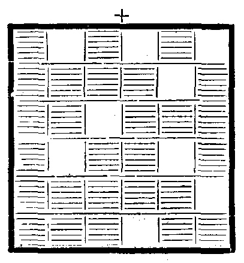
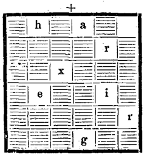
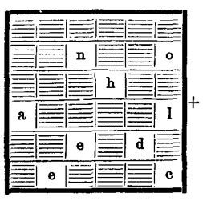
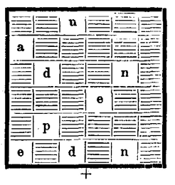
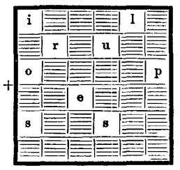

Triest, die Hauptstadt des Küstenlandes, theilt sich in zwei einander sehr wenig gleichende Städte: in eine neue und reiche, die Theresienstadt, die sich geradlinig am Rande der Bai erhebt, welcher der Mensch erst den festen Baugrund abringen mußte, und in eine alte, armselige; letztere ist unregelmäßig gebaut und liegt eingeklemmt zwischen dem Corso, der sie von der ersteren trennt, und den Abhängen der Höhen des Karst, deren Gipfel eine malerisch ausschauende Citadelle krönt.
In den Hafen von Triest hinein ragt der Molo von San Carlo, an dem vorzugsweise die Handelsschiffe ankern. Dort sammeln sich mit Vorliebe, und oftmals in beunruhigender Anzahl, Gruppen von jenen Umherlungerern, welche nicht Haus und nicht Herd kennen und deren Anzüge, Beinkleider, Jacken oder Westen der Taschen völlig entbehren könnten, weil ihre Eigenthümer niemals etwas besessen haben, was sie dort hinein hätten thun können und wahrscheinlich auch niemals dergleichen besitzen werden.
An jenem Tage aber, dem 18. Mai 1867, hat Einer oder der Andere vielleicht doch zwei Personen inmitten dieser Heimatlosen bemerkt, welche durch bessere Kleidungen sich auszeichneten. Es schien wenig wahrscheinlich, daß diese jemals wegen fehlender Gulden und Kreuzer in Verlegenheit gewesen waren, wenigstens sprach ihr Aussehen zu ihren Gunsten. Es waren, um der Wahrheit die Ehre zu geben, Männer, die auf Jeden einen günstigen Eindruck machen mußten.
Der Eine hieß Sarcany und nannte sich Tripolitaner, der Andere, ein Sicilianer, wurde Zirone gerufen. Nachdem Beide den Molo wenigstens zum zehnten Male abgeschritten hatten, machten sie auf der äußersten Spitze desselben Halt. Dort blickten sie nach dem Meere hinüber, welches westlich vom Golf von Triest den Horizont begrenzt, als müßte dort plötzlich das Schiff auftauchen, welches ihnen ihr Glück bringen sollte!
»Wie spät ist es?« fragte Zirone in seinem italienischen Dialect, den sein Gefährte ebenso geläufig sprach wie die Mundarten der übrigen Länder am Mittelmeer.
Sarcany gab keine Antwort.
»Was bin ich doch für ein Dummkopf!« rief der Sicilianer. »Es ist die Stunde, in der man Hunger verspürt, wenn man sein Frühstück einzunehmen vergessen hat.«
Die österreichischen, italienischen, slavischen Elemente zeigen sich in jenem Theile des österreichisch-ungarischen Reiches so miteinander vermischt, daß das Zusammenstehen unserer beiden Personen in keiner Weise die Aufmerksamkeit auf sich ziehen konnte, obwohl sie augenscheinlich sich als Fremde in jener Stadt aufhielten. Ueberdies konnte Niemand ahnen, daß ihre Taschen leer waren, denn sie trugen sich ziemlich stolz unter dem Kapuzenmantel, der ihnen bis auf die Stiefel hinabreichte.
Sarcany, der Jüngere von ihnen, von mittlerer Größe und gut gewachsen, mit eleganten Manieren und Bewegungen, stand im fünfundzwanzigsten Lebensjahre. Sarcany hieß er, ohne einen weiteren Zusatz. Einen Taufnamen führte er nicht. Und er war auch thatsächlich nicht getauft, da er, Afrikaner von Geburt, aus Tripolis oder Tunis stammte; trotzdem seine Gesichtsfarbe von einem dunklen Braun war, so glich er dennoch durch die Regelmäßigkeit der Züge mehr einem Weißen als einem Neger.
Wenn jemals eine Physiognomie täuschen kann, so war es bei Sarcany gewiß der Fall. Man hätte schon ein sehr scharfer Beobachter sein müssen, um aus diesem regelmäßig geformten Gesicht, den schwarzen und schönen Augen, der edlen Nase, dem wohlgeformten und von einem schwachen Barte beschatteten Munde die grenzenlose Verschlagenheit des jungen Mannes herauslesen zu können. Kein Auge wäre im Stande gewesen, auf diesem fast unbeweglichen Antlitze die Zeichen der Abscheu, der Mißachtung zu erkennen, welche ein unentwegter Kampf gegen die Gesetze der Gesellschaft ihm einzugraben pflegt. Wenn die Physiognomiker behaupten – und zwar behalten sie in den meisten Fällen Recht – daß Jeder, der sich verstellt, seiner Geschicklichkeit zum Trotze, gegen sich selbst zeugt, so stellte Sarcany dieser Behauptung eine förmliche Verneinung entgegen. Wer ihn sah, konnte nicht ahnen, was er war, was er gewesen. Seine Erscheinung rief in nichts den unbezwingbaren Widerwillen wach, den Spitzbuben und Räuber einzuflößen pflegen. Er war deshalb nur um so gefährlicher.
Wer konnte wissen, was die Kindheit Sarcany's gewesen war? Gewiß die eines Ausgesetzten. Wie war er erzogen worden und von wem? In welcher tripolitanischen Höhle hatte er in den ersten Jahren seines Lebens sein Dasein gefristet? Welche Aufmerksamkeit bewahrte ihn vor den vielfachen, zerstörenden Krankheiten jenes entsetzlichen Klimas? Niemand, fürwahr, wußte es zu sagen – vielleicht er selbst nicht einmal –; geboren durch Zufall, dem Zufalle überlassen, schien er bestimmt, dem Zufalle zu leben! Er hatte indessen während seiner Jünglingszeit eine gewisse praktische Bildung sich bereits anzueignen oder vielmehr zu empfangen gewußt; er dankte sie wahrscheinlich dem Umstande, daß sein bisheriges Leben ihn gezwungen hatte, die Welt zu durchstreifen, mit Leuten jeden Standes Gemeinschaft zu haben, Ausweg auf Ausweg zu finden, und wäre es nur, um des Tages Nothdurft zu befriedigen. So war er und in Folge verschiedener Umstände seit Jahren bereits mit einem der reichsten Häuser Triests in Verbindung gekommen, dem Hause des Bankiers Silas Toronthal, dessen Name mit dem Verlaufe unserer Geschichte eng verknüpft ist.
In dem Gefährten Sarcany's, dem Italiener Zirone, erblickt man nur einen von jenen Menschen, die Glauben und Gesetz nicht kennen, einen Abenteurer, der, zu allen Schandthaten bereit, dem ersten Besten, wenn er gut zahlt, oder dem Nächsten, der noch besser zahlt, zu Diensten steht, gleichviel zu welchem Geschäfte. Sicilianer von Geburt und in den dreißiger Jahren stehend, war er ebenso fähig, schlechte Rathschläge zu ertheilen, als sie anzunehmen und namentlich, sie auszuführen. Wo er geboren wurde, würde er vielleicht verrathen haben, wenn er es gewußt hätte. Er gestand jedenfalls nicht gerne ein, wo er zu Hause war, wenn er es überhaupt irgendwo war. In Sicilien hatte ihn eine von den Zufälligkeiten des Landstreicherlebens mit Sarcany in Verbindung gebracht. Sie waren dann gemeinsam in die Welt hinausgelaufen und hatten versucht, auf rechtem und auf unrechtem Wege ihr beiderseitiges Mißgeschick zu gemeinsamem Glück zu wenden. Zirone aber, ein großer, bärtiger Bursche mit sehr gebräuntem Teint und tiefschwarzem Haar, hatte nur mühsam die ihm angeborene Schurkerei zu verbergen gewußt, die seine stets halb geschlossenen Augen und das beständige Senken seines Kopfes verriethen. Unter einem Uebermaße von Schwatzhaftigkeit indessen suchte er seine Verschlagenheit zu verbergen. Er war im Uebrigen mehr heiter als traurig und ließ sich in demselben Maße gehen als sein Genosse sich verschlossen zeigte.
An dem genannten Tage aber sprach auch Zirone nur mit einer bemerkbaren Mäßigung. Die Essensfrage erfüllte ihn sichtlich mit Unruhe. Der Abend vorher hatte gelegentlich einer kleinen Partie in einer Spielhölle niedrigeren Ranges, woselbst sich das Glück allzu stiefmütterlich gezeugt, die Hilfsquellen Sarcany's völlig erschöpft. Beide wußten nicht, was nun werden sollte. Sie konnten nur auf den Zufall rechnen, und da diese Vorsehung der Lumpen sich nicht beeilte, auf dem Wege längs des Molos zu ihnen zu stoßen, so entschlossen sie sich, ihr durch die Straßen der Neustadt vorauszuwandern.
Dort auf den Plätzen, auf den Quais, auf den Promenaden diesseits und jenseits des Hafens, an den Landungsstellen des großen Canals, der Triest durchschneidet, geht, kommt, stößt sich, hastet und müht sich im Eifer des Geschäftes eine Bevölkerung von 70.000 Einwohnern italienischer Abstammung, deren Sprechweise, welche auch diejenige Venedigs ist, sich in dem kosmopolitischen Sprachenconcerte aller dieser Seeleute, Kaufleute, Commis, Handwerker verliert, in dem Idiome, das aus dem Deutschen, Französischen, Englischen und Slavischen hervorgegangen zu sein scheint.
Wenn auch diese Neustadt eine reiche ist, so soll damit durchaus nicht gesagt sein, daß diejenigen, welche man dort in den Straßen sieht, auch sämmtlich vom Glück begünstigte Sterbliche sind. Nein! Selbst die Geschicktesten würden nicht mit den englischen, armenischen, griechischen, jüdischen Kaufleuten wetteifern können, die das Pflaster Triests beherrschen und deren prächtige Paläste der Hauptstadt des österreichisch-ungarischen Reiches zur Zierde gereichen würden. Wer wollte die armen Teufel zählen, die sich vom frühen Morgen bis zum späten Abend dort in den vom Geschäftsverkehr erfüllten Avenuen umhertreiben, die von hohen, fest wie die Geldspinden verschlossenen Baulichkeiten eingefaßt sind, in denen wiederum Waaren jeder Gattung zur Schau liegen, wie es bei der von der Natur so äußerst begünstigten Lage dieses Freihafens am Ende des Adriatischen Meeres nicht anders sein kann! Wie viele von denen, die sich auf den Molen aufgepflanzt haben, wo aus den Schiffen der gewaltigsten Schiffsgesellschaft Europas, des österreichischen Lloyd, Massen von Reichthümern aus allen Theilen der Welt ausgeladen werden, haben nicht gefrühstückt und werden vielleicht nicht zu Mittag speisen! Wie viele Elende schließlich, wie sie sich auch zu Hunderten in London, Liverpool, Marseille, Havre, Antwerpen, Livorno finden, mischen sich unter die behäbigen Rheder in der Nachbarschaft der Arsenale, deren Betreten ihnen verboten ist, zeigen sich auf dem Platze vor der Börse, die ihnen nie ihre Thore öffnen wird, zu Füßen der Stufen des Tergesteums, woselbst die Bureaus des Lloyd und die Lesezimmer sich befinden, in denen die Gesellschaft in völliger Eintracht mit den Handelskammern ihr Leben fristet!
Unleugbar lebt in allen Hafenstädten der alten und neuen Welt eine ganz besondere Gattung von Unglücklichen, die nur diesen großen Mittelpunkten des Verkehrs eigenthümlich ist. Man weiß nicht, woher diese kommen; man hat keine Ahnung, woher sie der Wind geführt hat. Sie selbst wissen nicht, wo sie enden werden. Die Zahl derjenigen unter ihnen, die einst bessere Tage gesehen haben, ist eine beträchtliche. Es finden sich in ihren Reihen auch viele Ausländer. Die Eisenbahnen und die Handelsschiffe haben sie als überflüssige Ballaststücke zurückgelassen und nun belästigen sie das öffentliche Leben, aus dem die Polizei sie nicht mehr vertreiben kann.
Sarcany und Zirone verließen also den Molo, nachdem sie noch einen letzten Blick auf den Golf bis zum Leuchtthurme hin, der sich auf dem Vorgebirge von Santa Teresa erhebt, geworfen hatten; sie nahmen ihren Weg am Teatro Communale vorüber den Park entlang und gelangten auf die Piazza Grande, wo sie eine Viertelstunde hindurch um das aus Steinen des benachbarten Karstgebirges gebildete Bassin am Fußende der Statue Karls VI. promenirten.
Beide wendeten sich alsdann wieder nach links. Zirone blickte den Vorübergehenden gerade so ins Gesicht, als empfände er den lebhaften Wunsch, sie auszuplündern. Sie durchschritten darauf das ungeheure Quadrat des Tergesteums genau zu der Zeit, als die Börse zu Ende war.
»Die da ist bald eben so leer, wie die unsrige,« fühlte sich Zirone veranlaßt lachend zu sagen, trotzdem ihn gar keine Lachlust anwandelte.
Der gleichgiltige Sarcany schien auch durchaus nicht die Absicht zu haben, den schlechten Witz seines Gefährten verstehen zu wollen, der seine Glieder mit hungrigem Gähnen streckte.
Dann gingen sie über den dreigespitzten Platz, auf dem sich das bronzene Standbild des Kaisers Leopold I. erhebt. Ein Pfiff Zirone's – so ein echtes Bummlerpfeifen – veranlaßte ein Volk blauer Tauben in die Luft zu steigen, die unter dem Porticus der alten Börse hausen, gerade wie in Venedig die grauen Tauben zwischen den Procuratien des alten Marcusplatzes nisten. Nicht weit davon streckt sich der Corso aus, der das neue vom alten Triest trennt.
Er bildet eine breite, doch nicht gerade elegante Straße mit wohl ausgestatteten Läden und gleicht mehr der Regent-Street Londons und dem Broadway New-Yorks, als dem Boulevard des Italiens in Paris. Man sieht sehr viele Menschen dort, auch zieht sich eine ganz stattliche Reihe von Wagen von der Piazza Grande bis zur Piazza delle Legna, Namen, die den italienischen Ursprung der Stadt genugsam verrathen.
Während Sarcany scheinbar jeder Versuchung sich verschlossen zeigte, konnte Zirone an keinem Laden vorüber, ohne einen begehrlichen Blick auf die Begünstigten zu werfen, welchen es ihre Mittel erlaubten, jene zu betreten. Es gab da viele Dinge, die ihnen gewiß zugesagt hätten, namentlich bei den Händlern mit Lebensmitteln und in den Wirthshäusern, wo das Bier in Strömen fließt, mehr als in jeder anderen Stadt der österreichischen Monarchie.
»Auf diesem Corso werden Durst und Hunger noch fühlbarer,« bemerkte der Sicilianer, dessen Sprache wie ein Geklapper dürren Holzes zwischen seinen ausgetrockneten Lippen klang.
Sarcany beantwortete diesen Einwand nur durch ein Zucken der Achseln.
Sie bogen in die erste Straße auf der linken Seite ein, gelangten an das Ufer des Canals und überschritten diesen auf dem Ponte Rosso – einer Drehbrücke; dann gingen sie die Quais wieder hinauf, an denen selbst Schiffe mit starkem Wassergange anlegen können. Dort wurden sie unendlich weniger von der Anziehungskraft der Auslagen der Krämer belästigt. Auf der Höhe der Kirche San Antonio angelangt, wendete sich Sarcany plötzlich nach rechts. Sein Genosse folgte ihm, ohne einen Einwand zu erheben. Sie gelangten wieder auf den Corso und streiften von dort abenteuernd durch die alte Stadt, in deren engen Straßen die Wagen vielfach nicht mehr vorwärts kommen, da die ersteren sich an den unteren Abhängen des Karstes hinaufziehen; jene sind auch meistens in einer Weise angelegt, daß man von der fürchterlichen Bora, dem heftigen eisigen Windstrome des Nordostens, nichts zu befürchten hat. In diesem alten Triest mußten sich Sarcany und Zirone – diese beiden Habenichtse – mehr zu Hause fühlen, als inmitten der wohlhabenden Viertel der Neustadt.
Hier wohnten sie auch seit ihrer Ankunft in der Hauptstadt des Küstenlandes in der Verborgenheit eines bescheidenen Gasthauses, nicht weit von der Kirche Santa Maria Maggiore. Da aber der bis dahin noch unbezahlte Hotelier in Folge des Anwachsens der Tagesrechnung etwas zudringlich geworden war, so vermieden sie dieses gefährliche Cap; sie überschritten den Platz und spazierten eine kurze Zeit hindurch um den Arco di Riccardo herum.
Auf die Dauer aber konnte sie das Studium dieser Ueberreste römischer Architektur nicht befriedigen. Da auch der Zufall ersichtlich zögerte, hier in diesen wenig belebten Straßen zu ihnen zu stoßen, so begannen sie, Einer hinter dem Anderen, die rauhen Fußwege hinaufzuklimmen, welche fast bis auf den Gipfel des Karstes zur Terrasse der Kathedrale führen.
»Eine ganz besondere Idee das, hier hinaufzuklettern,« murmelte Zirone und zog den Ueberrock am Gürtel fester zusammen.
Aber er verließ seinen jüngeren Gefährten trotzdem nicht, und man hätte von unten gut erkennen können, wie sie sich über die Stufen hinaufwanden, welche man zu Unrecht Straßen genannt hat und welche die Böschungen des Karstes zu Schanden machen. Zehn Minuten später erreichten sie, noch abgespannter und hungriger als zuvor, die Terrasse.
Von diesem Punkte genießt man einen prächtigen Ausblick über den Golf bis zum offenen Meere, auf den von ein- und ausfahrenden Fischerfahrzeugen, von gehenden und kommenden Dampfern und Handelsschiffen belebten Hafen; das Auge umspannt die ganze Stadt, die Vorstädte, die letzten, an den Hügel sich lehnenden Häuser, die auf den Höhen zerstreut umherliegenden Landhäuser. Das Alles konnte jedoch unsere Abenteurer nicht reizen. Sie hatten schon genug andere Aussichten bewundert und überdies waren sie diesmal nur hinaufgestiegen, um ihren Verdruß und ihr Elend hier spazieren zu führen! Zirone namentlich hätte ein Umherschlendern vor den kostbaren Läden des Corso vorgezogen. Da auch hier oben ihr Suchen dem Zufalle und seinen glückspendenden Gelegenheiten galt, so mußten sie sich auch hier, ohne zu große Ungeduld zeigen zu können, auf das Warten verlegen.
Am äußersten Ende des Stufenganges, der zur Terrasse führt, lag nahe der byzantinischen Kathedrale von San Giusto ein eingefriedeter Raum, der einst ein Kirchhof gewesen, jetzt zum Alterthumsmuseum geworden war. Es befanden sich dort keine Gräber mehr, sondern nur noch Bruchstücke von Grabsteinen; unter den tief herabhängenden Zweigen schöner Bäume ruhten römische Obelisken, mittelalterliche Gedächtnißsäulen, Ueberreste von Triglyphen und Metopen aus verschiedenen Zeitabschnitten der Renaissance, verglaste Cuben, in denen noch Aschenreste erkenntlich waren, durcheinander im Grase.
Das Thor, welches zu besagtem Raume führte, stand offen. Sarcany brauchte es nur zurückzustoßen. Er trat, gefolgt von Zirone, ein, der sich damit begnügte, folgendes melancholische Erzeugniß seines Nachdenkens laut werden zu lassen:
»Wenn wir die Absicht hätten, unser Leben zu enden, so wäre das hier ein passender Ort!
Und wenn man es Dir vorschlagen würde? fragte Sarcany ironisch.
– So würde ich mich dessen weigern, lieber Kamerad! Man möge mir nur einen guten Tag unter zehn schlechten bereiten, mehr verlange ich nicht.
– Du wirst ihn erhalten – und mehr noch.
– Mögen alle Heiligen Italiens Dich hören, und Gott weiß, daß man sie nach Hunderten zählt!
– Komme nur,« antwortete Sarcany.
Sie betraten eine halbkreisartig zwischen zwei Reihen von Urnen angelegte Allee und ließen sich auf eine große römische Einsatzrose nieder, welche sich nur wenig über den Boden erhob.
Sie schwiegen erstlich – was Sarcany ganz besonders behagte, kaum aber seinem Genossen. Zirone ergriff denn auch bald, nach einem ein- oder zweimaligen, schlecht unterdrückten Gähnen, das Wort und sagte:
»Gottes Blut! Dieser Zufall, auf den wir dummer Weise rechneten, beeilt sich wirklich nicht mit seinem Kommen!«
Sarcany schwieg.
»Was ist das für ein Einfall, fuhr Zirone unbeirrt fort, ihn hier inmitten dieser Ruinen suchen zu wollen? Ich fürchte nur zu sehr, daß wir auf falscher Fährte sind, Kamerad! Welcher Teufel könnte sich auch hier auf diesem alten Kirchhofe verpflichten? Nicht einmal die armen Seelen brauchen ihn, da sie ihre sterbliche Hülle bereits verlassen haben! Und wenn ich mich erst einmal dort unten befinden werde, so soll mich ein versäumtes Mittagbrot oder ein aussichtsloses Abendessen wenig kümmern! Komm', lass' uns weitergehen!«
Sarcany, der, in tiefes Nachdenken versunken, den Blick theilnahmslos in die Ferne gerichtet hatte, athmete kaum.
Zirone ließ einige Minuten verstreichen, dann aber konnte er seine angeborene Schwatzhaftigkeit nicht mehr zügeln:
»Sarcany, meinte er, weißt Du, in welcher Gestalt ich diesen Zufall, der heute ganz und gar seiner alten Kinder vergißt, am liebsten sehen möchte? In der Gestalt eines der Cassenboten des Hauses Toronthal; er müßte hierher kommen, mit einem von Banknoten strotzenden Portefeuille und uns dieses Portefeuille im Auftrage seines Bankiers übergeben mit tausend Entschuldigungen, daß er uns so lange hatte warten lassen.
– Höre auf, Zirone! erwiderte Sarcany unter heftigem Zusammenziehen der Augenbrauen. Ich wiederhole Dir hiermit zum letzten Male, daß wir von Silas Toronthal nichts mehr zu erwarten haben.
– Bist Du Deiner Sache auch gewiß?
– Ja! Der Credit, den ich bei ihm hatte, ist jetzt vollständig erschöpft, und auf meine letzten Bitten hat er mir eine endgiltige Absage ertheilt.
– Das ist schlimm!
– Sehr schlimm, aber es ist nun einmal so!
– Gut, fing Zirone von Neuem an. Wenn Dein Credit erschöpft ist, so mußt Du unleugbar einen solchen besessen haben! Worauf beruhte denn dieser Credit? Darauf, daß Du mehrere Male Deine Intelligenz und Deinen Eifer in den Dienst des Bankhauses bei einigen gewissen – delicaten Geschäften gestellt hast. Auch hat sich Toronthal während der ersten Monate unseres Aufenthaltes in Triest gerade nicht zu verschlossen im Punkte der Geldfrage gezeigt. Ich kann es also nicht glauben, daß Du nicht von irgend einer Seite her noch Einfluß auf ihn besitzen solltest, und wenn Du ihm drohtest ...
– Wenn ich das könnte, hätte ich es schon gethan, antwortete Sarcany achselzuckend, und Du brauchtest nicht einem Mittagessen nachzujagen. Nein, ich schwöre es Dir, daß ich diesen Toronthal nicht in Händen habe, aber es kann noch dahin kommen und an dem Tage soll er mir Capital, Zinsen und Zinseszinsen von dem zahlen, dessen er sich heute weigert. Ich glaube übrigens, daß die Geschäfte seines Hauses augenblicklich ein wenig verwickelt liegen und daß seine Fonds in zweifelhafte Unternehmungen gesteckt sind. Die Nachwirkung einiger Fallissements in Deutschland, in Berlin und in München macht sich auch in Triest fühlbar und mir wollte es scheinen, was man auch immer sagen möge, daß Silas Toronthal bei meinem letzten Besuche in etwas gedrückter Stimmung sich befand. Wir wollen die Fluth ruhig sich verlaufen lassen und wenn sie verlaufen sein wird ...
– Schön, rief Zirone aus, bis dahin aber können wir nichts weiter als Wasser trinken. Sarcany, meine Meinung ist, daß Du noch einen letzten Versuch bei Toronthal machst. Man muß noch einmal an seine Geldkiste pochen und versuchen, wenigstens die Summe zu erhalten, die wir für eine Rückkehr nach Sicilien – über Malta – benöthigen.
– Und was wollen wir in Sicilien?
– Das ist nun meine Sache. Ich kenne das Land und könnte auch eine Bande Malteser hinüberführen, entschlossene, vorurtheilslose Jungens, mit denen sich schon etwas anfangen ließe. Tausend Teufel! Wenn es hier nichts zu unternehmen gibt, so laß uns abreisen und diesen verdammten Bankier zwingen, uns unsere Reisekosten zu bezahlen! So wenig Du auch aus ihm ziehen kannst, so viel wird es sein, daß er Dich lieber anderswo als in Triest weiß.«
Sarcany ließ den Kopf sinken.
»Ueberlege nur! So kann das nicht mehr weiter gehen! Wir sind am Ende angelangt,« setzte Zirone hinzu.
Er war aufgestanden und stampfte auf dem Boden umher, gerade als hätte er es mit einer Rabenmutter zu thun, die ihn nicht länger ernähren wollte.
In diesem Augenblicke wurde seine Aufmerksamkeit von einem Vogel abgelenkt, der außerhalb des umfriedeten Ortes ängstlich umherflatterte. Es war eine Taube, deren ermüdete Flügel kaum noch zuckten und die sich immer mehr gegen den Boden senkte.
Zirone fragte sich gewiß nicht, zu welcher der 177 Gattungen Tauben, welche das ornithologische Namensverzeichniß jetzt kennt, dieser Vogel gehörte; er sah nur eines, daß es ein eßbarer Gegenstand war. Er verschlang ihn bereits mit den Blicken, nachdem er seinem Gefährten ein Zeichen mit der Hand gegeben.
Das Thier war ersichtlich am Ende seiner Kräfte angelangt. Es blieb schon an den Vorsprüngen der Kathedrale hängen, deren Façade von einem hohen, viereckigen Thurme älteren Ursprunges flankirt wird. Es konnte nicht weiter, und zum Fallen geneigt, ließ es sich zuerst auf das Dach einer kleinen Nische nieder, welche das Bildniß des heiligen Justus schützt; seine ermüdeten Füße aber gaben ihm dort keinen Halt und so ließ es sich bis zum Capitäl einer antiken Säule niedergleiten, welche in die von dem Thurme und der Façade des Bauwerkes gebildete Ecke eingefügt war.
Während Sarcany noch immer unbeweglich und schweigsam kaum sich damit beschäftigte, der Taube Aufmerksamkeit zu schenken, ließ sie Zirone nicht aus den Augen. Sie kam aus dem Norden. Ein weiter Flug hatte diesen Zustand der Erschöpfung verursacht. Ersichtlich führte sie ihr Instinkt einem noch entfernteren Ziele zu. Sie nahm auch sogleich ihren Flug wieder auf; die Curve aber, die sie ähnlich einer Flintenkugel beschrieb, nöthigte sie zu einer abermaligen Rast genau auf den niedrig hängenden Zweigen eines der Bäume des alten Kirchhofes.
Zirone war entschlossen, sich des Thieres zu bemächtigen und fast kriechend näherte er sich leise dem Baume. Bald hatte er die Basis eines knorrigen Baumstumpfes erreicht, von der aus er ohne Mühe bis zur Vergabelung gelangen konnte. Hier kauerte er unbeweglich stumm in der Haltung eines Hundes nieder, der einem über seinem Kopfe verborgenen Stück Wildpret auflauert.
Die Taube, welche ihn nicht bemerkt hatte, wollte von Neuem auffliegen; aber die Kräfte ließen sie wiederum im Stiche und wenige Schritte nur vom Baume entfernt fiel sie zu Boden.
Mit einem Sprunge vorwärts stürzen, den Arm ausstrecken und den Vogel in der Hand haben, war für den Sicilianer das Werk eines Augenblickes. Es war nur natürlich, daß er sich sofort anschickte, dem armen Thiere das Lebenslicht auszublasen, plötzlich aber hielt er inne; er stieß einen Ruf der Ueberraschung aus und kam dann in aller Eile zu Sarcany gelaufen.
»Eine Brieftaube! rief er.
– Was weiter? Eine, die ihre letzte Reise gemacht haben wird, meinte Sarcany.
– Zweifellos, gab Zirone zur Antwort. Um so schlimmer für die, denen das Billet, welches unter dem Flügel steckt, zukommen sollte.
– Ein Billet? fuhr Sarcany empor. Warte, Zirone, warte! Das verdient einen Aufschub.«
Und er hielt die Hand desselben fest, die sich bereits um den Hals des Thieres schloß. Dann nahm er das Beutelchen, das bereits von Zirone losgelöst worden war, öffnete es und zog ein chiffrirtes Billet hervor.
Es enthielt nur achtzehn Worte, die, wie folgt, auf drei senkrechte Zeilen vertheilt worden waren:
Von einem Abgangs- und einem Bestimmungsort verlautete auf dem Zettel nichts. Würde es möglich sein, den Sinn der achtzehn, aus einer gleichen Anzahl von Buchstaben bestehenden Worte ohne Kenntniß des dazugehörigen Schlüssels zu enträthseln? Wenig Wahrscheinlichkeit war dafür vorhanden, wenigstens gehörte ein geschickter Dechiffreur dazu; es fehlte also wenig, daß das Billet sich als nicht entzifferbar erwies.
Sarcany stand vor dieser Geheimschrift, die ihn in nichts belehrte, zuerst sehr enttäuscht, dann sehr betroffen. Enthielt das Briefchen irgend eine wichtige Nachricht, vielleicht sehr bloßstellender Natur? Man konnte, ja man mußte es lediglich aus den Vorsichtsmaßregeln annehmen, die für den Fall getroffen waren, daß es in andere Hände als in diejenigen des Adressaten gelangen könnte und dann nicht gelesen werden dürfte. Ferner bewies die Benutzung des außerordentlichen Instinctes der Brieftaube, und nicht die Benutzung der Post oder des Telegraphendrahtes, daß es sich um eine Angelegenheit handelte, welche ein zuverlässiges Schweigen zur Bedingung ausmachte.
»In diesen Zeilen ruht vielleicht ein Geheimniß, sagte Sarcany, welches unser Glück ausmachen kann.
– Dann wäre also, antwortete Zirone, diese Taube die Darstellerin des Zufalles, dem wir heute Vormittag lange genug nachgelaufen sind. Gottes Blut! Und ich wollte sie erwürgen! ... Wie die Sache aber liegt, ist es das Wichtigste, daß wir den Boten haben und nichts soll uns daran hindern, uns diesen Boten schmecken zu lassen.
– Nur keine Uebereilung, Zirone, rief Sarcany, der so noch einmal dem Vogel das Leben rettete. Vielleicht besitzen wir in dieser Taube eine Handhabe, die es uns ermöglicht, die Bekanntschaft mit dem Adressaten des Billets zu machen, vorausgesetzt natürlich, daß er in Triest wohnt.
– Und was dann? Jener wird Dir doch nicht erlauben, zu lesen, was dieser Brief enthält, Sarcany?
– Nein, Zirone.
– Wir wissen auch nicht, woher er stammt.
– Allerdings nicht. Aber wenn ich von zwei Leuten, die Briefe miteinander wechseln, einen kenne, so kann mir dieser Umstand wohl behilflich sein, den zweiten kennen zu lernen. Mit einem Worte, ich glaube, man darf dieses Thier nicht tödten, sondern muß im Gegentheil ihm seine Kräfte wiedergeben, daß es an seinen Bestimmungsort gelangt.
– Mit dem Billet? fragte Zirone.
– Mit dem Billet, von dem ich aber zuvor eine genaue Abschrift nehmen werde; diese werde ich so lange bei mir behalten, bis die Gelegenheit gekommen sein wird, sie nutzbar zu machen.«
Sarcany zog ein Notizbuch aus seiner Tasche und copirte mit einem Bleistift das Schreiben. Da er wohl wußte, daß in den meisten Fällen die sichtbare Einordnung der Schriftzüge der Geheimschriften wohl bewahrt bleiben muß, so ließ er es sich angelegen sein, die Wortstellung genau zu beachten. Als das geschehen, behielt er die Abschrift in seinem Notizbuche, das Billet selbst steckte er wieder in den kleinen Sack und letzteren unter den Flügel der Taube.
Zirone sah ihm zu, er konnte indessen die Hoffnungen auf das Glück nicht theilen, welches dieser Vorfall herbeiführen sollte.
»Und was nun? fragte er.
– Jetzt, erwiderte Sarcany, lasse Deine Sorgfalt dem Boten angedeihen.«
Die Taube war mehr durch Hunger als von der Ermüdung mitgenommen. Auch waren die Flügel unverletzt und zeigten weder einen Bruch noch eine Beschädigung; es bewies das also, daß ihre augenblickliche Schwäche nicht durch ein Schrotkorn eines Jägers oder durch den Steinwurf eines nichtsnutzigen Jungen veranlaßt worden war. Sie hatte Hunger und Durst, sonst fehlte ihr nichts.
Zirone suchte also und fand zu ebener Erde einige Körner, welche das Thier gierig verschluckte; mit fünf oder sechs Tropfen aus einer kleinen Wasseransammlung, welche der letzte Regenguß in einem Bruchstücke antiker Töpferarbeit zurückgelassen hatte, stillte es seinen Durst. Eine halbe Stunde nach ihrer Ergreifung war somit die gestärkte und ausgeruhte Taube im Stande, ihren unterbrochenen Flug wieder aufzunehmen.
»Wenn sie noch weit zu fliegen hat, ließ Sarcany sich hören, wenn ihre Bestimmung sie noch über Triest hinausführt, so geht es uns wenig an, ob sie unterwegs fällt; denn wir würden sie doch bald aus den Augen verlieren und können ihr unmöglich folgen. Wenn sie aber zu einem Triester Hause gehört, dort erwartet wird und daselbst sich niederlassen muß, so ist sie gekräftigt genug, um es erreichen zu können, denn sie hat bis dahin nur eine oder zwei Minuten zu fliegen.
– Du hast vollständig recht, antwortete der Sicilianer. Aber werden wir auch bis dahin, wo sie ihren Schlag hat, blicken können, selbst wenn sie nur bis Triest und nicht weiter fliegt?
– Wir wollen wenigstens unser Möglichstes in dieser Hinsicht thun,« meinte Sarcany gelassen.
Es geschah Folgendes:
Die aus zwei alten romanischen Kirchen bestehende Kathedrale, von denen die eine der heiligen Jungfrau, die andere dem Schutzpatrone von Triest, dem heiligen Justus geweiht ist, wird von einem hohen Thurme gestützt, der sich auf der Ecke jenes Theiles der Façade erhebt, in welcher sich die große Einsatzrose befindet; unterhalb dieser öffnet sich das Hauptthor des Gebäudes. Dieser Thurm beherrscht das Plateau des Karstes und die Stadt breitet sich unter ihm wie eine in Relief gearbeitete Karte aus. Von diesem hochgelegenen Punkte aus übersieht man mit Leichtigkeit das Geviert ihrer Hausdächer, von den Abhängen des Hügels an bis zum Ufer des Golfes. Es war also nicht unmöglich, dem Fluge der Taube zu folgen, wenn man sie von der Spitze jenes Thurmes aus auffliegen ließ, und zweifellos, daß man das Haus, auf dem sie sich dann niederließe, gut erkennen würde, vorausgesetzt eben, daß ihr Bestimmungsort Triest, und nicht eine andere Stadt der istrischen Halbinsel war.
Der Versuch mußte gelingen. Wenigstens verdiente er eine Probe. Es war vorläufig nichts weiter zu thun, als dem Thiere die Freiheit wiederzugeben.
Sarcany und Zirone verließen also den alten Kirchhof, überschritten den kleinen Platz vor der Kirche und wendeten sich dem Thurme zu. Eine der Spitzbogenthüren stand offen – zufällig diejenige, welche sich unter dem senkrecht unter der Nische des heiligen Justus befindlichen antiken Traufdache aufthut. Beide Männer traten ein und begannen die rohen Stufen der Wendeltreppe hinaufzusteigen, welche zu dem oberen Stockwerke führen.
Sie brauchten zwei bis drei Minuten, ehe sie den Ausblick erreichten, der sich unter dem Dache des Thurmes selbst befindet, da diesem eine äußere Gallerie fehlt. Hier oben sind auf jeder Seite des Thurmes zwei Fenster angebracht; sie geben dem Besucher die Möglichkeit, den Blick nach allen Seiten schweifen zu lassen, so weit der doppelte Horizont des Meeres und des Gebirges es gestattet.
Sarcany und Zirone postirten sich an dasjenige Fenster, welches in der Richtung nach Nordwest, direct auf Triest zu gelegen ist.
Die Uhr in dem alten Schlosse aus dem sechzehnten Jahrhunderte, welches auf der Rückseite der Kathedrale den Karst krönt, schlug gerade die vierte Stunde. Es war also noch heller Tag. Inmitten einer klaren Luft sank die Sonne langsam zum Adriatischen Meere hinab und die meisten Häuser der Stadt wurden auf der Seite, die dem Thurme zugekehrt war, von ihren Strahlen übergossen.
Die Umstände lagen also so günstig als irgend möglich.
Sarcany nahm die Taube zwischen seine Hände, er ließ ihr edelmüthig noch eine letzte Liebkosung zu Theil werden und warf sie in die Luft.
Sie regte die Flügel, doch ließ sie sich zuerst pfeilschnell hinab, wohl aus Furcht, ein zu jäher Sturz könnte ihrem luftigen Botendienste ein Ende machen.
Ein lauter Schrei der Enttäuschung entfuhr dem sehr aufgeregten Sicilianer.
»Ha, sie erhebt sich wieder!« rief Sarcany.
Und in der That, die Taube begann in der unteren Luftschicht ihr Gleichgewicht wiederzufinden; sie schlug einen Haken und wandte sich in schräger Richtung dem nordwestlichen Theile der Stadt zu.
Sarcany und Zirone ließen sie nicht aus den Augen.
Der Flug des Thieres, welches von einem wunderbaren Instinct geleitet wurde, zeigte kein Schwanken. Man fühlte, daß sie dahin flog, wohin sie zu fliegen hatte, dorthin, wo sie schon vor einer Stunde eingetroffen wäre, wäre ihr nicht unter den Bäumen des alten Kirchhofes ein gezwungener Aufenthalt bereitet worden.
Sarcany und sein Genosse beobachteten die Taube mit einer fast ängstlichen Aufmerksamkeit. Sie fragten sich, ob sie wohl über die Mauern der Stadt hinaus fliegen würde, in welchem Falle ihr Vorhaben zu Wasser geworden wäre.
Sie hatten Glück.
»Ich sehe sie noch immer! rief Zirone, der ein ungemein scharfes Auge besaß.
– Wir müssen namentlich aufpassen, antwortete Sarcany, wo sie sich niederlassen wird, um danach die Lage der Dinge genau feststellen zu können.«
Einige Minuten nach ihrem Auffluge senkte sich die Taube auf ein Haus, dessen spitzer Giebel die anderen überragte. Es lag inmitten einer Baumgruppe, in jenem Theile der Stadt, in welchem sich das Hospital und der öffentliche Park befinden. Dort schlüpfte sie in ein Mansardenfenster, wie man deutlich erkennen konnte, über welchem eine Wetterfahne aus Schmiedeeisen sich drehte, die gewiß aus der Hand von Quentin Messys hervorgegangen wäre, wenn Triest in Flamland gelegen hätte.
Einen allgemeinen Ueberblick hatte man nun gewonnen, und es konnte nicht sehr schwer fallen, wenn man die leicht erkennbare Wetterfahne zum Ausgangspunkte der Operationen nahm, den Giebel aufzufinden, in welchem besagtes Mansardenfenster angebracht war, und somit das Haus, in welchem der Empfänger des Billets wohnte.
Sarcany und Zirone stiegen schnell hinunter; sie gingen durch die Abhänge des Karstes und einige kurze Straßen entlang, die sie zur Piazza della Legna brachten. Dort mußten sie sich weiter orientiren, um die Häusergruppe ausfindig machen zu können, aus der sich der östliche Stadttheil zusammensetzt.
Angelangt an dem Zusammenflusse der zwei größten Adern der Stadt, der Corsa Stadion, die zum öffentlichen Garten führt, und dem Acquedotto, einer schönen Baumallee, durch die man zu der großen Bierwirthschaft des Boschetto gelangt, waren unsere Abenteurer einen Augenblick im Zweifel, welche Richtung sie einschlagen sollten. Mußte man sich nach links oder rechts wenden? Instinctiv schlugen sie die Richtung nach rechts ein, mit der Absicht, die Häuser der Allee nacheinander in Augenschein zu nehmen, deren Baumgipfel, wie sie bemerkt hatten, die Wetterfahne überragte.
Sie gingen also den Acquedotto entlang und beobachteten dabei genau die verschiedenen Häuser und Giebel, ohne indessen finden zu können, was sie suchten. So gelangten sie bis an das Ende der Allee.
»Da ist sie!« rief endlich Zirone.
Und er zeigte auf eine Wetterfahne, welche der Seewind um ihren eisernen Ständer drehte; unterhalb derselben war ein Dachfenster zu sehen, durch das einige Tauben ein- und ausschlüpften.
Da war also kein Irrthum möglich. Dort war es gewesen, wo sich die Brieftaube niedergelassen hatte.
Das bescheiden aussehende Haus verlor sich hinter dem Baumschmucke des Acquedotto, der den Anziehungspunkt desselben bildet.
Sarcany zog in den benachbarten Läden einige Erkundigungen ein und hatte bald erfahren, was er wissen wollte.
Das Haus gehörte und wurde schon seit einer Reihe von Jahren bewohnt vom Grafen Ladislaus Zathmar.
»Wer ist der Graf Zathmar? fragte Zirone, dem dieser Name nichts bedeutete.
– Er ist eben der Graf Zathmar, erwiderte Sarcany.
– Wir könnten vielleicht fragen ...
– Später, Zirone, nur nichts überstürzen. Nachdenken, Ruhe bewahren und jetzt in unsere Herberge.
– Ja ... jetzt ist ja auch die Stunde gekommen, wo Diejenigen, welche das Recht dazu haben, sich zum Mittagessen hinsetzen, bemerkte Zirone mit Ironie.
– Wenn wir auch heute nicht zu Mittag essen, antwortete Sarcany, so werden wir vielleicht morgen diniren.
– Bei wem?
– Wer weiß, Zirone? Vielleicht beim Grafen Zathmar.«
Sie schlenderten langsam dahin – wozu auch eilen? – und hatten bald ihr bescheidenes Hotel erreicht, das trotzdem noch zu kostbar für sie war, denn sie konnten ja nicht einmal ihr Nachtquartier bezahlen.
Welche Ueberraschung wurde ihnen dort zu Theil! Ein Brief für Sarcany war soeben angekommen.
Derselbe enthielt einige Bankbillets im Betrage von zweihundert Gulden und folgende Worte:
»Anbei das letzte Geld, welches Sie von mir erhalten. Es dürfte für Ihre Rückkehr nach Sicilien ausreichen. Reisen Sie ab, damit ich nichts mehr von Ihnen höre.
Silas Toronthal.«
»Es lebe der gute Gott! jubelte Zirone, der Herr Bankier kommt uns sehr gelegen. Man sollte ganz entschieden an diesen Herren von der Börse nie verzweifeln.
– Das meine ich auch, sagte Sarcany.
– Dieses Geld wird also dazu dienen, Triest zu verlassen?
– Nein, hierzubleiben!«
Die Ungarn oder Magyaren kamen gegen das neunte Jahrhundert der christlichen Zeitrechnung ins Land. Sie bilden noch den dritten Theil der ganzen Bevölkerung Ungarns – mehr als 5 Millionen Seelen. Ob sie nun spanischen Ursprunges sind, egyptischen oder barbarischen, ob sie von den Hunnen Attilas stammen oder von den nordischen Finnen – die Meinungen stehen sich schroff gegenüber – es thut wenig zur Sache. Zu beachten ist nur, daß die Ungarn keine Slaven sind, aber auch keine Deutschen.
Sie haben sich auch ihre Religion zu erhalten gewußt und sich seit dem elften Jahrhunderte als eifrige Katholiken gezeigt – damals empfingen sie den neuen Glauben. Sie sprechen auch noch ihre alte Sprache, die sanfte, harmonienreiche Muttersprache, die jeden Gegenstand mit den Reizen der Poesie schmückt; sie ist nicht so reich als die deutsche, aber geschlossener, energischer, eine Sprache, die vom vierzehnten bis zum sechzehnten Jahrhundert das Latein in den Gesetzen und Verordnungen verdrängte und eine Zukunft als Sprache des Volkes vor sich sah.
Am 21. Jänner 1699 kam Ungarn und Siebenbürgen durch den Vertrag von Carlowitz an Oesterreich.
Zwanzig Jahre später erklärte die pragmatische Sanction feierlich, daß die Staaten Oesterreich-Ungarn unzertrennlich seien. In Ermangelung eines Sohnes sollte die Krone auch auf die Tochter übergehen können, nach dem Gesetze der Primogenitur. Dank diesem neuen Statute bestieg Maria Theresia im Jahre 1749 den Thron ihres Vaters Karl VI., des letzten Sprossen der männlichen Linie des Hauses Oesterreich.
Die Ungarn mußten sich der Gewalt fügen.
Zu der Zeit, in welcher unsere Erzählung anhebt, gab es einen hochgeborenen Ungarn, dessen Leben nur der Hoffnung galt, seinem Lande die einstige Selbstständigkeit wiederzugeben. Er hatte in seiner Jugend noch Kossuth gekannt und obwohl seine Abstammung und seine Erziehung ihn hinderten, in wichtigen politischen Fragen mit diesem denselben Strang zu ziehen, so hatte er dennoch das große Herz dieses Vaterlandsfreundes bewundern müssen.
Der Graf Mathias Sandorf bewohnte in einem der Comitate Siebenbürgens, im District von Fogaras, ein altes Schloß feudalen Ursprunges. Dieses Schloß, auf einer der nördlichen Spitzen der östlichen Karpathen errichtet, welche Siebenbürgen von der Walachei trennen, erhob sich auf dieser zerklüfteten Gebirgskette in seiner ganzen wilden Schönheit, wie einer solcher letzten Zufluchtsorte, in denen sich Verschworene bis zum Aeußersten halten können.
Benachbarte Minen, deren Gehalte an Eisen und Kupfererzen sorgfältig ausgebeutet wurden, bildeten für den Besitzer des Schlosses Artenak eine sehr bedeutende Einnahmequelle. Diese Domäne umfaßte einen Theil des Districtes von Fogaras, dessen gesammte Bevölkerung sich auf wenigstens 72.000 Einwohner beläuft. Diese, Städter und Bauern, machten kein Hehl daraus, daß sie dem Grafen wandellos treu ergeben waren; für die Wohlthaten, die er dem Lande erwiesen, dankten sie ihm mit grenzenloser Anhänglichkeit. Daher war dieses Schloß der Gegenstand einer ganz besonderen Ueberwachung, welche von der ungarischen Kanzlei in Wien, die völlig unabhängig von den anderen Ministerien des Reiches arbeitet, in Scene gesetzt worden war. Man kannte hohen Ortes die Ansichten des Herrn von Artenak und fühlte sich dieserhalb beunruhigt, wenn nicht gar wegen der Persönlichkeit des Grafen selbst.
Mathias Sandorf war damals 35 Jahre alt. Seine Figur, die etwas über das Durchschnittsmaß hinausging, verrieth eine bedeutende Muskelstärke. Auf breiten Schultern ruhte ein Kopf mit einer edlen und stolzen Haltung. Das etwas eckige Gesicht, dessen Farbe eine warm angehauchte war, zeigte den magyarischen Typus in voller Reinheit. Die Lebhaftigkeit seiner Bewegungen, die Knappheit seiner Rede, der feste und gemessene Blick seines Auges, die lebendige Circulation seines Blutes, welche sich den Nasenflügeln mittheilte, ein schwaches Zucken in den Mundwinkeln, ein gewohnheitsmäßiges Lächeln auf den Lippen, das untrügliche Zeichen von Güte, eine gewisse Aufgeräumtheit im Gespräche und in den Geberden – alles das kündete eine freimüthige und hochherzige Natur an.
Einer der hervorragendsten Charakterzüge des Grafen Sandorf war, daß er noch nie eine Beleidigung verziehen hatte und nie eine solche verzeihen konnte, welcher seine Freunde zum Opfer fielen, während er sich um seiner selbst willen sehr unbesorgt zeigte und bei Gelegenheit sogar zu einem ihm zugefügten Unrecht gute Miene zu machen im Stande war. Er besaß einen in hohem Grade entwickelten Gerechtigkeitssinn und haßte jede Treulosigkeit. Daraus entsprang bei ihm eine persönliche Unversöhnlichkeit. Er gehörte durchaus nicht zu denen, welche Gott allein die Sorge überlassen, die Strafen in dieser Welt auszutheilen.
Es muß hier betont werden, daß Mathias Sandorf eine sehr ernste Erziehung genossen hatte. Anstatt der ihm durch sein Vermögen gebotenen Muße zu fröhnen, war er seinen Liebhabereien gefolgt, die ihn zum Studium der physikalischen und medicinischen Wissenschaften führten. Er wäre ein sehr talentirter Arzt geworden, wenn die Nothwendigkeit, davon leben zu müssen, ihm Kranke in die Behandlung gegeben hätte. Er begnügte sich daher damit, ein von den Gelehrten sehr geschätzter Chemiker zu sein. Die Pester Universität, die Akademie der Wissenschaften in Preßburg, die königliche Bergbauakademie in Schemnitz, die Normalschule in Temesvar hatten ihn nacheinander zu ihren begabtesten Schülern gezählt. Dieses vom Studium erfüllte Leben vervollständigte und bestärkte seine natürlichen Anlagen. Es machte aus ihm einen Mann in der weitgehendsten Bedeutung des Wortes. Als ein solcher wurde er auch von allen denjenigen betrachtet, die ihn kannten, und ganz besonders von seinen Professoren an den verschiedenen Schulen und Universitäten des Königreiches, welche seine Freunde geblieben waren.
Einst herrschten im Schlosse von Artenak Heiterkeit, Leben und Bewegung. Auf dem rauhen Bergrücken dort gaben sich die Jäger Siebenbürgens gern ein Stelldichein. Große und gefährliche Treibjagden wurden dort abgehalten, bei welchen die nach Kampf lüsternen Instincte des Grafen ihre vollkommene Befriedigung fanden, denn auf dem Felde der Politik hatten sie voraussichtlich keine Uebung zu erwarten. Er hielt sich bei Seite und betrachtete nahebei den Verlauf der Dinge. Er schien sich nur um sich selbst zu kümmern, seine Aufmerksamkeit zwischen seinen Studien und jenem Leben auf großem Fuße zu theilen, welches ihm sein stattliches Vermögen zu führen erlaubte. Damals lebte Gräfin Réna Sandorf noch. Sie war die Seele aller gesellschaftlichen Vereinigungen auf Schloß Artenak. Fünfzehn Monate vor Beginn unserer Geschichte jedoch hatte sie der Tod in voller Jugend und Schönheit dahingerafft; dem Grafen war nur ein kleines Töchterchen geblieben, das jetzt zwei Jahre zählte.
Graf Sandorf traf dieser Schicksalsschlag furchtbar. Lange Zeit hindurch blieb er jedem Troste verschlossen. Im Schlosse wurde es still und einsam. Sein Herr lebte dort unter dem Eindrucke des tiefen Schmerzes wie in einem Kloster. Seine ganze Sorge galt seinem Kinde, welches den Händen der Frau des gräflichen Intendanten, Rosena Landeck, anvertraut wurde. Dieses noch junge, vortreffliche Geschöpf widmete sich ausschließlich dem Dienste der einzigen Erbin der Sandorf's, ihre Bemühungen glichen denen einer zweiten Mutter.
Während der ersten Monate seiner Witwerschaft verließ Graf Sandorf Schloß Artenak nicht. Er schöpfte Sammlung aus den Erinnerungen an die Vergangenheit und lebte von diesen. Dann gewann der Gedanke an die untergeordnete Stellung seines Vaterlandes in Europa in ihm die Oberhand.
Der französisch-italienische Krieg von 1859 hatte der österreichischen Macht einen heftigen Stoß versetzt.
Dieses Unglück wurde nach sieben Jahren, 1866, noch durch die Niederlage von Sadowa vermehrt. An dieses Oesterreich, welches seine italienischen Besitzungen verloren hatte, an dieses von zwei Seiten besiegte Oesterreich sah sich Ungarn noch gefesselt. Die Siege von Custozza und Lissa hatten in den Augen der Ungarn die Schlappe von Sadowa nicht zu tilgen vermocht.
Graf Sandorf hatte während des folgenden Jahres sorgfältig das politische Terrain gemustert und erkannt, daß eine auf Theilung des Reiches gerichtete Bewegung vielleicht gelingen könnte.
Der Augenblick zum Handeln war also gekommen. Am 3. Mai desselben Jahres, 1867, hatte er sein Töchterchen umarmt, es der sorgsamen Pflege von Frau Rosena Landeck überantwortet und sein Schloß Artenak verlassen. Er war nach Pest gereist, woselbst er sich mit Freunden und Parteigenossen in Verbindung setzte und vorbereitende Verfügungen traf; einige Tage später war er in Triest eingetroffen, um daselbst die Ereignisse abzuwarten.
Hier sollte sich die Centralstelle der Verschwörung befinden. Von hier sollten alle Fäden, welche sämmtlich Graf Sandorf in der Hand hatte, auslaufen. In dieser Stadt konnten die Führer der Verschwörung, vielleicht weil sie weniger beobachtet wurden, mit größerer Sicherheit arbeiten, jedenfalls aber mit mehr Freiheit, um dieses patriotische Werk zu einem glücklichen Ende zu führen.
In Triest lebten zwei der intimsten Freunde des Grafen. Von demselben Gedanken erfüllt, waren sie entschlossen, dieser Unternehmung bis zum Ende treu zu bleiben. Graf Ladislaus Zathmar und Professor Stephan Bathory waren ebenfalls Ungarn und von vornehmer Abkunft. Beide, wohl zehn Jahre älter als der Graf, standen fast vermögenslos da. Der Eine bezog einige dürftige Einkünfte aus einem kleinen Landgute im Comitate von Lipto, das zum Kreise jenseits der Donau gehört; der Andere lehrte Physik in Triest und lebte nur von dem Ertrage des ertheilten Unterrichtes.
Ladislaus Zathmar bewohnte das von Sarcany und Zirone entdeckte Haus im Acquedotto, ein bescheidenes Heim, welches er dem Grafen Mathias Sandorf zur freien Verfügung gestellt hatte während der ganzen Zeit, welche dieser fern von seinem Schlosse Artenak zubringen würde, das heißt also, bis zum Ende der beschlossenen Bewegung, wie immer dieses auch ausfallen würde. Ein fünfundfünfzigjähriger Ungar, Namens Borik, stellte das gesammte Hauspersonal vor. Er war ein Mann, der seinem Herrn ebenso ergeben war, wie der Intendant Landeck dem Grafen Sandorf.
Stephan Bathory hatte eine nicht weniger bescheidene Wohnung in der Corsia Stadion inne, also fast in demselben Stadttheile wie Graf Zathmar. Sein ganzes Interesse drehte sich um seine Frau und seinen Sohn Peter, der damals acht Jahre alt war.
Bathory gehörte zwar nicht in gerader Linie, jedoch nachweislich zu dem Stamme jener magyarischen Fürsten, welche im sechzehnten Jahrhunderte den Thron Siebenbürgens innehatten. Die Familie hatte sich gespalten und seit jener Zeit in zahlreiche Abzweigungen verloren, und man wäre sicherlich erstaunt gewesen, einen der letzten Abkömmlinge in einem bescheidenen Professor der Preßburger Akademie wiederzufinden. Davon ganz abgesehen, war Stephan Bathory ein Gelehrter ersten Ranges, einer von denen, die in der Zurückgezogenheit leben und durch ihre Arbeiten berühmt werden. » Inclusum labor illustrat«, diese Devise, die man dem Seidenwurm ertheilt, hätte auch die seinige sein können. Eines Tages zwangen ihn seine politischen Ansichten, aus denen er kein Hehl machte, seine Entlassung zu fordern, und damals war es, als er sich in Triest als unabhängiger Professor mit seiner Frau niederließ, welche ihm in seinen Prüfungen wacker zur Seite gestanden war.
In der Behausung von Ladislaus Zathmar vereinigten sich seit der Ankunft des Grafen Sandorf die drei Freunde, obgleich der Letztere absichtlich darauf bestanden hatte, eine Wohnung im Palazzo Modello – oder richtiger Hotel Delorme – auf der Piazza Grande für sich zu miethen. Die Polizei hatte keine Ahnung davon, daß das Haus im Acquedotto die Centralstelle einer Verschwörung war, welche zahlreiche Anhänger in den größten Städten des Reiches hatte.
Ladislaus Zathmar und Stephan Bathory hatten sich ohne Bedenken zu ergebenen Bundesgenossen des Grafen Sandorf bekannt. Sie hatten ebenso, wie er, eingesehen, daß die Umstände sehr wohl einer Bewegung dienlich sein könnten, welche Ungarn die Machtstellung in Europa wiedergeben würde, die es ehrgeizig für sich erstrebte. Dieser Plan kostete sie vielleicht ihr Leben, das wußten sie wohl, doch ließen sie sich deshalb von ihrem Vorhaben nicht abhalten. Das Haus im Acquedotto wurde also der Sammelplatz der hervorragendsten Führer der Verschwörung. Eine große Zahl von Parteigängern, aus den verschiedensten Theilen des Landes hierher entboten, holten sich von hier ihre Befehle. Ein Brieftaubendienst, der zur Ueberbringung von Mittheilungen eingerichtet wurde, stellte eine schnelle und sichere Verbindung zwischen Triest, den bedeutendsten Städten Ungarns und Siebenbürgens her, als es sich um Unterweisungen zu handeln begann, welche weder der Post noch dem Telegraphen anvertraut werden durften. Kurz, die Vorsichtsmaßregeln waren so vorzüglich getroffen, daß auf die Verschwörer bis dahin auch nicht der geringste Verdacht gefallen war.
Uebrigens wurde auch, wie man weiß, die Correspondenz nur in chiffrirter Sprache geführt, und zwar nach einer Methode, die, weil sie Geheimhaltung erforderte, eine unbedingte Sicherheit gewährte.
Drei Tage nach Ankunft jener Brieftaube, deren Billet von Sarcany aufgefangen war, am 21. Mai, gegen acht Uhr Abends, befanden sich Ladislaus Zathmar und Stephan Bathory im Arbeitscabinet in der Erwartung der Rückkehr von Mathias Sandorf. Seine persönlichen Angelegenheiten hatten ihn jüngst genöthigt, nach Siebenbürgen und auf sein Schloß Artenak zurückzukehren; die Reise war ihm aber insofern von Nutzen, als sie ihm ermöglichte, mit seinen Freunden in Klausenburg, der Hauptstadt der Provinz, conferiren zu können, und nun sollte er am besagten Tage von dort wieder eintreffen, nachdem er jenen den Inhalt der Depesche mitgetheilt, von der Sarcany eine Abschrift genommen hatte.
Seit der Abreise des Grafen Sandorf waren noch andere Briefe zwischen Triest und Budapest ausgetauscht, auch waren mehrere chiffrirte Billets durch Tauben überbracht worden. Gerade in diesem Augenblicke beschäftigte sich Ladislaus Zathmar damit, die Geheimschrift mit Hilfe derjenigen Einrichtung in verständliche Worte zu bringen, die unter der Bezeichnung »Gitter« bekannt ist.
Diese Depeschen waren in Wahrheit nach einem sehr einfachen System erdacht worden, nach demjenigen der Buchstabenumstellung. In diesem System behält jeder Buchstabe seinen alphabetischen Werth, b bedeutet also auch b, o heißt o und so fort. Aber die Buchstaben werden der Reihe nach umgestellt gemäß den leeren oder besetzten Feldern des Gitters, welches, auf die Depesche gelegt, die Buchstaben nur in der Reihenfolge erscheinen läßt, nach der sie zu lesen sind und die übrigen verdeckt. Diese Gitter sind schon vor Alters angewendet, doch neuerdings nach dem System des Oberst Fleißner sehr vervollständigt worden; sie gelten bis jetzt noch als das beste und sicherste Verfahren, wenn es sich darum handelt, eine unentzifferbare Geheimschrift zu erhalten. Alle anderen Umkehrungsmethoden – gleichviel, ob es Systeme mit unveränderlicher Basis oder einfache Schlüsselsysteme sind, bei welchen jeder Buchstabe des Alphabets stets durch denselben Buchstaben oder durch dasselbe Zeichen angedeutet wird, oder ob Systeme mit veränderlicher Basis oder doppelte Schlüsselsysteme, bei denen man bei jedem Buchstaben mit dem Alphabete wechselt – gewähren keine ausschließliche Sicherheit. Einzelne geübte Entzifferer sind im Stande, in dieser Art von Ermittlungen dadurch Wunderdinge zu leisten, daß sie mit einer Wahrscheinlichkeitsberechnung oder einem bloßen Umhertappen operiren. Sie stützen sich auf nichts weiter als auf die Buchstaben, deren häufigerer Gebrauch auch ein zahlreicheres Vorkommen in der Gesammtheit bedingt – e in der französischen, englischen und deutschen, o in der spanischen, a in der russischen, e und i in der italienischen Sprache – und kommen so dahin, den Buchstaben im chiffrirten Texte die Bedeutung unterzulegen, welche sie in dem übertragenen Wortlaute haben. Es gibt wenige, nach diesen Methoden chiffrirte Depeschen, welche ihren klugen Berechnungen sich verschließen können.
Es scheint doch, daß die Gitter oder die chiffrirten Wörterbücher – das heißt also solche, in denen gewisse gebräuchliche Worte, welche geschlossene Redensarten bedeuten, durch Zahlen angegeben werden – die vollkommensten Garantien für die Unmöglichkeit der Entzifferung bieten. Aber diese beiden Systeme haben einen bedenklichen Nachtheil: sie erfordern ein absolutes Geheimhalten oder vielmehr die Verpflichtung, wo man auch immer sein möge, niemals in die Hände Fremder die Zurichtungen oder Bücher fallen zu lassen, welche zu ihrer Herstellung dienen. Während man ohne Gitter oder Wörterbuch nie dahin kommen kann, diese Depeschen zu lesen, ist alle Welt im Stande, sie zu verstehen, sobald das Wörterbuch oder das Gitter gestohlen worden sind.
Mit Hilfe eines Gitters also, beziehungsweise eines Ausschnittes aus Pappe, welcher an mehreren Stellen durchlöchert war, wurden die Correspondenzen des Grafen Sandorf und seiner Genossen hergestellt; durch ein Uebermaß von Vorsicht aber konnten ihnen selbst dann keine Unannehmlichkeiten entstehen, wenn die Gitter, welche er und seine Freunde benützten, verloren gingen oder gestohlen wurden; denn jede Depesche wurde sofort, nachdem sie der eine oder der andere Theil gelesen, vernichtet. Es konnte also niemals eine Spur dieses Complottes zurückbleiben, für welches die edelsten Herren, die Magnaten Ungarns, zugleich mit den Vertretern der Bürgerschaft und des Volkes ihren Kopf einsetzten.
Gerade als Ladislaus Zathmar die letzten Depeschen verbrennen wollte, wurde leise an die Thüre des Cabinets geklopft.
Borik war es, der den Grafen Sandorf hereinführte, welcher zu Fuß vom nahen Bahnhofe gekommen war.
Ladislaus Zathmar eilte sofort auf ihn zu:
»Der Erfolg Ihrer Reise, Mathias? fragte er mit der Hast eines Mannes, der vor allen Dingen beruhigt sein will.
– Sie ist geglückt, Zathmar, antwortete Graf Sandorf. Ich konnte nicht an den Gesinnungen meiner siebenbürgischen Freunde zweifeln und wir dürfen uns ihrer Hilfe versichert halten.
– Hast Du ihnen den Inhalt der uns vor drei Tagen aus Budapest zugegangenen Depesche mitgetheilt? ergriff Bathory das Wort, dessen Freundschaft mit dem Grafen sich bis auf die vertrauliche Anrede erstreckte.
– Ja, Stephan, sie sind unterrichtet. Sie sind auch bereit. Beim ersten Signal brechen sie los. Innerhalb zweier Stunden sind wir die Herren von Budapest, in einem halben Tage die Herren der größten Comitate diesseits und jenseits der Theiß, in einem Tage ist Siebenbürgen und der Bereich der Militärgrenze unser. Dann werden acht Millionen Ungarn ihre Unabhängigkeit wiedergewonnen haben!
– Und die Regierung? fragte Bathory.
– Unsere Parteigänger sind in der Majorität, antwortete Mathias Sandorf. Sie werden auch die neue Regierung bilden, welche die Leitung der Geschäfte in die Hand nehmen wird. Alles wird regelrecht und ohne Schwierigkeiten von statten gehen, da die Comitate, was ihre Verwaltung anbelangt, kaum von der Krone abhängen und ihre Chefs die Polizeigewalt besitzen.
– Aber der stellvertretende Rath des Königreiches, welchem der Paladin in Budapest vorsteht ...? warf Ladislaus Zathmar ein.
– Dem Paladin und dem Rath wird die Möglichkeit genommen, einzuschreiten ...
– Und auch die Möglichkeit, mit der ungarischen Kanzlei in Wien zu correspondiren?
– Ja! Alle Maßregeln sind so getroffen, daß durch die Gleichzeitigkeit unserer Bewegungen auch der Erfolg gesichert wird.
– Der Erfolg! rief Stephan Bathory.
– Ja, der Erfolg! erwiderte Graf Sandorf. In der Armee ist alles, was unseren Blutes, ungarischen Blutes ist, für uns! Wo gibt es einen Abkömmling der alten Magyaren, dessen Herz nicht höher schlägt beim Anblicke der Fahne Rudolfs und Corvins?«
Mathias Sandorf sprach diese Worte mit dem Tone edelster Begeisterung.
»Aber bis dahin, fuhr er fort, wollen wir nichts vernachlässigen, um jeden Verdacht zu vermeiden. Seien wir klug, um so stärker werden wir sein! – Habt Ihr in Triest nichts Verdächtiges gehört?
– Nein, erwiderte Ladislaus Zathmar. Man redet hier ausschließlich von den Arbeiten, welche der Staat in Pola ausführen läßt.«
Seit fünfzehn Jahren bereits hatte die österreichische Regierung in der Befürchtung eines möglichen Verlustes von Venetien – der in der That eingetreten ist – die Absicht, in Pola, also am südlichsten Ende Istriens, ungeheure Arsenale und einen Kriegshafen anlegen zu lassen, um von hier aus den ganzen inneren Theil der Adria beherrschen zu können. Trotz der Einwände von Triest, dessen Hafen durch dieses Project minderwerthig wurde, wurden die Arbeiten mit einer fieberhaften Hast weitergeführt. Mathias Sandorf und seine Freunde konnten also annehmen, daß die Triestiner geneigt sein würden, ihnen zu folgen, im Falle die Trennungsbewegung sich bis zu ihnen erstrecken sollte.
Das Geheimniß dieser Verschwörung zu Gunsten der ungarischen Selbständigkeit war jedenfalls gut gehütet. Nichts konnte bei der Polizei den Verdacht rege machen, daß die vornehmsten Verschworenen sich in dem bescheidenen Hause der Acquedotto-Allee vereinigten.
Es schien also, als ob alles vorgesehen war, um die Bewegung gelingen zu lassen und als gälte es, nur noch den passenden Augenblick zum Handeln abzuwarten. Die chiffrirte Correspondenz zwischen Triest und den Großstädten Ungarns und Siebenbürgens wurde voraussichtlich von nun an sehr selten oder gar nicht geführt, falls nicht unvorhergesehene Ereignisse eintreten würden. Die gefiederten Boten hatten wahrscheinlich für die Folge keine Depeschen mehr zu überbringen, da die letzten Maßregeln vereinbart worden waren. Im Uebermaße von Vorsicht hatte man noch vorsorglicher Weise ihren Zufluchtsort im Hause Zathmar's verschlossen.
Es muß noch bemerkt werden, daß das Geld ebenso der Lebensnerv der Verschwörungen, wie derjenige der Kriege ist. Es ist von Wichtigkeit, daß es den Verschwörern in der Stunde der Erhebung nicht fehlt. Bei dieser Gelegenheit konnte es unsre Bekannten nicht im Stiche lassen.
Wir wissen, daß Ladislaus Zathmar und Stephan Bathory wohl ihr Leben der Unabhängigkeit ihres Landes zum Opfer bringen konnten, aber nicht ihr Vermögen, weil sie nur sehr schwache persönliche Einnahmequellen besaßen. Graf Sandorf aber war ungeheuer reich und bereit, zugleich mit seinem Leben sein ganzes Hab und Gut für die Bedürfnisse seiner Sache zu opfern. Er hatte bereits vor einigen Monaten, durch Vermittlung seines Intendanten Landeck eine beträchtliche Summe als Anleihe auf seine Besitzungen aufgebracht – mehr als zwei Millionen Gulden.
Es war indessen nothwendig, daß diese Summe stets zur Verfügung gehalten wurde und daß er sie von einem Tage zum andern in Empfang nehmen konnte. Deshalb war sie in Triest auf seinen Namen hinterlegt worden bei einem Bankhause, dessen Ehrenhaftigkeit und Solidität bis zur Stunde unangetastet, über jeden Zweifel erhaben waren. Dieses Haus war dasjenige des Bankiers Toronthal, von welchem Sarcany und Zirone bei ihrer Rast auf dem Kirchhofe der oberen Stadt gerade gesprochen hatten.
Dieser zufällige Umstand sollte bedenkliche Folgen nach sich ziehen, wie man aus dem Verlaufe dieser Geschichte sehen wird.
Auf eindringliches Fragen des Grafen Zathmar und Stephan Bathory's nach diesem Gelde gelegentlich ihrer jüngsten Unterredung antwortete ihnen Mathias Sandorf, daß er beabsichtigte, in aller Kürze dem Bankier Silas Toronthal einen Besuch abzustatten und diesen zu ersuchen, ihm seine Fonds in kürzester Frist zur Verfügung halten zu wollen.
Gewisse Ereignisse schienen wirklich Graf Sandorf bald veranlassen zu sollen, das erwartete Signal von Triest aus zu geben, um so eher, als man annehmen durfte, daß das Haus Zathmar's an jenem Abende der Gegenstand einer Beobachtung gewesen war, welche beunruhigen konnte.
Als Graf Sandorf und Stephan Bathory gegen acht Uhr fortgingen, der eine, um seine Wohnung in der Corsia Stadion, der andere, um das Hotel Delorme aufzusuchen, glaubten sie zwei Männer im Dunkel der Bäume zu bemerken, die ihnen in kurzer Entfernung folgten und so manövrirten, daß sie möglichst nicht gesehen wurden.
Mathias Sandorf und sein Begleiter wollten wissen, woran sie waren, und zögerten nicht, auf diese mit Recht verdächtig erscheinenden Personen zuzugehen; aber diese sahen sie kommen und verschwanden um die Ecke der Kirche San Antonio am Ende des großen Canals, ehe sie eingeholt worden waren.
Das gesellschaftliche Leben ist in Triest gleich Null. Die Verschiedenheit der Rassen und der Stände machen es, daß man sich gegenseitig wenig sieht. Die österreichischen Beamten möchten je nach der Stellung, die sie im amtlichen Leben bekleiden, die erste Rolle spielen. Es sind dies durchschnittlich achtbare, wohlunterrichtete, wohlwollende Leute, aber ihr Gehalt ist ein knapper und ihrer Stellung nicht entsprechend; sie können daher mit den Kaufleuten und Finanzmännern nicht wetteifern. Da man in den reichen Familien nur selten empfängt und die officiellen Vereinigungen fast stets verunglücken, so haben sich die letzteren genöthigt gesehen, den äußeren Luxus zu pflegen, in den Straßen der Stadt in Gestalt von prächtigen Equipagen, im Theater durch kostbare Toiletten und verschwenderischen Aufwand von Brillanten, den ihre Frauen in den Logen des Teatro Communale oder der Armonia zur Schau tragen.
Zu diesen wohlhabenden Familien gehörte zu jener Zeit auch die des Bankiers Silas Toronthal.
Der Chef dieses Hauses, dessen Ansehen sich über Oesterreich-Ungarn hinaus erstreckte, war damals siebenunddreißig Jahre alt. Er bewohnte mit seiner noch um einige Jahre jüngeren Gattin ein Palais in der Allee des Acquedotto.
Silas Toronthal galt für sehr reich und er mußte es sein. Kühne und glückliche Speculationen an der Börse, eine rege Geschäftsverbindung mit dem österreichischen Lloyd und anderen großen Häusern, wichtige Anleihen, deren Emissionen ihm anvertraut waren, mußten viel Geld in seinen Cassen zurückgelassen haben. Hieraus entstammte auch die Großartigkeit des Hausstandes, die viel von sich reden machte.
Trotzdem war es möglich, wie wir es schon Sarcany zu Zirone sagen hörten, daß die Geschäfte von Silas Toronthal dazumal ein wenig verwickelt lagen – wenigstens für den Augenblick. Es mochte das daher rühren, daß er vor sieben Jahren den Rückschlag auszuhalten gehabt hatte, den die Unruhen des französisch-italienischen Krieges der Bank und der Börse beibrachten, dann in neuerer Zeit hatte ihn der Niedergang der öffentlichen Fonds auf den ersten Bankplätzen, besonders auf denen Oesterreich-Ungarns, Wien, Budapest, Triest, eine Folge des Feldzuges, dem Sadowa ein Ende machte, ernsthafte Prüfungen durchmachen lassen. Zweifellos hatte auch die Verpflichtung, die bei ihm in baaren Geldern hinterlegten Summen zurückzahlen zu müssen, ihm bedenkliche Verlegenheiten bereitet. Aber eben so gewiß war, daß er sich von dieser Krisis wieder erholt hatte, und wenn es wahr war, was Sarcany sagte, so mußte er sich in neue gefährliche Speculationen eingelassen haben, welche die Solidität seines Hauses aufs Spiel setzten.
Und in der That hatte sich Silas Toronthal seit wenigen Monaten, wenigstens nach der moralischen Seite hin, wesentlich geändert. So sehr er sich auch zu beherrschen verstand, sein Aussehen war trotzdem ohne sein Wissen ein anderes geworden. Er war nicht mehr, wie einst, Herr über sich selbst. Beobachter hätten bemerken können, daß er den Leuten nicht mehr ins Gesicht zu sehen wagte, so wie es einst bei ihm Gewohnheit gewesen war, sondern sie mit halbgeschlossenem Auge und von der Seite anblickte. Diese Anzeichen waren auch der Aufmerksamkeit seiner Frau nicht entgangen, einer stets kränklichen Dame, die keine Energie besaß, sich ihrem Gatten willenlos unterwarf und, der Absicht desselben gemäß, nur eine sehr oberflächliche Idee von dessen Geschäft hatte.
Sollte ein tödtlicher Schlag das Haus des Bankiers einstmals treffen, so hatte Silas Toronthal von der öffentlichen Theilnahme gewiß nichts Gutes zu erwarten. Obgleich er zahlreiche Kunden in der Stadt, auf dem Lande besaß, so konnte er doch thatsächlich nur auf wenige Freunde zählen. Die hohe Meinung, welche er von seiner Lebensstellung hatte, seine angeborene Eitelkeit, eine gewisse Ueberlegenheit, die er Allem und jeder Sache gegenüber anzunehmen pflegte, waren nicht geeignet, einen anderen als einen geschäftlichen Verkehr mit ihm anzubahnen. Die Triestiner sahen in ihm auch den Fremden, da er aus Ragusa stammte und von Geburt Dalmatiner war. Es fesselten ihn also keine verwandtschaftlichen Bande an die Stadt, in der er vor fünfzehn Jahren den Grundstein zu dem Gebäude seines Glückes gelegt hatte.
In dieser Lage befand sich zur Zeit das Haus Toronthal. Wenn auch Sarcany Verdacht in obiger Hinsicht hegte, so bestätigte noch nichts das Gerücht, daß die Geschäfte des reichen Bankiers ernstlich verwickelt wären. Sein Credit hatte noch keine Beanstandung erfahren, öffentlich wenigstens nicht. Daher hatte auch Graf Sandorf nach Flüssigmachung seiner Gelder nicht gezögert, ihm eine beträchtliche Summe anzuvertrauen – eine Summe, die stets zu seiner Verfügung gehalten werden sollte, mit der Verpflichtung, dieselbe vierundzwanzig Stunden vor der Empfangnahme kündigen zu müssen.
Man ist vielleicht erstaunt darüber, daß zwischen diesem Bankhause, das zu den ehrenhaftesten gezählt wurde, und einer Persönlichkeit gleich der Sarcany's eine Verbindung existiren konnte. Es war dies aber der Fall, und zwar bestand dieses Verhältniß schon seit zwei oder drei Jahren.
Damals pflegte Silas Toronthal einen ausgedehnten geschäftlichen Verkehr mit der Regierung von Tripolis. Sarcany, Allerwelts-Commissionär und ein Licht in Zahlenangelegenheiten, gelang es, sich in diese Geschäfte hineinzudrängen, die gewiß nicht über jeden Zweifel erhaben waren. Es mußten da gewisse, besser verschwiegen bleibende Fragen, betreffend Extrazugaben bei Käufen, zweifelhafte Aufträge, wenig ehrenhafte Vorausbezahlungen, erledigt werden, in denen der Triester Bankier nicht mit seiner Person hervortreten wollte. Unter diesen Umständen war Sarcany der Agent für diese mißlichen Combinationen geworden, und er leistete dem Bankier auch noch andere Dienste ähnlicher Art. Damit war die Gelegenheit, einen Fuß in das Bankhaus setzen zu können, wie von selbst gekommen, oder es war vielmehr die Hand, von der das gesagt werden muß. Denn nachdem Sarcany Tripolis verlassen, hörte er nicht auf, dem Bankier gegenüber eine Art Gelderpresser zu sein. Damit ist noch nicht gesagt, daß der Bankier ihm auf Gnade und Barmherzigkeit überliefert war, denn ein materieller Beweis für jene bloßstellenden Operationen war nicht vorhanden. Aber trotzdem war die Lage des Bankiers eine delicate. Ein Wort genügte, ihm genug Unannehmlichkeiten zu bereiten. Sarcany wußte aber viele Worte und deshalb mußte Toronthal mit ihm rechnen.
Er zahlte also. Sarcany kostete ihn ganz bedeutende Summen, die mit der größten Leichtfertigkeit, namentlich in den Spielhöllen, wieder ausgegeben wurden, mit jener Ungenirtheit des Abenteurers, der um die Zukunft unbesorgt ist. Nachdem Sarcany den Bankier nunmehr in Triest selbst aufgesucht hatte, war er so unverschämt und diesem so unbequem geworden, daß dem Bankier die Sache schließlich zu arg wurde und er Sarcany jeden ferneren Credit kündigte. Sarcany drohte, Silas Toronthal blieb standhaft. Und er hatte Recht, denn der »Meistersinger« mußte schließlich sich selbst eingestehen, daß er in Ermanglung directer Beweise keine oder so gut wie keine Waffen in der Hand hatte.
Das war der Grund, weshalb Sarcany und sein ehrenhafter Gefährte Zirone schon seit geraumer Zeit mit ihren Einnahmen am Ende waren; sie besaßen selbst nicht so viel mehr, um die Stadt verlassen und anderswo ihr Heil versuchen zu können. Wir wissen aber auch bereits, daß Silas Toronthal ihnen noch eine letzte Unterstützung zu Theil werden ließ, um sich ihrer endgiltig zu entledigen. Diese Summe sollte es jenen möglich machen, von Triest nach Sicilien zurückkehren zu können, woselbst Zirone zu einer zweifelhaften Vereinigung gehörte, welche die östlichen und die inneren Provinzen des Landes beunruhigte. Der Bankier durfte also hoffen, daß er seinen tripolitanischen Makler nicht wiedersehen, daß er nichts mehr von ihm hören würde. Er täuschte sich hierin wie in vielen anderen Beziehungen.
Am Abend des 18. Mai war es gewesen, als die zweihundert Gulden, die Toronthal gesandt, nebst den wenigen sie begleitenden Worten, im Hotel, in dem die zwei Abenteurer wohnten, abgegeben wurden.
Sechs Tage später, also am 24. desselben Monates, fand sich Sarcany im Hause der Bank ein. Er begehrte zu Silas Toronthal geführt zu werden, und seine Forderung war eine so hartnäckige, daß man ihm schließlich willfahren mußte.
Der Bankier befand sich in seinem Cabinet, dessen Thür Sarcany sorgfältig hinter sich schloß, sobald man ihn hineingeführt hatte.
»Sie noch hier?! fuhr ihn Silas Toronthal an. Was wollen Sie hier? Ich habe Ihnen bereits, zum letzten Male, Geld geschickt, damit Sie Triest verlassen können! Mehr bekommen Sie von mir nicht, da können Sie noch so viel reden und noch so viel thun. Warum sind Sie nicht abgereist? Ich erkläre Ihnen, daß ich meine Vorsichtsmaßregeln treffen werde, um für die Folge Ihre Erpressungen zu vereiteln. Was wollen Sie von mir?«
Sarcany hatte dieser Worthagel, auf den er vorbereitet gewesen war, sehr kühl gelassen. Selbst von der unverschämten Haltung, die er bei seinen letzten Besuchen in diesem Hause anzunehmen pflegte, war heute nichts mehr zu sehen.
Er war nicht nur vollständig Herr seiner selbst, sondern auch sehr ernst. Er rollte sich, ohne dazu aufgefordert zu sein, einen Stuhl heran; dann wartete er geduldig, bis die schlechte Laune des Bankiers sich in lärmenden Beschuldigungen Luft gemacht hatte.
»Werden Sie nun endlich reden?« fragte Toronthal von Neuem, nachdem das Gehen und Kommen in seinem Arbeitszimmer aufgehört hatte; auch er setzte sich jetzt, konnte aber noch immer nicht seine Ruhe wiederfinden.
»Ich warte, bis Sie sich beruhigt haben werden, antwortete Sarcany gelassen, und ich werde, wenn es nöthig ist, noch länger warten.
– Es geht Sie wenig an, ob ich ruhig bin oder nicht. Zum letzten Male: was wünschen Sie?
– Silas Toronthal, erwiderte Sarcany, ich habe Ihnen ein Geschäft vorzuschlagen.
– Ich habe weder Lust, mit Ihnen von Geschäften zu sprechen, noch solche mit Ihnen zu machen! rief der Bankier. Wir haben miteinander nichts mehr zu schaffen, und ich verlasse mich darauf, daß Sie noch heute Triest auf Nimmerwiedersehen verlassen.
– Gewiß will ich Triest verlassen, aber nicht früher, als bis ich meine Schulden bei Ihrem Hause getilgt habe.
– Sie Schulden tilgen? Sie wollen mir etwas wiedergeben?
– Ich will Ihnen Zinsen und Capital zurückgeben, ohne den Antheil an dem Gewinn zu zählen aus ...«
Silas Toronthal zuckte mit den Schultern bei diesem unerwarteten Vorschlage Sarcany's.
»Die Summen, die ich Ihnen vorgeschossen habe, meinte er, sind auf Gewinn- und Verlustconto übertragen. Wir sind miteinander fertig, ich verlange von Ihnen nichts und bin aus diesem Elende heraus.
– Und mir beliebt es, nicht Ihr Schuldner zu bleiben.
– Und mir, Ihr Gläubiger zu sein.«
Nach diesen Worten sahen sich beide Männer an. Dann zuckte auch Sarcany seinerseits mit den Schultern und sagte:
»Redensarten, nichts als Redensarten. Ich wiederhole Ihnen, daß ich in einer sehr ernsthaften Geschäftsangelegenheit zu Ihnen komme.
– Zweifellos auch eben so mißlich als ernsthaft?
– Es wäre gerade nicht das erste Mal, daß Sie zu mir Ihre Zuflucht nähmen, um ...
– Worte, leere Worte, fiel ihm der Bankier in die Rede als Entgegnung auf die vorhergegangene freche Bemerkung Sarcany's.
– Hören Sie mich an, sagte Sarcany, ich werde mich kurz fassen.
– Sie werden gut daran thun.
– Wenn das, was ich Ihnen vorschlagen will, Ihren Beifall nicht hat, so sprechen wir nicht mehr davon und ich gehe fort.
– Von hier oder aus Triest?
– Von hier und aus Triest.
– Heute bereits!
– Gut, sprechen Sie!
– Es handelt sich um Folgendes, meinte Sarcany, doch, fügte er, sich umsehend, hinzu, sind Sie auch gewiß, daß Niemand uns hören kann?
– Sie bestehen also darauf, daß unsere Unterredung ein Geheimniß bleibt? fragte der Bankier ironisch.
– Ja, Silas Toronthal, denn Sie und ich halten das Leben von hochstehenden Persönlichkeiten in unserer Hand.
– Sie vielleicht, ich nicht.
– Urtheilen Sie selbst. Ich bin einer Verschwörung auf der Spur. Worauf sie hinausläuft, weiß ich noch nicht. Aber seit der Geschichte, die sich inmitten der lombardischen Ebene abgespielt hat, seit Sadowa hat jeder Nichtösterreicher leichtes Spiel gegen Oesterreich. Ich habe sogar Grund genug, zu glauben, daß sich eine Bewegung zu Gunsten Ungarns vorbereitet, aus der wir zweifellos Nutzen ziehen könnten.«
Silas Toronthal begnügte sich, spöttisch zur Antwort zu geben:
»Ich kann aus einer solchen Verschwörung keine Vortheile ziehen.
– Vielleicht doch.
– Und wie?
– Dadurch, daß Sie dieselbe zur Anzeige bringen.
– Erklären Sie sich näher.«
Und Sarcany erzählte, was auf dem alten Kirchhofe von Triest sich zugetragen hatte, wie er sich der Brieftaube bemächtigen konnte, wie das chiffrirte Billet, von dem er eine Abschrift bei sich bewahrte, in seinen Besitz gelangt war und auf welche Weise er das Haus des Empfängers dieser Depesche herausgefunden. Er setzte hinzu, daß seit fünf Tagen Zirone und er Alles ausgekundschaftet hatten, was sich außerhalb des Hauses zugetragen. Danach kämen des Abends einige Personen dort zusammen, und zwar stets dieselben; ihr Eintritt in das Haus erfolge mit möglichster Vorsicht. Andere Brieftauben wären aufgestiegen, wieder andere gekommen; die einen flögen gen Norden, die anderen kämen von dort. Die Hausthür würde von einem alten Diener bewacht, der nicht gern öffne und jede Annäherung sorgfältig überwache. Sarcany und sein Gefährte hätten mit der größten Vorsicht zu Werke gehen müssen, um nicht die Aufmerksamkeit dieses Menschen zu erregen. Und trotzdem müßten sie befürchten, seit einigen Tagen Verdacht erregt zu haben.
Silas Toronthal begann der Erzählung Sarcany's mehr Aufmerksamkeit zu schenken. Er fragte sich im Stillen, wie viel Wahres wohl an dem Gehörten sein könnte, für welches sein einstiger Makler Bürge sein wollte und in welcher Weise schließlich dieser sich sein Interesse an der Sache dachte, um einen Gewinn daraus ziehen zu können.
Nachdem Sarcany geendet und wiederholt bestätigt hatte, daß es sich dort um eine Verschwörung gegen den Staat handle und daß die Ausbeutung des entdeckten Geheimnisses von Nutzen sein würde, ließ sich der Bankier herbei, folgende Fragen an ihn zu stellen:
»Wo befindet sich das bewußte Haus?
– Es ist Nummer 80 der Allee des Acquedotto.
– Und wem gehört es?
– Einem ungarischen Edelmanne.
– Sein Name?
– Ladislaus Zathmar.
– Und wer sind die Personen, die ihn besuchen?
– Zwei namentlich, ebenfalls ungarischer Abstammung.
– Der Eine ...?
– Ist ein Professor aus hiesiger Stadt, Stephan Bathory.
– Der Andere ...?
– Graf Mathias Sandorf.«
Bei Nennung dieses Namens zuckte Toronthal überrascht leicht zusammen, was Sarcany nicht entging. Es war diesem nicht schwer geworden, diese drei Namen herauszufinden: er war Stephan Bathory gefolgt, als dieser in sein Haus in der Corsia Stadion zurückkehrte, und dem Grafen Sandorf bei dessen Heimkehr in das Hotel Delorme.
»Sie sehen, Silas Toronthal, ich habe nicht gezögert, Ihnen die Namen der Betreffenden auszuliefern. Sie begreifen also, daß ich mich schließlich mit Ihnen nicht herumspielen will.
– Alles das ist doch noch nichts Feststehendes, meinte der Bankier, der erst noch mehr erfahren wollte, ehe er sich zu etwas verpflichtete.
– Noch nichts Feststehendes? fragte Sarcany.
– Zweifellos! Sie besitzen nicht einmal einen Schimmer eines handgreiflichen Beweises.
Die Abschrift des Billets wanderte in die Hand Toronthal's. Dieser prüfte sie ersichtlich mit Neugier. Doch diese mystischen Worte sagten ihm nichts und der Beweis fehlte, daß sie wirklich die Wichtigkeit besaßen, die Sarcany ihnen andichtete. Die ganze Geschichte konnte ihn nur insofern interessiren, als der Name des Grafen Sandorf im Spiele war, seines Kunden, dessen Stellung ihm gegenüber etwas beunruhigend wurde, sobald dieser eine unverzügliche Zurückzahlung der bei ihm hinterlegten Gelder verlangte.
»Nun wohl, sagte er schließlich, meine Meinung bleibt dabei, daß die ganze Angelegenheit bis jetzt durchaus keine Sicherheiten bietet.
– Mir scheint im Gegentheil nichts klarer zu sein, entgegnete Sarcany, den die Haltung des Bankiers in keiner Weise einschüchterte.
– Haben Sie das Billet entziffern können?
– Nein, Silas Toronthal, aber ich werde es übertragen, sobald die richtige Zeit gekommen sein wird.
– Und wie?
– Ich habe mit solchen Dingen, wie mit vielen anderen, ebenfalls zu thun und in meinen Händen schon eine hübsche Anzahl chiffrirter Depeschen gehabt. Aus der eingehenden Prüfung, die ich mit dieser Schrift angestellt, habe ich den Schluß gezogen, daß der Schlüssel hierzu weder auf einer Zahl, noch auf einem verabredeten Alphabet beruht, welches jedem dieser Buchstaben eine andere Bedeutung geben würde, als diese in Wirklichkeit ist. In diesem Briefe ist ein s ein s, ein p ein p, aber diese Buchstaben sind in einer Reihenfolge niedergeschrieben, welche nur mit Hilfe eines Gitters zu übertragen ist.«
Wir wissen bereits, daß Sarcany sich nicht täuschte. Letztgenanntes System war es, welches in diesem Falle angewendet wurde. Wir wissen auch, daß aus demselben Grunde der Inhalt sich nur noch schwerer aufklären ließ.
»Ich will nicht leugnen, daß Sie vielleicht Recht haben, sagte der Bankier, aber ohne Gitter ist das Billet unlesbar.
– Ersichtlich.
– Und wie werden Sie sich dieses Gitter verschaffen?
– Ich weiß es noch nicht, antwortete Sarcany, aber ich werde es mir verschaffen, dessen können Sie gewiß sein.
– Wirklich? An Ihrer Stelle, Sarcany, würde ich mir nicht so große Mühe geben.
– Ich werde mir alle Mühe geben.
– Wozu soll das gut sein? Ich würde mich begnügen, der Polizei von Triest den Verdacht mitzutheilen und ihr das Billet einzuhändigen.
– Ich werde es ihr sagen, Silas Toronthal, aber nicht auf bloße Vermuthungen hin, erwiderte Sarcany frostig. Ehe ich rede, muß ich thatsächliche Beweise haben und natürlich auch unbestreitbare. Ich denke diese Verschwörung meistern zu können, ja vollständig meistern zu können und Vortheile daraus zu ziehen, von denen ich Ihnen die Hälfte anbiete. Und wer weiß, ob es nicht vortheilhafter sein wird, mit den Verschwörern gemeinsame Sache zu machen, als gegen sie zu zeugen.«
Eine solche Sprache überraschte Toronthal nicht. Er wußte, wessen der intelligente und gottlose Sarcany fähig war. Wenn dieser Mann nicht zögerte, so vor dem Triester Bankier zu sprechen, so that er es, weil er bereits wußte, daß man Silas Toronthal Alles vorschlagen konnte, dessen dehnbares Gewissen sich allen möglichen Geschäften anbequemte. Sarcany kannte ihn übrigens, um es noch einmal zu wiederholen, schon eine geraume Zeit und er hatte überdies Grund zu glauben, daß die Lage des Hauses seit Kurzem eine nicht besonders klare mehr war. Konnte nun das Geheimniß dieser Verschwörung, wenn es aufgeklärt, ausgeliefert und nutzbar gemacht wurde, nicht dazu beitragen, die Geschäfte des Bankiers wieder in Fluß zu bringen? Sarcany nahm es an und daraufhin hatte er seinen Vorschlag gemacht.
Silas Toronthal seinerseits versuchte es, seinem ehemaligen Makler aus dem Tripolitanischen gegenüber diesmal den Verschlossenen zu spielen. Wenn wirklich eine Verschwörung gegen die österreichische Regierung, deren Veranlasser Sarcany entdeckt haben wollte, in der Entwicklung begriffen war, so wäre er der Letzte gewesen, der ihr freien Lauf gelassen hätte. Dieses Haus Ladislaus Zathmar's, in welchem geheime Unterredungen stattfanden, dieser chiffrirte Briefwechsel, die ungeheuere Summe, welche Graf Sandorf bei ihm zur steten Bereithaltung niedergelegt hatte, Alles das hatte wirklich einen verdächtigen Anstrich. Sehr wahrscheinlich hatte Sarcany die Lage der Dinge richtig erkannt. Der Bankier wollte indessen vorderhand noch mehr hören und erst dem Spiele seines Gegners auf den Grund kommen, ehe er sich ergab. Er zog es daher vor, mit einer gleichgiltigen Miene zu erwidern:
»Und wenn Sie das Billet entziffert haben werden – vorausgesetzt, daß Sie es wirklich dahin bringen sollten – werden Sie sehen, daß es sich lediglich um private Interessen handelt, die völlig belanglos sind und aus denen folglich weder für Sie noch für mich ein Nutzen entspringen wird.
– Nein, rief Sarcany im Tone innigster Überzeugung, nein! Ich bin einer der bedenklichsten Verschwörungen auf der Spur, einer Verschwörung, die von hochstehenden Persönlichkeiten angezettelt wird und ich kann nicht umhin, zu bemerken, daß Sie, Silas Toronthal, eben so wenig daran zweifeln als ich selbst.
– Also, was wollen Sie nun von mir?« fragte der Bankier, diesmal in sehr bestimmtem Tone.
Sarcany erhob sich und sagte mit einer etwas leiseren Stimme, dem Bankier dabei aber fest ins Auge sehend:
»Was ich will – er legte einen Nachdruck auf dieses Wort – ist das: Ich will so bald als möglich unter irgend einem noch aufzufindenden Vorwande Zutritt zu dem Hause des Grafen Zathmar haben und versuchen, das Vertrauen desselben zu gewinnen. Einmal auf dem Platze, wo mich Keiner kennt, muß ich nach einer Gelegenheit suchen, mich des Gitters bemächtigen und jene Depesche übertragen zu können, von der ich den bestmöglichsten Gebrauch in unserem Interesse machen werde.
– In unserem Interesse? wiederholte Toronthal. Warum liegt Ihnen daran, mich in diese Angelegenheit hineinzuziehen?
– Weil sie sich verlohnt und Sie einen großen Nutzen aus ihr ziehen werden.
– Und dann unternehmen Sie die Sache nicht einmal allein?
– Nein. Ich bedarf Ihrer Unterstützung.
– Erklären Sie sich nun endlich näher!
– Um zu meinem Ziele zu gelangen, muß ich mir Zeit lassen können, und Zeit kostet Geld. Ich habe aber keines mehr.
– Ihr Guthaben bei mir ist, wie Sie wissen, bereits erschöpft.
– Schön. So werden Sie mir jetzt ein neues eröffnen.
– Und was werde ich damit verdienen?
– Folgendes: Von den drei Männern, die ich Ihnen nannte, haben zwei kein Vermögen, Graf Zathmar und Professor Bathory, aber der dritte ist ausnehmend reich. Seine Güter in Siebenbürgen sind von bedeutendem Umfange. Es wird Ihnen nun nicht unbekannt sein, daß solche, sobald ihr Besitzer als Verschwörer verhaftet und verurtheilt ist, confiscirt zu werden pflegen und zum größten Theile an Diejenigen fallen, welche die Verschwörung aufgedeckt und zur Anzeige gebracht haben ... Sie und ich, Silas Toronthal, wir theilen.«
Sarcany schwieg. Der Bankier antwortete nicht. Er dachte darüber nach, was man von ihm zur Ausführung des Spieles forderte. Er war keineswegs der Mann dazu, sich persönlich in einem derartigen Unternehmen bloßzustellen; aber er fühlte, daß sein Agent Mann genug wäre, sie Beide handelnd zu vertreten. Wenn er sich entschloß, an diesem geheimen Anschlage Theil zu nehmen, so würde er versuchen müssen, jenen durch einen Vertrag zu binden, der auf seinen Vortheil hinausliefe und ihm zugleich erlaubte, im Schatten zu bleiben ... Er zögerte trotzdem noch. Bei Lichte besehen, was riskirte er? Er würde in dieser widerwärtigen Sache nicht genannt werden, dagegen den Verdienst einheimsen, einen ungeheuren Verdienst, der die Lage seines Hauses wieder befestigen konnte.
»Nun? drängte Sarcany.
– Nein, ich will nicht, antwortete Silas Toronthal; es schreckte ihn vor allen Dingen der Umstand zurück, einen solchen Theilnehmer, oder richtiger gesagt, einen solchen Mitschuldigen zu haben.
– Sie weisen mein Anerbieten zurück?
– Ja! Ich thue es! ... Ueberdies kann ich nicht an einen erfolgreichen Schluß Ihrer Muthmaßungen glauben.
– Nehmen Sie sich in Acht, Silas Toronthal, rief Sarcany drohend, ohne sich diesmal Zwang anzulegen.
– Mich in Acht nehmen? Und weßhalb?
– Weil ich Kenntniß von gewissen Geschäften habe ...
– Hinaus, Sarcany! schrie der Bankier.
– Ich werde Sie zu zwingen wissen!
– Hinaus!«
In diesem Augenblicke tönte ein leises Pochen an der Thür. Während Sarcany sich hastig dem Fenster zuwandte, öffnete sich die Thür und ein Diener meldete mit lauter Stimme:
»Graf Sandorf bittet Herrn Toronthal, ihn zu empfangen.«
Darauf zog er sich zurück.
»Graf Sandorf?« rief Sarcany.
Der Bankier fühlte sich einerseits sehr betroffen, Sarcany von diesem Besuche unterrichtet zu sehen, andererseits hatte er das Vorgefühl, daß ihm aus der unerwarteten Ankunft des Grafen noch große Verlegenheiten entstehen würden.
»Was hat der Graf Sandorf hier zu suchen? fragte Sarcany in einem unverkennbar ironischen Tone. Sie unterhalten also Verbindungen mit den Verschwörern im Hause Zathmar's? Ich habe mich womöglich an einen der ihrigen gewandt!
– Werden Sie nun endlich fortkommen?
– Ich werde nicht gehen, Silas Toronthal, sondern möchte erst erfahren, warum der Graf sich in Ihrem Hause einfindet.«
Sarcany hatte kaum diese Worte gesprochen, so schlüpfte er auch schon in ein an das Bureau grenzendes Cabinet, dessen Portiere hinter ihm zufiel.
Silas Toronthal stand schon im Begriff, Jemand herbeizurufen, um Sarcany aus dem Hause werfen zu lassen, doch besann er sich eines Anderen:
»Nein, murmelte er, es ist vielleicht nach alledem besser, wenn Sarcany hört, was hier verhandelt werden wird.«
Der Bankier klingelte dem Diener und gab den Befehl, Graf Sandorf unverzüglich vorzulassen.
Mathias Sandorf betrat das Cabinet und beantwortete ablehnend, wie es in seinem Charakter lag, die zuvorkommende Begrüßung Toronthal's. Dann ließ er sich auf einen Sessel nieder, den der Diener für ihn herbeirollte.
»Ich habe Ihren Besuch nicht erwartet, Herr Graf, da ich Sie fern von Triest glaubte, sagte der Bankier. Es ist stets eine Ehre für das Haus Toronthal, Sie empfangen zu dürfen, Herr Graf.
– Ich bin nur einer Ihrer geringsten Kunden, Herr Toronthal, erwiderte Mathias Sandorf; wie Sie wissen, speculire ich nicht. Ich muß Ihnen indessen noch immer erkenntlich sein für die Bereitwilligkeit, meinen gerade verfügbaren Geldern Aufnahme zu gewähren.
– Herr Graf, antwortete ihm Silas Toronthal, Sie werden sich erinnern, daß diese Fonds bei mir im Contocorrent stehen und ich bitte Sie, nicht vergessen zu wollen, daß sie Ihnen in Folge dessen Zinsen tragen.
– Ich weiß es, mein Herr, aber ich wiederhole Ihnen, daß ich durchaus keine feste Anlage in Ihrem Hause vornehmen, sondern das Geld nur in einen einfachen Verwahrsam legen wollte.
– Zugegeben, Herr Graf, sagte Silas Toronthal. Indessen, das Geld kostet gerade jetzt viel und es wäre daher nur gerecht, wenn das Ihrige nicht unthätig bliebe. Eine finanzielle Krisis scheint sich über das ganze Land ausbreiten zu wollen. Die innere Lage ist eine sehr heikle. Die Geschäfte liegen still. Einige Fallissements von bedeutenden Häusern haben das Publicum eingeschüchtert und andere sind noch zu befürchten.
– Aber Ihr Haus ist ein solides, Herr Toronthal, erwiderte Mathias Sandorf, ich weiß aus guter Quelle, daß es von den Rückschlägen aus diesen Fallissements nur sehr wenig berührt wurde?
– O sehr wenig, antwortete Silas Toronthal mit der größten Ruhe. Der Handel auf dem Adriatischen Meere sichert uns ein fortwährendes überseeisches Geschäft, welches den Wiener und Budapester Häusern fehlt; wir sind von der Krisis daher nur sehr wenig getroffen worden. Wir sind also nicht zu beklagen, Herr Graf, und wollen auch gar nicht beklagt sein.
– Ich kann Ihnen nur dazu Glück wünschen, Herr Toronthal, sagte der Graf. Ich möchte wohl wissen, ob man gelegentlich dieser Krise von einigen inneren Verwicklungen gesprochen hat?«
Obwohl Graf Sandorf diese Frage, scheinbar ohne die geringste Wichtigkeit darauf zu legen, ausgesprochen hatte, beobachtete ihn Silas Toronthal trotzdem mit der größten Aufmerksamkeit. Es war vielleicht doch möglich, daß diese Frage im Zusammenhange stand mit dem, was Sarcany erfahren hatte.
»Ich weiß nichts Derartiges, Herr Graf, und habe auch nicht gehört, daß die österreichische Regierung irgend welche Besorgniß in dieser Hinsicht hege. Haben Sie, Herr Graf, vielleicht Grund, anzunehmen, daß ein Ereigniß nahe ...?
– Keinen, antwortete Mathias Sandorf. Ich fragte nur, weil man in der hohen Finanz meistens schon von Ereignissen unterrichtet ist, wenn das Publicum noch keine Ahnung von ihnen hat. Meine Frage sollte Ihnen in jeder Beziehung die Freiheit lassen, mit Ja oder mit Nein darauf zu antworten.
– Ich habe in der That nichts Derartiges vernommen, Herr Graf, und würde es überhaupt für ein Unrecht halten, vor einem Kunden, wie Sie es sind, dessen Interessen vielleicht darunter leiden würden, mich verschlossen zu zeigen.
– Ich danke Ihnen, Herr Toronthal, antwortete Sandorf; ich denke ganz wie Sie, daß weder im Innern noch von außen her etwas zu befürchten ist. Ich werde auch Triest bald verlassen und nach Siebenbürgen zurückkehren, wohin mich wichtige Geschäfte rufen.
– Sie wollen abreisen, Herr Graf? fragte Silas Toronthal lebhaft.
– Ja, spätestens in vierzehn Tagen.
– Und Sie kehren zweifellos nach Triest zurück?
– Ich glaube es nicht, antwortete Mathias Sandorf. Aber ehe ich abreise, möchte ich noch das ganze Rechnungswesen über Schloß Artenak sichten lassen, welches sehr in Unordnung gerathen ist. Ich habe von meinem Intendanten eine Menge Rechnungen, Pachtzinse, Einkünfte aus den Forsten überwiesen erhalten, die ich selber kaum werde eintragen können. Kennen Sie vielleicht einen Buchhalter oder könnten Sie mir einen Ihrer Commis zur Verfügung stellen, der mir diesen Dienst leistet?
– Nichts leichter als das, Herr Graf.
– Ich wäre Ihnen äußerst verbunden.
– Und zu wann benöthigen Sie den Herrn?
– So schnell als möglich.
– Wo soll er sich Ihnen vorstellen?
– Bei meinem Freunde, dem Grafen Zathmar; sein Haus liegt in der Allee des Acquedotto, Nummer 89.
– Gut, soll geschehen.
– Die Arbeit wird so an zehn bis zwölf Tage dauern; sind meine Papiere erst geordnet, so reise ich auch sofort nach Schloß Artenak ab. Ich möchte Sie also bitten, mein Depot bereit zu halten.«
Silas Toronthal konnte bei dieser Forderung eine Bewegung nicht unterdrücken, welche aber der Graf nicht bemerkte.
»Wann sollen Ihnen die Gelder zugestellt werden, Herr Graf? fragte er.
– Am achten des nächsten Monats.
– Sie sollen zu Ihrer Verfügung sein.«
Graf Sandorf erhob sich nach diesen Worten und der Bankier gab ihm bis zur Thür des Vorzimmers das Geleit.
Als Silas Toronthal in sein Gemach zurückkehrte, fand er daselbst bereits Sarcany vor, der sich darauf beschränkte, zu sagen:
»Ehe zwei Tage um sind, muß ich als Buchhalter in das Haus des Grafen Zathmar eingeführt sein.
– Es muß so sein,« antwortete Toronthal.
Zwei Tage später war Sarcany im Hause Ladislaus Zathmar's heimisch. Er war von Silas Toronthal empfohlen und auf dessen Empfehlung hin vom Grafen Sandorf angenommen worden. Wir finden ihn also als wohl versorgten Mitschuldigen des Bankiers und als dessen Agent für die von ihnen angezettelten geheimen Anschläge wieder. Deren Zweck: die Aufdeckung eines Geheimnisses, das den Führern der Verschwörung das Leben kosten konnte; ihr Werth: als Preis ihrer Angeberei ein Vermögen, das zu einem Theile in die Tasche eines Abenteurers fiel, und zum anderen in die Casse eines Bankiers, der bis zu dem Punkte gelangt war, seinen Verpflichtungen nicht mehr ehrbar nachkommen zu können.
Es braucht wohl kaum noch hervorgehoben zu werden, daß ein zwischen Toronthal und Sarcany abgeschlossener Vertrag aus den vorgesehenen Einkünften zwei gleiche Theile machte. Sarcany mußte überdies das Geld, welches zum standesgemäßen Leben mit seinem Gefährten Zirone in Triest und zur Bestreitung der von ihm vorzunehmenden Schritte nothwendig war, zur Verfügung gestellt erhalten. Dagegen und als Sicherheit hatte er dem Bankier die Abschrift des Billets einhändigen müssen, welches, woran er nicht zweifelte, das Geheimniß der Verschwörung barg.
Man ist vielleicht geneigt, Mathias Sandorf der Unvorsichtigkeit zu zeihen. Es konnte als eine That arger Unklugheit gelten, unter solchen Umständen einen Fremden in dieses Haus einzuführen, in welchem so ernsthafte Interessen verhandelt wurden, noch dazu am Vorabende eines Complotes, zu dem das Signal von einem Augenblicke zum anderen gegeben werden konnte. Der Graf handelte eben unter dem Drucke der Nothwendigkeit.
Er hatte zuerst ein dringendes Interesse daran, daß seine persönlichen Angelegenheiten in dem Augenblicke in Ordnung waren, in welchem er sich in dieses gefährliche Abenteuer stürzen würde, bei dem er sein Leben verlieren, zum mindesten die Verbannung befürchten mußte, wenn ein Mißerfolg ihn in die Flucht treiben sollte. Sodann erschien ihm die Einführung eines Fremden in das Haus als ein naturgemäßes Mittel, jeden Verdacht von dort abzulenken. Er glaubte seit einigen Tagen – und wir wissen, daß er sich nicht täuschte – Spione in der Allee des Acquedotto herumlungern zu sehen, die keine anderen als Sarcany und Zirone waren. Die Polizei von Triest hatte also doch ein offenes Auge für sein und seiner Freunde Thun? Graf Sandorf konnte es vermuthen und mußte es fürchten. Wenn der Ort, an dem die Verschwörer ihre Zusammenkünfte abhielten, der bis dahin Allen unnachsichtlich verschlossen gewesen war, verdächtigt zu werden begann, so gab es kein besseres Mittel für die Vernichtung des Verdachtes, als ihn zu öffnen und einen Commis einzulassen, der sich nur mit der Ordnung der Rechnungslegungen zu beschäftigen hatte. Konnte die Anwesenheit dieses Commis irgend eine Gefahr für Ladislaus Zathmar und seine Gäste bergen? Ersichtlich keine. Zwischen Triest und anderen Städten des ungarischen Königreiches wurden chiffrirte Depeschen nicht mehr ausgetauscht. Alle auf die Bewegung bezüglichen Papiere waren verbrannt. Es war kein schriftliches Beweisstück von der Verschwörung hinterblieben. Die Maßnahmen waren getroffen und neue nicht mehr zu fassen. Graf Sandorf brauchte nur das Signal zu geben wenn der geeignete Augenblick gekommen sein würde. Die Einführung eines Buchhalters in dieses Haus schien also durchaus dazu angethan, jeden Verdacht abzulenken, wofern der Regierung wirklich eine Warnung zugekommen war.
Die Beweisführung war zweifellos eine richtige, die Vorsicht gewiß eine gute; leider aber war Sarcany der betreffende Commis und Silas Toronthal dessen Bürge.
Sarcany, ein Meister der Verstellungskunst, hätte sich bei den äußeren Eigenschaften, die er besaß, für die offenen Züge, seine freimüthige Physiognomie, für den ehrbaren und anspruchslosen Anstrich seiner ganzen Persönlichkeit bedanken können. Graf Sandorf und seine Freunde ließen sich widerstandslos damit fangen und wurden auch richtig gefangen. Der junge Beamte zeigte sich eifrig, pflichttreu, dienstbar und sehr bewandert in den Zifferreihen, die ihm zur Ordnung vorgelegt wurden. Es konnte auch nichts den Verdacht in ihm rege machen, daß er sich vor den Führern einer Verschwörung befand, welche nichts Geringeres bezweckte, als die magyarische Rasse über die deutsche zu setzen. Mathias Sandorf, Stephan Bathory, Ladislaus Zathmar schienen sich während ihrer Zusammenkünfte nur mit Fragen der Kunst oder Wissenschaft zu beschäftigen. Von einer geheimen Correspondenz, von einem verdächtigen Kommen und Gehen um das Haus herum war nichts mehr zu sehen. Aber Sarcany wußte, woran er war. Die von ihm gesuchte Gelegenheit mußte sich ihm schließlich einmal zeigen und so wartete er.
Sarcany's Eintritt in das Haus Zathmar's bezweckte nur eines: die Auffindung des Gitters, welches zum Entziffern der Geheimschrift diente. Da jetzt keine chiffrirte Depesche mehr in Triest eintraf, so war es nicht unmöglich, daß dieses Gitter aus Gründen der Klugheit vernichtet worden war. Die Besorgniß, daß dem so sein könnte, ließ Sarcany keine Ruhe, denn das ganze Gerüst seiner Maßregeln beruhte darauf, das von der Brieftaube gebrachte und von ihm abgeschriebene Billet lesen zu können.
Während er die Rechnungen des Grafen Sandorf in Ordnung zu bringen suchte, sah er, beobachtete, spionirte er. Der Zutritt zu dem Bureau, in welchem sich Ladislaus Zathmar und die Genossen zusammen zu finden pflegten, war ihm keineswegs untersagt. Oft sogar arbeitete er allein in demselben. Und alsdann beschäftigten sich seine Augen und Finger mit ganz anderen Dingen, als Calcüle zu entwerfen oder Zahlen aneinander zu reihen. Er wühlte unter den Papieren, er öffnete die Schiebladen mit Hilfe einer Anzahl Dietriche, welche Zirone, der sehr geschickt im Diebeshandwerk war, eigenhändig angefertigt hatte. Jedesmal aber hütete er sich davor, von Borik gesehen zu werden, dem er nicht das geringste Zeichen des Wohlwollens abzuringen vermochte.
Während der ersten fünf Tage waren die Nachsuchungen Sarcany's unfruchtbar. Jeden Morgen ging er mit der Hoffnung hin, Glück zu haben; jeden Abend kehrte er in sein Hotel zurück, ohne zu etwas gekommen zu sein. Es stand zu befürchten, daß er mit seinem verbrecherischen Vorhaben scheitern würde. Die Verschwörung, wenn es sich um eine solche handelte – und zu zweifeln war ihm nicht erlaubt – konnte von einem Tag zum andern ausbrechen, das heißt, bevor er sie aufgedeckt und folglich zur Anzeige gebracht haben würde.
»Ehe Du den Lohn für eine Anzeige ganz und gar verlierst, meinte Zirone, wird es vielleicht gerathener sein, selbst ohne Beweisgründe der Polizei zuvorzukommen und ihr die Abschrift des Billets einzuhändigen.
– Gewiß, antwortete Sarcany, und ich werde es thun, sobald es nöthig sein wird.«
Silas Toronthal hielt er, was sich von selbst versteht, auf dem Laufenden. Und er konnte nur mit Mühe die Ungeduld des Bankiers zügeln.
Der Zufall sollte ihm zu Hilfe kommen. Einmal schon war er ihm dienlich gewesen, als er ihm das chiffrirte Billet in die Hände spielte; diesmal sollte er ihm behilflich sein, dessen Inhalt verstehen zu lernen.
Man zählte den letzten Tag des Monats Mai. Es war gegen vier Uhr, um fünf Uhr pflegte Sarcany gewöhnlich das Haus Zathmar's zu verlassen. Er war eben so niedergeschlagen darüber, daß er noch nicht weiter gekommen war, als er am ersten Tage bereits gewesen, als auch darüber, daß die ihm vom Grafen Sandorf übertragene Arbeit ihrem Ende entgegenging. War dieser Auftrag erst ausgeführt, so hatte er die Aussicht, mit Dank und klingender Münze verabschiedet zu werden und keinen erklärbaren Grund weiter, seine Besuche in diesem Hause fortzusetzen.
In diesem Augenblicke waren Ladislaus Zathmar und seine beiden Freunde abwesend. Es befand sich sonst Niemand im Hause als Borik, der in einem Zimmer des Erdgeschosses zu thun hatte. Sarcany konnte also ungestört treiben was er wollte und so entschloß er sich, das Zimmer des Grafen Zathmar zu betreten – was er bis dahin noch nie hatte thun können – und dort die genauesten Nachsuchungen vorzunehmen.
Die Thür war mittelst eines Schlüssels verschlossen. Sarcany öffnete sie mit seinen Diebeshaken und betrat das Zimmer.
Zwischen den zwei auf die Straße hinausgehenden Fenstern stand ein Schreibtisch, dessen antike Form einen Liebhaber alter Möbel entzückt haben würde. Die heruntergelassene Klappe gestattete keinen Einblick in die innere Einrichtung.
Sarcany bot sich zum ersten Male die Gelegenheit, dieses Möbel zu durchsuchen und er war ganz der Mann dazu, sie nicht nutzlos verstreichen zu lassen. Um die verschiedenen Schiebladen durchsuchen zu können, hatte er nur nöthig, die Klappe mit Gewalt aufzumachen. Das geschah mit Hilfe des oben genannten Werkzeuges, ohne daß das Schloß ein Andenken an diese Operation zurückbehielt.
In der vierten Schublade, welche Sarcany durchstöberte, fand er unter Papieren, mit denen er nichts beginnen konnte, eine sehr unregelmäßig durchstochene Karte, die sofort seine Aufmerksamkeit erregte.
»Das Gitter!« sagte er bei sich.
Er irrte nicht.
Sein erster Gedanke war, sich desselben zu bemächtigen; nach einigem Nachdenken aber mußte er sich sagen, daß das Verschwinden der Karte den Argwohn des Grafen Zathmar erregen konnte, sobald er es gewahr wurde.
»Schön, sagte er halblaut. Habe ich von der Depesche eine Abschrift genommen, so kann ich auch von dem Gitter einen Abdruck nehmen; Toronthal und ich können das Briefchen dann ganz nach unseren Belieben lesen.«
Das Gitter bestand aus einem einfachen, sechs Centimeter langen und in 36 gleiche Vierecke eingetheilten Cartonblättchen, von denen jedes ungefähr einen Centimeter groß war. Von diesen 36, auf sechs senkrechten und sechs wagerechten Linien, nach der Art einer pythagoräischen Tafel aufgebauten Vierecken – nur mit dem Unterschiede, daß sie dort auf sechs Buchstaben basiren – waren 27 gefüllt und neun leer, das heißt, die Karte war an Stelle dieser neun Vierecke neunmal ausgeschnitten.
Was Sarcany besitzen mußte, war erstens: die genaue Größe des Gitters, zweitens: die Stellung der neun leeren Quadrate.
Die Größe erhielt er, indem er den Umriß des Cartonblättchens mit Hilfe eines Bleistiftes auf ein Blatt weißes Papier übertrug; er vergaß dabei nicht, die Stelle zu vermerken, wo ein kleines, mit Tinte ausgeführtes Kreuz den oberen Rand des Gitters zu bezeichnen schien.
Die Eintheilung der Quadrate copirte er, indem er auf dem Stück Papier, auf welchem er den Umfang abgezeichnet hatte, die leeren Vierecke durch Nadelstiche genau kenntlich machte – auf der ersten Linie die Quadrate 2, 4, 6; auf der zweiten ein einziges an der fünften Stelle; auf der dritten ein gleiches an dritter Stelle; auf der vierten die Quadrate 2 und 5; auf der fünften an sechster und auf der sechsten an vierter Stelle.
Folgendes ist in naturgetreuer Wiedergabe das Gitter, von dem Sarcany in Gemeinschaft mit dem Bankier Silas Toronthal bald einen so verderbenbringenden Gebrauch machen sollte. In dieser Nachbildung stellen alle weißen Quadrate die auf dem Gitter fehlenden vor.
Einige Minuten genügten dem Ersteren, um nachstehende Abbildung fertig zu stellen:
Im Besitze dieses Schemas, dessen Nachformung ihm mittelst eines Stückchens zerschnittenen Cartons nicht schwer wurde, zweifelte er nicht an eine Möglichkeit der Uebertragung des chiffrirten Billets, dessen Abschrift er den Händen Silas Toronthal's übergeben hatte. Er barg also das Gitter wieder unter den Papieren, die es bedeckt hatten, und verließ das Zimmer und das Haus Zathmar's, um hastig seinem Hotel zuzueilen.
Eine Viertelstunde später sah ihn Zirone ihr gemeinsames Zimmer mit einem so ausgesprochenen Ausdrucke des Triumphes in den Zügen betreten, daß er sich nicht enthalten konnte, ihm laut zuzurufen:
»Holla, was gibt es, Kamerad? Nimm Dich wohl in Acht! Du bist geschickter, Deine Enttäuschungen als Deine Freude zu verbergen, und man verräth sich leicht, wenn man sich so gehen läßt.
– Still mit den Bemerkungen, Zirone, sagte Sarcany, und ans Werk, ohne einen Augenblick zu verlieren!
– Vor dem Abendessen?
– Ja, vor!«
Mit diesen Worten nahm Sarcany ein Stück dünnes Cartonpapier zur Hand. Er schnitt es nach der mitgebrachten Vorlage zurecht, um ein Rechteck zu erhalten, welches genau der Größe des Gitters entsprach, ohne das Kreuz am oberen Rande außer Acht zu lassen. Dann ergriff er ein Lineal und theilte mit dessen Hilfe das Quadrat in 36 gleiche Abschnitte.
Von diesen 36 Vierecken wurden neun, die sich an demselben Platze, wie die entsprechenden auf der Vorlage, befanden, besonders gekennzeichnet; sie wurden mit einer Messerspitze ausgeschnitten, so daß sie ganz wegfielen und durch ihren leeren Raum die beziehungsweisen Worte, Buchstaben oder Zeichen desjeniges Schriftstückes hervortreten lassen mußten, auf welchen das Gitter gelegt wurde.
Zirone saß Sarcany gegenüber und sah mit weit aufgerissenem Auge und brennender Neugierde ihm zu. Die Arbeit seines Gefährten interessirte ihn um so mehr, als er völlig das Geheimschriftensystem begriffen hatte, welches diesem Briefe zu Grunde lag.
»Das da ist genial, äußerst genial, meinte er, und das wird uns helfen. Wenn ich bedenke, daß jedes dieser leeren Fächer unter Umständen eine Million werth ist ...
– Und mehr noch.«
Sarcany erhob sich, denn die Arbeit war fertig, und steckte den zurechtgeschnittenen Carton in seine Brieftasche.
»Morgen so früh als möglich bin ich bei Toronthal.
– Hab' Acht auf seine Casse!
– Wenn er auch das Billet hat, so besitze ich doch den Schlüssel.
– Und diesmal wird er sich wohl oder übel ergeben müssen.
– Er wird es thun.
– Wir können jetzt also zum Essen gehen?
– Ja, gehen wir jetzt essen!«
Zirone, stets bei Appetit, that dem ausgezeichneten Menu, das er sich nach seiner Gewohnheit zusammenstellte, alle Ehre an.
Am nächsten Tage, dem 1. Mai, stellte sich Sarcany schon um acht Uhr Früh in dem Bankhause ein, und Silas Toronthal gab auch sofort Befehl, ihn vorzulassen.
»Hier ist der Schlüssel, begnügte sich Sarcany zu sagen und zog das Stückchen Carton hervor, welches er am Abend vorher zurechtgeschnitten hatte.«
Der Bankier nahm es, drehte es herum und abermals herum und schüttelte mit dem Kopfe, als könnte er das Vertrauen seines Verbündeten nicht theilen.
»Immerhin können wir den Versuch wagen, sagte Sarcany.
– Wagen wir ihn.«
Silas Toronthal holte die Abschrift des Billets aus einem der Fächer seines Schreibtisches hervor und legte sie auf den Tisch.
Man wird sich erinnern, daß das Billet aus 18 unverständlichen Worten bestand, die je sechs Buchstaben enthielten. Es lag klar auf der Hand, daß jeder Buchstabe aus diesen Worten den sechs Vierecken entsprechen mußte, die, gleichviel ob gefüllt oder leer, je eine Zeile des Gitters bildeten. Man konnte also von vornherein als feststehend annehmen, daß die ersten sechs Worte des Briefes, mit dem ersten beginnend und aus 36 Buchstaben bestehend, zuerst nacheinander mit Hilfe des Schlüssels entziffert werden mußten.
In der That war – und dies war leicht zu constatiren – die Stellung der leeren Quadrate in der Gruppirung dieses Gitters so genial erdacht, daß erst nach viermaliger Vierteldrehung der Karte die leeren Vierecke allmälig die Stellung der gefüllten einnahmen, ohne jemals an einem Orte doppelt zu erscheinen.
Man wird gleich sehen, wie sich das verhält. Wenn man zum Beispiel bei dem ersten Auflegen des Gitters auf ein unbeschriebenes Blatt Papier in die leeren Quadrate die Ziffern 1 bis 9 schreibt, dann nach einer Vierteldrehung die Zahlen 10 bis 18, nach einer abermaligen Viertelwendung 19 bis 27 und schließlich nach der letzten 28 bis 36, so wird man zuletzt auf dem Papier die Zahlen 1 bis 36 an Stelle der 36 Quadrate finden, welche die Abtheilungen des Gitters bilden.
Sarcany sah sich natürlich veranlaßt, die vier auf einander folgenden Drehungen des Schlüssels zunächst auf die ersten sechs Worte des Billets anzuwenden. Er beabsichtigte, alsdann dieselbe Operation an den nächsten sechs Worten zu wiederholen und dann zum dritten Male an den letzten sechs Worten, sie mithin an sämmtlichen 18 Worten, aus denen die Geheimschrift bestand, vorzunehmen.
Die in Vorstehendem erörterten Gründe wurden selbstverständlich auch Silas Toronthal von Seiten Sarcany's vorgetragen, und jener konnte nicht umhin, ihre vollständige Richtigkeit anzuerkennen.
Würde die Praxis nun auch die Theorie bestätigen? Darum mußte es sich doch hier in erster Reihe handeln.
Es ist doch wohl angebracht, nachstehend noch einmal die in jenem Billet enthaltenen 18 Worte zu nennen. Sie lauteten:
Es handelte sich zuvörderst um die Entzifferung der ersten sechs Worte. Zu diesem Zwecke schrieb Sarcany sie auf ein reines Blatt Papier, wobei er sorgfältig darauf achtete, die Buchstaben und Zeilen von einander zu trennen, so daß auf jedes Quadrat des Gitters je ein Buchstabe kam. Dadurch erhielt er folgende Stellung:
Dann wurde das Gitter auf diese Gesammtheit so gelegt, daß der mit einem Kreuze versehene Rand sich oben befand. Die neun leeren Kästen ließen nunmehr nur noch die folgenden neun Buchstaben durchblicken, während die übrigen 27 unter den vollen Feldern des Kärtchens verborgen waren:
Sarcany drehte alsdann das Gitter ein viertel Mal von links nach rechts herum, so daß jetzt die frühere obere Linie die rechte Seitenlinie wurde. Bei dieser zweiten Lage kamen folgende Buchstaben zum Vorschein:
Bei der dritten Stellung waren folgende Buchstaben sichtbar, welche, wie die übrigen, ebenfalls sorgfältig aufgeschrieben wurden:
Was Silas Toronthal und Sarcany nicht aus dem Erstaunen herauskommen ließ, war der Umstand, daß die Worte, welche sich nach dem Verhältnis bildeten, keinen Sinn geben wollten. Sie hatten erwartet, sie flüssig lesen zu können, da sie durch die auf einander folgenden Umdrehungen des Gitters gewonnen werden mußten; sie blieben indessen eben so unverständlich, als diejenigen des chiffrirten Billets selbst. Sollte dieses wirklich nicht zu entziffern sein?
Die vierte Umdrehung des Gitters gab folgendes Resultat:
Kein Schimmer von Verständniß, dieselbe Dunkelheit!
Die durch die vier Umdrehungen sich ergebenden Worte lauteten:
was absolut nichts bedeutete.
Sarcany konnte den Zorn nicht meistern, den ihm diese Enttäuschung verursachte. Der Bankier nickte nur mit dem Kopfe und sagte nicht ohne Ironie:
»Dieses Schema scheint wirklich nicht dasjenige zu sein, welches die Verschwörer für ihren Briefwechsel anzuwenden pflegten.«
Diese Bemerkung brachte Sarcany in Bewegung.
»Fahren wir fort! rief er.
– Fahren wir fort!« echote der Bankier.
Nachdem Sarcany das nervöse Zittern überwunden hatte, welches ihn bewegte, wandte er seine Theorie auf die zweite Wortreihe des Billets an. Viermal legte er das Gitter auf diese Worte unter viermaliger Vierteldrehung. Er erhielt abermals eine Vereinigung von Buchstaben, die jedes Sinnes bar waren:
Diesmal warf Sarcany das Täfelchen auf den Tisch und fluchte wie ein Matrose.
Silas Toronthal hatte – ein merkwürdiger Contrast – seine Kaltblütigkeit bewahrt. Er studirte die Worte, die vom Beginne des Versuches an gewonnen waren, und blieb nachdenkend.
»Zum Teufel mit den Gittern und mit denen, die sich ihrer bedienen! tobte Sarcany aufspringend.
– Setzen Sie sich doch wieder! sagte Silas Toronthal.
– Mich wieder setzen?
– Und fahren Sie fort!«
Sarcany sah Toronthal an. Dann setzte er sich wieder, ergriff von Neuem den Schlüssel und legte ihn auf die letzten sechs Worte des Billets, mechanisch, fast ohne zu wissen, was er that.
Das Ergebniß waren folgende Worte:
Sie ließen eben so wenig wie die anderen irgend welche Erklärung zu.
Sarcany, von alledem über alle Maßen irregeleitet, hatte das Blatt Papier, auf dem die barocken, von der Umdrehung des Gitters zur Erscheinung gebrachten Worte standen, aufgenommen und schickte sich an, es zu zerreißen.
Silas Toronthal hielt ihn zurück.
»Ruhe! mahnte er.
– Pah! rief Sarcany. Was sollen wir noch mit diesem unentzifferbaren Worträthsel beginnen?
– Schreiben Sie alle Worte hinter einander auf! antwortete der Bankier gelassen.
– Und wozu?
– Wir wollen einmal sehen.«
Sarcany gehorchte; folgendes war der Wortlaut der an einander gereihten Worte:
hazrxeirgnohaledecnadnepednilruopessamnetnorevelessuotetseirtedzerrevnesuonsuoveuqlangisreimerpuaterptsetuot.
Kaum waren die Worte hingeschrieben, als auch schon Silas Toronthal den Händen Sarcany's das Papier entriß; er las es und stieß einen Laut der Ueberraschung aus. Jetzt war er es, den die Ruhe verlassen hatte. Sarcany war nahe daran, sich zu fragen, ob der Bankier vielleicht plötzlich toll geworden?
»Aber so lesen Sie doch! rief Silas Toronthal und reichte Sarcany das Papier, so lesen Sie doch!
– Lesen ...?
– Sehen Sie denn nicht, daß die Correspondenten des Grafen, noch ehe Sie die Worte mit Hilfe des Gitters bildeten, den Satz, den sie schreiben wollten, zuvor in das Französische übertrugen und von rückwärts lesbar machten?«
Sarcany nahm das Papier und las, indem er bei den letzten Buchstaben begann:
» Tout est prêt. Au premier signal que vous nous enverrez de Trieste, tous se leveront en masse pour l'indépendance de la Hongrie. Xrzah.«
(Alles ist bereit. Beim ersten Zeichen, welches Sie uns von Triest aus senden werden, werden sich Alle in Masse für die Unabhängigkeit Ungarns erheben. Xrzah.)
– Und diese fünf letzten Buchstaben?
– Eine verabredete Chiffre, antwortete Silas Toronthal.
– Endlich haben wir sie.
– Aber die Polizei hat sie noch nicht.
– Dafür werde ich schon sorgen.
– Sie werden mit der größten Verschwiegenheit zu Werke gehen?
– Selbstverständlich. Der Gouverneur von Triest wird der Einzige sein, der die Namen der beiden ehrbaren Vaterlandsfreunde kennt, die eine Verschwörung gegen die österreichische Regierung schon im Keime erstickt haben.«
Wie er so sprach, ließen der Ton und die Handbewegung dieses Schurken nur zu deutlich erkennen, daß es nur eine Regung der Ironie war, die ihm diese hochtrabenden Worte dictirte.
»Ich brauche mich also um nichts weiter zu bekümmern? fragte kühl der Bankier.
– Um nichts, es wäre denn um den Antheil an dem Verdienste bei diesem Geschäft.
– Wann?
– Wenn die drei Köpfe gefallen sein werden, die Jedem von uns mehr als eine Million einbringen.«
Silas Toronthal und Sarcany trennten sich. Wenn sie einen Vortheil aus dem Geheimniß ziehen, welches ihnen der Zufall enthüllt hatte, wenn sie die Verschwörer zur Anzeige bringen wollten, noch ehe der Aufruhr zum offenen Ausbruch kam, so mußte schnell gehandelt werden.
Vorläufig war Sarcany wie gewöhnlich in das Haus von Ladislaus Zathmar zurückgekehrt. Er hatte dort seine Regulirungsarbeiten wieder aufgenommen, die ihrem Ende zuneigten. Graf Sandorf selbst sagte ihm unter verbindlichem Danke für den bewiesenen Eifer, daß er in acht Tagen seiner Dienste nicht mehr benöthigen würde. Das bedeutete in Sarcany's Augen zweifellos, daß um diese Zeit von Triest aus das erwartete Signal an die ersten Städte Ungarns ergehen würde.
Er fuhr also fort, mit der größten Sorgfalt zu beobachten, was im Hause Zathmar's vor sich ging, ohne indessen seinerseits Verdacht zu erregen. Er hatte sich sogar so intelligent gezeigt, er schien so sehr mit liberalen Ideen erfüllt zu sein und hatte so wenig seine unbesiegbare Abneigung, die er gegen die deutsche Rasse zu empfinden vorgab, verhehlt, also im Ganzen und Großen seine Rolle so gut gespielt, daß Graf Sandorf schon daran dachte, ihn später ganz an sich zu fesseln, wenn erst die Erhebung Ungarn zum freien Lande gemacht haben würde. Borik war der Einzige gewesen, der sich nicht von seinem Werthe hatte überzeugen lassen wollen; dieser war von den Vorurtheilen, welche ihm der junge Mann von Anfang an eingeflößt, nicht zurückgekommen.
Sarcany hatte also sein Ziel erreicht.
Am 8. Juni sollte, gemäß der Verabredung mit seinen Freunden, Graf Sandorf das Zeichen zum Aufstande geben, und dieser Tag war herangekommen.
Aber das Werk der Angeberei war ebenfalls vollendet.
Am Abend, dieses Tages, gegen acht Uhr, umzingelte die Triester Polizei plötzlich das Haus Ladislaus Zathmar's. Jeder Widerstand war unmöglich. Graf Sandorf, Graf Zathmar, Professor Bathory, Sarcany sogar, der übrigens keine Verwahrung einlegte, und Borik wurden verhaftet, ohne daß Jemand von ihrer Aufhebung Kenntniß erhielt.
Istrien, welches durch die Verträge von 1815 der österreichisch-ungarischen Monarchie einverleibt wurde, bildet eine fast dreieckige Halbinsel, deren Isthmus die Basis auf der breitesten Seite des Dreiecks bildet. Diese Halbinsel erstreckt sich vom Meerbusen von Triest bis zu dem von Quarnero, auf welcher Strecke zahlreiche Häfen sich vorfinden. Unter anderen öffnet sich der Schifffahrt, fast an der südlichsten Spitze, der Hafen von Pola, dessen Regierung sich damals damit befaßte, ein Seearsenal ersten Ranges daselbst anzulegen.
Diese istrische Provinz ist, vornehmlich an den abendländischen Küsten, in Sitten und Sprache noch vollständig italienisch, noch besser gesagt, venetianisch geblieben. Allerdings kämpft dort das slavische gegen das italienische Element sehr an; aber so viel steht fest, daß die deutsche Strömung sich nur mit Anstrengung zwischen beiden gehalten hat.
Mehrere bedeutende Städte an der Küste und im Innern haben Leben in diese Gegend gebracht, welche von den Gewässern der nördlichen Adria bespült wird. So Capo d'Istria und Pirano, deren Salzsieder-Bevölkerung fast ausschließlich in den großen Salinen an der Mündung des Risano und der Corna-Lunga arbeitet; Parenzo, Sitz der Regierung und Wohnort des Bischofs; Rovigno, reich an Olivenproduction; Pola, woselbst die Touristen mit Vorliebe die herrlichen Denkmäler römischen Ursprunges besuchen und welches bestimmt ist, der wichtigste Kriegshafen längs des ganzen adriatischen Meeres zu werden.
Aber keine der genannten Städte hat das Recht, sich die Hauptstadt Istriens zu nennen. Pisino, fast in der Mitte des Dreiecks gelegen, hat allein Anspruch auf diesen Titel, und dorthin wurden die Gefangenen ohne ihr Wissen nach ihrer geheimnißvollen Verhaftung gebracht.
Vor der Thür des Hauses Ladislaus Zathmar's erwartete sie eine Postkutsche. Alle vier bestiegen dieselbe und zwei österreichische Gensdarmen – solche, die für die Sicherheit der Reisenden auf den istrischen Gefilden vortrefflich sorgen – nahmen bei ihnen Platz. Es war ihnen streng verboten worden, während dieser Reise auch nur das geringste Wort mit einander zu wechseln, damit sie keine Gelegenheit hatten, sich gegenseitig auszusprechen oder ein übereinstimmendes Verhalten zu verabreden. Erst dem Richter hatten sie Rede zu stehen.
Eine Escorte von zwölf berittenen Gensdarmen unter Führung eines Lieutenants trabte voraus, hinterher und zu beiden Seiten der Postkutsche, die zehn Minuten später die Stadt verlassen hatte. Borik wurde direct in das Triester Gefängniß zur Einzelhaft abgeführt.
Wohin brachte man die Gefangenen? In welche Festung Oesterreichs sollten sie eingeschlossen werden, wenn das Castell von Triest nicht Sicherheit genug bot? Mathias Sandorf und seine Freunde hatten ein großes Interesse daran, sich das zu fragen, sie mühten sich aber vergebens ab, das Richtige zu finden.
Die Nacht war dunkel, kaum daß die Laternen des Wagens ihr Licht bis zur vorderen Reihe der Escorte warfen. Man fuhr schnell vorwärts. Mathias Sandorf, Stephan Bathory und Ladislaus Zathmar lehnten stumm in ihren Ecken. Sarcany selbst wagte nicht das Schweigen zu unterbrechen, weder Verwahrung gegen seine Verhaftung einzulegen noch zu fragen, warum dieselbe erfolgt wäre.
Nachdem die Postkutsche Triest verlassen, wandte sie sich wieder mit einer Wendung in schräger Richtung gegen die Küste. Graf Sandorf glaubte durch das von dem Getrappel der Pferde und dem Klirren der Säbel verursachte Geräusch das ferne Brausen der gegen die Uferfelsen schlagenden Brandung zu vernehmen. Während eines Augenblickes blitzten Lichter durch die Nacht, sie verlöschten eben so schnell. Es war der Flecken Muggia, durch den der Wagen fuhr, ohne indessen Halt zu machen. Graf Sandorf glaubte dann zu bemerken, daß die Landstraße wieder in die Campagna hinein führte.
Um elf Uhr Abends hielt der Wagen, um frischen Vorspann zu nehmen. An einer einsamen Farm standen die fertig angeschirrten Pferde bereit. Es war das keine Poststation. Man hatte also vermeiden wollen, an derjenigen von Capo d'Istria den Pferdewechsel vorzunehmen.
Die Escorte setzte sich wieder in Bewegung. Der Weg führte durch Weingehege, deren Reben sich in Form von Gehängen um die Zweige der Maulbeerbäume schlangen und bewegte sich stets in der Ebene, so daß nichts den Postillon hinderte, in rasender Eile zu fahren. Die Dunkelheit war um so undurchdringlicher, als dichte, von einem ziemlich heftigen, warmen Südostwinde getriebene Wolken den ganzen Himmelsraum erfüllten. Obgleich die Scheiben der Wagenschläge von Zeit zu Zeit heruntergelassen wurden, um frische Luft in das Innere dringen zu lassen – die Juninächte sind in Istrien heiß – war es doch unmöglich, selbst auf eine kurze Entfernung hin etwas zu erkennen. So große Aufmerksamkeit auch Graf Sandorf, Ladislaus Zathmar und Stephan Bathory den kleinsten Anhaltspunkten während der Fahrt schenkten, dem Winde und der seit der Abfahrt verflossenen Zeit, so vermochten sie doch nicht zu erkennen, in welcher Richtung die Postkutsche sich bewegte. Man beabsichtigte zweifellos, daß die Verhandlung dieser Angelegenheit in aller Stille und an einem dem Publicum unbekannt bleibenden Orte vor sich gehen sollte.
Gegen zwei Uhr Morgens nahm man abermals einen Relais. Auch jetzt, wie beim ersten Male, dauerte die Umwechslung nicht länger als fünf Minuten.
Graf Sandorf glaubte in der Dunkelheit einige am äußersten Ende einer Straße stehende Häuser zu bemerken, welche die Grenze einer Vorstadt zu bilden schienen.
Es war Buja, die Hauptstadt eines Districtes, ungefähr zwanzig Meilen südlich von Muggia gelegen.
Während die frischen Pferde angeschirrt wurden, sagte der Gensdarmerielieutenant dem Postillon einige Worte mit leiser Stimme und die Postkutsche rasselte im Galopp davon.
Gegen drei und ein halb Uhr mußte der Tag anbrechen. Eine Stunde später hätten die Gefangenen die bis dahin eingehaltene Richtung der Fahrt an dem Stande der Sonne sehr gut erkennen können, wenigstens so weit, ob sie nach Norden oder Süden geführt würden. Aber in demselben Augenblicke ließen auch schon die Gensdarmen die Fensterleder herunter und das Innere des Wagens hüllte sich in undurchdringliche Finsterniß.
Weder Graf Sandorf noch seine Freunde konnten die geringste Beobachtung machen. Eine Antwort hätten sie auf eine hierauf bezügliche Frage zweifellos nicht erhalten; es war also gerathener, sich zu gedulden und abzuwarten.
Eine oder zwei Stunden später – es war schwer, die Zeit zu bestimmen – hielt der Wagen zum letzten Male; er nahm im Flecken Visinada noch einmal neuen Vorspann.
Von diesem Augenblicke an war nichts weiter zu bemerken, als daß der Weg sehr unangenehm wurde. Der Ruf des Postillons und Peitschenknall feuerten die Pferde unablässig an, deren Hufe auf dem harten Steinboden dieser gebirgreichen Gegend laut klapperten. Einige Hügel, welche in Grau gehüllte Wäldchen bedeckten, begrenzten den Horizont. Zwei- oder dreimal konnten die Gefangenen die Töne einer Flöte vernehmen. Sie rührten von jungen Hirten her, die ihre bizarren Melodien bliesen, während sie auf ihre Heerden schwarzer Ziegen Acht gaben; aber damit war noch kein genügender Anhaltspunkt für das Erkennen der durcheilten Gegend gefunden und man mußte darauf Verzicht leisten, irgend etwas zu Gesicht zu bekommen.
Es war so um neun Uhr Morgens herum, als die Postkutsche plötzlich eine ganz andere Fahrweise annahm. Man konnte sich nicht darüber täuschen, sie fuhr in rascher Fahrt bergab, nachdem sie die höchste Steigung der Straße erreicht hatte. Ihre Schnelligkeit war eine bedeutende und mehrfach mußte den Rädern der Hemmschuh vorgelegt werden, weil die Sache nicht ohne Gefahr war.
In der That senkt sich die Straße, nachdem sie bis in eine sehr hügelige, vom Monte Maggiore beherrschte Region hinaufgestiegen ist, in schräger Richtung auf Pisino zu. Obgleich diese Stadt noch auf einer bedeutend über dem Niveau des Meeres gelegenen Küste erbaut ist, so scheint sie doch in die Sohle eines Thales hineingerückt zu sein, wenn man die umliegenden Höhen in Berechnung zieht. Noch ehe man sie erreicht hat, bemerkt man schon den Glockenthurm, der weit über die malerisch in Etagen sich aufbauenden Häusergruppen ragt.
Pisino ist der Hauptort dieses Districtes und zählt ungefähr 25.000 Einwohner. Seine Lage in der ungefähren Mitte der dreieckigen Halbinsel ermöglicht den Zusammenfluß der Morlaken, Slaven der verschiedensten Stämme, selbst der Tsiganen, namentlich zur Zeit der Märkte, auf denen sich ein ziemlich lebhafter Handel entwickelt.
Die Hauptstadt Istriens hat als alte Stadt ihren feudalen Charakter sich durchaus bewahrt. Man erkennt ihn namentlich an dem befestigten Schlosse, welches mehrere neuzeitigere Militärgebäude beherrscht; in ihnen haben die Verwaltungsbehörden der österreichischen Regierung ihren Sitz.
Im Hofe dieses alten Schlosses machte am 9. Juni gegen zehn Uhr Früh die Postkutsche nach einer fünfzehnstündigen Fahrt Halt. Graf Sandorf, seine zwei Gefährten und Sarcany mußten aussteigen. Einige Minuten später wurden sie einzeln in gewölbte Zellen eingeschlossen; um zu ihnen zu gelangen, mußten sie erst an fünfzig Stufen heraufklimmen.
Das war die Einzelhaft in ihrer ganzen Schrecklichkeit.
Obgleich Mathias Sandorf, Ladislaus Zathmar und Stephan Bathory keinen Verkehr mit einander hatten und auch ihre Gedanken nicht austauschen konnten, so bewegte sie dennoch ein und dasselbe Denken: Wie war das Geheimniß der Verschwörung entdeckt worden? Hatte der Zufall auf die Spur derselben geführt? Es hatte unmöglich etwas in die Oeffentlichkeit dringen können. Zwischen Triest und den anderen großen Städten Oesterreich-Ungarns hatte kein weiterer Briefwechsel stattgefunden. Wer also konnte der Verräther gewesen sein? Es war doch ganz undenkbar, daß jemals ein Papier in die Hände eines Spions gefallen war. Alle Dokumente waren vernichtet worden. Man hätte selbst die verborgensten Ecken des Hauses in der Acquedotto-Allee durchsuchen können, ohne auch nur eine einzige verdächtige Note zu finden. Und das war auch in Wahrheit so gewesen. Die Polizeibeamten hatten nichts entdeckt, bis auf das Gitter, welches Graf Zathmar nicht vernichtete, weil er sich desselben möglicherweise noch einmal bedienen mußte. Und dieser Schlüssel zur geheimen Correspondenz wurde unglücklicherweise ein belastendes Beweisstück; über den Gebrauch desselben konnte aber gar keine andere Erklärung abgegeben werden, als daß er zur Entzifferung einer Geheimschrift gedient hatte.
In der Hauptsache beruhte Alles – was die Gefangenen allerdings nicht wissen konnten – auf der Copie des Billets, welche Sarcany, der Verabredung mit Silas Toronthal gemäß, dem Gouverneur von Triest nach Uebertragung des Wortlautes in verständliche Schrift zugestellt hatte. Aber zum Unglück genügte dieses Wenige vollständig, um eine Anklage wegen einer Verschwörung gegen die Sicherheit des Staates erheben zu können. Mehr bedurfte es nicht, um Graf Sandorf und seine Freunde einer außerordentlichen Gerichtsbarkeit zu unterwerfen und sie vor ein Militärgericht zu stellen, das militärisch zu verfahren hatte.
Es gab einen Verräther und dieser war nicht weit. Dadurch aber, daß derselbe sich ohne ein Wort zu verlieren festnehmen, verhören, ja selbst verurtheilen ließ, in der Erwartung, später begnadigt zu werden, wußte er jeden Verdacht von sich abzulenken. Darauf hinaus ging das Spiel Sarcany's, und er wußte es mit der würdigen Haltung durchzuführen, die er bei allen Angelegenheiten zu wahren verstand.
Der von diesem Verbrecher getäuschte Graf Sandorf – und wer an seiner Stelle wäre es nicht gewesen – war sogar entschlossen, Alles zu versuchen, um jenen unbetheiligt erscheinen zu lassen. Er dachte, daß es ihm nicht schwer fallen würde, zu beweisen, daß Sarcany niemals Theil an der Verschwörung genommen hatte, daß er nur ein einfacher Commis, der erst neuerdings in das Haus Ladislaus Zathmar's eingeführt worden war und sich einzig und allein mit den persönlichen Angelegenheiten des Grafen zu befassen hatte, die in keiner Weise mit der Verschwörung selbst in Verbindung standen. Nöthigen Falles wollte er das Zeugniß des Bankiers Silas Toronthal zu Gunsten der Unschuld des jungen Commis anrufen. Er zweifelte also nicht, daß Sarcany sowohl von der Mitschuld an der Hauptsache als auch von der Mitwisserschaft freigesprochen würde, im Falle eine Anklage erhoben werden sollte, was ihm indessen noch nicht erwiesen schien.
Die österreichische Regierung kannte jedenfalls von der ganzen aufständischen Bewegung nur die Verschwörer von Triest. Ihre Mitwissenden in Ungarn und Siebenbürgen waren ihr jedenfalls unbekannt. Es existirte nichts, was auf deren Betheiligung hinwies. Mathias Sandorf, Stephan Bathory und Ladislaus Zathmar brauchten sich also in dieser Beziehung nicht zu beunruhigen. Was sie selbst anbetraf, so waren sie entschlossen, Alles zu bestreiten, sofern kein thatsächlicher Beweis des Complots ihnen vorgelegt würde. In diesem Falle würden sie voraussichtlich ihr Leben zum Opfer bringen müssen. Andere konnten eines Tages die fehlgeschlagene Bewegung wieder aufnehmen. Die Sache der Unabhängigkeit würde später andere Führer finden. Wenn sie überführt wurden, wollten sie ihre Hoffnungen nicht verhehlen. Sie wollten dann das Ziel offenbaren, dem sie entgegengesteuert und das früher oder später trotzdem erreicht werden würde. Sie beabsichtigten, sich nicht einmal der Mühe einer Vertheidigung zu unterziehen und wollten die von ihnen verlorene Partie in nobler Weise bezahlen.
Nicht ohne Grund nahmen Graf Sandorf und seine Schicksalsgenossen an, daß die Thätigkeit der Polizei in ihrem Falle nur eine äußerst beschränkte sein konnte. In Budapest, Klausenburg und in den übrigen Städten, in denen die Bewegung auf das von Triest her zu gebende Zeichen hätte ausbrechen sollen, hatten die Agenten vergeblich nach den Spuren einer Verschwörung gesucht. Aus derselben Veranlassung war auch die Verhaftung der drei Führer in Triest mit so großer Heimlichkeit seitens der Regierung erfolgt. Ihre Einkerkerung in die Festung von Pisino bezweckte, daß über diesen Vorfall nicht eher etwas in die Oeffentlichkeit dringen konnte, bis eine Entscheidung gefallen war; die Behörde hoffte überdies, daß irgend ein zufälliger Umstand die Verfasser des chiffrirten Billets noch verrathen würde, welches zwar nach Triest adressirt worden war, dessen Aufgabeort aber man nicht kannte.
Diese Hoffnung erwies sich als trügerisch. Das erwartete Zeichen war nicht gegeben worden und sollte nicht gegeben werden. Der Bewegung war Einhalt gethan worden, wenigstens für den Augenblick. Die Regierung mußte sich also darauf beschränken, nur Graf Sandorf und seine Mitschuldigen wegen Hochverrathes gegen den Staat in Anklagezustand zu versetzen.
Ueber diese Nachforschungen waren immerhin einige Tage verstrichen, so daß erst am 20. Juni die Verhandlungen mit einem Verhöre der Angeklagten beginnen konnten. Sie wurden selbst hierbei nicht confrontirt und sahen sich erst vor ihren Richtern wieder.
Der Staat hatte einem Kriegsgerichte die Aburtheilung der Triester Führer der Verschwörung überantwortet. Man kennt das summarische Durchnehmen der Angelegenheiten, die einem solchen außergewöhnlichen Gerichtshofe übergeben werden, die Schnelligkeit, mit der die Verhandlungen und die Ausführung des Urtheilsspruches sich folgen.
In vorliegendem Falle geschah dies folgendermaßen:
Am 25. Juni versammelte sich das Kriegsgericht in einem der niedrigen Säle des Schlosses Pisino und am selben Tage erschienen die Angeklagten vor demselben.
Die Debatten konnten nicht lange währen und sehr bewegte werden, da kein Zwischenfall zu erwarten war.
Die Verhandlung nahm um neun Uhr Früh ihren Anfang. Graf Sandorf, Graf Zathmar und Professor Stephan Bathory einerseits und Sarcany andrerseits sahen sich jetzt zum ersten Male seit ihrer Einkerkerung wieder. Der Händedruck, den Mathias Sandorf und seine beiden Freunde auf der Anklagebank mit einander wechselten, galt ihnen als ein erneuertes Zeugniß und eine erneuerte Versicherung der Gefühle, welche sie beseelten. Ein Zeichen Ladislaus Zathmar's und Stephan Bathory's deutete dem Grafen an, daß sie beide ihm die Sorge überließen, ihre Vertheidigung vor den Richtern zu führen. Weder er noch die Uebrigen hatten die Wohlthat eines Vertheidigers für sich beansprucht. Was Graf Sandorf bis dahin gethan, war gut gethan worden. Was er den Richtern zu sagen haben würde, würde gewiß gut gesagt werden.
Die Verhandlung wurde öffentlich geführt, das heißt, die Saalthüren standen offen. Indessen wohnten ihr nur wenige Personen bei, denn der Vorfall war nicht in die Oeffentlichkeit gedrungen. Es waren höchstens zwanzig Hörer zugegen, welche durchweg dem Schloßpersonale angehörten.
Zuerst wurde die Identität der Angeklagten festgestellt. Darauf fragte Graf Sandorf den Vorsitzenden des Gerichtshofes, wohin er und seine Genossen behufs ihrer Aburtheilung gebracht worden wären, erhielt jedoch keine Antwort auf seine Frage.
Die Identität Sarcany's wurde ebenfalls festgestellt, dieser sagte aber noch nichts, was seine Sache von derjenigen der Gefährten hätte trennen können.
Alsdann wurde den Angeklagten die Abschrift des Billets vorgelegt, das der Polizei verrätherisch in die Hände gespielt worden war.
Als der Präsident sie fragte, ob sie eingeständen, das Original der ihnen vorgelegten Copie erhalten zu haben, antworteten sie, daß es Sache des Gerichtshofes wäre, den Beweis hiefür zu liefern.
Auf diese Antwort hin zeigte man ihnen das Gitter, welches im Zimmer Ladislaus Zathmar's gefunden worden war.
Graf Sandorf und seine Freunde konnten nicht leugnen, daß dieses Gitter zu ihrem Besitze gehört hatte. Sie versuchten es auch nicht zu thun. Diesem handgreiflichen Beweise gegenüber konnte nichts gesagt werden. Da die Anwendung dieses Gitters ein Lesen der Geheimschrift des Billets gestattete, so war auch das letztere unbestreitbar von den Angeklagten in Empfang genommen worden.
Diese begriffen nun, wie das Geheimniß entdeckt werden konnte und auf welcher Grundlage die Anklage beruhte.
Von diesem Augenblicke an folgten Fragen und Antworten kurz und bündig auf einander.
Graf Sandorf konnte nicht mehr leugnen. Er sprach also im Namen seiner Freunde. Eine Bewegung war von ihnen vorbereitet worden, welche die Trennung Ungarns und Oesterreichs, ferner die Wiederaufrichtung des selbständigen Königreiches der alten Magyaren herbeiführen sollte. Wenn ihre Verhaftung nicht erfolgt wäre, so würde der Ausbruch derselben unmittelbar erfolgt sein und Ungarn hätte seine Unabhängigkeit wieder gewonnen. Mathias Sandorf stellte sich als das Oberhaupt der Verschwörung hin und wollte seinen Mitangeklagten nur eine zweite Rolle in derselben zugewiesen wissen. Aber diese widersprachen den Worten des Grafen und wollten mit der Ehre, seine Mitschuldigen gewesen zu sein, auch die Ehre eines gemeinsamen Schicksals verbunden sehen.
Die Debatte konnte sich nicht mehr sehr in die Länge ziehen. Als der Vorsitzende die Angeklagten um ihre auswärtigen Verbindungen befragte, verweigerten sie jede Auskunft. Nicht ein Name wurde genannt, nicht ein einziger sollte genannt werden.
»Unsere drei Köpfe gehören Ihnen und diese mögen Ihnen genügen,« antwortete Graf Sandorf gelassen.
Nur drei Köpfe, denn Graf Sandorf bemühte sich gleich darauf, Sarcany als unschuldig hinzustellen, der als junger Buchhalter in das Haus Ladislaus Zathmar's vom Bankier Silas Toronthal gesandt worden war.
Sarcany konnte nicht anders, als die Aussage des Grafen Sandorf bestätigen. Er wußte nichts von einer Verschwörung. Er war vielleicht am meisten durch die Neuigkeit überrascht worden, daß in dieser friedlichen Wohnung am Acquedotto ein Complot gegen die Sicherheit des Staates geschmiedet wurde. Er hätte darum nicht gegen seine Verhaftung Verwahrung eingelegt, weil er anfangs gar nicht gewußt, um was es sich eigentlich handelte.
Weder Graf Sandorf noch ihm machte es viele Mühe, die Situation dahin klar zu stellen und wahrscheinlich hatte das Kriegsgericht auch bereits in dieser Richtung seinen Entschluß gefaßt. Denn die gegen Sarcany erhobene Anklage wurde auf Antrag des Berichterstatters alsbald fallen gelassen.
Gegen zwei Uhr Nachmittags waren die Verhandlungen beendet und nach sofort abgehaltener Berathung wurde das Urtheil verkündet.
Graf Mathias Sandorf, Graf Ladislaus Zathmar und Professor Bathory wurden wegen Hochverrates gegen den Staat zum Tode verurtheilt.
Die Verurtheilten sollten auf dem Hofe der Festung selbst erschossen, das Urtheil innerhalb achtundvierzig Stunden vollzogen werden.
Sarcany wurde in der Hauptsache von der Anklage freigesprochen, er sollte indessen im Kerker verbleiben bis zur Einsammlung der Gefangenenliste, was erst nach vollzogener Execution geschehen konnte.
Derselbe Urtheilsspruch verkündete auch die Einziehung aller Besitzthümer der drei Angeklagten.
Man führte dann Sandorf, Zathmar und Bathory in das Gefängniß zurück.
Sarcany wurde in eine Zelle geführt, welche im Hintergrunde eines länglich runden Ganges in dem zweiten Stockwerke des Wartthurmes gelegen war. Graf Sandorf und seine beiden Freunde wurden während der letzten Stunden ihres Lebens in einer ziemlich geräumigen Zelle eingekerkert, welche in demselben Stockwerke und genau am äußersten Ende der längsten Axe der Ellipse lag, welche der Corridor bildete. Jetzt war die Einzelhaft aufgehoben, die Verurtheilten sollten bis zu ihrer Hinrichtung beisammen bleiben.
Diese Vergünstigung wurde ihr Trost, ihre Freude, als sie wieder allein, als es ihnen unbenommen war, ihrer inneren Bewegung freien Lauf zu lassen. Hatten sie sich vor den Richtern standhaft gezeigt, so machte sich jetzt die Reaction bei ihnen geltend und hier öffneten sie, der lästigen Zeugen ledig, ihre Arme und drückten sich gegenseitig an die Brust.
»Freunde, sagte Graf Sandorf, ich bin es, der Euren Tod herbeiführt. Aber ich brauche Euch nicht um Verzeihung zu bitten, denn es handelte sich um die Unabhängigkeit Ungarns. Unsere Sache war eine gerechte. Sie zu vertheidigen, heischte die Pflicht. Es wird eine Ehre sein, für sie zu sterben!
– Mathias, antwortete Stephan Bathory, wir danken Dir im Gegentheil, daß Du uns zu Deinen Verbündeten bei diesem patriotischen Werke gemacht hast, welches die Arbeit Deines ganzen Lebens bildete.
– Wie wir auch im Tode noch Deine Genossen sein werden,« setzte Zathmar kaltblütig hinzu.
Dann während eines Augenblickes des Schweigens betrachteten alle Drei den düsteren Kerker, in dem sie die letzten Stunden ihres Daseins verbringen sollten. Ein schmales, in einer Höhe von vier bis fünf Fuß in die dicke Mauer des Thurmes eingelassenes Fenster erleuchtete ihn spärlich. Er war mit drei eisernen Bettstellen, einigen Stühlen, einem Tische und mehreren kleinen, an den Wänden befestigten Brettern ausgestattet, auf welchen sich verschiedene Gebrauchsgegenstände vorfanden.
Während Ladislaus Zathmar und Stephan Bathory sich ihrem Nachdenken überließen, schritt Graf Sandorf in der Zelle auf und ab.
Ladislaus Zathmar, der allein auf der Welt stand und keinen Familienanhang besaß, brauchte nicht Umschau zu halten. Sein alter Diener Borik war der Einzige, der ihm eine Thräne nachweinen konnte. Anders verhielt es sich mit Stephan Bathory. Sein Tod traf ihn nicht allein. Er hatte Frau und Kind, welche dieser Schicksalsschlag schwer traf. Diese ihm so theuren Wesen konnten den Tod davon haben. Und wenn sie ihn selbst überlebten, welch' eine Existenz erwartete sie! Welch' eine Zukunft stand der vermögenslosen Frau mit einem kaum acht Jahre alten Knaben bevor! Hätte Bathory auch Vermögen besessen, wäre es ihm nach diesem Urtheilsspruche noch geblieben, der die Confiscation ihres Vermögens zugleich mit ihrem Tode aussprach?
Dem Grafen Sandorf stand seine ganze Vergangenheit lebendig vor der Seele. Seine verstorbene Frau schwebte seinem Gedanken vor und sein kaum zwei Jahre altes Kind, das der Sorgfalt des Intendanten zur ferneren Ueberziehung nun ganz und gar überantwortet war. Er war es gewesen, der seine Freunde ins Verderben gestürzt hatte. Er fragte sich, ob er wohl richtig gehandelt hätte, ob er nicht weiter gegangen wäre, als ihm die Pflicht gegen das Vaterland vorschrieb, da die Strafe jetzt außer ihn selbst auch noch Unschuldige traf.
»Nein, nein! Ich habe nur meine Schuldigkeit gethan, wiederholte er sich des Oefteren. Das Vaterland vor Allem, über Alles!«
Um 5 Uhr Abends trat ein Wächter in die Zelle und stellte das Mittagbrod der Verurtheilten auf den Tisch; dann entfernte er sich wieder, ohne ein Wort gesprochen zu haben. Mathias Sandorf hätte gern in Erfahrung gebracht, wo er sich befände, in welche Festung man ihn eingekerkert hätte. Hatte schon der Präsident des Kriegsgerichtes diese Frage nicht beantworten zu müssen geglaubt, so war es noch viel weniger anzunehmen, daß der Wächter, den sehr bestimmte Vorschriften banden, darauf antworten würde.
Die Verurtheilten berührten kaum das ihnen aufgetischte Essen. Sie verbrachten die übrigen Stunden des Tages mit dem Besprechen verschiedener Angelegenheiten und richteten sich an der Hoffnung wieder auf, daß die von ihnen veranlaßte Bewegung eines Tages wieder aufgenommen werden würde. Dann kamen sie zu wiederholten Malen auf die Zwischenfälle bei der Verhandlung zurück.
»Wir wissen jetzt wenigstens, warum wir verhaftet wurden und daß die Polizei durch jenen Brief Alles entdeckt hat, von dem sie Kenntniß bekam.
– Ja, zweifellos, Ladislaus, antwortete Graf Sandorf, aber in wessen Hände ist dieses Billet, welches eines der letzten war, die wir bekommen hatten, zuerst gefallen und von wem konnte die Abschrift desselben herrühren?
– Und, setzte Bathory hinzu, wie ist es möglich gewesen, es ohne Gitter zu entziffern?
– Das Gitter muß uns also entwendet worden sein, und wäre es auch nur für einen Augenblick gewesen, sagte Sandorf.
– Gestohlen! Aber von wem? antwortete Ladislaus Zathmar. Am Tage unserer Verhaftung befand es sich noch im Schreibtische in meinem Zimmer, wo es dann auch von den Beamten gefunden worden ist.«
Man stand vor einem wirklichen Räthsel. Daß das Billet am Halse der es tragenden Taube gefunden und copirt worden war, ehe es seinem Empfänger ins Haus geschickt wurde, daß man das Haus entdeckte, wo dieser Adressat wohnte, das konnte und mußte schließlich als erwiesen angenommen werden. Daß aber die Geheimschrift ohne das Instrument, welches zu ihrer Bildung erforderlich gewesen war, entziffert werden konnte, war unbegreiflich.
»Und trotzdem, begann Graf Sandorf von Neuem, ist das Billet, wie wir als ganz bestimmt annehmen können, nur mit Hilfe des Schlüssels gelesen worden. Dieser Brief hat die Polizei auf die Spur der Verschwörung gebracht und auf ihm allein hat die ganze Anklage beruht.
– Nach dem, was geschehen, ist das »Wie« jetzt ganz gleichgiltig, antwortete Stephan Bathory.
– Im Gegentheil, rief Sandorf, es ist sehr wichtig. Vielleicht sind wir verrathen worden! Und wenn ein Verräther lebt ... man kann nicht wissen ...«
Graf Sandorf hielt inne. Der Name Sarcany's drängte sich plötzlich seinem Geiste auf; aber er warf den Gedanken wieder weit von sich und wollte ihn nicht einmal den Genossen mittheilen.
Mathias Sandorf und seine beiden Freunde fuhren fort, über das Unerklärliche bei ihrer Verhaftung und Verurtheilung zu sprechen, bis die Nacht hereinbrach.
Am nächsten Morgen wurden sie durch den Eintritt des Wächters aus ihrem tiefen Schlummer geweckt. Ihr vorletzter Tag brach an. Vierundzwanzig Stunden später sollte die Hinrichtung stattfinden.
Stephan Bathory fragte den Mann, ob es ihm gestattet sein würde, seine Familie noch einmal bei sich zu sehen.
Der Wächter antwortete, daß er in dieser Beziehung keine Verhaltungsmaßregeln empfangen hätte. Es war übrigens nicht sehr wahrscheinlich, daß die Regierung den Verurtheilten diesen letzten Trost gewähren würde, weil die Angelegenheit bis zum Tage des Urtheils ganz geheim behandelt und der Name der Festung, welche den Verbrechern als Gefängniß diente, nicht einmal genannt worden war.
»Können wir nicht wenigstens schreiben und werden unsere Briefe ihre Bestimmungsorte erreichen? fragte Graf Sandorf.
– Ich will Ihnen Papier, Federn und Tinte zur Verfügung stellen, antwortete der Wächter, und ich verspreche Ihnen, Ihre Briefe in die Hände des Gouverneurs zu legen.
– Wir danken Ihnen, mein Freund, sagte der Graf, weil Sie Alles für uns thun, so weit Sie es können. Was unsere Erkenntlichkeit anbelangt, so ...
– Ihr Dank genügt mir, meine Herren,« antwortete der Wächter, der seine Rührung nicht verbergen konnte.
Der brave Mann zögerte nicht, das Gewünschte herbeizubringen und die Verurtheilten brachten einen Theil des Tages damit zu, ihre letztwilligen Verfügungen zu treffen. Graf Sandorf ertheilte mit dem Herzen eines besorgten Vaters seinem Töchterchen, das nun eine Waise wurde, seine Rathschläge; Stephan Bathory legte die volle Liebe des Gatten und Vaters in dem Lebewohl nieder, welches er seiner Frau und seinem Knaben übersandte; Ladislaus Zathmar schrieb, was nur ein Herr seinem alten Diener und einzigen Freunde schreiben kann.
Aber so in Anspruch genommen sie auch von ihrer Arbeit waren, so unzählige Male horchten sie dennoch im Verlaufe des Tages auf jedes ferne Geräusch, welches durch den Flur des Wartthurmes schallte. Wie oft schien sich ihnen die Thüre der Zelle öffnen zu wollen und es ihnen gestattet zu sein, ihre Frau, ihren Knaben, ihr Mädchen noch einmal umarmen zu dürfen. Das wäre wenigstens ein Trost gewesen! Vielleicht war es aber trotzdem besser, daß ein erbarmungsloser Befehl sie dieses letzten Lebewohles beraubte und ihnen dadurch eine herzzerreißende Scene ersparte.
Die Thüre öffnete sich nicht. Zweifellos wußten weder Frau Bathory und ihr Sohn, noch der Intendant Landek, dem des Grafen Sandorf kleines Töchterchen anvertraut war, wohin die Gefangenen nach ihrer Verhaftung gebracht worden waren; eben so wenig konnte es Borik wissen, der noch immer im Triester Gefängniße saß. Es war auch kaum anzunehmen, daß sie Alle bereits wußten, welches Los die Führer der Verschwörung getroffen hatte. Die Verurtheilten sollten Jene also vor der Vollziehung des Urtheilsspruches nicht mehr zu sehen bekommen.
In dieser Weise vergingen die ersten Stunden des Tages. Mehrfach plauderte Graf Sandorf mit den Freunden, eben so oft aber auch saß Jeder für sich in tiefes Nachdenken versunken da. In solchen Augenblicken drückt sich im Gedächtnisse die ganze Vergangenheit mit einer fast übernatürlichen Deutlichkeit ab. Man scheint sich nicht in das Gewesene zu versenken, die Erinnerung nimmt die Gestalt der Gegenwart an. Ist das bereits eine Ahnung der Ewigkeit, die sich uns erschließen will, dieses unfaßlichen und unermeßlichen Zustandes aller Dinge, der sich die Unendlichkeit nennt?
Während Stephan Bathory und Ladislaus Zathmar sich rückhaltslos ihren Erinnerungen anheimgaben, wurde Mathias Sandorf unablässig von einem ihn ganz beherrschenden Gedanken bewegt. Er zweifelte nicht mehr an das Vorhandensein eines Verrathes ihrer Sache. Für einen Mann seines Charakters aber war ein Sterben, ohne an dem Verräther Vergeltung geübt zu haben, wer immer es auch gewesen war und trotzdem er ihn nicht kannte, ein zweifacher Tod. Wer konnte es gewesen sein, der das Billet, dem die Polizei die Entdeckung der Verschwörer und ihre Verhaftung verdankte, aufgefangen, gelesen, ausgeliefert, vielleicht auch verkauft hatte? ... Gegenüber diesem unlöslich scheinenden Probleme wurde das überangestrengte Gehirn des Grafen fast eine Beute des Fiebers.
Er ging, während die Freunde schrieben oder stumm und unbeweglich dasaßen, unruhig, aufgeregt an den Mauern der Zelle entlang, wie ein der Freiheit beraubtes edles Thier.
Eine merkwürdige Erscheinung, die aber vollständig durch die Gesetze der Akustik zu erklären war, sollte ihm endlich das langgesuchte Geheimniß aufdecken, auf dessen Offenbarung er kaum noch zu hoffen gewagt hatte.
Schon einige Male hatte Graf Sandorf nahe dem Winkel auf seiner Wanderung Halt gemacht, welchen die innere Scheidewand mit der äußeren Mauer des Corridors bildete, auf den sich die verschiedenen in diesem Stockwerk belegenen Zellen des Thurmes öffneten. In dieser Ecke, dicht neben der Thür, glaubte er ein noch wenig faßbares Gemurmel entfernter Stimmen zu vernehmen. Zuerst schenkte er seiner Beobachtung keine weitere Aufmerksamkeit, aber plötzlich ließ ihn das Aussprechen eines Namens, des seinigen, schärfer hinhorchen.
Hier spielte sich anscheinend ein akustisches Phänomen ab, ähnlich demjenigen, welches man im Inneren der Gallerien von Kirchen oder unter Wölbungen ellipsoidaler Form beobachten kann. Der Schall der Stimme ist, nachdem er den Conturen der Mauern gefolgt, von der einen Seite der Ellipse auf einen anderen Raum übergegangen, ohne von irgend einem dazwischen liegenden Punkte aufgehalten worden zu sein. Man findet diese Erscheinung in der Krypta des Pantheons in Paris, im Inneren der Kuppel von Sanct Peter in Rom; ebenfalls in der » whispering gallery«, der »tönenden Gallerie« von Sanct Paul in London. Unter den gegebenen Bedingungen wird selbst das kleinste und mit leisester Stimme unter einer dieser Wölbungen gesprochene Wort deutlich im gegenüberliegenden Raume hörbar.
Es war zweifellos, daß sich zwei oder mehrere Personen, sei es auf dem Flur selbst, sei es in einer am äußersten Ende seines Durchmessers gelegenen Zelle unterhielten und daß der Brennpunkt sich nahe der Thür der von Mathias Sandorf bewohnten Zelle befand.
Ein Zeichen von ihm brachte seine Freunde in seine Nähe. Sie horchten mit aufmerksam gespannten Sinnen.
Es schlugen deutlich Bruchstücke von Redewendungen an ihr Ohr, zusammenhanglose Sätze, je nachdem sich die Sprecher, selbst unmerklich, von dem Punkte entfernten, dessen Lage die Erzeugung des Phänomens ermöglichte.
Sie hörten in Absätzen folgende Unterhaltung:
»Morgen nach der Execution werden Sie in Freiheit gesetzt ...«
— — — — — — — — — —
»Und dann werden die Güter des Grafen Sandorf zu gleichen Theilen ...«
— — — — — — — — — —
»Ohne meine Hilfe hätten Sie das Billet vielleicht nicht entziffern können ...«
— — — — — — — — — —
»Und wenn ich es nicht vom Halse der Taube genommen hätte, würden Sie es nie in die Hände bekommen haben ...«
— — — — — — — — — —
»Jedenfalls kann uns Niemand verdächtigen, daß es uns die Polizei zu danken hat ...«
— — — — — — — — — —
»Und wenn selbst die Verurtheilten jetzt einen Verdacht hegen ...«
— — — — — — — — — —
»Weder Verwandte noch Freunde, Niemand wird bis zu ihnen dringen ...«
— — — — — — — — — —
– Auf morgen, Silas Toronthal ...«
Die Stimmen schienen sich zu entfernen und bald hörte man eine Thür sich schließen.
»Sarcany und Silas Toronthal, sie, also sie sind es!« rief Graf Sandorf.
Er war bleich geworden und blickte seine Freunde an. Unter einem krampfartigen Zusammenziehen hatte einen Augenblick hindurch sein Herz zu schlagen aufgehört. Seine Pupillen hatten sich erschreckend erweitert, sein Hals hatte sich geröthet, sein Kopf schien in die Schultern gesunken zu sein, Alles zeigte den furchtbaren, bis an die äußersten Grenzen der Möglichkeit getriebenen Zorn an, der ihn durchbebte.
»Sie, sie, diese Elenden!« wiederholte er, fast schreiend.
Endlich kehrte ihm die Besonnenheit zurück, er blickte um sich und durchmaß den Raum mit hastigen Schritten.
»Fliehen! rief er, wir müssen fliehen!«
Und dieser Mann, der einige Minuten später muthig in den Tod gehen wollte, dieser Mann, der nicht einmal daran gedacht hatte, um sein Leben zu kämpfen, derselbe Mann hatte jetzt nur einen Gedanken: zu leben, um diese beiden Verräther, Toronthal und Sarcany, züchtigen zu können.
»Ja, wir müssen uns rächen! riefen jetzt auch Stephan Bathory und Ladislaus Zathmar.
– Uns rächen? Nein! Wir wollen Gerechtigkeit üben!«
Der ganze Charakter des Grafen Sandorf spiegelte sich in diesen Worten ab.
Die Festung von Pisino gehört mit zu den wunderlichsten Bauten mittelalterlicher Festungsarchitektur. Sie macht sich mit ihrem feudalen Aussehen sehr malerisch. Es fehlen in ihren langen, gewölbten Hallen nur die Ritter, Schloßfrauen, mit langen, gestickten Gewändern und Spitzenhauben angethan, an den Spitzbogenfenstern, Bogen- oder Armbrustschützen auf den ausgezackten Mauerkränzen, an den Schießscharten ihrer Gallerien, an dem Schutzgatter der Fallbrücken. Das Steinwerk steht noch unbeschädigt da, aber der Gouverneur in seiner österreichischen Uniform, die Soldaten in ihrem neuzeitigen Anzuge, die Wächter und Thorhüter, sie zeigen nichts mehr von dem halb gelben und rothen Kostüm der alten Zeit und bringen einen Mißton in diese prächtigen Ueberreste aus einem verflossenen Zeitalter.
Von dem Wartthurme dieser Festung aus beabsichtigte Graf Sandorf während der letzten Stunden vor seiner Hinrichtung zu entfliehen. Ein unsinniger Versuch, da die Gefangenen nicht einmal wußten, wie der Thurm, der ihnen als Gefängniß diente, beschaffen war, da sie ferner das Land nicht kannten, welches sie nach vollführter Flucht durchkreuzen mußten.
Vielleicht war es gut, daß ihr Wissen in dieser Beziehung gleich Null war. Wären sie besser unterrichtet gewesen, so würden sie wahrscheinlich vor den Schwierigkeiten, besser gesagt vor der Unmöglichkeit eines solchen Unternehmens zurückgebebt sein.
Nicht etwa, weil die Provinz Istrien ungünstige Aussichten auf ein Entkommen bietet, da Flüchtlinge, gleichviel, welche Richtung sie einschlagen würden, in wenigen Stunden stets irgend einen Punkt des Ufers erreichen müssen. Nicht etwa, weil vielleicht die Straßen Pisinos so streng bewacht werden, daß man darauf gefaßt sein muß, nach dem ersten Schritt, den man in ihnen thut, schon wieder ergriffen zu werden. Aber bis dahin war ein Entweichen aus dieser Festung, und besonders aus diesem, von den Gefangenen bewohnten Thurme für eine vollständige Unmöglichkeit gehalten worden. Ein derartiger Gedanke selbst konnte Einem kaum kommen.
Die Lage und die äußere Gestaltung des Wartthurmes der Festung Pisino waren wie folgt beschaffen.
Der Thurm erhebt sich auf derjenigen Seite der Anhöhe, welche an dieser Stelle der Stadt plötzlich ein Ende macht. Wenn man sich über die Brustwehr dieser Terrasse lehnt, so taucht der Blick in einen breiten und tiefen Schlund, dessen steile Wände von langarmigen Schlingpflanzen in unentwirrbarem Gemisch umkränzt werden und schnurgerade in die Tiefe gehen. Nichts unterbricht ihre glatte Fläche. Keine Stufe zeigt sich, mit deren Hilfe man hinauf- oder herunterklettern, nirgends eine Handhabe, auf die man sich stützen könnte. Nur die in willkürlicher Ordnung sich gebenden, glatten, ausgebleichten, unbestimmten Streifen sieht man, welche die schräge Spaltung der Felsen andeuten. Wir haben mit einem Worte einen Abgrund vor uns, der unseren Blick anzieht, fesselt und welcher von dem, was da hinein geworfen wird, gewiß nichts wieder herausgibt.
Oberhalb dieses Abgrundes steigt eine der Seitenwände des Thurmes auf, hie und da ist sie von Fenstern durchbrochen, die den Zellen in den verschiedenen Stockwerken das Licht zuführen. Wenn ein Gefangener sich aus einer dieser Oeffnungen herausgebeugt hätte, so würde er jedenfalls vor Schreck zurückgeprallt sein, wenn ihn nicht ein plötzlicher Schwindel schon zuvor in den Abgrund gerissen haben würde. Und wohin wäre er wohl gerathen, wenn er hinuntergefallen sein würde? Entweder wäre sein Körper auf den am Boden des Abgrundes befindlichen Felsen zerschmettert oder von einem Gießbache fortgeschwemmt worden, dessen Fluth zur Zeit des Wasserganges von den Bergen von einer unwiderstehlichen Kraft ist.
Dieser Abgrund wird dort zu Lande der Buco genannt. Er dient als Recipient für die Wasserfülle eines Baches, der die Foiba geheißen wird. Dieser Bach fließt nur durch eine Höhle ab, die sich allmälig durch die Felsen Bahn gebrochen hat und in sie hinein ergießt er sich mit dem Ungestüme eines Stromes oder einer Springfluth. Wohin geht unter der Stadt fort sein Lauf? Man weiß es nicht. Wo erscheint er wieder? Auch das weiß man nicht. Man kennt von dieser Höhle oder vielmehr von diesem Canale, der sich durch den Schiefer und den Thon seinen Weg gebohrt hat, weder Länge noch Höhe, noch seine Richtung. Wer vermag zu sagen, ob die Gewässer sich nicht an hunderten von Vorsprüngen, an einem Walde von Pfeilern brechen, die als ungeheurer Unterbau Stadt und Festung vollständig tragen. Als einst ein nicht zu hoher und nicht zu niedriger Wasserstand die Benützung eines leichten Bootes gestattete, hatten schon einmal kühne Forscher versucht, den Lauf der Foiba durch diesen dunklen Schlund zu verfolgen; aber das Niedrigerwerden der Wölbungen hatte ihnen bald ein unüberwindliches Hinderniß entgegengestellt. Man wußte eben von der Beschaffenheit dieses unterirdischen Flußlaufes nichts. Vielleicht verlor er sich in irgend einer unsichtbaren Stelle, die sich unterhalb des Niveaus des Adriatischen Meeres gebildet hatte.
So beschaffen also zeigte sich der Buco, von dessen Vorhandensein Graf Sandorf überhaupt keine Ahnung hatte. Da eine Flucht nur durch das einzige Fenster der Zelle, welches sich über dem Buco öffnete, möglich war, so bedeutete diese für ihn einen eben so gewissen Tod, als wenn er sich vor die Front eines Executionspelotons gestellt hätte.
Ladislaus Zathmar und Stephan Bathory warteten nur noch auf den Augenblick des Handelns; sie waren, wenn es sein mußte, bereit, zu bleiben, um dem Grafen Sandorf durch ihre Aufopferung zu Hilfe zu kommen, und eben so entschlossen, ihm zu folgen, wenn ihre Flucht nicht die seinige vereiteln konnte.
»Wir fliehen zusammen, sagte Mathias Sandorf, trennen uns aber, sobald wir draußen angelangt sind.«
Von der Stadt herauf tönte das Schlagen der achten Stunde. Den Verurtheilten blieben also nur noch zwölf Stunden zum Leben.
Die Nacht begann herniederzusinken, allem Anscheine nach blieb sie eine dunkle. Dicke, fast unbeweglich erscheinende Wolken zogen sich schwerfällig am Himmel zusammen. Die schwüle, erstickende Luft schien mit Elektricität durchsättigt, ein heftiges Ungewitter war im Anzuge. Noch zuckten keine Blitze aus diesen, wie Accumulatoren des elektrischen Stromes aufgestellten Dunstmassen, aber schon lief ein dumpfes Grollen an der Gebirgskette entlang, die Pisino einschließt.
Eine unter diesen Verhältnissen ausgeführte Flucht hätte zweifellos einige günstige Aussichten gehabt, wenn sich eben nicht jener unbekannte Abgrund unter den Füßen der Flüchtigen befunden haben würde. In der stockdunkeln Nacht war er nicht zu sehen, beim Tosen des Gewitters war von ihm nichts zu hören.
Wie Graf Sandorf von vornherein eingesehen hatte, war die Flucht nur durch das Fenster der Zelle möglich. An ein Dringen durch die Thür, an ein Eindrücken ihrer starken, eichenen, mit eisernen Beschlägen versehenen Bohlen konnte nicht gedacht werden. Der Schritt einer Schildwache hallte auch von den Fliesen des Korridors wieder. Und wenn man auch schon die Thür glücklich hinter sich gehabt hätte, so würde man sich durch das Labyrinth im Innern der Festung doch nicht hinausgefunden haben. Und wie hätte man durch das Schutzgatter und über die Zugbrücke kommen sollen, die doch gewiß von Soldaten scharf bewacht wurden? Auf der Seite des Buco gab es allerdings keinen Posten. Aber der Buco vertheidigte diese Seite des Wartthurmes besser, als es ein Ring von Soldaten gethan hätte.
Graf Sandorf beschäftigte sich also lediglich damit, zu untersuchen, ob das Fenster ihnen Durchlaß gewähren würde.
Dieses maß ungefähr drei und einen halben Fuß in der Höhe und zwei Fuß in der Breite. Es erweiterte sich auf der Außenseite der Mauer, die an dieser Stelle an vier Fuß stark sein mochte. Ein eiserner, solide gearbeiteter Querbalken verriegelte es. Er war in die Wand, nahe ihrer inneren Fläche eingelassen. Ein hölzerner Blendkasten, der das Licht nur von oben hereindringen läßt, fehlte hier. Dieser wäre deßhalb nutzlos angebracht gewesen, weil die Oeffnung so angebracht war, daß der Blick nicht in die Schlucht des Buco dringen konnte. Wenn man es also durchsetzte, diesen Querbalken auszureißen oder fortzubringen, so war es leicht, durch das Fenster zu schlüpfen, welches mehr einer in die Mauer einer Festung eingelassenen Schießscharte, als einem solchen glich. Wie aber sollte sich weiter das Herunterklettern an der steilen äußeren Mauer gestalten, wenn der Durchgang durch das Fenster erzwungen war? Mittelst einer Strickleiter? Die Gefangenen besaßen keine und hatten auch keine Gelegenheit gehabt, sich eine solche herzustellen. Mit Benützung der Betttücher? Sie hatten als Unterlagen nur dicke, wollene Decken, welche über Matratzen ausgebreitet waren; diese wiederum lagen auf eisernen Gestellen, die an der Wand der Zelle befestigt waren. Es wäre also trotzdem eine Unmöglichkeit gewesen, durch das Fenster zu entkommen, wenn Graf Sandorf nicht bereits eine eiserne Kette oder vielmehr ein eisernes Kabel entdeckt hätte, das an der Außenwand des Thurmes herabhing und das Ausbrechen erleichtern konnte.
Dieses Kabel war der Conductor des Blitzableiters, der auf dem First des Daches über derjenigen Seite des Thurmes angebracht war, welche sich senkrecht über dem Buco erhob.
»Ihr seht dieses Kabel, sagte Graf Sandorf zu seinen beiden Freunden. Wir müssen den Muth haben und dieses zu unserer Flucht benutzen.
– Den Muth haben wir schon, antwortete Ladislaus Zathmar, aber werden wir auch die Kraft besitzen?
– Was thut das? erwiderte ihm Stephan Bathory. Wenn uns die Kraft verläßt, sterben wir eben einige Stunden früher.
– Wir brauchen nicht zu sterben, Stephan, sagte Mathias Sandorf. Höre nur gut zu, und auch Sie, Ladislaus, achten Sie wohl auf meine Worte. Wenn wir einen Strick besäßen, so würden wir doch nicht zögern, ihn außerhalb des Fensters zu befestigen und uns an ihm auf den Boden herabzulassen? Gut, dieses Kabel ist mehr werth als ein Strick in Folge seiner Steifheit und muß uns das Herunterkommen erleichtern. Wir brauchen nicht daran zu zweifeln, daß es, wie alle Conductoren von Blitzableitern, mit eisernen Klammern an der Mauer befestigt sein wird. Diese Klammern bilden für uns eben so viele feste Stützpunkte für unsere Füße. Da das Kabel also fest an der Mauer sitzt, so haben wir Schwankungen desselben nicht zu befürchten, eben so wenig brauchen wir um Schwindelanfälle besorgt zu sein, da es Nacht ist und wir nichts von der Leere unter uns sehen können. Dieses Fenster eröffnet uns einen Ausgang und mit kaltem Blute und mit etwas Muth werden wir die Freiheit uns erkaufen. Möglicherweise wagen wir dabei unser Leben. Aber wenn die Hoffnung auf ein glückliches Entkommen sich auch nur im Verhältniß von 10 zu 100 uns bietet, so hat das wenig zu sagen, weil, wenn uns die Wächter morgen Früh in der Zelle noch vorfinden, uns der Tod so sicher ist wie 100 zu 100.
– Sei es also! rief Ladislaus Zathmar.
– Wo mag dieses Kabel enden? fragte Stephan Bathory.
– Wahrscheinlich in einem Brunnen, erwiderte Mathias Sandorf, aber jedenfalls außerhalb des Thurmes, und mehr verlangen wir ja nicht. Ich weiß und sehe nur das Eine, daß uns am Ende der Kette die Freiheit – vielleicht winkt.«
Graf Sandorf täuschte sich in seiner Annahme, daß das Kabel mit eisernen Haken an der Mauer befestigt wäre, nicht; dieselben waren in gewissen Zwischenräumen in die Wandung eingesetzt. Sie gewährten eine größere Möglichkeit des Hinabkommens, weil die Flüchtlinge sie wie die Sprossen einer Leiter benutzen konnten und sie durch dieselben vor einem zu jähen Heruntergleiten geschützt wurden. Aber was sie nicht wußten, war, daß der eiserne Leitungsdraht vom Kamme des Plateaus an, von welchem die Mauer des Wartthurmes aufstieg, frei und unbefestigt hin und her schwankte und daß sein unterstes Ende in das Wasser der Foiba selbst tauchte, die zu dieser Zeit durch die letzten Regengüsse besonders stark angeschwollen war. Dort, wo sie festen Boden zu finden hofften, auf dem Grunde der Schlucht, gähnte ein Strudel, dessen Gewässer sich mit Ungestüm in die Höhle des Buco ergossen. Wenn sie das gewußt hätten, wären sie vor dem Versuche einer Flucht zurückgeschreckt? Nein, gewiß nicht!
»Tod um Tod! hatte Mathias Sandorf gesagt, wir werden sterben, nachdem wir Alles versucht haben werden, um dem Tode zu entgehen.«
Vor allen Dingen galt es, sich einen Weg durch das Fenster zu bahnen. Die eiserne Klammer, welche es versperrte, mußte ausgerissen werden. Würde das ohne ein Brecheisen, ohne Zange, ohne irgend ein Werkzeug wohl zu ermöglichen sein? Die Gefangenen besaßen nicht einmal ein Messer.
»Das Uebrige wird nicht schwer sein, sagte Mathias Sandorf, aber das ist vielleicht unausführbar. Ans Werk!«
Mit diesen Worten zog sich Graf Sandorf bis zum Fenster hinauf; er ergriff die Klammer kräftig mit der einen Hand und fühlte, daß es vielleicht auch ohne große Mühe gelingen würde, sie auszureißen.
Die eisernen Stangen saßen in der That etwas locker in ihren Mauerhöhlen. Das zu ihrer Befestigung dienende Steinwerk bot einen nur mittelmäßigen Widerstand. Sehr wahrscheinlich war das Kabel des Blitzableiters, bevor gewisse Ausbesserungen gemacht worden waren, in einem sehr schlechten Leitungszustande gewesen. Der elektrische Funke war alsdann, von der eisernen Fensterklammer angezogen, in die Mauer selbst gedrungen, und man weiß, wie grenzenlos, so zu sagen, seine Kraft ist. Aus diesem Grunde zeigten sich jetzt Brüche in den Höhlen, in denen die Enden der eisernen Stangen ruhten, und eine Zerbröckelung des Gesteins, die bereits zu einem schwammigen Zustande desselben geführt hatte, als wenn es von Millionen von elektrischen Funken durchsiebt worden wäre.
Stephan Bathory war es, der mit wenigen Worten eine Erklärung dieser Erscheinung gab, sobald er sie seinerseits in Augenschein genommen hatte.
Hier handelte es sich aber nicht um wissenschaftliche Erklärungen, sondern um schnelles Zugreifen, da jeder Augenblick kostbar war. Wenn es gelang, die Enden der eisernen Stangen dadurch frei zu machen, daß man die Schutzsteine ihrer Höhlen springen ließ, so würde es auch vielleicht zu ermöglichen sein, das Fensterkreuz nach außen zu drängen und so eine breitere, von innen nach außen gehende Oeffnung zu schaffen; dann wollte man es in die Tiefe fallen lassen. Der Lärm, den der Fall machte, konnte inmitten der lang dahinrollenden Donnerschläge nicht gehört werden, die sich schon in unaufhörlicher Folge über die niedrigeren Zonen des Himmels fortpflanzten.
»Wir können aber die Steine doch nicht mit unseren Händen losreißen? meinte Ladislaus Zathmar.
– Nein, erwiderte Graf Sandorf. Wir brauchen irgend ein Stück Eisen, eine Klinge –«
Etwas Derartiges war allerdings von Nöthen. So zerreiblich auch die Mauerwand an den betreffenden Stellen erschien, so wären trotzdem die Nägel abgebrochen und die Finger hätten sich bei dem Versuche, den Stein mürbe zu machen, blutig geschunden. Wenn man das Werk beginnen wollte, mußte man wenigstens einen Nagel zur Verfügung haben.
Graf Sandorf blickte in dem unbestimmten Lichte, welches vom schwach beleuchteten Flur durch den Thürknauf in die Zelle drang, um sich. Er tastete mit der Hand die Mauern ab, in denen sich vielleicht noch ein eingeschlagener Nagel befand. Er fand indessen nichts.
Dann hatte er den vielleicht ausführbaren Gedanken, einen Fuß der eisernen Bettstellen, welche an der Wand befestigt waren, abzubrechen. Alle drei begannen diese Arbeit und bald störte Stephan Bathory die Thätigkeit der Genossen durch einen halblauten Zuruf.
Der Stift einer der Metallstäbe, deren Lage über Kreuz den Bettboden bildete, hatte nachgegeben. Man brauchte diesen locker gewordenen Stab nur an seinem einen Ende zu fassen, ihn nach links und nach rechts mehrere Male zu drehen, um ihn ganz von dem Gestelle los zu bekommen.
Das war im Handumdrehen geschehen. Graf Sandorf besaß nun ein Werkzeug von fünf Zoll Länge und einem Zoll Breite, das er am Handgriff mit seinem Halstuche umwickelte; dann kehrte er zur Fensteröffnung zurück und begann den äußeren Rand der vier Höhlungen zu bearbeiten.
Sein Arbeiten konnte natürlich nicht ohne Geräusch abgehen. Glücklicherweise wurde es vom Grollen des Donners übertönt. Während der Pausen, die das Gewitter machte, verhielt sich auch Graf Sandorf still, nachher nahm er seine Arbeit, die schnell vorrückte, um so emsiger wieder auf.
Stephan Bathory und Ladislaus Zathmar horchten an der Thür, um ihn zu unterbrechen, sobald der Posten sich der Thür näherte.
Ein »Pst« entschlüpfte plötzlich den Lippen von Ladislaus Zathmar; das Arbeiten hörte sofort auf.
»Was gibt es? fragte Stephan Bathory.
– Hören Sie!« antwortete Zathmar.
Er hatte sein Ohr dem Brennpunkte der ellipsoidalen Wölbung nahe gebracht und von Neuem zeigte sich die akustische Erscheinung, welche den Gefangenen das Geheimniß des Verrathes offenbart hatte.
Folgende Sätze konnten noch in kurzen Pausen von den Lauschern aufgefangen werden:
»Morgen ... Freiheit ... gesetzt ...«
— — — — — — — — — —
»Ja ... Gefangenenliste ... aufgenommen ... und ...«
— — — — — — — — — —
»Nach der Execution ... dann ... ich werde mit meinem Kameraden Zirone in Sicilien zusammentreffen, woselbst er mich erwarten soll ...«
— — — — — — — — — —
»Sie würden keinen so langen Aufenthalt ... Thurm von ...«
— — — — — — — — — —
Augenscheinlich plauderten Sarcany und ein Aufseher zusammen. Sarcany sprach jetzt auch den Namen eines gewissen Zirone aus, der bei der Angelegenheit betheiligt gewesen zu sein schien; Mathias Sandorf prägte denselben sorgfältig seinem Gedächtnisse ein.
Unglücklicherweise schlug das letzte Wort, dessen Kenntniß den Gefangenen von großem Nutzen gewesen wäre, nicht an ihr Ohr. Gegen das Ende des letzten Satzes ertönte ein heftiger Donnerschlag, und während der elektrische Funke am Blitzableiter herniederfuhr, sprangen Strahlenbüschel auf das metallene Band hinüber, das Graf Sandorf in der Hand hatte. Ohne den Seidenstoff, mit dem es umwickelt war, hätte der Graf durch den elektrischen Strom sicher den Tod gefunden.
Das letzte Wort, der Name des Wartthurmes, war also in dem heftigen Krachen des Donners verhallt. Die Gefangenen hatten es nicht verstehen können; wissen zu können, in welcher Festung sie eingesperrt waren, durch welche Provinz ihre Flucht gehen mußte, wie sehr hätte das die Aussichten auf ein gutes Gelingen des Ausbruches vermehrt, der unter so schwierigen Verhältnissen begonnen wurde!
Graf Sandorf hatte wieder seine Thätigkeit aufgenommen. Drei Löcher waren schon so weit ausgebrochen worden, daß die Eisenstangen bequem hinausgingen. Das vierte wurde beim Leuchten der unaufhörlich den Himmelsraum durchfurchenden Blitze in Angriff genommen.
Um zehn ein halb Uhr war das Werk vollständig gethan. Das von den Wänden befreite Fensterkreuz ließ sich durch die Oeffnung schieben. Man brauchte es nur noch hindurch zu stoßen, damit es jenseits der Mauer zu Boden fallen konnte. Das geschah, sobald Ladislaus Zathmar den Wachposten auf dem Flur sich entfernen hörte.
Das aus der jenseitigen Fensteröffnung gestoßene Fensterkreuz überstürzte sich und verschwand.
In diesem Augenblicke gerade schwieg das Unwetter. Graf Sandorf lauschte aufmerksam, um von dem Geräusche etwas zu vernehmen, welches dieses schwerfällige Stück durch das Aufschlagen auf den Boden verursachen mußte. Er vernahm nichts.
»Der Thurm muß auf einem hohen Felsen erbaut sein, der das Thal beherrscht, bemerkte Stephan Bathory.
– Was thut die Höhe? sagte Sandorf. Das Kabel des Blitzableiters muß jedenfalls den Boden irgendwo erreichen, denn sonst könnte es nicht functioniren. Wir werden ihn also ebenfalls erreichen, ohne einen Sturz befürchten zu müssen.«
Eine im Allgemeinen richtige Annahme, die sich in diesem Falle jedoch als falsch erwies, weil das Ende der Leitung in das Wasser der Foiba führte.
Das Fenster stand offen, der Augenblick der Flucht war gekommen.
»Wir wollen uns nun folgendermaßen verhalten, Freunde, sagte Graf Sandorf. Ich bin der Jüngste und, wie ich glaube, auch der Kräftigste. Ich werde also zuerst versuchen, am Blitzableitungsdraht hinunter zu gleiten. Sobald ein unmöglich schon jetzt vorauszusehender Umstand mich hindern sollte, den festen Boden zu erreichen, werde ich vielleicht noch die Kraft haben, wieder bis zum Fenster hinaufzuklimmen. Zwei Minuten später schlüpfst Du, Stephan, mir nach. Abermals nach zwei Minuten nehmen Sie, Ladislaus, denselben Weg. Wenn wir Drei unten am Fuße des Thurmes wieder vereinigt sind, werden wir je nach den Umständen weiter überlegen, was zu thun ist.
– Wir werden Dir gehorchen, Mathias, antwortete Stephan Bathory. Wir werden thun, was Du uns zu thun befiehlst, und werden gehen, wohin Du uns schicken wirst. Wir wollen aber nicht, daß Du den Haupttheil der Gefahr für Dich allein in Anspruch nimmst ...
– Unser Leben ist nicht so viel werth als das Ihrige, setzte Graf Zathmar hinzu.
– Es ist in Anbetracht des Actes der Gerechtigkeit, den wir zu erfüllen haben, sehr viel werth, antwortete Mathias Sandorf, und wenn nur ein Einziger von uns am Leben bleibt, so wird er derjenige sein, der Gerechtigkeit zu üben hat. Umarmt mich, Freunde!«
Die drei Männer umschlossen sich mit Herzlichkeit, und es schien, als hätten sie aus dieser Umarmung größere Entschlossenheit geschöpft.
Während Ladislaus Zathmar an der Thür der Zelle Stellung nahm, schlüpfte Graf Sandorf in die Oeffnung. Einen Augenblick später hing er über dem Abgrund. Seine Knie schlossen sich fest an das eiserne Kabel, Hand über Hand ließ er sich herunter, wobei er mit den Füßen die Klammern möglichst zu erreichen suchte, um einen Augenblick auf ihnen ruhen zu können.
Das Unwetter wüthete indessen mit der schrecklichsten Heftigkeit. Es regnete nicht, aber der Wind pfiff entsetzlich. Die Blitze folgten unmittelbar auf einander. Ihre Strahlen umzuckten in Zickzack-Linien den Wartthurm, der durch seine isolirte Lage in einer bedeutenden Höhe sie besonders anzog. Die Spitze des Blitzableiters funkelte in einem weißen Lichte, das der elektrische Strom in der Gestalt eines Strahlenbüschels dort entzündet hatte, und sein Schaft schwankte unter den Stößen der Windsbraut.
Man begreift, welche Gefahr damit verknüpft war, sich an dieser Leitung festzuhalten, durch die unaufhörlich der elektrische Strom zu den Gewässern im Buco herniederfloß. Wenn der Apparat sich in gutem Zustande befand, so brauchte man nicht sehr besorgt zu sein, getroffen zu werden, denn die außerordentliche Leitungsfähigkeit des Metalles, welche derjenigen des menschlichen Körpers weit überlegen ist, mußte den kühnen Kletterer am Kabel schützen. Sobald aber die Spitze des Blitzableiters auch nur ein wenig abgestumpft war, sobald die Fortpflanzungsfähigkeit des Drahtes eine Lücke zeigte oder ein Bruch an seinem unteren Theile entstanden war, war auch die Möglichkeit eines Einschlagens des Blitzes durch die Vereinigung der beiden Ströme, des positiven und des negativen, So wurde 1753 Richeman durch einen faustgroßen Funken getödtet, obgleich er einige Schritte von dem Blitzableiter entfernt stand, dessen Leitung er unterbrochen hatte. gegeben, auch ohne ein gleichzeitiges Aufleuchten des Blitzstrahles, das heißt, also lediglich durch die Spannung des im fehlerhaften Apparate aufgehäuften Fluidums.
Graf Sandorf wußte wohl, welcher Gefahr er sich aussetzte. Aber ein mächtigeres Gefühl als der Trieb der Selbsterhaltung machte ihm Muth. Er ließ sich langsam, vorsichtig, inmitten der elektrischen Ströme nieder, die ihn vollständig einhüllten. Sein Fuß suchte längs der Mauer jeden Haken und ruhte einen Augenblick auf demselben. Dann, wenn ein greller Blitz den unter ihm gähnenden Abgrund erleuchtete, versuchte er, jedoch vergebens, die Tiefe mit den Augen zu ermessen.
Als Mathias Sandorf sich an sechzig Fuß unterhalb des Fensters der Zelle befand, fühlte er unter sich einen festeren Stützpunkt. Es war eine Art Mauerbank, die einige Zoll über die Grundmauer hinausragte. Das Kabel endete hier noch nicht, es führte noch weiter hinab und von hier an – was der Flüchtige aber nicht wissen konnte – war es unbefestigt; es zog sich bald dicht an der Felswand entlang, bald hing es frei in der Luft, wenn es an einigen Vorsprüngen, die den Abgrund überragten, sich stieß.
Graf Sandorf machte hier Halt, um Athem zu schöpfen. Seine beiden Füße ruhten auf der Bank, seine Hände ließen das eiserne Tau nicht los. Er ahnte, daß er die unterste Steinschicht des Thurmes erreicht hatte. Er konnte indessen nicht abschätzen, in welcher Höhe dieser das tiefer liegende Thal beherrschte.
»Es muß sehr tief liegen,« dachte er bei sich.
Große, aufgescheuchte, durch das blendende Licht der Blitze erschreckte Vögel umflatterten ihn mit heftigen Flügelschlägen; sie tauchten, anstatt sich in die Lüfte zu erheben, in die Tiefe hinab. Daraus konnte der Graf schließen, daß ein Abgrund sich unter ihm öffnen mußte.
In diesem Augenblicke ließ sich ein Geräusch weiter oben am Kabel vernehmen. Bei dem flüchtigen Scheine eines Blitzes sah Mathias Sandorf sich eine dunkle Masse von der Mauer ablösen.
Es war Stephan Bathory, der nun ebenfalls aus dem Fenster schlüpfte. Er hatte sofort den metallenen Leitungsdraht erfaßt und glitt langsam dem Grafen Sandorf nach. Dieser erwartete ihn mit fest auf die Steinwand gestemmten Füßen. Dort mußte Stephan Bathory seinerseits Halt machen, während sein Gefährte den Weg fortsetzen wollte.
In wenigen Augenblicken standen Beide, von der Mauerbank getragen, neben einander.
Sobald der letzte Donner verhallt war, konnten sie sich verständigen.
»Wo bleibt Ladislaus? fragte Sandorf.
– Er wird in einer Minute hier sein, erwiderte Stephan Bathory.
– Steht es oben schlimm?
– Durchaus nicht.
– Schön! Ich werde also Ladislaus Platz machen und Du, Stephan, wirst hier warten, bis er Dich erreicht.
– Einverstanden.«
Ein mächtiger Blitzstrahl hüllte sie für einen Augenblick ein. Da das durch das Kabel laufende Fluidum bis in ihre innersten Nerven gedrungen war, so glaubten sie sich halb zerschmettert.
»Mathias, Mathias! schrie Stephan Bathory unter dem Eindrucke eines Schreckens, dessen er nicht Herr werden konnte.
– Kaltes Blut! Ich steige hinab! Folge mir dann!« antwortete Graf Sandorf.
Und schon hatte er den Draht fester gefaßt, in der Absicht, bis zu der nächsten, tiefer gelegenen Klammer hinunter zu steigen, dort wieder festen Fuß zu fassen und seinen Genossen zu erwarten.
Da plötzlich ließen sich von der Höhe des Wartthurmes herab wirre Rufe vernehmen. Sie schienen aus dem Fenster der Zelle zu dringen. Dann tönten deutlich zu ihnen die Worte herab:
»Rettet Euch!«
Es war die Stimme Ladislaus Zathmar's.
Fast gleichzeitig zuckte ein greller Feuerstrahl aus der Mauer hervor, gefolgt von einem echolosen, scharfen Knall. Das war nicht die gezackte Linie eines Blitzes, was da das Dunkel theilte, das war nicht das Krachen des Donners, was da die Luft durchhallte. Ein Flintenschuß war aufs Gerathewohl, wie man annehmen mußte, aus einer Schießscharte des Thurmes abgegeben worden. Mochte er nun ein Signal für die Wächter bedeuten oder war den Flüchtlingen eine Kugel nachgeschickt worden, gleichviel – die Flucht war entdeckt.
Der Posten auf dem Flur hatte in der That ein verdächtiges Geräusch gehört, er hatte Hilfe herbei gerufen und war mit fünf oder sechs Aufsehern in die Zelle gedrungen. Das Fehlen von zwei Gefangenen war natürlich sofort bemerkt worden. Der Zustand des Fensters zeigte deutlich, wo entlang sie ihren Weg genommen hatten. Ladislaus Zathmar hatte sich, ehe man ihn zurück zu halten vermochte, noch schnell aus der Fensteröffnung herausgebeugt und den Freunden die warnenden Worte zugerufen.
»Der Unglückliche! rief Stephan Bathory. Sollen wir ihn verlassen, Mathias, sollen wir ihn verlassen?«
Ein zweiter Schuß wurde abgefeuert; diesmal mischte sich sein Knall mit dem Grollen des Donners.
»Gott erbarme sich seiner! antwortete Graf Sandorf. Wir müssen fort, und wäre es auch nur, um ihn zu rächen. Komm', Stephan, komm'!«
Es war die höchste Zeit. Andere Fenster in den unteren Stockwerken des Thurmes wurden geöffnet. Abermals entluden sich einige Gewehre. Man hörte auch lautes Stimmengewirr. Vielleicht schnitten gar die Aufseher dadurch, daß sie auf der unteren Mauerbank des Thurmes herbeikamen, den Flüchtigen den Weg ab. Vielleicht wurden diese auch von den Kugeln getroffen, die ihnen von anderen Theilen des Thurmes aus nachgesendet wurden.
»Komm'!« schrie Mathias Sandorf noch einmal.
Und er ließ sich schnell an dem Kabel weiter herab; Stephan Bathory folgte ihm sofort nach.
Beide bemerkten jetzt, daß dasselbe unbefestigt in der Leere unterhalb des Mauerkranzes einherschwankte. Stützpunkte, Wandklammern, die ein Ausruhen und Athemholen ermöglichten, waren nicht mehr vorhanden. Beide waren nun dem Schlenkern dieser losen Kette preisgegeben, welche ihnen in die Hände schnitt. Sie kletterten weiter mit fest angeschlossenen Knien, ohne sich halten zu können, während die Kugeln ihnen um die Ohren pfiffen.
Auf diese Weise rutschten sie in einer Minute wohl an achtzig Fuß herunter; es schien ihnen, als wäre der Abgrund, der sie umfing, bodenlos. Schon tönte das Gebrüll des aufgerührten Gewässers zu ihnen herauf. Es wurde ihnen nun klar, daß das Kabel zu einem reißenden Wasser führen mußte. Aber was thun? Sie hätten vielleicht versucht, am Leitungsdrahte wieder hinauf zu klimmen, allein es fehlte ihnen die Kraft, die Basis des Thurmes wieder zu erreichen. Da man damit auch nur den sicheren Tod eingetauscht hätte, so war es schon angenehmer, ihn hier in der Tiefe zu finden.
Gerade jetzt ließ sich ein furchtbarer Donnerschlag inmitten einer anhaltenden elektrischen Feuergarbe vernehmen. Obwohl die Spitze des Blitzableiters auf dem Dachfirst des Wartthurmes nicht direct von dem Blitze getroffen worden war, so war die Spannung des Fluidums diesmal doch eine so starke, daß der Leitungsdraht seiner ganzen Länge nach weiß erglühte, wie ein Platinafaden durch die Entladung einer elektrischen Batterie oder Säule.
Stephan Bathory schrie vor Schmerz auf und ließ, getroffen, die Hände los.
Mathias Sandorf sah ihn, zum Greifen nahe, mit ausgebreiteten Armen an sich vorbei hinabfliegen.
Er mußte ebenfalls das eiserne Kabel, das ihm die Hände verbrannte, fahren lassen und stürzte von einer Höhe von mehr als vierzig Fuß in den Strudel der Foiba, in den gähnenden Rachen der unbekannten Höhle des Buco.
Es war in der elften Abendstunde. Die Gewitterwolken öffneten sich zu einem heftigen Platzregen. In den Regen mischten sich große Schlossen, welche die Gewässer der Foiba peitschten und auf die umliegenden Felsen niederprasselten. Das Gewehrfeuer aus den Schießscharten des Wartthurmes hatte aufgehört. Wozu auch so viel Pulver verschwenden? Die Foiba konnte doch nur die Leichname wiedergeben, wenn sie es überhaupt that.
Kaum war Graf Sandorf in den Strudel untergetaucht, so fühlte er sich auch schon mit unwiderstehlicher Kraft in den Buco hinein gezogen. In wenigen Augenblicken verwandelte sich vor ihm das intensive Licht des mit Elektricität gefüllten Abgrundes in vollständige Dunkelheit. Das Rauschen des Wassers hatte das Krachen des Donners abgelöst. Die unerforschliche Höhle versperrte jedem von außen kommenden Geräusche und Lichte den Weg.
»Hierher!«
Dieser Ruf wurde vernehmbar. Stephan Bathory hatte ihn ausgestoßen. Die Kälte des Wassers hatte ihm die Besinnung wiedergegeben, aber er vermochte sich nicht auf der Oberfläche zu erhalten, und er wäre wieder untergetaucht, wenn nicht ein kräftiger Arm ihn in dem Augenblicke, als er schon verschwand, ergriffen hätte.
»Ich bin hier, Stephan, fürchte nichts!«
Graf Sandorf unterstützte ihn mit der einen Hand, indem er sich dicht an den Genossen drängte, und versuchte mit Hilfe der anderen zu schwimmen.
Ihre Lage war eine äußerst kritische. Stephan Bathory konnte kaum seine Glieder rühren, die von dem elektrischen Strome fast gelähmt worden waren. Wenn auch die Brandwunden an seinen Händen durch die Berührung mit dem kalten Wasser für den Augenblick sich weniger fühlbar machten, so erlaubte doch der Zustand der Unbeholfenheit, in welchem er sich augenblicklich befand, eine Benützung derselben nicht. Nur einen Augenblick brauchte ihn Graf Sandorf loszulassen und er sank sofort unter, und dabei hatte dieser genug mit sich selbst zu thun, um sich zu retten.
Dann peinigte ihn die völlige Ungewißheit über die Richtung, welche die Strömung nahm; er konnte weder wissen, in welchen Theil des Landes sie führte, noch ob sie sich in das Meer oder in einen anderen Fluß ergoß. Selbst wenn Mathias Sandorf gewußt hätte, daß dieser Bach die Foiba war, so wäre er um nichts gebessert gewesen, weil man eben den Lauf ihrer reißenden Gewässer nicht kennt. Geschlossene Flaschen, die man am Eingange zur Höhle in das Wasser geworfen hatte, waren nie wieder in irgend einem Flusse der istrischen Halbinsel zum Vorschein gekommen, mochten sie nun bei ihrem Durchschwimmen der düsteren Unterwelt zerschmettert oder von den flüssigen Massen in ein Loch der Erdrinde hineingeschleudert worden sein.
Die Flüchtlinge wurden mit rasender Schnelligkeit davongeführt, welcher Umstand es ihnen leichter machte, sich auf der Oberfläche des Wassers zu halten. Stephan Bathory war vollständig bewußtlos und in den Händen Sandorf's nur ein unthätiger Körper. Dieser mühte sich für Beide ab, aber er fühlte, daß seine Kräfte nachließen. Der Gefahr, gegen einen Felsenvorsprung an den Seitenwänden der Höhle oder an die herabhängenden Wölbungen geschleudert zu werden, gesellte sich eine noch größere hinzu: in einen der zahlreichen Trichter gezogen zu werden, welche das Kielwasser dort bildete, wo ein jähes Abprallen von der Wand die regelmäßige Strömung brach und einengte. Wohl zwanzig Male fühlte sich Graf Sandorf mit seinem Gefährten von diesen flüssigen Saugrüsseln ergriffen, die ihn mit maëlstromartiger Gewalt an sich zogen. In den Mittelpunkt einer kreisförmigen Bewegung verflochten, dann zurückgeworfen an die Peripherie des Wirbels, wie der Stein im Zipfel einer Schleuder, kamen sie gerade aus der Drehung, wenn der Strudel sich brach.
Eine halbe Stunde dauerte dieser Kampf mit dem in jeder Minute, ja in jeder Secunde nahen Tode. Mathias Sandorf, mit einer fast übermenschlichen Willensstärke begabt, war noch nicht mit seiner Kraft zu Ende. Fast pries er sich glücklich, daß Bathory ohnmächtig war. Wenn dieser jetzt den Instinct der Selbsterhaltung gefühlt hätte, würde er sich gesträubt haben. Es würde einen Kampf gekostet haben, um ihn wieder willenlos zu machen. Graf Sandorf hätte ihn entweder verlassen müssen oder sie wären Beide untergesunken.
Die jetzige Lage durfte aber nicht mehr lange andauern. Die Kräfte von Mathias Sandorf begannen fühlbar nachzulassen. Oftmals tauchte sein Kopf in die Wassermasse, während er sich bemühte, denjenigen Stephan's über Wasser zu halten. Der Athem ging ihm plötzlich aus. Er tauchte, glaubte zu ersticken und hatte gegen einen Anfall von Leblosigkeit anzukämpfen. Mehrfach mußte er sogar den Genossen fahren lassen, dessen Kopf dann sofort verschwand; doch stets gelang es ihm noch, ihn wieder zu ergreifen, und Alles das vollzog sich inmitten einer Strömung, die, an manchen schmalen Punkten ihres Bettes zusammengepreßt, mit einem furchtbaren Getöse zerschellte.
Bald fühlte sich Graf Sandorf verloren. Der Körper Stephan Bathory's entschlüpfte ihm vollends. Mit einer letzten Anstrengung versuchte er desselben wieder habhaft zu werden. Er fand ihn nicht mehr und sank nunmehr selbst in dem Wasserschwall des Stromes unter.
Ein heftiger Stoß erschütterte plötzlich seine Schulter. Er streckte instinctiv die Hand aus. Seine Finger schlossen sich um ein Büschel Wurzeln, die in das Wasser hineinhingen. Sie gehörten zu einem Baumstamme, den die Strömung mitgeführt hatte. Mathias Sandorf klammerte sich mit allen Kräften an dieses gestrandete Stück und gelangte wieder an die Oberfläche der Foiba. Während er sich mit der einen Hand an dem Wurzelbusch festhielt, suchte er mit der anderen nach dem Gefährten.
Einige Augenblicke später wurde Stephan Bathory am Arm gepackt und nach einigen mühevollen Versuchen auf den Baumast gezogen, wo jetzt auch Mathias Sandorf Platz nahm. Beide waren für den Augenblick vor der Gefahr des Ertrinkens bewahrt, aber mit dem Schicksale dieses Baumrestes verknüpft, der dem Muthwillen der Stromschnellen im Buco unterworfen war.
Graf Sandorf hatte auf kurze Zeit das Bewußtsein verloren. Seine erste Sorge nach dem Wiedererwachen war, das Heruntergleiten Stephan Bathory's vom Baumstumpfe zu verhüten. Im Uebermaße der Vorsicht schob er sich noch hinter diesen, so daß er ihn erforderlichen Falles stützen konnte. Seine Stellung ermöglichte es ihm nun, nach vorne zu blicken. Sollte vielleicht ein Schimmer des Tageslichts in die Höhle dringen, so konnte er ihn sofort bemerken und den Zustand des Wassers auf seinem Laufe stromabwärts beobachten. Aber nichts verrieth, daß man sich nahe einem Ausgange aus diesem räthselhaften Canale befand.
Die Lage der Flüchtlinge war jetzt eine ungleich bessere. Der Baumstamm war wohl an zwölf Fuß lang und seine von dem Wasser getragenen Wurzeln setzten jedem plötzlich sich zeigenden Hindernisse einen Widerstand entgegen. Trotz der Unebenheiten auf dem Grunde der Strömung schien ihre Festigkeit den heftigsten Stößen wenigstens gewachsen. Ihre Schnelligkeit konnte wohl auf wenigstens drei Meilen in der Stunde geschätzt werden und war derjenigen der Strömung gleich, die sie mitführte.
Mathias Sandorf hatte seine ganze Kaltblütigkeit wieder gefunden. Er versuchte deshalb, seinen Gefährten wieder ins Leben zurück zu rufen, dessen Kopf auf seinen Knien ruhte. Er überzeugte sich, daß sein Herz noch immer schlug, doch athmete er kaum. Er beugte sich über seinen Mund, um den Lungen etwas Luft zuzuführen. Vielleicht hatten diese ersten Anzeichen von Scheintod in seinem Organismus noch keine unheilbaren Störungen hervorgerufen.
Stephan Bathory bewegte sich bald darauf ein wenig. Ein ausgeprägteres Athmen entfuhr den Lippen; endlich drangen auch einige Worte aus seinem Munde:
»Meine Frau! ... Mein Sohn! ... Mathias!«
In diesen Worten war der ganze Werth, den sein Leben für ihn hatte, enthalten.
»Hörst Du mich, Stephan? Hörst Du mich? fragte Graf Sandorf, der schreien mußte, um sich in dem Gebrüll, welches die Strömung in den Wölbungen des Buco verursachte, verständlich zu machen.
– Ja! ... Ja! ... Ich höre Dich! ... Sprich! ... Sprich! ... Deine Hand in die meine!
– Wir befinden uns nicht mehr in unmittelbarer Gefahr, Stephan, erwiderte Graf Sandorf. Ein Baum trägt uns. Wohin? Ich kann es nicht sagen, jedenfalls soll er uns nicht entschlüpfen.
– Und der Thurm, Mathias?
– Wir sind von ihm schon weit entfernt. Man wird glauben, wir hätten den Tod in den Fluthen dieser Höhle gefunden, man wird nicht daran denken, uns zu verfolgen. Wohin sich diese Strömung auch ergießen wird, sei es in das Meer oder in einen Fluß, wir werden ebenfalls dahin gelangen, und zwar lebend. Lasse nicht den Muth sinken, Stephan! Ich wache über Dich! Ruhe noch aus und sammle wieder Kräfte, die Du bald gebrauchen wirst. In einigen Stunden werden wir gerettet sein! Wir werden frei sein!
– Und Ladislaus?« murmelte Stephan Bathory.
Mathias Sandorf antwortete nicht. Was hätte er auf diese Frage auch erwidern können? Ladislaus Zathmar hatte man die Möglichkeit genommen, entfliehen zu können, nachdem es ihm noch gelungen war, den Warnruf zum Fenster hinaus zu schreien. Jetzt, wo er gewiß nicht unbeobachtet gelassen wurde, konnten seine Freunde nichts für ihn thun.
Stephan Bathory hatte inzwischen wieder den Kopf zurücksinken lassen. Die körperliche Willensstärke ging ihm noch ab, um mit ihrer Hilfe die Lähmung zu überwinden. Doch Mathias Sandorf wachte über ihn, zu Allem bereit, selbst entschlossen, den Baum zu verlassen, wenn er an einem der Hindernisse zerschellte, an denen man in Folge der vollständigen Finsterniß nicht glatt vorüberkommen konnte.
Es war gegen zwei Uhr Morgens, als die Schnelligkeit des Stromes, folglich auch diejenige des Baumstammes fühlbar nachließ. Der Canal verbreiterte sich jedenfalls und die Fluth, die nun einen freieren Pfad zwischen den Felswänden fand, nahm einen gemäßigteren Lauf an. Man konnte aus diesem Umstande auch den Schluß ziehen, daß der Ausgang aus dieser unterirdischen Höhle nicht mehr sehr entfernt sein konnte.
Während aber die Seitenwände aus einander strebten, zeigte die Wölbung die Neigung, sich zu senken. Graf Sandorf konnte, wenn er die Hand hoch hielt, die unregelmäßigen Schieferbildungen abbrechen, welche oberhalb seines Kopfes herabstrebten. Ab und zu hörte er auch ein von Reibungen herstammendes Geräusch; es rührte von irgend einer Wurzel des Baumes her, die sich nach oben gedreht hatte und mit ihrem Ende die Wölbung streifte. In Folge dessen erhielt der Baumstamm heftige Stöße, er prallte zurück und seine Schnelligkeit verminderte sich. Von rückwärts erfaßt und um sich selbst rollend, wurde er so umher gewirbelt, daß die Flüchtigen fürchten konnten, von ihm getrennt zu werden.
Nachdem diese Gefahr, die sich wiederholt gezeigt hatte, als beseitigt betrachtet werden konnte, blieb eine andere noch, deren Folgen der Graf kaltblütig zog: es war diejenige, welche aus dem beständigen Niedrigerwerden der Decke des Buco entstehen konnte. Er hatte sich ihr bereits nur dadurch entziehen gekonnt, daß er sich schnell nach hinten überbeugte, sobald seine Hand einen Felsenvorsprung berührte. Würde es für die Folge nothwendig sein, daß er untertauchte? Er konnte sich schlimmsten Falles auch dann noch festhalten, aber wie sollte er es durchsetzen, seinen Gefährten auf der Achsel weiter zu tragen? Und wenn nun gar der unterirdische Canal auf eine lange Strecke hin sich so verengte, wie würde es dann möglich sein, ihn lebend zu verlassen? Nein, das hätte für den Grafen zweifellos einen endgiltigen Tod bedeutet, nachdem dieser bis dahin den verschiedensten Todesarten glücklich entkommen war.
So energisch Mathias Sandorf auch war, so fühlte er jetzt doch, daß die Angst ihm das Herz zusammenpreßte. Er sah ein, daß der letzte Augenblick nahe war. Die Wurzeln des Baumes rieben sich immer stärker an den Felsen der Höhle und in manchen Augenblicken tauchte ihr oberer Theil so tief unter, daß die sich überstürzenden Wasser ihn vollständig bedeckten.
»Der Ausgang aus dieser Höhle kann indessen jetzt unmöglich noch weit entfernt sein,« sagte Mathias Sandorf zu sich selbst.
Und er versuchte immer wieder zu erforschen, ob nicht irgend ein flüchtiger Schein das Dunkel vor ihm erhellte. Die Nacht mußte um diese Stunde doch schon so weit vorgeschritten sein, daß die Finsterniß draußen nicht mehr undurchdringlich war. Vielleicht erleuchteten auch noch die Blitze den Raum, der sich jenseits des Buco befand? Allein in diesem Falle wäre gewiß etwas Licht in den Canal gedrungen, der für den Abfluß der Foiba nicht mehr ausreichend zu sein drohte.
Nichts von alledem! Stets dieselbe Dunkelheit, dasselbe Gebrüll der Wogen, deren Gischt selbst schwarz blieb.
Plötzlich ein heftiger Stoß! Der Baumstumpf war mit seinem vorderen Ende an ein mächtiges Felsstück der Wölbung, welches in das Wasser hineinragte, angelaufen. Diese Erschütterung machte ihn sich vollständig überschlagen. Aber Sandorf ließ ihn nicht los. Seine eine Hand klammerte sich verzweiflungsvoll an die Wurzeln, mit der anderen ergriff er gerade noch Bathory, als dieser fortgespült wurde. Dann ließ er sich mit ihm in die Wassermasse hineinziehen, welche sich an der Wölbung brach.
Dieser Vorgang dauerte fast eine Minute. Mathias Sandorf hatte das Gefühl, daß er verloren war. Er hielt unbewußt seinen Athem zurück, um sich das Bischen Luft, das noch in seiner Brust haftete, zu erhalten.
Inmitten der flüssigen Masse empfand er plötzlich, trotzdem seine Augenlider geschlossen waren, den Eindruck eines ziemlich bedeutenden Lichtschimmers. Ein Blitz war soeben niedergezüngelt, ihm folgte unmittelbar das Krachen des Donners.
Endlich Licht!
Die Foiba war in der That aus dem unterirdischen Canale herausgetreten; ihr fernerer Lauf führte unter freiem Himmel dahin. Welchem Ufer sie zustrebte, in welches Meer sie mündete, das war eine noch immer ungelöste Frage, eine Frage um Tod und Leben.
Der Baumstamm war wieder an die Oberfläche des Wassers gekommen. Stephan Bathory wurde noch immer von Mathias Sandorf gehalten, der mit einem kräftigen Ruck ihn wieder vor sich auf den Baum hob und seinen Platz wieder hinter ihm einnahm.
Dann blickte er nach vorn, um und über sich.
Eine dunkle Masse schien stromaufwärts herauf zu dräuen. Es war der ungeheure Felsen des Buco, in welchem sich die unterirdische Höhle öffnete, die den Gewässern der Foiba Durchlaß gewährte. Der Tagesanbruch machte sich bereits durch schwache, am Himmelsraume aufsteigende Lichtreflexe bemerkbar; sie erschienen dem Auge so unbestimmt wie die Nebelflecke, welche man in schönen Winternächten nur mit Mühe erkennen kann. Von Zeit zu Zeit erhellten weißglühende Blitze die unteren Theile des Horizontes inmitten des fortgesetzten, doch schon schwächer gewordenen Grollens des Donners. Das Unwetter entfernte sich oder löste sich allmälig auf, nachdem es die ganze elektrische Materie, die sich in den Lüften angesammelt, aufgezehrt hatte.
Mathias Sandorf hielt nach links und nach rechts nicht ohne ein lebhaftes Angstgefühl Ausblick. Er konnte bereits bemerken, daß der Fluß zwischen zwei hohen Strebemauern und noch immer mit rasender Schnelligkeit dahinlief.
Es war also ein reißender Strom, der noch immer die Flüchtlinge in seine Strudel und Wirbel hineintrug. Aber wenigstens dehnte sich wieder der unendliche Raum über ihnen aus und nicht diese nach unten strebende Wölbung, deren Ausläufer in jedem Augenblicke ihnen den Schädel zu zerschmettern drohten. Doch kein selbst steiles Ufer zeigte sich ihnen, auf dem sie hätten festen Fuß fassen können, nicht einmal eine Anhöhe, bei welcher sich eine Landung ermöglichen ließ. Zwei hohe Felsenmauern schlossen die schmale Foiba ein; sie zeigte also noch denselben eingeengten Canal mit seinen verticalen Seitenwänden, welche die Wellen glatt gespült hatten, nur die Decke aus Stein fehlte.
Das letzte Untertauchen hatte die Lebensgeister Stephan Bathory's wieder entfacht. Seine Hand hatte diejenige Sandorf's gesucht. Dieser beugte sich über ihn und flüsterte ihm zu:
»Gerettet!«
Hatte er das Recht, dieses Wort schon jetzt auszusprechen? Gerettet sollten sie sein, und er wußte nicht einmal, weder wohin sie dieser Fluß führte, welches Land sie durchschwammen, noch wann sie den Baumstamm würden verlassen können? Seine Willensstärke war aber wieder eine so große geworden, daß er sich auf den Baum schwang und dreimal mit schallender Stimme rief:
»Gerettet! Gerettet! Gerettet!«
Wer hätte diesen Ausruf auch hören sollen? Auf diesen steilen Klippen, denen das treibende Erdreich fehlt, deren Bestandtheile Schichten von Schiefer und Feuerstein bilden, wo noch nicht einmal so viel vegetabilische Erde sich vorfindet, daß Gesträuche vorwärts kommen können, hielt sich gewiß kein menschliches Wesen auf. Die Landschaft, die sich hinter den hohen Uferfelsen verbirgt, konnte ebenfalls keine Anziehungskraft auf Menschen ausüben. Es ist ein trauriges Stück Erde, welches die Foiba durchfließt, die von ihren granitenen Mauern eingeschlossen wird wie ein Ableitungscanal. Kein Bach speist sie durch seinen Zufluß. Kein Vogel streift über ihre Oberfläche, selbst der Fisch wagt sich nicht in ihre zu unruhigen Gewässer. Hier und dort stiegen unförmige Felsblöcke aus ihr empor, deren vollständig ausgetrockneter Kamm bewies, daß die Heftigkeit dieses Wasserlaufes nur durch ein augenblickliches Anwachsen in Folge der letzten Regengüsse veranlaßt worden war. Zu gewöhnlichen Zeiten war das Bett der Foiba nur dasjenige eines Bergbaches.
Es stand nicht zu befürchten, daß der Baumstamm gegen eine dieser Klippen geworfen wurde. Er vermied sie von selbst und folgte genau der Strömung, die um sie herumführte. Aus demselben Grunde wäre es aber auch unmöglich gewesen, ihn aus der Strömung zu bringen oder seine Schnelligkeit zu vermindern, um irgend einen Punkt des Ufers erreichen zu können, für den Fall eine Landung gerathen erscheinen sollte.
Unter diesen Verhältnissen verfloß noch eine Stunde, ohne daß man genöthigt gewesen wäre, für eine neuerdings heraufdräuende Gefahr Vorkehrungen zu treffen. Die letzten Blitze zuckten am fernen Horizonte auf; die Gewittererscheinung machte sich nur noch durch ein dumpfes Grollen bemerkbar, das von den hohen Wolkenbergen widerhallte, deren langgezogene Schichten den Horizont umsäumten. Der Tag dämmerte schon deutlicher hinauf und erhellte den voll den Stürmen der Nacht gereinigten Himmelsraum. Es war um die vierte Morgenstunde.
Stephan Bathory ruhte halb aufgerichtet in den Armen des Grafen Sandorf, der für sie Beide wachte.
Ein ferner Knall ließ sich jetzt in der Richtung von Südwest vernehmen.
»Was ist das? fragte sich der Graf. Ein Kanonenschuß vielleicht, der die Eröffnung eines Hafens ankündigt? In diesem Falle befinden wir uns nahe bei der Küste. Welcher Hafen könnte das sein? Triest? Nein, denn hier, wo die Sonne aufgehen wird, ist Osten. Pola könnte es sein, im äußersten Süden Istriens. Aber dann ...«
Ein zweiter Knall verhallte und gleich darauf hörte man einen dritten.
»Drei Kanonenschüsse? überlegte Mathias Sandorf. Das scheint also eher das Zeichen der Sperre zu sein, das den die hohe See aufsuchenden Schiffen gegeben wird. Sollte es mit unserer Flucht in irgend einer Verbindung stehen?«
Er konnte solches befürchten. Gewiß hatten die Behörden keine Vorsicht außer Acht gelassen, um der Flüchtigen wieder habhaft zu werden, von denen vorausgesetzt werden mußte, daß sie sich zunächst der Küste zuwenden würden.
»Möge Gott uns nun zu Hilfe kommen, murmelte Graf Sandorf. Er allein kann uns helfen!«
Die steilen Gestade, welche die Foiba einfaßten, senkten sich jetzt und trennten sich von einander. Man hatte aber noch immer keinen Ueberblick über das umliegende Land. Schroffe Gipfel begrenzten den Horizont und ließen den Blick nur einige hundert Schritte weit schweifen. Eine Orientirung war unmöglich.
Das sehr erweiterte Bett des Baches, welches noch immer schweigsam und verlassen schien, erlaubte der Strömung einen gemäßigteren Lauf anzunehmen. Einige Baumstümpfe, die stromaufwärts entwurzelt worden waren, schwammen mit einer mäßigen Schnelligkeit daher. Der Junimorgen ließ sich äußerst frisch an. Die Flüchtigen zitterten vor Frost in ihren durchnäßten Kleidungsstücken. Es war für sie die höchste Zeit, einen Versteck aufzustöbern, damit die Sonne jene in einen trockenen Zustand versetzen konnte.
Um die fünfte Stunde machten die letzten Anhöhen einem langgestreckten, niedrigen Uferrande Platz; man übersah ein flaches, brach liegendes Land. Die Foiba ergoß sich mittelst ihres nun gut eine halbe Meile breiten Bettes in ein mächtiges Becken voll stehenden Wassers, welches mit Recht den Namen einer Lagune verdient hätte, wenn dieser nicht gleichbedeutend mit dem Worte See wäre. Im Hintergrunde, gegen Westen hin, zeigten sich einzelne Barken, von denen einige noch vor Anker lagen, während andere sich jetzt beim Erwachen einer schwachen Brise segelfertig machten; das Auftauchen dieser Boote bewies, daß die Lagune nur ein tief in das Gestade einschneidendes Bassin war. Das Meer war also nicht mehr fern und es schien angezeigt, dasselbe möglichst bald zu erreichen. Weniger klug wäre es gewesen, bei jenen Fischern dort Zuflucht zu suchen. Sich ihnen anvertrauen, das hieß, falls sie Kenntniß von der Flucht hatten, Gefahr laufen, den österreichischen Gensdarmen ausgeliefert zu werden, die ganz gewiß jetzt bereits das Land durchstreiften.
Mathias Sandorf wußte nicht, was nun beginnen, als der Baumstamm am linken Ufer der Lagune an einen nicht über die Oberfläche des Wassers hinausragenden Wurzelstock anstieß und sich sofort festsetzte. Seine Wurzeln klammerten sich so unzertrennlich an das massige Gesträuch an, daß der Baum sich an das Ufer legte, wie ein Boot durch das Anziehen seines Befestigungstaues.
Graf Sandorf erkletterte vorsichtig das flache Ufer. Er wollte sich zuerst davon überzeugen, daß Niemand sie bemerkte.
So weit auch seine Blicke trugen, sah er keinen einzigen Landmann oder Fischer oder sonst Jemand auf diesem Theile des Sumpfes.
Und doch gab es kaum zweihundert Schritte von ihnen entfernt einen flach auf dem Boden liegenden Menschen, der in seiner Lage die Flüchtigen wohl beobachten konnte.
Graf Sandorf, der sich in Sicherheit glaubte, ging wieder an das Ufer zurück; er hob den Gefährten von dem Baumstamme und legte ihn auf den Sand, ohne den Ort zu kennen, auf dem er sich befand, noch die Richtung, die jetzt eingeschlagen werden mußte.
In Wirklichkeit ist die breite Wasserfläche, welche der Foiba als Mündung diente, weder ein See noch eine Lagune, sondern eine buchstäbliche Flußmündung. Man nennt sie den Canal von Leme, welcher mit der Adria durch eine zwischen Orsera und Rovigno auf der westlichen Küste der istrischen Halbinsel angelegte schmale Wasserstraße in Verbindung steht. Aber man wußte nicht, daß es die Gewässer der Foiba waren, die zur Zeit der starken Regengüsse durch die Höhle des Buco getrieben, sich in diesen Canal ergossen.
Einige Schritte weiter entfernt stand auf dem Ufer die Hütte eines Jägers. Dort hinein flüchteten Mathias Sandorf und Stephan Bathory, nachdem sie wieder ein wenig zu Kräften gekommen waren. Sie entledigten sich ihrer Anzüge, welche die Strahlen der glühenden Sonne bald trocknen mußten und warteten das Weitere ab. Die Fischerbarken hatten den Canal von Leme verlassen und so weit der Blick reichte, erschien das Land öde.
Jetzt erhob sich der Mann, der ein Zeuge dieser Scene gewesen war, er näherte sich der Hütte, um einen Ueberblick über die Situation zu gewinnen, dann verschwand er nach Süden zu hinter einer geringen Bodenerhebung.
Drei Stunden später konnten Mathias Sandorf und sein Gefährte ihre noch feuchten Kleider wieder anlegen. Sie mußten aufbrechen.
»Wir können nicht länger in dieser Hütte bleiben, sagte Stephan Bathory.
– Fühlst Du Dich kräftig genug zum Marschiren? fragte ihn Mathias Sandorf.
– Ich bin fast ohnmächtig vor Hunger.
– Wir müssen also versuchen, die Küste zu erreichen. Vielleicht finden wir eine Gelegenheit, um uns etwas Nahrung zu verschaffen und auch einzuschiffen. Komm', Stephan!«
Sie verließen die Hütte, augenscheinlich mehr vom Hunger als von der Ermüdung mitgenommen.
Die Absicht des Grafen Sandorf war, dem südlichen Ufer des Canals von Leme zu folgen, um auf diese Weise an das Meer zu gelangen. Die Gegend war zwar verlassen, doch durchfurchten sie zahlreiche Bäche, welche der buchtähnlichen Mündung zuflossen. Dieses feuchte Geflecht, das an seine Ufer grenzt, macht den ganzen Landstrich zu einem wüsten Teig, dessen Schlamm keinen festen Stützpunkt gewährt. Die Beiden sahen sich also genöthigt, eine schräge südliche Richtung einzuschlagen, die leicht an dem aufsteigenden Laufe der Sonne zu erkennen war. Zwei Stunden hindurch marschirten die Flüchtigen, ohne auf ein menschliches Wesen zu stoßen, aber auch ohne den Hunger stillen zu können, der sie verzehrte.
Dann betraten sie weniger dürres Land. Eine Landstraße zeigte sich, die von Osten nach Westen führte, mit einem Meilensteine, der jedoch keine Angabe über die Gegend aufwies, durch welche Graf Sandorf und Stephan Bathory aufs Geradewohl ihre Schritte lenkten. Einige Maulbeerbaumspaliere, dann ein Hirsefeld gestatteten ihnen, wenn auch nicht ihren Hunger zu stillen, so doch sich über die Bedürfnisse ihres Magens hinweg zu täuschen. Die mit den Zähnen zerquetschte und so genossene Hirse, diese erquickenden Maulbeeren genügten wenigstens, um sie nicht vor Hunger ohnmächtig werden zu lassen, noch bevor sie die Küste erreicht hatten.
Da das Land sich bewohnbar zeigte, da einige bebaute Felder von dem Walten der Hände der Menschen Zeugniß ablegten, so mußte man auch auf ein Zusammentreffen mit letzteren gefaßt sein.
So kam der Mittag heran.
Fünf oder sechs Fußgänger zeigten sich auf der Landstraße. Mathias Sandorf wollte sich kluger Weise nicht sehen lassen. Glücklicherweise bemerkte er fünfzig Schritte weiter nach links ein Gehöft, welches aus einer in Trümmern liegenden Farm bestand. Ehe sie noch bemerkt wurden, flüchteten Beide dorthin und verbargen sich in einem dunklen Raume, der wie ein Vorrathsgewölbe aussah. Sollte selbst ein Vorübergehender bei dieser Farm stehen bleiben, so wurden sie dort trotzdem nicht entdeckt, wenn sie auch gezwungen waren, in derselben bis zum Anbruch der Nacht zu bleiben.
Die Fußgänger waren Bauern und Salzarbeiter. Die Einen trieben Gänseheerden, zweifellos zum Verkauf in einer Stadt oder in einem Dorfe, das nicht sehr weit vom Canal von Leme liegen konnte, vor sich her. Männer und Frauen trugen die Tracht der istrischen Landleute, nebst den Zierrathen, Münzen, Ohrringen, Brustkreuzen, Filigranarbeiten und Gehängen, welche die alltägliche Kleidung beider Geschlechter schmücken. Die Salzarbeiter waren einfacher gekleidet: sie führten den Sack auf dem Rücken und den Stock in der Hand. Sie wanderten in die benachbarten Salzbergwerke, vielleicht bis zu den bedeutenden Grubenwerken von Stagnon oder Pirano im Westen der Provinz.
Als Einige von ihnen vor der verlassenen Farm angekommen waren, blieben sie einen Augenblick stehen; sie ließen sich sogar auf die Thürschwelle nieder. Sie unterhielten sich mit lauter Stimme, wobei sie eine auffallende Lebhaftigkeit zeigten, trotzdem sie nur von Dingen sprachen, die sich auf ihren Beruf bezogen.
Die in einer Ecke kauernden Flüchtlinge lauschten aufmerksam. Vielleicht hatten diese Leute schon Kenntniß von ihrem Ausbruche und würden von ihm sprechen. Vielleicht ließen sie einige Worte fallen, aus denen Graf Sandorf erkennen konnte, in welchem Theile Istriens er und sein Freund sich befanden.
Doch vernahmen sie nichts Derartiges. Man besprach sich nur über die gewöhnlichsten Dinge.
»Da die Landleute nichts von unserer Flucht erwähnen, bemerkte Mathias Sandorf, kann man daraus folgern, daß sie noch nicht bis zu ihrer Kenntniß gelangt ist.
– Es würde das beweisen, gab Stephan Bathory zur Antwort, daß wir uns schon weit ab von der Festung befinden müssen. Das überrascht auch nicht, zieht man die Schnelligkeit in Betracht, mit der die Strömung uns länger als sechs Stunden unter der Erdoberfläche fortgerissen hat.
– Anders kann es nicht sein,« sagte Graf Sandorf.
Zwei Stunden später jedoch hörten sie vorübergehende Salzarbeiter, die sich vor der Farm nicht aufhielten, von einer Abtheilung Gensdarmen sprechen, die sie vor dem Thore der Stadt angetroffen hatten.
Welcher Stadt? Jene nannten sie nicht.
Das Gehörte trug nicht dazu bei, die Flüchtlinge zu beruhigen. Wenn Gensdarmen das Land durchstreiften, so waren diese sehr wahrscheinlich zu ihrer Verfolgung ausgeschickt.
»Trotzdem, meinte Stephan Bathory, wir unter Umständen geflohen sind, die eher auf unseren Tod schließen lassen, als zu unserer Verfolgung aufmuntern müßten.
– Man wird uns nicht eher für todt halten, bis unsere Leichname gefunden sind,« erwiderte Mathias Sandorf.
Es war jedenfalls zweifellos, daß die Polizei sich rührte und den Flüchtigen nachspürte. Sie beschlossen also, sich bis zum Anbruche der Dunkelheit in der Farm versteckt zu halten. Der Hunger quälte sie, doch wagten sie nicht, ihren Zufluchtsort zu verlassen, und sie thaten gut daran.
Gegen fünf Uhr Nachmittags ertönte Hufschlag auf der Landstraße; eine Reiterschar näherte sich der Farm.
Graf Sandorf, der bis zum Thore des Gehöftes auf allen Vieren vorgekrochen war, kehrte schleunigst zu seinem Gefährten zurück und zog ihn bis in die dunkelste Ecke des Gewölbes. Dort verkrochen sie sich unter einem Haufen Laub und verhielten sich vollständig ruhig.
Ein halbes Dutzend Gensdarmen, von einem Wachtmeister geführt, kamen auf der Landstraße in der Richtung nach Osten einher. Graf Sandorf fragte sich nicht ohne ein ängstliches Gefühl, ob sie wohl an der Farm halten würden? Wenn die Gensdarmen das in Trümmern liegende Haus durchsuchten, so wurden die sich darin verborgen Haltenden gewiß entdeckt.
Der Wachtmeister ließ seine Leute wirklich Halt machen. Er selbst und zwei Gensdarmen stiegen von den Pferden, während die Uebrigen im Sattel blieben.
Die Letzteren erhielten den Befehl, das Land in der Umgebung des Canals von Leme abzureiten und sich dann zur Farm zurückzubegeben, wo man bis sieben Uhr auf sie warten wollte.
Die vier Gensdarmen ritten sogleich weiter. Der Wachtmeister und die beiden Anderen hatten ihre Pferde an die Spitzen eines halb zerstörten Gitters gebunden, welches den Ort umgab. Dann hatten sie sich draußen niedergesetzt und begonnen, sich zu unterhalten. Die Flüchtlinge konnten von ihrem Verstecke aus Alles hören, was gesprochen wurde.
»Heute Abend kehren wir noch in die Stadt zurück, wo wir Befehle für den Nachtdienst erhalten werden,« erwiderte der Wachtmeister auf eine Frage, welche einer der Gensdarmen an ihn gerichtet hatte. »Der Telegraph hat vielleicht Neues aus Triest gemeldet.«
Die fragliche Stadt war also nicht Triest; Graf Sandorf merkte sich das wohl.
»Steht nicht zu befürchten, fragte der andere Gensdarm, daß, während wir hier suchen, die Flüchtigen bereits nach der Seite des Golfs von Quarnero entkommen sind?
– Es ist nicht unmöglich, antwortete der erste Gensdarm, denn sie können sich am Ende dort für sicherer halten, als hier.
– Wenn sie es gethan haben, meinte der Wachtmeister, so riskiren sie es auch dort, entdeckt zu werden, denn die ganze Küste von einem Ende der Provinz bis zum anderen wird bewacht.«
Ein zweiter Punkt, der vermerkt werden mußte: Graf Sandorf und sein Freund mußten sich demnach an der westlichen Küste Istriens befinden, das heißt also, an dem Gestade des Adriatischen Meeres, nicht an dem Ufer des entgegengesetzten Golfs, der bis nach Fiume und sehr tief in das Land hinein geht.
»Ich denke, daß man auch in den Salinen von Pirano und Capo d'Istria Nachsuchungen vornehmen lassen wird, begann der Wachtmeister von Neuem. Man kann sich dort leicht verbergen, dann sich einer Barke bemächtigen und darin die Adria auf Rimini oder Venedig zu durchfahren.
– Pah! Sie hätten besser daran gethan, in ihrer Zelle ruhig zu verbleiben, sagte einer der Gensdarmen mit philosophischer Ruhe.
– Ganz gewiß, der andere, denn früher oder später werden sie doch gefangen, wenn man sie aus dem Buco nicht wieder herausfischen sollte. In diesem Falle wäre die Sache gleich zu Ende und wir hätten es nicht erst nöthig, durch das Land zu streifen, was Einem bei dieser Hitze sauer genug wird.
– Wer will denn behaupten, ob sie nicht schon längst zu Ende ist? antwortete der Wachtmeister. Die Foiba hat vielleicht die Hinrichtung übernommen; die Gefangenen konnten sich keinen schlimmeren Weg für ihre Flucht aus dem Wartthurme von Pisino wählen, als den, welchen sie beim Steigen des Wassers genommen haben.«
Die Foiba war also der Name des Baches, der den Grafen Sandorf und Stephan Bathory getragen hatte. In die Festung Pisino waren sie also gebracht worden; also dort hatte man sie eingekerkert, verhört und verurtheilt! Dort wären sie auch erschossen worden. Aus dem Wartthurme dieser Festung waren sie soeben entkommen! Graf Sandorf kannte diese Stadt Pisino sehr wohl. Endlich hatte er den für ihn so wichtigen Anhaltspunkt gefunden und er brauchte jetzt nicht mehr aufs Geradewohl die Halbinsel zu durchziehen, vorausgesetzt, daß die Flucht noch möglich war.
Die Unterhaltung der Gensdarmen ging über diesen Punkt nicht hinaus; aus den wenigen Worten jedoch hatten die Flüchtlinge Alles erfahren, was ihnen zu wissen nothwendig war, vielleicht mit Ausnahme des Namens der Stadt, die dem Canal Leme an der Küste des Adriatischen Meeres zunächst gelegen war.
Inzwischen hatte sich der Wachtmeister erhoben. Er ging an der Umzäunung des Pachthofes auf und ab, um zu sehen, ob seine Leute noch nicht zurückkehrten. Zwei- oder dreimal betrat er das zerstörte Haus und besichtigte die Zimmer, doch mehr gewohnheitsmäßig, als weil ein Verdacht in ihm sich regte. Er trat in die Thür des Gewölbes, und die Flüchtigen wären zweifellos entdeckt worden, wenn hier nicht eine vollständige Dunkelheit geherrscht hätte. Er kam sogar in den Raum hinein und berührte den Haufen Laub flüchtig mit der Degenscheide, doch er traf glücklicherweise nicht Diejenigen, welche sich in demselben verkrochen hatten. Welche Angst Mathias Sandorf und Stephan Bathory in diesem Augenblicke fühlten, läßt sich nicht beschreiben. Sie waren aber auch fest entschlossen, ihr Leben theuer zu verkaufen, wenn sie entdeckt werden sollten. Sie waren zu Allem fähig: sich auf den Wachtmeister zu werfen, seine Bestürzung zu benützen, um ihm die Waffen zu entreißen, ihn und seine zwei Leute anzugreifen und sie zu tödten oder sich von ihnen tödten zu lassen.
Der Wachtmeister wurde, ehe es dazu kam, nach draußen gerufen und er verließ das Gewölbe, ohne etwas Verdächtiges bemerkt zu haben. Die vier auf Kundschaft gesandten Gensdarmen waren zur Farm zurückgekehrt. Trotz ihrer Aufmerksamkeit hatten sie keine Spur von den Flüchtlingen in dem zwischen der Landstraße, dem Canale und der Küste gelegenen Landstriche entdecken können. Doch kamen sie nicht allein zurück. Ein Mann begleitete sie.
Es war ein Spanier, der in den Salinen der Umgegend zu arbeiten pflegte. Er kehrte gerade in die Stadt zurück, als ihm die Gensdarmen begegneten. Als er ihnen erzählte, daß er durch das zwischen der Stadt und den Salinen gelegene Land gekommen wäre, beschlossen sie, ihn vor den Wachtmeister zu bringen, damit dieser ihn auskundschaften könnte. Der Mann hatte sich dessen nicht geweigert.
Der Wachtmeister fragte ihn, ob die Arbeiter in den Salinen nicht die Anwesenheit zweier Fremden bemerkt hätten?
»Nein, Herr Wachtmeister, antwortete der Spanier; aber ich selbst habe heute Früh, ungefähr eine Stunde, nachdem ich die Stadt verlassen hatte, zwei Männer bemerkt, die an der Spitze des Canals von Leme an das Land kamen.
– Zwei Männer, sagst Du? fragte der Wachtmeister.
– Ja. Da man aber hier bei uns annahm, daß die Hinrichtung heute Früh in Pisino stattgefunden hätte und weil die Nachricht von der Flucht der Verurtheilten bei uns noch nicht bekannt geworden war, so schenkte ich den Beiden keine besondere Aufmerksamkeit. Jetzt weiß ich allerdings, was ich zu thun gehabt hätte. Mich soll es nicht wundern, wenn jene die beiden Flüchtlinge waren.«
Graf Sandorf und Stephan Bathory verstanden in ihrem Verstecke jedes Wort von der Unterhaltung, die von so großer Bedeutung für sie war. Sie waren also doch in dem Augenblicke, als sie an dem Ufer des Canals von Leme landeten, bemerkt worden.
»Wie heißt Du? fragte der Wachtmeister.
– Carpena; ich bin Salzarbeiter in den hiesigen Salinen.
– Würdest Du die beiden Männer wieder erkennen, welche Du heute Früh an jener Stelle gesehen hast?
– Ja ... vielleicht.
– Gut, so gehe sofort zur Stadt; Du wirst dort Deine Beobachtungen protokolliren lassen und Dich der Polizei zur Verfügung stellen.
– Zu Befehl.
– Weißt Du, daß fünftausend Gulden als Preis für die Entdeckung der Flüchtlinge ausgesetzt sind?
– Fünftausend Gulden!
– Und das Zuchthaus ist dem sicher, der sie bei sich aufnimmt.
– Ich höre es jetzt von Ihnen.
– Geh'!« rief der Wachtmeister.
Die Aussage des Spaniers hatte zunächst das Gute, daß sich die Gensdarmen entfernten. Der Wachtmeister befahl seinen Leuten, aufzusatteln, und obwohl die Nacht schon herniedersank, schickte er sich mit seinen Leuten noch an, die Ufer des Canals von Leme genau abzusuchen. Carpena dagegen setzte den Weg zur Stadt weiter fort; er sagte sich, daß die Ergreifung der Gefangenen, wenn er ein wenig Glück hätte, ihm eine ansehnliche Prämie eintragen würde; die Güter des Grafen Sandorf konnten ja solche Kleinigkeiten noch bestreiten!
Mathias Sandorf und Stephan Bathory hielten sich noch ziemlich lange verborgen und verließen dann erst den dunklen Raum, der ihnen ein so vortrefflicher Zufluchtsort gewesen war. Sie wußten nun, daß ihnen die Gensdarmerie auf den Fersen saß, daß sie gesehen worden waren und vielleicht wieder erkannt wurden, und daß die istrischen Provinzen ihnen keine Sicherheit mehr boten. Sie mußten also das Land so eilig als möglich verlassen und versuchen, nach Italien, also auf die andere Küste des Adriatischen Meeres, oder durch Dalmatien und über die Militärgrenze aus österreichischem Gebiete zu entkommen.
Die erstgenannte Richtung hatte entschieden mehr für sich, vorausgesetzt, daß es den Flüchtigen gelang, einer Schiffsgelegenheit habhaft zu werden oder einen Küstenfischer zu überreden, sie auf das italienische Ufer hinüber zu bringen. Man gab ihr deshalb auch den Vorzug.
Um acht ein halb Uhr, als die Dunkelheit groß genug geworden war, verließen die Beiden die in Trümmern liegende Farm und wandten sich nach Westen, um die Küste der Adria zu erreichen. Sie sahen sich gezwungen, auf der Landstraße zu bleiben, um nicht in die Sümpfe von Leme zu gerathen.
Diese ihnen unbekannte Straße verfolgen, hieß aber, an jene Stadt gelangen, welche den Verkehr mit dem Herzen Istriens vermittelte, sich in die größte Gefahr zu begeben. Gewiß, es gab aber keinen anderen Ausweg.
Nach einem einstündigen Marsche hoben sich in der Entfernung von ungefähr einer Viertelmeile die unbestimmten Umrisse einer Stadt von dem dunklen Hintergrunde ab. Es wäre schwer gewesen, etwas Genaueres zu erkennen.
Man sah nur eine Anhäufung von Häusern, die schwerfällig auf einem ungeheuren, massigen Felsen sich erhoben; dieser Felsen beherrscht das Meer; unter ihm dehnt sich der Hafen aus, der durch ein Zurücktreten der Küste gebildet wird.
Mathias Sandorf war entschlossen, die Stadt nicht zu betreten, in der die Anwesenheit zweier Fremden schnell genug bekannt geworden wäre. Es handelte sich also darum, die Mauern zu umgehen, um wo möglich eine Stelle des Ufers selbst zu erreichen.
Die Flüchtlinge vollführten diese Absicht, sie wurden indessen schon seit Beginn ohne ihr Wissen von jenem Manne in einiger Entfernung verfolgt, der sie schon am Ufer des Canals von Leme gesehen hatte – demselben Carpena, dessen Aussage vor dem Gensdarmerie-Wachtmeister sie vernommen hatten. Verlockt durch die ausgesetzte Belohnung, hatte sich der Spanier auf dem Wege zu seiner Wohnung verborgen, um besser die Landstraße übersehen zu können, und der ihm günstige, jenen feindliche Zufall brachte ihn soeben wieder auf die Spur der Flüchtlinge.
Fast gleichzeitig drohte eine aus einem der Thore der Stadt kommende Schaar Polizisten ihnen den Weg abzuschneiden. Sie hatten gerade noch Zeit, sich seitwärts zu schlagen; dann stürmten sie die Hafenmauer entlang dem Meere zu.
Dort stand eine bescheidene Fischerhütte; ihre Fenster waren erleuchtet, die Thür weit offen. Wenn Mathias Sandorf und Stephan Bathory hier kein Unterkommen fanden, wenn man sich weigerte, sie aufzunehmen, so waren sie verloren. Hier Zuflucht suchen, das hieß zwar, Alles aufs Spiel setzen, doch durfte nicht länger gezögert werden.
Graf Sandorf und sein Genosse eilten auf die Thüre des Hauses zu und blieben an der Schwelle stehen.
Ein Mann war im Innern beim Scheine einer Schiffslampe damit beschäftigt, Netze auszubessern.
»Wollt Ihr mir sagen, mein Freund, wie diese Stadt sich nennt?
– Rovigno.
– Bei wem befinden wir uns hier?
– Bei dem Fischer Andrea Ferrato.
– Wäre der Fischer Andrea Ferrato geneigt, uns für diese Nacht bei sich aufzunehmen?«
Andrea Ferrato blickte die Angekommenen an; er trat an die Thür und bemerkte die Schar der Polizisten, die gerade um die Ecke der Hafenmauer bog; er ahnte zweifellos, wer die Fremden waren, die ihn um Gastfreundschaft baten, und begriff, daß sie verloren waren, wenn er zögerte.
»Treten Sie ein!« sagte er.
Die Flüchtigen aber beeilten sich nicht, über die Schwelle zu treten.
»Freund, sagte Graf Sandorf, es sind fünftausend Gulden Belohnung ausgesetzt für Denjenigen, welcher die Verurtheilten ausliefert, die aus dem Thurme von Pisino ausgebrochen sind.
– Ich weiß es.
– Und das Zuchthaus für Denjenigen, der sie bei sich aufnehmen sollte.
– Ich weiß es.
– Ihr könnt uns ausliefern ...
– Ich habe Ihnen gesagt, Sie sollen eintreten,« erwiderte der Fischer.
Und Andrea Ferrato schloß die Thür in dem Augenblicke, als bereits die Polizisten am Hause vorübergingen.
Andrea Ferrato war ein Corse und stammte aus Santa Mazza, einem kleinen Hafen im Bezirke von Sartene, der hinter einem Vorsprunge des südlichen Caps der Insel Corsika gelegen ist. Dieser Hafen, sowie diejenigen von Bastia und Porto Vecchio sind die einzigen, welche sich auf der Ostküste öffnen, die vor vielen Jahrtausenden willkürlich zerrissen wurde, jetzt aber durch das beständige Bespülen seitens der Strömungen wieder gleichmäßiger geformt ist; die Wogen haben nach und nach die Caps fortgerissen, die Golfe ausgefüllt, die kleinen Buchten erweitert, die Risse beseitigt.
Dort in Santa Mazza, auf jenem schmalen Meerarme, der sich zwischen Corsika und dem italienischen Festlande ausbreitet, manchmal auch inmitten der Klippen der Meerenge zwischen Bonifazio und Sardinien, war Andrea Ferrato einst seinem Gewerbe als Fischer nachgegangen.
Vor zwanzig Jahren hatte er ein junges Mädchen aus Sartene geheiratet. Zwei Jahre später hatte sie ihn mit einem Töchterchen beschenkt, welches auf den Namen Maria getauft wurde. Die Fischerei ist ein rauhes Handwerk, namentlich wenn man außer dem Fischfang auch die Korallenfischerei betreibt; behufs der letzteren muß man die Wasserbänke auf dem Grunde der gefährlichsten Stellen der Meerenge aufsuchen. Doch Andrea Ferrato war ein muthiger, kräftiger, unermüdlicher Mann, eben so geschickt in der Handhabung der Zug- als der Scharrnetze. Sein Geschäft ging gut. Seine Frau, ebenfalls rührig und umsichtig, hielt nach Wunsch das kleine Haus in Santa Mazza in Ordnung. Beide waren, da sie lesen, schreiben, rechnen konnten, verhältnißmäßig gebildet, wenn man bedenkt, daß es, wie statistisch nachgewiesen wird, auch heute noch auf der Insel 150.000 Menschen unter den 260.000 Einwohnern gibt, die weder lesen noch schreiben können.
Außerdem war Andrea Ferrato – vielleicht Dank seines Wissens – freimüthig in seinen Ansichten und in seinen Gefühlen, und diese Besonderheit seines Wesens hatte ihm in seinem Canton einige Feindschaft eingetragen.
Dieser auf der Südspitze der Insel gelegene Canton, der sich fern von Bastia, fern von Ajaccio, fern von den Hauptsitzen der Regierung und der Gerichtsbarkeit befindet, zeigt sich noch Allem, was nicht italienisch oder corsikanisch heißt, gegenüber sehr verschlossen; neue Geschlechter erst können hier eine Aenderung der Ansichten und Zustände herbei führen.
Es herrschte, wie gesagt, auch gegen die Familie Ferrato eine mehr oder minder gezeigte Feindschaft vor. Bei den Corsen ist es von der Feindschaft zum Haß nicht weit, vom Haß zu Ausschreitungen aber noch näher. Einige Umstände brachten bald ein offenes Zerwürfniß hervor. Eines Tages war Andrea Ferrato mit seiner Geduld zu Ende und in einer zornigen Aufwallung tödtete er einen ganz elenden Menschen, der ihm gedroht hatte. Er mußte flüchten.
Er war aber ganz und gar nicht der Mann dazu, sich in die corsische Wildniß zu begeben und in einem täglichen Kampfe gegen die Polizei oder gegen die Genossen und Freunde des Verstorbenen zu leben, jene endlose Folge der Blutrache herauf zu beschwören, welche schließlich die Seinigen am empfindlichsten getroffen hätte. Er entschloß sich, auszuwandern, und verließ heimlich Corsika, um auf die sardinische Küste hinüber zu flüchten. Seine Frau machte ihr kleines Besitzthum zu Geld, sie trat das Häuschen in Santa Mazza ab, verkaufte die Möbel, Barke und Netze und kam ihm mit ihrer Tochter nach. Er leistete darauf Verzicht, jemals in sein Heimatland zurück zu kehren.
Der Mord, den Andrea Ferrato begangen, trotzdem er in rechtlicher Nothwehr verübt war, lastete doch schwer auf dem Gewissen desselben. Die mit der Muttermilch eingesogenen abergläubigen Anschauungen gaben ihm den Wunsch ein, den Mord zu sühnen. Er war der Ansicht, daß ihm der Todtschlag nur vergeben werden würde an dem Tage, an welchem er mit Gefahr des eigenen Lebens einem Anderen das Leben gerettet haben würde. Er war entschlossen, es zu thun, sobald sich ihm die Gelegenheit böte.
Andrea Ferrato war, nachdem er Corsika verlassen, nur eine kurze Zeit in Sardinien geblieben, weil er dort leicht erkannt und entdeckt werden konnte. Er war energisch und muthig und zagte gewiß nicht für sich, wohl aber für die Seinigen, welche unter den Vergeltungen, die dort Familie an Familie übt, am meisten zu leiden gehabt hätten. Er wartete den richtigen Augenblick ab, um sich entfernen zu können, ohne Mißtrauen zu erregen, und fuhr dann nach Italien hinüber. In Ancona wurde ihm Gelegenheit geboten, über die Adria nach Istrien zu kommen. Er benützte sie.
So beschaffen waren die Verhältnisse, welche diesen Corsen in den kleinen Hafen von Rovigno geführt hatten. Seit siebzehn Jahren betrieb er wieder die Fischerei; sie verschaffte ihm wieder die frühere günstige Vermögenslage. Neun Jahre nach seiner Ankunft in Rovigno wurde ihm ein Sohn, Namens Luigi, geboren; seine Geburt kostete der Mutter das Leben.
Seitdem er Witwer geworden, lebte Andrea Ferrato lediglich seiner Tochter und seinem Sohne. Maria war jetzt achtzehn Jahre alt und vertrat an dem Knaben, der sein achtes Lebensjahr begann, Mutterstelle. Wenn der unüberwindliche Schmerz über den Verlust seiner treuen Gefährtin nicht mehr an ihm genagt hätte, wäre der Fischer von Rovigno so glücklich gewesen, als man es eben durch Thätigkeit und das Gefühl, seine Pflicht zu erfüllen, sein kann. Er wurde von Allen im Orte geliebt, er war stets gefällig und hatte für Jeden einen guten Rath. Man weiß bereits, daß er mit vollem Rechte für geschickt in seinem Berufe gehalten wurde. Inmitten der langgestreckten Klippen an den istrischen Küsten brauchte in ihm kein Bedauern über den ihm verlorenen Fischfang im Golfe von Santa Mazza und in der Meerenge von Bonifazio aufzusteigen. Er kannte sich in diesen Gewässern, in welchen man dieselbe Sprache redete, wie auf Corsika, bald recht gut aus. Der Nutzen, den ihm das Lootsen von Schiffen auf der Strecke von Pola bis nach Triest abwarf, kam noch zu dem Verdienste hinzu, den ihm die Ausbeutung dieser fischreichen Gewässer einbrachte. In seinem Hause waren stets arme Leute zu finden, und seine Tochter Maria unterstützte ihn nach Kräften in den Werken der Barmherzigkeit.
Aber der Fischer von Santa Mazza hatte nicht das Versprechen vergessen, welches er sich selbst gegeben: Leben um Leben! Er hatte einem Manne das Leben genommen, einem anderen wollte er es retten.
Aus diesem Grunde hatte er, als die Flüchtlinge sich an seiner Thür einfanden, trotzdem er ahnte, wer sie waren und welcher Gefahr er sich aussetzte, nicht gezögert, ihnen zuzurufen: »Treten Sie ein!« und gleich hinzu gesetzt: »Möge Gott Sie in seinen Schutz nehmen!«
Die Polizisten waren, ohne sich aufzuhalten, inzwischen am Hause Andrea Ferrato's vorübergegangen. Graf Sandorf und Stephan Bathory konnten also annehmen, daß sie im Hause des corsischen Fischers, wenigstens für einige Stunden der Nacht, gut geborgen waren.
Sein Haus stand außerhalb der Stadt, ungefähr fünfhundert Schritte von der Mauer entfernt, jenseits des Hafens auf einer Felsenschicht, welche die Küste überragte. In der Entfernung von mindestens einer Kabellänge brandete das Meer gegen die Klippen des Gestades, dessen endlose Fläche in weiter Ferne den Himmel zu begrenzen schien. Gegen Südost schob sich in sanfter Rundung das Vorgebirge in das Meer, dessen Krümmung die kleine Rhede von Rovigno auf der Adria bildet.
Ein Erdgeschoß, bestehend aus vier Zimmern, von denen zwei nach vorn, zwei nach hinten hinaus lagen, ein mit Schindeln bedeckter Schuppen, woselbst das Fischereigeräth aufbewahrt wurde, bildete das ganze Besitzthum von Andrea Ferrato. Sein Fahrzeug war eine dreißig Fuß lange Balanzelle mit viereckigem Hintertheile, die einen großen Mast mit einem Focksegel trug – ein für den Fischfang mit dem Scharrnetze sehr geeignetes Boot. Wenn es nicht benützt wurde, wurde es im Schutze der Klippen mit Wasser angefüllt; man konnte dann mittelst einer kleinen Jolle, die auf den Strand gezogen wurde, zu derselben gelangen. Hinter dem Hause dehnte sich noch ein halbkreisförmiger Raum aus, in welchem einige Gemüsesorten inmitten von Maulbeer-, Olivenbäumen und Weinstöcken sproßten. Eine Hecke schloß den Besitz gegen einen fünf bis sechs Fuß breiten Bach ab und bildete somit die Grenze gegen die Feldmark hin.
So beschaffen war das bescheidene, aber gastliche Heim, in welches die Vorsehung die Flüchtlinge geführt hatte, so beschaffen der Gastfreund, der seine Freiheit wagte, indem er ihnen einen Zufluchtsort bot.
Sobald die Thür sich hinter ihnen geschlossen hatte, prüften Mathias Sandorf und Stephan Bathory das Zimmer, in welchem sie der Fischer zuerst empfangen hatte.
Es war das Hauptgemach des Hauses und mit einigen Gegenständen ausgestattet, die sehr sauber gehalten waren und den Geschmack und die Thätigkeit einer sorgsamen Haushälterin verriethen.
»Vor Allem wollen Sie gewiß etwas essen? fragte Andrea Ferrato.
– Ja, wir sterben vor Hunger, antwortete Graf Sandorf. Seit zwölf Stunden sind wir jeder Nahrung bar.
– Hast Du gehört, Maria?« rief der Fischer.
Maria hatte im Nu ein weißes Leinen auf dem Tische ausgebreitet und eingepökeltes Schweinefleisch, gedörrten Fisch, Brot, eine Flasche einheimischen Weines, Weintrauben, zwei Gläser, zwei Gedecke darauf gestellt. Eine »Veglione«, das ist eine Oellampe mit drei Dochten, erleuchtete das Zimmer.
Graf Sandorf und Stephan Bathory setzten sich sofort an den Tisch; ihre Kräfte waren erschöpft.
»Und Ihr? fragten sie den Fischer.
– Wir haben schon zu Abend gegessen,« antwortete Andrea Ferrato.
Die beiden Ausgehungerten verschlangen im wahren Sinne des Wortes die Speisen, die ihnen ohne alle Umschweife und mit freudigem Gemüthe gereicht worden waren.
Doch auch während sie aßen, beobachteten sie unablässig den Fischer, seine Tochter und seinen Sohn, welche ihnen von einer Ecke des Raumes aus zusahen, ohne ein Wort zu sprechen.
Andrea Ferrato konnte ein Zweiundvierziger sein. Er hatte ein ernstes, vielleicht sogar trauriges Aussehen; sein sonnverbranntes Gesicht zeigte ausdrucksvolle Züge, dunkle Augen und einen lebhaften Blick. Er trug die Kleidung der Fischer des adriatischen Meeres, unter der man einen robusten und sehnigen Körper vermuthen konnte.
Maria, deren Wuchs und Gestalt den Fischer an seine verstorbene Frau erinnerten, war groß, wohlgestaltet, eher schön als niedlich; sie hatte funkelnde Augen, braunes Haar und eine von der Lebhaftigkeit des corsischen Blutes stammende warme Hautfarbe. Stets ernst gemäß den Pflichten, welche sie schon in früher Jugend zu erfüllen hatte, zeigte sie in ihrer Haltung und in ihren Bewegungen die Ruhe einer überlegenden Natur. Es kennzeichnete Alles an ihr eine Energie, die ihr in keiner Lage des Lebens, wohin sie auch das Schicksal warf, abgehen konnte. Ihre Hand war schon mehrfach von jungen Fischern des Landes erstrebt worden, doch bisher wollte sie von einer Verheirathung nichts wissen. Ihr ganzes Leben gehörte ihrem Vater und dem Knaben, der ihr ans Herz gewachsen war.
Luigi seinerseits war ein entschlossener, aufmerksamer, arbeitslustiger Junge und schon an das Seemannsleben gewöhnt. Er begleitete Andrea Ferrato auf den Fischfang und auf die Lootsenfahrten mit bloßem Kopfe bei Wind und Wetter. Er versprach, später ein kräftiger, gesunder, gut gebauter, überkühner, fast wagehalsiger, aller Gefahren und aller Unwetter spottender Mann zu werden. Er liebte seinen Vater und betete seine Schwester an.
Graf Sandorf hatte diese drei Wesen, welche eine so rührende Neigung mit einander verband, aufmerksam beobachtet. Es schien ihm unzweifelhaft, daß er sich bei braven Leuten befand, denen er sich anvertrauen konnte.
Als das Mahl beendet war, erhob sich Andrea Ferrato und näherte sich dem Grafen.
»Gehen Sie schlafen, meine Herren! meinte er gelassen. Niemand vermuthet Sie hier. Morgen wollen wir weiter überlegen.
– Nein, Andrea Ferrato, nein! erwiderte Mathias Sandorf. Jetzt ist unser Hunger gestillt. Wir besitzen wieder unsere Kräfte. Laßt uns das Haus sofort wieder verlassen, denn unsere Gegenwart bildet eine zu große Gefahr für Euch und die Euren!
– Ja, wir wollen aufbrechen, fügte Stephan Bathory hinzu. Gott möge Euch vergelten, was Ihr an uns gethan habt!
– Gehen Sie zu Bett, es muß sein! erwiderte der Fischer. Die Küste wird heute Abend bewacht. Man hat über alle Häfen die Sperre verhängt. Man kann in dieser Nacht nichts unternehmen.
– Es sei, da Ihr es wollt! antwortete ihm Mathias Sandorf.
– Ich will es!
– Eine Frage noch: Seit wann ist unsere Flucht bekannt?
– Seit heute Morgen. Doch, Sie waren zu Vieren im Thurme von Pisino. Sie sind jetzt nur Zwei. Der Dritte soll, wie man sagt, in Freiheit gesetzt sein ...
– Sarcany! rief Mathias Sandorf, den Zorn bemeisternd, der sich mächtig in ihm regte, als er diesen verwünschten Namen hörte.
– Und der Vierte ...? fragte Stephan Bathory, ohne zu wagen, den Satz zu Ende zu sprechen.
– Der Vierte ist noch am Leben, antwortete Andrea Ferrato. Die Hinrichtung ist aufgeschoben worden.
– Er lebt! rief Stephan Bathory.
– Ja, meinte Mathias Sandorf ironisch, man will warten, bis man uns wieder hat, um uns die Freude zu bereiten, gemeinsam sterben zu können.
– Maria, sagte Andrea, führe unsere Gäste in das nach hinten hinaus über der Umzäunung gelegene Zimmer, doch ohne Licht. Es ist nicht nöthig, daß man heute Abend das Fenster von außen erleuchtet sieht. Du kannst Dich ebenfalls schlafen legen. Luigi und ich werden wachen.
– Gut, Vater, sagte der Knabe,
– Kommen Sie, meine Herren!« das junge Mädchen.
Graf Sandorf und sein Gefährte wechselten einen kräftigen Händedruck mit dem Fischer. Sie gingen in das ihnen bezeichnete Zimmer und fanden daselbst zwei gute Maismatratzen, die ihnen nach den ausgestandenen Strapazen willkommen waren.
Andrea Ferrato hatte inzwischen mit seinem Sohne das Haus verlassen. Er wollte sich überführen, ob Jemand in der Umgebung, am Ufer oder jenseits des Baches umher lungerte. Er fand Niemand. Die Flüchtlinge konnten also bis zum Anbruche des Tages in Frieden ruhen.
Die Nacht verfloß ohne jeden Zwischenfall. Der Fischer war noch mehrere Male aus dem Hause getreten. Er hatte nichts Verdächtiges gesehen.
Am nächsten Tage, den 18. Juni, ging Andrea, während seine Gäste noch schliefen, bis mitten in die Stadt hinein und auf die Hafenquais, um Erkundigungen einzuziehen. An einzelnen Stellen fand er Ansammlungen von Neugierigen und Plaudernden vor. Das Plakat, welches seit dem frühen Morgen ausgehängt war und das die Flucht, die Androhung der Strafe, die versprochene Belohnung zur Kenntniß brachte, bildete überall den Gegenstand der Unterhaltung. Man schwatzte, man erzählte sich Neuigkeiten und man wiederholte Gerüchte in unbestimmten Ausdrücken, die nichts besagten. Nichts verlautete, daß Graf Sandorf und sein Gefährte in den Umgebungen der Stadt gesehen worden waren, man argwöhnte nicht einmal ihre Anwesenheit in der Provinz. Gegen zehn Uhr aber, als der Wachtmeister der Gensdarmerie und seine Leute nach Rovigno von ihrem nächtlichen Streifzuge zurückgekehrt waren, verbreitete sich das Gerücht, daß zwei Fremde vierundzwanzig Stunden früher an den Ufern des Canals von Leme gesehen worden waren. Man hatte die ganze Gegend bis zum Meere hin abgesucht, ohne indessen ihre Spur gefunden zu haben. Es war kein Anzeichen vorhanden, wohin sie sich gewendet haben konnten. War es ihnen gelungen, die Küste zu erreichen, eines Bootes habhaft zu werden und eine andere Gegend Istriens aufzusuchen oder sogar, über die österreichische Grenze zu entkommen? Alles schien glaubwürdig.
»So bleiben wenigstens fünftausend Gulden dem Staatsschatze erhalten, meinte man.
– Das Geld ist zu etwas Besserem nutz, als feige Angebereien zu belohnen.«
– Gewiß, wenn sie nur entkämen!«
– Entkämen? Geht doch! Die sind schon längst auf der anderen Küste der Adria in Sicherheit.«
Aus diesen Aeußerungen, die man innerhalb der meisten, aus Bauern, Arbeitern und Bürgern bestehenden Gruppen vor den Plakaten hören konnte, ging hervor, daß die öffentliche Meinung sich durchaus zu Gunsten der Verurtheilten aussprach – wenigstens bei den Bewohnern Istriens, die slavischer oder italienischer Abstammung waren. Die österreichischen Beamten konnten also kaum auf eine Denunciation von dieser Seite rechnen. Sie vernachlässigten indessen nichts, um der Flüchtigen wieder habhaft zu werden. Die gesammte Polizei und die Gensdarmerie-Geschwader waren vom frühen Morgen an unterwegs und ein ununterbrochener Depeschenwechsel fand zwischen Rovigno, Pisino und Triest statt.
Um elf Uhr kehrte Andrea Ferrato heim und erzählte seine Neuigkeiten, die mehr guter als schlechter Natur waren.
Graf Sandorf und Stephan Bathory beendeten in dem Zimmer, in welchem sie die Nacht zugebracht hatten, von Maria bedient, gerade ihr Frühstück. Die wenigen Stunden Schlaf, das gute Essen, die ihnen gewidmete Sorgfalt hatten sie sich vollständig von ihrer Abspannung erholen lassen.
»Nun, mein Freund? fragte Graf Sandorf, sobald sich die Thür hinter Andrea Ferrato geschlossen hatte.
– Ich denke, daß Sie, meine Herren, für den Augenblick nichts zu befürchten haben, antwortete der Fischer.
– Was sagt man in der Stadt? fragte Stephan Bathory.
– Man spricht allerdings von zwei Fremden, die gestern Früh gesehen wurden, als sie gerade im Begriffe standen, das Ufer am Canal von Leme zu betreten ... Und wenn es sich um Sie handelt ... meine Herren ...
– Es handelt sich in der That um uns, antwortete Stephan Bathory. Ein Mann, ein Salzarbeiter aus der Nachbarschaft, hat uns gesehen und angezeigt.«
Und Andrea Ferrato wurde von dem unterrichtet, was sich in der zerstörten Farm zugetragen hatte, während die Flüchtlinge sich dort verborgen hielten.
»Und Sie wissen nicht, wer dieser Denunciant ist? fragte Andrea dringend.
– Wir haben ihn nicht gesehen, antwortete ihm Mathias Sandorf, wir haben ihn nur hören können.
– Das ist ärgerlich, erwiderte Andrea Ferrato, aber ein wichtiger Umstand ist, daß man Ihre Spur verloren hat, und übrigens denke ich, daß, falls wirklich der Verdacht aufsteigen sollte, daß Sie in mein Haus geflüchtet sind, Sie eine Angeberei nicht zu befürchten haben. Die Stimmen im ganzen Umkreise von Rovigno lauten Ihnen günstig.
– Es überrascht mich nicht, das zu hören, antwortete Graf Sandorf. Die Bevölkerung der Provinz ist anerkannt brav. Man muß indessen mit den österreichischen Behörden rechnen und diese werden gewiß vor nichts zurückschrecken, um unser wieder habhaft zu werden.
– Zu Ihrer Beruhigung möge Ihnen dienen, meine Herren, ergriff der Fischer von Neuem das Wort, daß allgemein die Meinung verbreitet ist, Sie wären bereits auf die andere Küste des adriatischen Meeres hinübergeflohen.
– Möge Gott geben, daß dieses bald zur Wahrheit würde, warf Maria ein, welche die Hände wie zu einem Gebete gefaltet hatte.
– Es wird dahin kommen, theures Kind, antwortete Mathias Sandorf mit dem Ausdrucke innigster Ueberzeugung, es wird mit Gottes Hilfe dahin kommen!
– Und der meinigen, Herr Graf, setzte Andrea Ferrato hinzu. Ich werde jetzt meiner Beschäftigung wie gewöhnlich nachgehen. Man ist gewöhnt, Luigi und mich am Ufer die Netze ausbessern oder unsere Balanzelle anfeuchten zu sehen, und es ist gut, wenn wir nichts an unseren Gewohnheiten ändern. Bleiben Sie, bitte, in diesem Zimmer. Verlassen Sie es unter keinem Vorwande! Um noch weniger Verdacht zu erregen, öffnen Sie das auf die Umzäunung hinausgehende Fenster, aber halten Sie sich im Hintergrunde auf und zeigen Sie sich nicht. Ich bin in einer oder zwei Stunden zurück.«
Andrea Ferrato verließ mit seinem Sohne das Haus; Maria entledigte sich vor der Hausthüre wie gewöhnlich ihrer Obliegenheiten.
Am Ufer kamen und gingen die Fischer. Andrea Ferrato wollte vorsichtshalber einige Worte mit ihnen wechseln, ehe er seine Netze auf den Boden auszubreiten begann.
»Ein prächtiger Ostwind hat sich aufgemacht, sagte Einer.
– Ja, erwiderte Andrea Ferrato, der vorgestrige Sturm hat am Horizont ordentlich aufgeräumt.
– Hm, sagte ein Anderer nachdenklich, die Brise könnte gegen Abend doch stärker und zum Sturme werden, wenn die Bora sich hineinmischt.
– Dann wäre es auch nur ein Landwind und das Meer kann zwischen den Klippen nie aufrührerisch werden.
– Das muß man abwarten.
– Fährst Du heute Nacht auf den Fang, Andrea?
– Ich denke, wenn das Wetter es zuläßt.
– Aber die Sperre?
– Sie ist nur über die großen Schiffe, nicht über die Barken verhängt, weil diese sich nicht weit von der Küste entfernen.
– Desto besser; man hat gemeldet, daß der Thunfisch vom Süden in Zügen naht, wir dürfen nicht länger mit der Bereithaltung der Netze zögern.
– Gut, meinte Andrea Ferrato, bis jetzt haben wir noch nichts versäumt.
– Vielleicht doch!
– Nein, sage ich Dir, und wenn ich in der heutigen Nacht ausfahre, so fische ich auf den Bonit, an der Küste von Orsera oder Parenzo.
– Wie es Dir beliebt! Wir wollen unsere Netze hinter den Klippen auswerfen.«
Andrea und Luigi holten darauf ihre Netze, die unter einem Schuppen lagen; sie breiteten sie im Sande aus, um sie von der Sonne trocknen zu lassen. Zwei Stunden später kehrte der Fischer nach Hause zurück; nachdem er seinem Sohne aufgetragen hatte, die Haken vorzubereiten, die zum Fange des Bonits dienen, einer Fischart mit dunkelrothem Fleisch, die zur Gattung der Thunfische und zur Classe der Anxiden gehört.
Zehn Minuten später, nachdem er noch auf der Hausschwelle einige Züge aus der Tabakspfeife gethan, trat Andrea Ferrato zu seinen Gästen in das Zimmer, während Maria ihre Arbeit vor dem Hause fortsetzte.
»Herr Graf, der Wind kommt vom Lande und ich glaube nicht, daß das Meer in dieser Nacht sehr unruhig sein wird. Ich halte es für das Einfachste und Beste, um keine Spuren zu hinterlassen, daß Sie sich mit mir einschiffen. Wenn Sie dazu entschlossen sind, so halten Sie sich gegen zehn Uhr bereit. Um diese Zeit schlüpfen Sie zwischen den Klippen hindurch bis an den Saum der Brandung. Es wird Niemand Sie bemerken. Meine Jolle bringt Sie zur Balanzelle; wir gehen sofort in See, was keine Aufmerksamkeit erregen wird, da man weiß, daß ich heute Nacht auf den Fang fahre. Wenn die Brise kräftig genug ist, segle ich am Ufer entlang, um Sie jenseits der österreichischen Grenze, außerhalb des Bereiches der Mündungen von Cattaro, zu landen.
– Und wenn sie nicht stark genug sein sollte, fragte Graf Sandorf, was gedenken Sie dann zu thun?
– Dann gewinnen wir die offene See und fahren quer über die Adria; ich würde Sie dann an der Küste von Rimini oder an der Mündung des Po ans Land setzen.
– Würde Euer Schiff für eine so weite Ueberfahrt herhalten? fragte Stephan Bathory.
– Ja. Es ist ein gutes, halb überdecktes Boot, dessen Brauchbarkeit mein Sohn und ich schon beim heftigsten Unwetter erprobt haben. Etwas Gefahr wird man allerdings immer laufen ...
– Nichts ist natürlicher, als daß wir, deren Existenz auf dem Spiele steht, auch Gefahr laufen müssen, antwortete ihm Graf Sandorf. Aber daß Ihr, mein Freund, Euer Leben wagt ...
– Das ist meine Sache, Herr Graf, erwiderte Andrea; ich erfülle nur eine Pflicht, wenn ich versuche, Sie zu retten.
– Eine Pflicht?
Und Andrea Ferrato erzählte den Vorgang aus seinem Leben, in Folge dessen er Santa Mazza auf Corsika hatte verlassen müssen, und daß das Gute, das er jetzt zu thun im Begriffe stand, nur eine gerechte Vergeltung des Ueblen wäre, welches er begangen.
»Edles Herz!« rief Graf Sandorf, von der Erzählung des Fischers erschüttert. Dann fuhr er fort:
»Gleichviel, ob Ihr uns nun bei Cattaro oder an der italienischen Küste aussetzt, so wird doch jedenfalls unsere Fahrt Eure längere Abwesenheit von Rovigno bedingen, was Euren Freunden vielleicht auffallen könnte. Ich möchte doch nicht, daß Ihr bei Eurer Heimkehr verhaftet würdet, nachdem Ihr uns die Freiheit verschafft habt.
– Fürchten Sie nichts, Herr Graf. Ich bleibe mitunter, namentlich zur Zeit der großen Fischzüge, fünf bis sechs Tage auf dem Meere. Uebrigens muß ich Ihnen nochmals wiederholen, daß das meine Sache ist. Wie ich gesagt habe, geschieht es, so und nicht anders machen wir es!«
Gegen den Entschluß des Fischers war also nicht anzukämpfen. Der Vorschlag Andrea's war augenscheinlich der beste und der am leichtesten auszuführende, da die Balanzelle – er hoffte es wenigstens – von der Laune des Meeres nichts zu befürchten hatte. Nur bei der Einschiffung müßte vorsichtig zu Werke gegangen werden. Die Nacht war aber voraussichtlich dunkel und ohne Mondschein, und sehr wahrscheinlich würde sich des Abends au der Küste ein dicker Nebel zeigen, der sich nicht weit auszudehnen pflegt. Um die bestimmte Stunde werde man auch längs der einsam liegenden Küste höchstens einen oder zwei Grenzjäger, die auf ihrem Patrouillengange begriffen wären, sehen. Die anderen Fischer und Nachbarn Andrea Ferrato's würden, wie sie erzählt hatten, bereits beschäftigt sein, ihre Netze jenseits der zahlreichen Klippen, das heißt, zwei bis drei Meilen unterhalb Rovignos, auf die Piken zu stecken. Sollten sie selbst die Balanzelle bemerken, so war diese bereits, wenn sie gesehen wurde, mit den unter ihrem Deck verborgenen Flüchtigen weit ab auf dem Meere.
»Und wie groß ist die Entfernung in gerader Linie zwischen Rovigno und dem zunächst liegenden Hafen an der italienischen Küste? fragte Stephan Bathory.
– Ungefähr fünfzig Meilen.
– Wie lange würde die Ueberfahrt dauern?
– Bei günstigem Winde brauchen wir ungefähr zwölf Stunden. Doch, Sie sind ohne Geld. Sie brauchen es. Nehmen Sie diesen Gürtel, in welchem sich dreihundert Gulden befinden und schnallen Sie ihn sich um den Leib!
– Mein Freund ...! sagte Mathias Sandorf abwehrend.
– Sie werden mir das später zurückgeben, schnitt der Fischer ab, wenn Sie in Sicherheit sind. Und nun erwarten Sie mich!«
Nach getroffener Verabredung zog sich Andrea Ferrato zurück, um seiner gewöhnlichen Beschäftigung theils im Hause, theils am Ufer nachzugehen. Luigi konnte, ohne bemerkt zu werden, Vorräthe für einige Tage an Bord der Balanzelle bringen, nachdem er sie vorsorglich in ein Aushilfssegel gewickelt hatte. Es war gar nicht möglich, daß ein Verdacht aufsteigen konnte, der Andrea Ferrato von seinem Vorsatze hätte abbringen können. Er trieb selbst die Vorsicht so weit, daß er seine Gäste während der übrigen Stunden des Tages nicht mehr wiedersehen wollte. Mathias Sandorf und Stephan Bathory hielten sich im Hintergrunde des kleinen Zimmers verborgen, dessen Fenster unablässig offen stand. Der Fischer würde sie schon benachrichtigen, dachten sie, wenn die Zeit da wäre.
Im Laufe des Nachmittags kamen Nachbarn zu Ferrato, um mit ihm freundschaftlich über den Fischfang und das Erscheinen des Thunfisches an den istrischen Küsten zu plaudern. Andrea Ferrato empfing sie in dem Wohnzimmer und bewirthete sie, wie üblich, mit Getränken.
So verfloß der größte Theil des Tages mit Kommen, Gehen und Unterhaltungen. Einige Male war auch von der Flucht der Gefangenen die Rede. Augenblicklich war sogar das Gerücht verbreitet, daß sie am Golf von Quarnero, auf der entgegengesetzten Küste Istriens, aufgegriffen worden wären – ein Gerücht, das indessen bald als unwahr bezeichnet wurde.
Es schien sich also Alles auf das Beste anzulassen. Daß das Gestade sorgfältiger als gewöhnlich bewacht wurde, theils durch die Beamten der Zollbehörde, theils durch Polizeiagenten und Gensdarmen, stand fest; doch konnte es nicht schwer fallen, während der Nacht die Aufmerksamkeit dieser Leute zu täuschen. Die Sperre war, wie man weiß, nur über die größeren Seeschiffe und über die Küstenfahrzeuge aus dem Mittelmeere verhängt, nicht über die Fischerbarken, die nahe dem Ufer blieben. Die Auftakelung der Balanzelle konnte daher frei von jedem Verdachte erfolgen.
Andrea Ferrato hatte aber einen Besuch nicht in Rechnung gezogen, den er in der achten Abendstunde erhielt. Dieser Besuch überraschte ihn zuerst, wenn er ihn nicht gar beunruhigte. Denn er verstand die bedrohliche Bedeutung desselben erst, nachdem der Gast sich entfernt hatte.
Es hatte gerade acht Uhr geschlagen. Maria beschäftigte sich mit den Vorbereitungen zum Abendbrod und der Tisch im großen Wohnzimmer stand bereits gedeckt, als zweimal an die Hausthür geklopft wurde.
Andrea Ferrato zögerte nicht, zu öffnen. Zu seiner Ueberraschung stand vor ihm der Spanier Carpena.
Dieser Carpena war ein Almayate, aus Almaya, einer kleinen Stadt der Provinz Malaga. Wie Andrea Ferrato Corsika, so hatte Jener Spanien verlassen, wahrscheinlich in Folge irgend einer anrüchigen Handlung, und sich in Istrien angesiedelt. Hier betrieb er das Gewerbe eines Salzarbeiters oder Salzsieders und brachte die Erzeugnisse aus den Bergwerken der westlichen Küste in das Innere des Landes – ein undankbares Brot, mit dem er gerade das verdiente, was er zum Leben brauchte.
Er war ein kräftiger, junger Mann, kaum fünfundzwanzig Jahre alt, untersetzt, mit breiten Schultern und einem dicken, mit struppigen, schwarzen Haaren besetzten Kopfe; seine Gesichtszüge waren bulldoggartige und erinnerten mehr an den Gesichtsausdruck eines Thieres als an denjenigen eines Menschen. Carpena war ein Feind jeder Geselligkeit, und da er neidisch, rachsüchtig und, mehr als das, feige war, so liebte man ihn nirgends. Man wußte nicht genau, warum er sein Vaterland verlassen hatte. Mehrere Streitigkeiten mit den Kameraden in den Salinen, gegen den Einen und den Anderen ausgestoßene Drohungen, Raufereien, welche die Folgen derselben waren, hatten seinen Ruf nur verschlechtert. Man ging ihm gern aus dem Wege.
Carpena hatte sowohl von seinem Charakter als auch von seiner Person durchaus keine schlechte Meinung. Im Gegentheil. Nur so ist auch der Versuch – man wird sehen, welche Absicht diesem unterlag – mit Andrea Ferrato in Verbindung zu kommen, zu erklären. Der Fischer hatte ihn von Anfang an, was nicht geleugnet werden kann, nicht gerade freundschaftlich empfangen. Das geht zur Genüge aus der folgenden Unterhaltung hervor, in deren Verlauf Carpena seine eigentlichen Absichten entwickelte.
Carpena hatte kaum einen Schritt in das Zimmer gethan, als auch schon Andrea Ferrato sich vor ihn hinstellte und ihn fragte:
»Was wollt Ihr bei mir?
– Ich ging vorüber und da ich bei Euch Licht sah, so klopfte ich an.
– Und warum?
– Um Euch einen Besuch abzustatten, Nachbar.
– Ihr wißt ganz gut, daß Eure Besuche mir nicht gefallen.
– Gemeinhin ja, heute aber dürfte das anders sein.«
Andrea Ferrato begriff nicht und konnte nicht ahnen, was diese im Munde Carpena's räthselhaften Worte bedeuteten. Er konnte ein seinen Körper durchlaufendes Zittern nicht unterdrücken, das seinem Gegenüber nicht entging.
Carpena hatte die Thür hinter sich geschlossen.
»Ich habe mit Euch zu reden, wiederholte er.
– Nein. Wir haben uns nichts zu sagen.
– Doch ... ich muß Euch sprechen ... und im Geheimen, setzte er mit leiser Stimme hinzu.
– So kommt!« antwortete der Fischer, der seine Gründe hatte, an diesem Tage Niemand abzuweisen.
Carpena durchschritt auf ein Zeichen Andrea's hin den großen Raum und folgte Jenem in dessen Zimmer.
Dieses war nur durch eine dünne Wand von demjenigen getrennt, in welchem sich Mathias Sandorf und Stephan Bathory befanden. Das eine führte auf die Straße hinaus, das andere auf die Umzäunung.
Sobald Beide allein waren, fragte der Fischer:
»Was wollt Ihr also von mir?
– Nachbar, sagte Carpena, ich berufe mich auf Eure gute Freundschaft.
– Und in welcher Beziehung?
– Hinsichtlich Eurer Tochter.
– Kein Wort weiter!
– Höret doch! Ihr wißt, ich liebe Maria, und es ist mein lebhafter Wunsch, sie zur Frau zu haben.«
In nichts Geringerem bestand Carpena's Forderung.
Er verfolgte das junge Mädchen schon seit mehreren Monaten mit seinen Anträgen. Man vermuthet wohl richtig, wenn man das selbstsüchtige Interesse in diesem Falle für größer als die Liebe anschlägt. Andrea Ferrato lebte, trotzdem er nur ein einfacher Fischer war, in guten Verhältnissen, dem Spanier gegenüber, der nichts besaß, war er sogar reich. Nichts natürlicher, als daß aus diesem Grunde Carpena den Gedanken faßte, Andrea's Schwiegersohn zu werden; aber auch nichts natürlicher, daß der Fischer aus demselben Grunde ihm ein für allemal einen Korb gegeben hatte, da Jener ihm in keiner Hinsicht behagen konnte.
»Carpena, erwiderte Andrea Ferrato kühl, Ihr habt Euch schon an meine Tochter gewendet, sie hat Euch nein! geantwortet; Ihr habt Euch schon an mich gewendet, ich habe Euch nein! geantwortet. Ihr kommt mir heute nochmals mit derselben Frage und ich wiederhole Euch nein! zum letzten Male!«
Das Gesicht des Spaniers legte sich in düstere Falten. Die Lippen zuckten auf und ließen die Zähne sehen. Seine Augen schossen tückische Blitze. Das schlecht beleuchtete Zimmer machte, daß Andrea Ferrato von dieser boshaften Physiognomie nichts bemerkte.
»Euer letztes Wort, das? fragte Carpena.
– Es ist mein letztes, sofern Ihr eben zum letzten Male Euer Verlangen vorgebracht habt, antwortete der Fischer. Solltet Ihr es erneuern, so werdet Ihr dieselbe Antwort erhalten.
– Ich werde es erneuern! Ja, ich werde es erneuern, wiederholte Carpena, sobald Maria es mich thun heischt!
– Sie! rief Andrea Ferrato, sie! Ihr wißt wohl, daß meine Tochter für Euch weder Freundschaft noch Achtung fühlt.
– Ihre Gefühle können sich ändern, sobald ich eine Unterredung mit ihr gehabt haben werde.
– Ja, Ferrato, ich wünsche sie zu sprechen.
– Und wann?
– Sofort! ... Versteht mich recht! ... Ich muß sie sprechen, muß sie heute Abend noch sprechen!
– Ich verweigere diese Unterredung in ihrem Namen!
– Nehmt Euch in Acht, wenn Ihr das thut! rief Carpena laut. Nehmt Euch in Acht!
– Mich in Acht nehmen?
– Ich werde mich rächen!
– Pah! Räche Dich, wenn Du es kannst oder wagst, Carpena! antwortete Andrea Ferrato, der nun ebenfalls in Zorn gerieth. Deine Drohungen fürchte ich nicht, wie Du weißt. Und jetzt geh' oder ich werfe Dich hinaus!«
Das Blut stieg dem Spanier in die Augen. Er war nahe daran, dem Fischer zu Leibe zu gehen. Aber er bezwang sich, und nachdem er die Thür heftig aufgestoßen hatte, schritt er durch das Wohnzimmer, ohne ein Wort zu sprechen, zum Hause hinaus.
Kaum war er fort, als sich die Thür des Nebenzimmers, in welchem die Flüchtigen sich befanden, öffnete. Graf Sandorf, der jedes Wort der Unterredung gehört hatte, erschien auf der Schwelle; er ging auf Andrea Ferrato zu und sagte leise zu ihm:
»Das war der Mann, der uns dem Gensdarmerie-Wachtmeister verrathen hat. Er kennt uns. Er hat uns gesehen, als wir am Canal von Leme das Land betraten. Er ist uns bis Rovigno gefolgt. Er weiß augenscheinlich, daß Ihr uns bei Euch beherbergt. Laßt uns sofort fliehen oder wir sind verloren ... und Ihr auch!
Andrea Ferrato blieb stumm. Er fand dem Grafen Sandorf darauf nichts zu erwidern. Sein corsisches Blut kochte in ihm. Er hatte die Flüchtigen vergessen, für die er bisher schon so viel gewagt. Er dachte nur noch an den Spanier, er sah nur noch Carpena.
»Dieser Elende, dieser Elende! murmelte er endlich. Ja, er weiß Alles. Wir sind in seiner Gewalt. Ich hätte das einsehen müssen!«
Mathias Sandorf und Stephan Bathory blickten beklommen den Fischer an. Sie warteten darauf, was er sagen, was er beschließen würde. Es war kein Augenblick zu verlieren zu irgend einem Beginnen. Das Werk der Angeberei war vielleicht schon gekrönt worden!
»Herr Graf, sagte nach einer langen Pause Andrea Ferrato, die Polizei kann von einem Augenblicke zum andern in mein Haus dringen. Ja! Dieser Schurke muß entweder wissen oder wenigstens vermuthen, daß Sie sich hier befinden. Er hat mir einen Handel vorgeschlagen. Meine Tochter sollte der Preis seines Schweigens sein! Er wird sie verderben, um sich an mir zu rächen. Wenn die Agenten kommen, ist es nicht mehr möglich, ihnen zu entschlüpfen und Sie werden entdeckt. Hier heißt es allerdings sofort fliehen.
– Ihr habt Recht, Ferrato, antworte Mathias Sandorf. Aber ehe wir uns trennen, laßt mich Euch für Alles danken, was Ihr für uns gethan habt und was Ihr für uns noch thun wolltet ...«
– Was ich thun wollte, das will ich noch thun, sagte Andrea Ferrato feierlich.
– Wir leiden es nicht, antwortete Stephan Bathory.
– Ja, wir leiden es nicht, setzte Mathias Sandorf hinzu. Ihr habt Euch schon zu sehr bloßgestellt. Wenn man uns in Eurem Hause findet, so erwartet Euch das Zuchthaus. Komm', Stephan, wir wollen das Haus verlassen, ehe wir seinen Ruin und sein Unglück verschulden. Laßt uns fliehen und allein fliehen!«
Andrea Ferrato ergriff die Hand Sandorf's.
»Wohin würden Sie gehen? Das ganze Land wird von den Behörden scharf bewacht. Die Polizisten und Gensdarmen durchstreifen es Tag und Nacht. Es gibt keinen einzigen Fleck am Ufer, an dem Sie sich einschiffen, keinen einzigen freien Fußpfad, auf dem Sie über die Grenze gelangen könnten. Ohne mich fliehen, wäre sicherer Tod.
– Folgen Sie meinem Vater, meine Herren, ergänzte Maria. Was auch geschehen wird, er thut nur seine Pflicht, wenn er Sie zu retten versucht.
– Brav, meine Tochter, ich thue in Wahrheit nur meine Pflicht. Dein Bruder soll uns an der Jolle erwarten. Die Nacht ist sehr dunkel. Ehe man uns bemerkt, sind wir auf dem Meere. Umarme mich, Tochter, umarme mich und dann fort.«
Graf Sandorf und sein Genosse wollten noch immer nicht nachgeben. Sie weigerten die Annahme eines solchen Opfers. Das Haus sofort verlassen, um nicht den Fischer zu schädigen, ja! Sich unter seiner Führung einschiffen, auf die Gefahr hin, daß er das Zuchthaus für diese That eintausche, nein!
»Komm', sagte Mathias Sandorf zu Stephan Bathory. Befinden wir uns erst außerhalb des Hauses, so ist nur für uns Beide zu fürchten.«
Sie eilten auf das offene Fenster ihres Zimmers zu, um über den niedrigen Zaun fort entweder das Ufer oder das Innere der Provinz zu gewinnen. Gleichzeitig stürzte Luigi hinein.
– Die Polizei! rief er.
– Lebt wohl!« schrie Mathias und sprang, von Bathory gefolgt, durch das Fenster.
Ein Trupp Polizisten betrat in demselben Augenblicke die Wohnstube.
Carpena führte ihn.
»Schurke! sagte Andrea Ferrato.
– Meine Antwort auf Deine Weigerung«, erwiderte der Spanier.
Der Fischer war festgenommen und gebunden worden. Im Augenblick hatten die Polizisten alle Zimmer des Hauses besetzt und durchsucht. Das über der Umzäunung offenstehende Fenster wies ihnen den Weg, den die Flüchtigen genommen hatten. Sie machten sich auf ihre Verfolgung.
Jene hatten inzwischen die Hecke erreicht, welche auf dieser Seite den Bach begrenzte. Graf Sandorf sprang mit einem Satze darüber fort und hatte Stephan Bathory bereits ebenfalls hinübergeholfen, als plötzlich fünfzig Schritte hinter ihnen ein Schuß fiel.
Stephan Bathory wurde getroffen; die Kugel streifte ihm allerdings nur die Schulter, doch blieb sein Arm gelähmt und es war ihm unmöglich, es seinem Gefährten an Schnelligkeit gleichzuthun.
»Flieh', Mathias, flieh'! rief er.
– Nein, Stephan, nein. Wir wollen zusammen sterben, rief Sandorf, nachdem er versucht, seinen verwundeten Gefährten in die Arme zu nehmen.
– Flieh', Mathias! wiederholte Stephan Bathory, und lebe, um an den Verräthern Gerechtigkeit zu üben.«
Diese letzten Worte klangen wie ein Befehl für den Grafen Sandorf. Er allein blieb jetzt noch übrig, um das Werk von Dreien auszuführen. Der Magnat Siebenbürgens, der Verschwörer von Triest, der Genosse von Stephan Bathory und Ladislaus Zathmar, er sollte als Wahrer der Gerechtigkeit auferstehen!
Die Polizisten, die inzwischen am Ende der Umzäunung angelangt waren, warfen sich auf den Verwundeten. Graf Sandorf wäre in ihre Hände gefallen, falls er nur noch eine Secunde gezögert hätte.
»Lebe wohl, Stephan, lebe wohl!« hatte er ihm zugerufen. In einem mächtigen Sprunge setzte er über den Bach fort; er stürmte an dessen Ufer weiter, dessen Lauf an der Hecke entlang führte, bis da, wo der Bach verschwand.
Fünf bis sechs Gewehrschüsse wurden nach dieser Richtung abgefeuert; die Kugeln trafen aber den Flüchtigen nicht, der nun abschwenkte und eilig dem Meere zulief.
Die Polizisten folgten ihm dicht auf dem Fuße. Da sie ihn in der Dunkelheit nicht sehen konnten, so fiel es ihnen auch nicht ein, ihm in einer Richtung zu folgen. Sie zerstreuten sich, um ihm jeden Rückzug abzuschneiden, sowohl in der Richtung nach dem Innern des Landes, als auch nach der Seite der Stadt und dem Vorgebirge, welches im Norden von Rovigno die Bai abschließt. Eine Abtheilung Gensdarmen war zu ihrer Hilfe herangerückt und manövrirte so, daß dem Grafen Sandorf nur noch der Ausweg nach dem Ufer blieb. Was konnte er dort zwischen den Klippen beginnen? Die einzige Möglichkeit für ihn war, sich eines Bootes bemächtigen und die offene See gewinnen zu können. Dazu würde er aber voraussichtlich keine Zeit finden und während er noch damit beschäftigt sein würde, das Boot flott zu machen, saßen ihm die Kugeln gewiß schon im Rücken. Er hatte aber auch bemerkt, daß ihm der Ausweg nach Osten verlegt worden war. Das Knattern der Gewehrschüsse, die Rufe der Polizisten und Gensdarmen bei deren Annäherung zeigten ihm, daß um ihn herum die Kette geschlossen war. Er konnte nur gegen das Meer hin und über dieses fort fliehen. Er lief damit einem gewissen Tode entgegen; aber sollte er ihn nun doch erleiden, so war es besser, ihn in den Fluthen zu finden, als ihm vor dem Executionspeloton in der Festung Pisino entgegenzusehen.
Graf Sandorf wandte sich also dem Ufer zu. In wenigen Sprüngen erreichte er die ersten kleinen Tümpel, welche die Brandung auf dem Sande zurückgelassen hatte. Er witterte bereits die Polizisten hinter sich und die aufs Gerathewohl abgefeuerten Kugeln schwirrten ihm mehrfach um den Kopf.
Die Naturerscheinung, die man längs der ganzen istrischen Küste beobachten kann, daß nämlich ein ganzes Heer von Klippen in Gestalt einzelner Riffe zwischen dem eigentlichen Ufer und der offenen See sich erhebt, zeigt sich auch bei Rovigno. Inmitten dieser Klippen haben sich zahlreiche Wasserlachen über dem aufgesaugten Sandboden gebildet – einige sind mehrere Fuß tief, bei anderen wiederum würde kaum der Fußknöchel benetzt werden.
Durch diese Klippen hindurch führte letzte Weg, der Mathias Sandorf offen stand. Obwohl er nicht mehr zweifeln konnte, daß ihn dort schließlich ein sicherer Tod erwartete, so zögerte er doch nicht, ihn zu betreten.
Er sprang durch die Lachen hindurch von Klippe zu Klippe; jetzt aber zeichneten sich auch die Umrisse seiner Gestalt deutlicher von dem weniger dunklen Horizonte ab. Rufe und Geschrei zeigten an, daß die Verfolger ihn bemerkt hatten.
Graf Sandorf war entschlossen, sich nicht lebend fangen zu lassen. Wenn das Meer ihn herausgab, so sollte es nur den Todten wiedergeben.
Diese gefahrvolle Jagd über schlüpfrige oder schwankende Steine, durch Binsen und zähen Meertang und Wassertümpel, wo jeder Schritt einen Sturz herbeizuführen drohte, dauerte länger als eine halbe Stunde. Der Flüchtige hatte bis jetzt seinen Vorsprung beibehalten, aber der feste Boden begann ihm nunmehr zu fehlen.
Er langte auf einer der äußersten Klippen an. Zwei bis drei Polizisten waren ihm bis auf zehn Schritte nahe gekommen, die übrigen waren noch an zwanzig Schritte zurück.
Graf Sandorf sah sich um. Ein letzter Schrei entfuhr ihm – ein dem Himmel zugeworfenes Lebewohl. Dann, in dem Augenblick, als ihn ein Hagel von Kugeln umflog, stürzte er sich in das Meer.
Die bis an den Rand der äußersten Klippe vorgedrungenen Polizisten erblickten nur noch, wie einen schwarzen Punkt den dem offenen Meere zustrebenden Kopf des Flüchtlings.
Eine neue Salve, die das Wasser um Mathias Sandorf herum hoch aufschlagen machte. Augenscheinlich hatten ihn eine oder gar mehrere Kugeln getroffen, denn das Haupt versank in den Fluthen, ohne wieder aufzutauchen.
Bis zum Tagesanbruch bewachten die Polizisten die Klippen, den Strand vom Vorgebirge im Norden der Bucht an bis jenseits des Forts von Rovigno. Ihre Wachsamkeit war zu nichts nutz. Nichts bewies, daß es Graf Sandorf gelungen war, das Festland wieder zu erreichen. Man nahm als Gewißheit an, daß er ertrunken war, falls er nicht von einer Kugel getroffen worden sein sollte.
Trotz aller umsichtig ausgeführten Nachsuchungen wurde in einer Länge von mehr als zwei Meilen weder in der Brandung noch am Strande der Leichnam des Grafen gefunden. Da der Wind jedoch vom Lande wehte, so war der letztere augenscheinlich mit der nach Südwesten gehenden Fluth in das Meer hinausgespült worden.
Graf Sandorf, der ungarische Magnat, hatte also sein Grab in den Fluthen der Adria gefunden.
Nach der erfolglosen eingehenden Untersuchung nahm die österreichische Regierung diese Wahrscheinlichkeit, als die natürlichste, an. Doch auch die Gerechtigkeit mußte ihren Lauf haben.
Stephan Bathory, der unter den uns bekannten Umständen ergriffen war, wurde während der Nacht noch unter Escorte in den Thurm von Pisino zurückgeführt, woselbst er einige wenige Stunden noch mit Ladislaus Zathmar zusammen verbrachte.
Die Hinrichtung wurde auf den folgenden Tag, den 30. Juni, festgesetzt.
Stephan Bathory würde in den letzten Augenblicken seines Lebens gewiß noch einmal Frau und Kind wiedergesehen, Ladislaus Zathmar sicher noch einmal seinen Diener umarmt haben, denn die Erlaubniß, die Angehörigen in das Gefängniß von Pisino hinein zu lassen, war ertheilt worden. Aber Frau Bathory und ihr Knabe, eben so der frei gelassene Borik hatten inzwischen Triest verlassen. Da sie in Folge der geheim gehaltenen Verhaftung nicht wußten, wohin die Gefangenen gebracht worden waren, so hatten sie nach ihnen bis in Ungarn und Oesterreich hinein gesucht und keine Gelegenheit gehabt, noch rechtzeitig zu ihnen zu gelangen, als das Urtheil gefällt worden war.
Stephan Bathory genoß also auch nicht einmal das Wiedersehen mit Frau und Sohn als letzten Trost. Er konnte ihnen nicht die Namen der Verräther nennen, die jetzt auch der Vergeltung seitens Mathias Sandorf's entgangen waren.
Stephan Bathory und Ladislaus Zathmar wurden um 5 Uhr Nachmittags auf dem Hofe der Festung standrechtlich erschossen. Sie starben als Männer, die für ihr Vaterland in den Tod gegangen waren.
Silas Toronthal und Sarcany konnten sich von jeder späteren Heimsuchung unbehelligt wähnen. Das Geheimniß ihres Verrathes war wirklich nur ihnen Beiden und dem Gouverneur von Triest bekannt – eines Verrathes, der mit der Hälfte des Vermögens von Mathias Sandorf belohnt wurde; die andere Hälfte wurde als besonderes Zeichen Allerhöchster Gnade für die Erbin des Grafen bis zu deren achtzehnten Lebensjahre aufbewahrt.
Silas Toronthal und Sarcany, denen Gewissensbisse fremd waren, konnten sich in Frieden der durch ihren abscheulichen Verrath erworbenen Reichthümer erfreuen.
Auch ein dritter Verräther schien nichts zu befürchten zu haben: dem Spanier Carpena waren die für die Entdeckung der Flüchtigen ausgesetzten fünftausend Gulden ausbezahlt worden.
Doch während der Bankier und sein Mitschuldiger erhobenen Hauptes in Triest umherwandeln konnten, da ihr Geheimniß bewahrt geblieben war, mußte Carpena unter der Last der ihm öffentlich gezeigten Mißachtung Rovigno – wer weiß, wohin er ging – verlassen. Was that das ihm! Er hatte nichts, nicht einmal die Rache von Andrea Ferrato zu befürchten.
Denn der Fischer wurde eingekerkert, ihm der Proceß gemacht und er zu lebenslänglicher Sträflingsarbeit verurtheilt, weil er den Flüchtigen Obdach gewährt hatte. Maria stand jetzt mit ihrem Bruder Luigi allein in dem Hause, dem der Ernährer für immer entrissen worden war und das nackte Elend erwartete sie.
Drei niedrige Charaktere waren es, die lediglich aus habsüchtigen Interessen, ohne daß eine Spur des Hasses in ihnen gegen ihre Opfer gelebt hätte – Carpena vielleicht ausgenommen – vor diesem gemeinen Streiche nicht zurückgeschreckt waren, der Eine, um seine verwickelten Verhältnisse aufzubessern, der Andere, um sich Reichthum zu verschaffen.
Sollte dieser Bubenstreich auf Erden wirklich ungeahndet bleiben, wo sich die Gerechtigkeit Gottes noch stets gezeigt hat? Mathias Sandorf, Stephan Bathory, Ladislaus Zathmar, diesen drei Freunden ihres Vaterlandes, Andrea Ferrato, diesem niedriggeborenen, aber edelmüthigen Manne – sollten ihnen niemals Rächer entstehen?
Die Zukunft nur konnte darauf die Antwort geben ...
Fünfzehn Jahre nach den Ereignissen, welche die Einleitung zu nachfolgender Geschichte bilden, am 24. Mai 1882, war Jahrmarkt in Ragusa, einer der bedeutendsten Städte in den dalmatinischen Provinzen.
Dalmatien ist nur eine schmale, geschickt zwischen dem nördlichen Theile der Dinarischen Alpen, der Herzegowina und dem adriatischen Meere eingeschobene Landenge. Es ist dort gerade noch Raum genug für eine ziemlich eng sitzende Bevölkerung von 400.000 bis 500.000 Seelen.
Ein schöner Menschenschlag sind diese Dalmatiner, nüchtern, trotzdem ihr Land, dem das befruchtende Erdreich fehlt, ein dürres ist, stolz inmitten der zahlreichen politischen Verwandlungen, die sie erlitten, trotzig gegen Oesterreich, an welches sie durch den Vertrag von Campo Formio im Jahre 1815 kamen, schließlich über alle Maßen ehrenhaft; es paßt auf ihr Land die von Herrn Yriarte gebrauchte hübsche Bezeichnung eines »Landes der Thüren ohne Schlösser«.
In vier Kreise ist Dalmatien eingetheilt und diese wiederum theilen sich in einzelne Distrikte: die ersteren sind die von Zara, Spalato, Cattaro und Ragusa. In Zara, als der Hauptstadt der Provinz, ist der Sitz des Generalgouverneurs. In Zara tritt auch der Landtag zusammen, von dem einzelne Mitglieder zum Herrenhause in Wien gehören.
Die Zeiten haben sich seit dem sechzehnten Jahrhundert sehr geändert. Damals setzten noch die Usocken, türkische Flüchtlinge, dieses Meer in Schrecken und führten offenen Krieg mit den Muselmännern wie mit den Christen, mit dem Sultan wie mit der Republik von Venedig. Die Usocken sind heute verschwunden und man findet Spuren von ihnen nur noch in Krain. Die Adria ist heute ein ebenso sicheres Gewässer wie irgend ein anderer Theil des herrlichen und poetischen mittelländischen Meeres.
Ragusa, oder vielmehr der kleine Staat von Ragusa, war lange Zeit hindurch eine Republik gewesen, bereits vor Venedig, das heißt mit anderen Worten seit dem neunten Jahrhundert. Erst 1808 wurde sie durch ein Decret Napoleon's I. dem Königreiche Illyrien einverleibt und zu einem Herzogthum für den Marschall Marmont gemacht. Im neunten Jahrhunderte bereits besaßen die ragusischen Seefahrer, welche alle Meere der Levante befuhren, das alleinige Recht, mit den Ungläubigen Handel zu treiben, ein Recht, welches vom heiligen Stuhl verliehen wurde und Ragusa eine große Bedeutung unter diesen kleinen Republiken des südlichen Europas verschaffte. Ragusa zeichnete sich indessen auch noch durch andere edlere Eigenschaften aus: das Ansehen seiner Gelehrten, der gute Ruf seiner Schriftsteller, der Geschmack seiner Künstler hatten ihm den ehrenden Namen eines slavonischen Athens eingebracht.
Zu einem überseeischen Handel gehört ein Hafen mit gutem Ankergrund und genügender Wassertiefe, der selbst Schiffe mit großem Tonnengehalte aufnehmen kann. Ein solcher Hafen fehlte Ragusa. Der Meerbusen ist schmal und von Felsen in Wasserhöhe umgeben; er kann nur kleine Küstenfahrer oder gewöhnliche Fischerfahrzeuge beherbergen.
Glücklicherweise hat eine halbe Meile nördlich von Ragusa, auf der inneren Seite einer der Ausbuchtungen der Bai von Ombla-Fumera, eine Laune der Natur einen jener vorzüglichen Häfen gebildet, welche nach allen Richtungen selbst der bedeutendsten Schifffahrt zu Hilfe kommen. Dieser Hafen ist Gravosa, er ist vielleicht der beste längs der ganzen dalmatinischen Küste. Dort finden selbst Kriegsschiffe eine hinlängliche Wassertiefe vor. Die Hafenanlage bietet für Trockendocks und für Schiffswerfte genügend Raum; dort können auch die großen Packetboote anlaufen, denen in Zukunft alle Meere der Erdkugel unterthan sein werden.
Die Straße von Ragusa nach Gravosa ist in Folge dieses günstigen Umstandes ein vollkommener Boulevard geworden; schöne Bäume stehen zu beiden Seiten, ebenso reizende Landhäuser; die Bevölkerung, die sich jetzt auf 16.000 bis 17.000 Menschen beläuft, benützt diese Straße mit Vorliebe.
An obengenanntem Tage gegen vier Uhr Nachmittags konnte man beobachten, daß die Einwohner Ragusas in Folge des schönen Frühlingstages zahlreich nach Gravosa strömten.
In dieser Vorstadt – wenn man Gravosa, das allerdings vor den Thoren der Stadt liegt, so nennen kann – wurde ein locales Fest gefeiert mit verschiedenen Belustigungen, Buden fremder Händler, Musik und Tanz unter freiem Himmel, Marktschreiern, Akrobaten und Tausendkünstlern, deren Rufe, Instrumente, Lieder in den Straßen bis auf die Quais des Hafens hinaus großen Lärm machten.
Dem Fremden bot sich an diesem Tage eine günstige Gelegenheit, die verschiedenen Typen der slavischen Rasse, untermischt mit Zigeunern in den mannigfaltigsten Schattirungen kennen zu lernen. Doch nicht nur diese Nomaden waren zum Feste herbeigekommen, um daselbst die Neugier der Besucher auszubeuten, auch die Land- und Bergbewohner hatten Theil genommen an den öffentlichen Lustbarkeiten.
Frauen zeigten sich sehr zahlreich, Damen aus der Stadt, Bäuerinnen aus der Umgegend, Fischerinnen von der Küste. Die Kleidung der Einen zeigte das Bestreben, die neuesten Moden des abendländischen Europas aufzunehmen. Der Aufputz der Anderen wechselte, wenigstens in Kleinigkeiten, mit jedem District, dem seine Trägerinnen entstammten: Weiße, an den Armen und der Brust mit Stickereien versehene Hemden, vielfarbige Röcke, mit tausenden von silbernen Stiften besetzte Gürtel – ein vollkommenes Mosaik, in dem die Farben ineinander gingen wie in einem persischen Teppiche – weiße Hauben auf den mit buntfarbigen Bändern durchflochtenen Haaren, die vom Schleier überdeckte »Okronga«, die wie der »Puskul« des orientalischen Turbans über den Rücken fällt, Beinharnische und Stiefel, die mit Bastschnüren am Fuße befestigt werden. Zur Krönung dieses Staates trug man Kostbarkeiten in Form von Armbändern, Halsketten oder Geldstückchen in hunderterlei Manieren zum Schmucke des Halses, der Arme, der Brust und der Hüften. Diese Kleinodien konnte man selbst am Anzuge der Bauern bemerken, welche die schillernden Stickereien ebenfalls nicht verschmähen, die den Saum der Kleiderstoffe schmücken.
Doch unter allen diesen ragusischen Kleidungen, welche selbst die Seeleute mit Anmuth zu tragen verstanden, waren die der Commissionäre – einer mit Vorrechten ausgestatteten Körperschaft – ganz danach angethan, vornehmlich die Aufmerksamkeit auf sich zu lenken. Wahrhaftige Orientalen schienen sie zu sein, diese Lastträger mit Turban, Weste, Kamisol, faltigem türkischem Beinkleid und Pantoffeln. Sie würden den Quais von Galata oder dem Platz Top'hane in Constantinopel nicht zur Schande gereicht haben.
Die Festfreude hatte bereits den Höhepunkt erreicht. Weder die Buden in den Straßen noch die auf den Quais leerten sich. Es gab auch noch etwas ganz Besonderes zu sehen, das ganz dazu angethan war, eine große Anzahl Neugieriger anzulocken: den Stapellauf eines Trabocolo, eines eigenartigen Fahrzeuges, das man nur auf der Adria vorfindet; ein solches Schiff trägt zwei Maste und zwei Focksegel, die an der obersten und untersten Leik angeschlagen werden.
Der Stapellauf sollte um sechs Uhr Abends vor sich gehen und der Kiel des Trabocolo, von seinen Stützen bereits befreit, erwartete nur noch die Wegräumung des Hemmschuhes, um in das Meer gleiten zu können.
Bis dahin wetteiferten die Seiltänzer, fliegenden Musikanten, Akrobaten, um mit ihrem Talent oder ihrer Geschicklichkeit das schauende Publikum möglichst zufrieden zu stellen.
Die Musikanten, das muß man zugestehen, fanden den größten Zuspruch. Unter ihnen wiederum hatten die Guzlaspieler die bedeutendste Einnahme. Zur Begleitung ihres eigenthümlichen Instrumentes sangen sie mit hohltönender Stimme die Lieder ihrer Heimat und diese waren es wohl Werth, daß man stillstand und lauschte.
Die Guzla, deren sich diese Virtuosen der Landstraße bedienen, besteht aus mehreren Stricken, die über ein ausgehöhltes Griffbrett gespannt sind und einzig und allein mit einer einfachen Darmseite bestrichen werden. Was die Stimme dieser Sänger betrifft, so gehen ihr die Noten gewiß nicht aus, weil sie wenigstens ebensoviele aus dem Kopfe wie aus der Brust herausholen.
Einer dieser Musikanten – ein großer gelbhäutiger und schwarzhaariger Bursche, der sein Instrument, ähnlich einem abgemagerten Cello zwischen den Knieen hielt – begleitete in Haltung und mit Bewegungen sein Lied:
Wenn der Gesang erklingt,
Der Gesang der Zigeunerin,
Achte wohl wie sie ihn singt,
Wie er aus der Kehle dringt,
Achte der Zigeunerin!
Hältst du dich noch fern von ihr,
Wächst die Gluth der schwarzen Augen,
Und du fühlst wie an der Fremden
Deine Sinne fest sich sangen.
Wenn der Gesang erklingt,
Der Gesang der Zigeunerin,
Achte Wohl wie sie ihn singt,
Wie er aus der Kehle dringt,
Achte der Zigeunerin!
Nach diesen ersten Strophen ging der Sänger mit seinem muldenartigen Instrumente bei den Umstehenden der Reihe nach herum und bettelte um die Gabe einiger Kupfermünzen. Die Einnahme schien ihm wohl etwas dürftig vorzukommen, denn er kehrte an seinen Platz zurück und versuchte seine Hörer durch eine zweite Strophe geschmeidiger zu machen:
Ruht auf dir ihr großes Auge,
Dunkel wie des Liedes Wort,
Zittern deines Herzens Schläge,
Ihr gehört's, sie nimmt's mit fort.
Wenn der Gesang erklingt
Der Gesang der Zigeunerin,
Achte Wohl wie sie ihn singt,
Wie er aus der Kehle dringt.
Achte der Zigeunerin!
Ein Mann im Alter von 50 bis 55 Jahren hörte gelassen dem Vortrage des Zigeuners zu, er schien von solchen poetischen Verführungen nichts zu halten, denn seine Geldbörse hatte sich bis dahin noch nicht aufgethan. Es war nun allerdings auch keine Zigeunerin, die während ihres Gesanges ihn »mit dem großen dunklen Auge« anblickte, sondern ein ganz gewöhnlicher langer Teufel, der sich zum Interpreten hergab. Er wollte gerade seinen Platz verlassen, ohne Jenen mit einer Kleinigkeit bedacht zu haben, als ein junges Mädchen, die ihn begleitete, ihn festhielt und sagte:
»Ich habe kein Geld bei mir, Vater. Ich bitte Dich, gib diesem braven Manne etwas.«
Der Guzlaspieler erhielt vier oder fünf Kreuzer, die ihm ohne Vermittlung des jungen Mädchens sicher entgangen wären. Ihr Vater war reich und keineswegs geizig; er wollte sich also nicht etwa aus diesem Grunde ohne eine Gabe entfernen, sondern gehörte wahrscheinlich zu Denjenigen, die am menschlichen Elend ungerührt vorübergehen.
Beide wandten sich durch die Menge anderen nicht weniger lärmenden Schaustellungen zu, während der Guzlaspieler in die benachbarte Schänke ging, um das erhaltene Geld in Flüssigkeiten umzusetzen. Der scharfe, von der Pflaume destillirte »Slibovitz« wurde augenscheinlich nicht geschont, doch lief er wie Honigwasser durch die ausgepichte Kehle des Zigeuners.
Nicht allen unter freiem Himmel »arbeitenden« Sängern oder Seiltänzern wurde in gleicher Weise die Gunst des Publikums zu Theil. Zu denen, an welchen man ziemlich gleichgiltig vorüberging, gehörten zwei Akrobaten, die sich vergeblich auf der Estrade ihrer Bude abmühten, Zuschauer anzulocken.
Hinter dieser Estrade hing eine mit schreienden Farben übermalte, in ziemlich schlechtem Zustande bereits befindliche Leinwand herab; die Malerei stellte wilde, in Wasserfarben ausgeführte Thiere in denkbar abenteuerlichsten Gestaltungen vor, Löwen, Schakale, Hyänen, Tiger, Schlangen und so weiter; alle diese Thiere sprangen, bäumten und wanden sich inmitten der unwahrscheinlichsten Landschaften. Hinter diesem Vorhange befand sich eine kleine Arena, die von einer alten Segelleinwand eingeschlossen wurde. Dieselbe wies so viele Löcher auf, daß das Auge des Indiscreten unwillkürlich hier festgebannt wurde – den Schaden hatte natürlich die Einnahme.
An der Vorderseite, auf einer der schlecht befestigten Zeltstangen war ein im Rohzustande befindliches gewöhnliches Brett aufgenagelt, das folgende fünf, mit dick aufgetragener Kohle geschriebene Worte enthielt:
Pescade und
Matifu
französische Akrobaten.
In ihrer äußeren Erscheinung und zweifellos auch in moralischer Hinsicht waren die beiden Männer so grundverschieden, wie eben nur zwei Menschen sein können. Ihre gleiche Abstammung hatte sie wahrscheinlich anfänglich einander genähert, um fortan gemeinsam durch die Welt zu ziehen und den »Kampf des Lebens« zu kämpfen. Sie stammten Beide aus der Provence.
Woher mochten ihnen wohl die wunderlichen Namen gekommen sein, welche in ihrer fernen Heimat vielleicht als ihre Spitznamen gegolten hatten? Waren sie etwa den beiden bekannten geographischen Punkten entlehnt, zwischen denen sich der Golf von Algier öffnet – Kap Matifu und das Vorgebirge Pescade? Man ging in der letzteren Annahme nicht fehl; beide Namen waren angenommen, und sollten das Riesenhafte ihrer Leistungen, ähnlich wie der Name Atlas, auf ihren Kämpfen in der Fremde bezeichnen.
Kap Matifu ist eine gewaltige, mächtige unerschütterliche Anhöhe und erhebt sich auf der äußersten nordöstlichen Spitze der ungeheuren Rhede von Algier; sie scheint die Wuth der Elemente zu mißachten und den Ausspruch zu verdienen:
Ihre unzerstörbare Masse hat die Zeit ermüdet.
Denselben Eindruck machte auch der Athlet Matifu; er schien ein Alcide, ein Porthos, ein glücklicher Nebenbuhler der Ompdrailles, von Nicolas Creste und anderen berühmten Ringkämpfern zu sein, welche die Zierden der Arenen des südlichen Frankreichs bilden.
Dieser Riese – »man muß es sehen, um es zu glauben«, wäre man vielleicht versucht zu sagen – war fast sechs Fuß groß; er hatte einen mächtigen Kopf, die Schultern im Verhältniß, eine Brust wie ein Schmiedeblasebalg, Beine wie ein zwölfjähriges Laßreis, Arme wie die Zugstangen an Maschinen und Hände wie Blechscheeren. Hier zeigte die menschliche Kraft ihr ganzes Können und doch würde man überrascht gewesen sein, zu hören, daß dieser Koloß kaum sein zweiundzwanzigstes Lebensjahr erreicht hatte.
Dieser mit mittelmäßiger Intelligenz begabte Hüne besaß ein gutes Herz, einen anspruchslosen und sanften Charakter. Er kannte weder Haß noch Zorn. Er wäre nicht im Stande gewesen, Jemandem weh zu thun. Kaum daß er es wagte, Jemand die Hand zu drücken, weil er fürchtete, sie in der seinigen zu zerquetschen.
Nichts in seinem Wesen ließ den Tiger ahnen, über dessen Kräfte er verfügte. Er gehorchte jedem Worte, jedem Fingerzeige seines Genossen, als hätte eine Laune der Schöpfung ihn zum Riesensohne dieses Hanswurstes gemacht.
Auf der andern Seite des Golfes von Algier liegt an der äußersten westlichen Spitze, dem Kap Matifu gegenüber, das Vorgebirge Pescade, eine dünne, langgestreckte, steinreiche Landzunge, die sich weit hinaus in das Meer erstreckt. Diesem Vorgebirge hatte der andere Künstler seinen Namen Pescade entlehnt, ein zwanzigjähriger, kleiner, schmächtiger junger Mann, der kaum den vierten Theil in Pfunden wog von dem, was der andere in Kilos schwer war; er war aber dafür geschmeidig, behend, einsichtsvoll, von einem unverwüstlichen Humor im Glück und Unglück, in seiner Art ein Philosoph, erfinderisch und praktisch – ein vollkommener Affe, doch ohne die Bosheit dieses Thieres – und auf Leben und auf Tod unzertrennlich von dem gutmüthigen, schwerfälligen Dickhäuter, den er durch alle Fährnisse und Zufälligkeiten des Artistenlebens bugsirte.
Sie waren Beide von Beruf Akrobaten und besuchten die Jahrmärkte. Matifu, oder Kap Matifu – wie man ihn nannte – war Ringkämpfer, zeigte Proben seiner Stärke, bog Eisenstangen auf seinem Ellenbogen, hob mit gestrecktem Arme die schwersten Leute unter seinen Zuschauern und jonglirte mit seinem jüngeren Genossen gerade so, als wenn ein gewöhnlicher Mensch mit einem Billardballe spielt. Pescade oder Pointe Pescade – so hieß er gemeinhin – parodirte, sang, trieb Narrheiten und konnte das Publikum niemals genug mit seinen Hanswurstiaden unterhalten; er erregte ferner Aufsehen durch seine equilibristischen Productionen, die er geschickt zur Ausführung brachte und geradezu Staunen durch seine Kartenkunststücke, die ihn an die Seite der besten Taschenkünstler stellten, denn es gelang ihm, selbst die argwöhnischsten Menschen durch irgend welche Zufalls- oder Berechnungskniffe vollständig zu täuschen.
»Ich habe meine Prüfung der Reife bestanden,« wiederholte er mit Vorliebe.
Aber »warum, werden Sie mir sagen« – ebenfalls eine vertrauliche Ansprache von Pointe Pescade – warum sahen an jenem Tage auf dem Quai von Gravosa gerade diese beiden armen Teufel die Zuschauer anderen Schaustellungen das Geld zutragen? Warum drohte jenen die magere Ausbeute – und sie brauchten das liebe Geld doch so sehr nothwendig – ganz zu entschwinden? Eine unbegreifliche Thatsache.
Ihre Sprache – ein ganz annehmbares Gemisch des Provençalischen und Italienischen – genügte vollkommen, um sie den dalmatinischen Besuchern verständlich zu machen. Ihre Eltern hatten sie nie gekannt, sie waren richtige Augenblickskinder gewesen und so hatten sie sich, seit sie ihre provençalische Heimat verlassen, schlecht und recht durchgeholfen, sie besuchten die Märkte und Messen, lebten eher schlecht als recht, aber lebten wenigstens und wenn sie auch nicht alle Tage frühstücken konnten, so aßen sie wenigstens regelmäßig zu Abend, das genügte ihnen, denn – um mit Pointe Pescade zu reden – man muß nicht das Unmögliche verlangen.
Und wenn der tapfere Junge es auch nicht am besagten Tage verlangte, so versuchte er es wenigstens, er gab sich alle Mühe, ein Dutzend Neugieriger vor seinem Schaugerüst zu versammeln, mit der Hoffnung, sie sich zum Betreten seiner ärmlichen Arena entschließen zu sehen. Doch weder seine Redensarten, denen ihre fremdländische Aussprache etwas Gefälliges gab, noch seine schlechten Witze, die das Glück eines Possendichters begründet hätten, noch sein Gesichterschneiden, das einem Heiligen in der Nische irgend einer Kirche ein Lachen abgenöthigt hätte, noch seine Verdrehungen und Hüftenverschlingungen, wahre Wunder der Verrenkungskunst, noch das Spielen seiner Clownperrücke, deren Bockbartspitze über dem rothen Stoff seines Wamses auf und niederwippte, noch seine des römischen Pulcinello oder des florentinischen Stentarello würdigen Sprünge, übten eine Anziehungskraft auf das Publikum aus.
Und dabei befanden sich Beide schon seit mehreren Monaten inmitten der slavischen Bevölkerung.
Nach dem Verlassen der Provence waren sie – man könnte sagen Einer auf dem Andern – über die Seealpen in die Lombardei, in das mailändische und venetianische Gebiet hinuntergestiegen, Kap Matifu, berühmt durch seine Stärke, Pointe Pescade durch seine Gewandtheit. Ihr Ruf hatte sie veranlaßt, nach Triest zu wandern. Von Triest waren sie durch Istrien an die dalmatinische Küste gekommen, nach Zara, Spalato, Ragusa; sie fanden eben bei ihrem Weiterwandern ein besseres Auskommen, als wenn sie dieselbe Tour noch einmal in umgekehrter Richtung gemacht hätten. Wo sie einmal gewesen, da waren sie bekannt und hatten sie sich überlebt; wohin sie aber zum ersten Male kamen, da flossen ihnen durch ihre ungewöhnliche und neuartige Kunstfertigkeit jedenfalls einige Einnahmen zu. Jetzt mit einem Male bemerkten sie zu ihrem Schrecken, daß ihre Tournee, die glänzend nie gewesen war, recht bedenklich zu werden begann. Die armen Kerle hatten begreiflicher Weise jetzt nur noch den einen Wunsch – sie wußten nur nicht, wie sie ihn verwirklichen sollten – in ihr Vaterland, in die Provence heimkehren zu können, um nie wieder so weitführende abenteuerliche Fahrten anzutreten. Aber sie schleppten eine Kugel am Fuße, die des Elends, und es war hart, mehrere hundert Meilen mit dieser Kugel am Fuße zurücklegen zu müssen.
Ehe an die Zukunft gedacht werden konnte, verlangte die Gegenwart noch ihr Recht, mit anderen Worten, die Sorge um das Abendbrot konnte noch nicht als gesichert betrachtet werden. Nicht ein Kreuzer befand sich in der Casse, sofern man diese anspruchsvolle Bezeichnung der Schnupftuchecke beilegen darf, in welche Pointe Pescade gewöhnlich das Vermögen der beiden Geschäftstheilnehmer einzuwickeln pflegte. Vergeblich mühte er sich auf dem Schaugerüst ab. Vergeblich schallte sein verzweiflungsvolles Lärmen über den Platz. Vergeblich stellte Kap Matifu seine Muskeln zur Schau, deren Sehnen wie die Verästelungen des Epheus um einen knorrigen Stamm sich ausnahmen. Kein Vorübergehender zeigte Lust, den Raum innerhalb der Leinwand zu betreten.
»Verdammt hartleibig, diese Dalmatiner, sagte Pointe Pescade.
– Die reinen Pflastersteine, echote Kap Matifu.
– Ich glaube bestimmt, daß es uns Mühe kosten wird, uns heute einen Feiertag zu leisten. Wir werden wandern müssen, Kap Matifu.
– Um wohin zu gehen?
– Du bist sehr neugierig, erwiderte Pointe Pescade.
– Sage es nur.
– Nun was würdest Du von einem Lande halten, in dem man ganz gewiß täglich ein Mal essen könnte.
– Wie heißt dieses Land, Pointe Pescade?
– O, es liegt weit, sehr, sehr weit von hier ... und selbst noch weiter als sehr weit, Kap Matifu.
– Am Ende der Erde.
– Die Erde ist endlos, antwortete Pointe Pescade in schulmeisterndem Tone. Wenn sie ein Ende hätte, so würde sie nicht rund sein, wenn sie nicht rund wäre, könnte sie sich nicht drehen, wenn sie sich nicht drehen würde, wäre sie unbeweglich, und wenn sie unbeweglich wäre ...
– Nun dann? fragte Kap Matifu.
– Würde sie auf die Sonne fallen, in kürzerer Zeit als es mir möglich wäre, ein Kaninchen zu stehlen.
– Und dann?
– Und dann würde eintreten, was einem ungeschickten Jongleur passirt, wenn zwei seiner Kugeln in der Luft zusammentreffen. Krach! Alles zerbricht, fällt und das Publikum pfeift und verlangt sein Geld wieder; man muß es ihm wiedergeben und man kann natürlich an dem betreffenden Tage nicht zu Abend essen.
– Wenn die Erde auf die Sonne fällt, bekommen wir also kein Abendbrod?« fragte Kap Matifu.
Und er versenkte sich in die unendlichen Folgen, welche dieser furchtbare Umstand nach sich ziehen könnte. Er setzte sich in eine Ecke der Estrade, kreuzte die Arme über sein Tricot, nickte mit dem Kopfe, wie eine chinesische Pagode und sagte nichts mehr, sah nichts mehr, hörte nichts mehr. Er war vollständig von der unlogischen Aneinanderreihung seiner Gedanken in Anspruch genommen. In seinem dicken Kopfe ging Alles drunter und drüber. In seinem Innern schien sich Alles wie in einem Strudel rund herumzudrehen. Dann kam es ihm so vor, als flöge er hoch, sehr hoch ... immer noch höher und noch höher als sehr hoch. Die Ausdrucksweise Pointe Pescades in Verbindung mit der Entfernung der Dinge von einander hatte ihn stark mitgenommen. Plötzlich ließ man ihn los, er fiel ... in seinen eigenen Bauch, das heißt in die Leere.
Ein Alpdrücken hatte ihn befallen. Der Aermste erhob sich mit gespreizten Händen blindlings von seinem Schemel. Beinahe wäre er von der Höhe des Gerüstes heruntergefallen.
»He, Kap Matifu, was ist Dir? schrie Pointe Pescade; er ergriff seinen Kameraden am Arm und zerrte ihn nicht ohne Mühe nach rückwärts.
– Ich ... ich ... was mir ist?
– Ja ... Dir!
– Ich habe, stotterte Kap Matifu, während er seine Gedanken wieder allmälig sammelte, was ein schwieriges Stück Arbeit schien, obgleich ihrer nicht viele waren, ich ... ich muß mit Dir sprechen, Pointe Pescade.
– Rede, mein guter Kap, rede nur und besorge nicht, daß man Dich hört. Fort, Zuschauer, fort!«
Kap Matifu ließ sich auf dem Gerüste nieder und holte mit seinem kräftigen Arme, aber so sanft, als hätte er Furcht, ihm ein Glied zu zerbrechen, seinen tapferen Gefährten zu sich heran.
»Es geht also nicht? fragte Kap Matifu.
– Was geht nicht? erwiderte Pointe Pescade.
– Mit unseren Geschäften?
– Sie könnten unleugbar besser gehen, aber sie könnten auch noch schlechter gehen.
– Pescade?
– Matifu?
– Sei mir nicht böse, wenn ich Dir etwas sage.
– Gewiß werde ich Dir böse sein, wenn Du es verdienst, daß man mit Dir zankt.
– Also ... Du müßtest mich verlassen.
– Verstehe ich recht, ich sollte Dich verlassen? ... Dich allein auf dem Plan lassen? fragte Pointe Pescade.
– Fahre fort, Herkules meiner Träume, die Sache wird interessant.
– Ja ... Ich bin überzeugt, daß es Dir besser gehen würde, wenn Du allein wärest ... Ich genire Dich und wenn ich nicht wäre, würdest Du schon die Mittel finden ...
– Sage mal, Kap Matifu, fragte Pointe Pescade äußerst bedächtig, Du bist stark?
– Ja.
– Und groß?
– Ja!
– Nun gut, so stark und groß wie Du bist, so dumm bist Du auch; denn anders kann ich mir das, was Du da eben gesagt hast, nicht erklären.
– Und warum bin ich dumm, Pointe Pescade?
– Ich soll Dich verlassen, Abgott meines Herzens? Ich frage Dich nur, mit wem wolltest Du jongliren, wenn ich nicht mehr bei Dir wäre?
– Mit wem?
– Wer sollte den gefährlichen Sprung auf Deinen Hinterkopf ausführen?
– Ich sage nicht ...
– Oder den großen Luftsprung zwischen Deinen beiden Händen?
– Verdammt, ja ... entfuhr es Kap Matifu, der vor so vielen wichtigen Fragen nicht aus noch ein wußte.
– Vor einem Beifall klatschenden Publikum – wenn zufällig ein Publikum da ist.
– Ein Publikum! murmelte Kap Matifu.
– Also schweige, fing Pescade von Neuem an. Wir wollen jetzt an weiter nichts, als daran denken, wie wir uns unser Abendbrod verdienen können.
– Ich habe keinen Hunger!
– Du hast immer Hunger, Kap Matifu, doch, Du hast immer Hunger, antwortete Pointe Pescade und klappte mit seinen beiden Händen das mächtige Kauwerk desselben auseinander, das den Weisheitszahn ganz gut entbehren konnte, weil auch ohne ihn zweiunddreißig Zähne vorhanden waren. Ich erkenne das an Deinen Augenzähnen, die so lang sind, wie die Hakenzähne einer Bulldogge. Du hast Hunger, sage ich Dir und wenn wir auch nur einen halben Gulden verdienen, ja selbst nur einen viertel Gulden, so sollst Du zu essen bekommen.
– Aber Du, kleiner Pescade?
– Ich? Ein kleines Hirsekorn ist für mich genug. Ich brauche nicht kräftig zu sein, während Du, mein Sohn ... Folge wohl meiner Ansicht. Je mehr Du ißt, je stärker wirst Du! Je stärker Du wirst, ein desto größeres Phänomen bist Du!
– Ich ein Phänomen? ... Ja!
– Ich dagegen werde noch magerer, wenn ich wenig esse und je mehr ich abmagere, ein desto größeres Phänomen werde ich ebenfalls. Ist das nicht so?
– Allerdings, antwortete Kap Matifu, der größte Einfaltspinsel der Welt. Ich muß also in meinem eigenen Interesse essen, Pointe Pescade.
– Wie Du es sagst, so ist es, mein dicker Kerl, und in meinem Interesse liegt es, daß ich nicht esse.
– Angenommen also, daß unser Geld nur für Einen reicht ...?
– So wird es für Dich verwendet.
– Wenn es aber für Zwei ausreicht?
– Dann wird es ebenfalls für Dich verwendet. Zum Teufel auch, Kap Matifu, Du giltst doch für Zwei.
– Für vier, sechs, zehn!« schrie der Herkules, dem allerdings nicht zehn Männer die Stange gehalten haben würden.
Das schwülstige Uebertreiben ist allen Athleten der alten und der neuen Welt gemeinsam, Kap Matifu nicht ausgenommen. Daß ihm aber bisher Alle, die sich in einen Ringkampf mit ihm eingelassen hatten, unterlegen, war volle Wahrheit.
Man erzählt sich von ihm zwei Züge, die allerdings den besten Beweis seiner beispiellosen Körperstärke liefern können.
Eines Abends in Nimes gab in dem aus Holz errichteten Circusgebäude einer der Balken, welche die Bedachung zusammenhielten, plötzlich nach. Ein Krachen scheuchte die geängstigten Zuschauer auf, die in Gefahr geriethen, durch das Herunterstürzen des Daches zerschmettert oder beim Hinauseilen in den Gängen erdrückt zu werden. Aber Kap Matifu war zur Stelle. Er sprang gegen den aus der festen Lage gekommenen Balken an in dem Augenblicke, als das ganze Gebälk sich bereits zu lösen begann, und er hielt es mit seinen kräftigen Schultern so lange zusammen, bis der Saal sich geleert hatte. Dann rettete er sich durch einen zweiten Sprung ebenfalls nach draußen, während hinter ihm das Dach einstürzte.
Zeigte dieser Vorfall die Kraft seiner Schultern, so gab ein zweiter einen schlagenden Beweis seiner Muskelstärke.
Eines Tages durchbrach in den Ebenen der Camarga ein wild gewordener Stier das Gehege, in welches er eingepfercht war; er verfolgte und verwundete mehrere Menschen und würde ohne die Dazwischenkunft Kap Matifu's noch größeres Unheil angerichtet haben. Kap Matifu ging dem Thiere entgegen und erwartete es mit fest eingestemmtem Fuße. In demselben Augenblicke, als sich die Bestie mit gesenktem Haupte auf ihn stürzte, ergriff er sie bei den Hörnern, legte sie mit einem Ruck seiner Muskeln auf den Rücken und hielt sie in dieser Lage, mit den vier Hufen nach oben, so lange fest, bis der Zorn des Thieres sich gelegt hatte und es Niemandem mehr schaden konnte.
Noch andere Beispiele dieser übermenschlichen Kraft ließen sich anführen, doch genügen diese, um nicht nur die Stärke Kap Matifu's darzuthun, sondern auch seinen Muth und seine Opferwilligkeit; denn er zögerte niemals, sein Leben zu wagen, wenn es sich darum handelte, seinen Mitmenschen zu Hilfe zu kommen. Er war ein ebenso gutmüthiges als starkes Geschöpf. Wie Pointe Pescade es mehrfach wiederholt hatte, war es also durchaus nothwendig, daß Kap Matifu aß, um nichts von seinen Kräften einzubüßen; er zwang ihn zu essen und entbehrte lieber selbst, wenn das Geld nur für Einen oder selbst für Zwei reichte. An jenem Abende aber war am Horizont noch kein Schimmer von einer Mahlzeit, nicht einmal für Einen, zu entdecken.
»Wir bekommen Nebel,« wiederholte Pointe Pescade.
Und um ihn zu zerstreuen, begann der muthige Junge mit seinen Redensarten und Gesichtsverrenkungen von Neuem. Er durchmaß das Gerüst, er zappelte sich ab, er zerrte seine Glieder auseinander, ging auf den Händen, wenn es ihm nicht mehr behagte, auf seinen Füßen zu stehen – er hatte nämlich die Beobachtung gemacht, daß der Hunger weniger fühlbar war, wenn der Kopf nach unten hing. Er schrie in halb provençalischer, halb slavischer Sprache jene ewigen Paraderedensarten in die Menge, die überall gang und gäbe sind, wo es einen Clown gibt, welcher sie den Leuten vorplappert und Maulaffen, die sie gern hören.
»Immer herein, herein, meine Herrschaften! schrie Pointe Pescade. Man zahlt erst beim Herausgehen ... einen Kreuzer nur die Person!«
Wenn Menschen irgendwo wieder herausgehen wollen, müssen sie naturgemäß zuvor erst hineingegangen sein. Fünf bis sechs Personen blieben wohl vor der bemalten Leinwand stehen, doch Keiner entschloß sich, die kleine Arena zu betreten.
Pescade tippte mit einer schlanken Gerte auf die wilden Thiere, die auf die Leinwand gepinselt waren. Er hätte zwar keine Menagerie den geehrten Herrschaften zu bieten, doch wollte er ihnen nur sagen, daß diese schrecklichen Thiere wahr und wahrhaftig in gewissen Ecken Afrikas und Indiens leben und daß sie, wenn sie Kap Matifu in den Weg kämen, von ihm einfach zu einer Mahlzeit verarbeitet werden würden.
Der Hercules unterbrach mit dem gutmüthigsten Gesicht von der Welt diese Marktschreierei durch gelegentliche Schläge auf die große Pauke, die wie Kanonenschläge durch das Meßgewühl hallten.
»Hier die Hyäne, meine Herrschaften, gebürtig vom Kap der guten Hoffnung, ein gewandtes und blutdürstiges Thier, es überspringt die Kirchhofsmauern und sucht sich die Leichen zum Fraß!«
Dann wies er auf einen andern Theil der Leinwand, auf dem gelbliches Wasser und blaue Blumen den Hintergrund abgaben.
»Sehen Sie hier das junge und interessante Rhinoceros! fünfzehn Monate alt! Es wurde auf Sumatra erzogen; während der Ueberfahrt hätte es mit seinem furchtbaren Horn das Schiff beinahe zum Sinken gebracht.«
Die Gerte klatschte an eine andere Stelle, wo inmitten eines grünlichen Flecks die Reste von menschlichen Gerippen lagen:
»Hier, meine Herrschaften, ist ferner zu sehen der schreckliche Löwe vom Atlas! Er haust im Innern der Sahara, in dem heißen Sande der Wüste. Wenn die Hitze mörderisch wird, zieht er sich in die Höhlen zurück. Wenn er einige Tropfen Wassers findet, stürzt er sich auf sie und geht durchnäßt ab. Deshalb nennt man ihn auch den numidischen Löwen!«
Diese vielen Anstrengungen nützten indessen nichts. Pointe Pescade ereiferte sich ganz unnöthig. Vergebens schlug Kap Matifu bis zur Verzweiflung auf die große Pauke.
Mehrere Dalmatiner, kräftige Bergbewohner, blieben endlich vor dem Riesen Matifu stehen, den sie als Kenner zu betrachten schienen.
Sofort ergriff Pointe Pescade die Gelegenheit und reizte diese Leute, sich mit Kap zu messen.
»Herein, meine Herren, herein! Die Gelegenheit ist günstig! Ergreifen Sie den Augenblick! Großer Ringkampf unter Männern! Ringkampf mit der flachen Hand! Die Schultern müssen sich berühren! Kap Matifu verpflichtet sich, die Kunstfreunde zu Boden zu werfen, die ihm die Ehre ihres Vertrauens schenken wollen. Ein baumwollenes Ehrenwickelzeug für den Sieger! Ist's gefällig, meine Herren? setzte Pointe Pescade hinzu und wandte sich an drei kräftige Burschen, die ihn ganz bestürzt ansahen.
Aber die drei kräftigen Burschen hielten es doch nicht für gerathen, ihre Stärke in diesem Kampfe zu erproben, so ehrenhaft er auch für die Gegner des Riesen war. Pointe Pescade sah sich daher veranlaßt, zu verkünden, daß wenn Keiner Muth besäße, ein Kampf zwischen ihm selbst und dem Riesen stattfinden würde. Ja wohl! »Die Geschicklichkeit wird sich mit der Kraft messen!«
»Hereinspaziert, meine Herren, nur hereinspaziert, folgen Sie der Gesellschaft, wiederholte fast athemlos der bedauernswerthe Pescade. Sie sehen hier, was Sie noch nie gesehen haben! Pointe Pescade und Kap Matifu im Handgemenge! Die beiden Zwillinge der Provence! Ja ja! die zwei Zwillinge ... wenn auch nicht von gleichem Alter und von derselben Mutter! ... He! Sehen wir uns nicht ähnlich? Ich namentlich!«
Ein junger Mann war vor dem Schaugerüste stehen geblieben. Er hörte andächtig die abgenutzten Redensarten bis zu Ende an.
Dieser junge, höchstens zweiundzwanzig Jahre alte Mann war über das Mittelmaß groß. Seine, ein wenig von der Arbeit ermüdeten angenehmen Züge, der von einem gewissen Ernste überhauchte Gesichtsausdruck, kündeten eine denkende Natur an, die vielleicht in der Schule der Leiden groß gezogen worden war. Die großen schwarzen Augen, der Vollbart, den er kurz gehalten trug, der Mund, der es wenig gewohnt war, zu lächeln, aber unter dem zierlichen Schnurrbarte sich deutlich abzeichnete, kündeten auf tausend Schritte den Ungar an, in dessen Adern das magyarische Blut vorherrschte. Er war einfach gekleidet, modern, doch ohne das Bestreben, der neuesten Mode gerecht zu werden. Seine Haltung erlaubte keine Täuschung: in diesem Jünglinge war der Mann bereits fertig.
Er lauschte, wie gesagt, dem nutzlosen Geplapper Pointe Pescade's. Er sah ihn, nicht ohne Betrübniß, sich auf dem Gerüste abmühen. Eigene Leiden hatten ihn zweifellos dahin gebracht, fremdes Elend nicht mitansehen zu können.
»Zwei Franzosen sind es, dachte er bei sich, arme Teufel, die heute noch nichts verdient haben.«
Und schnell kam ihm der Gedanke, für sich allein ein Publikum – ein zahlendes Publikum – zu bilden. Es sollte sein Eintrittsgeld schließlich nichts anderes als ein Almosen sein, aber wenigstens ein verkapptes, und wahrscheinlich kam es sehr gelegen. Er wendete sich der Thüre zu, das heißt, dem Stückchen Leinwand, das man aufheben mußte, um zu dem kleinen Circus zu gelangen.
»Treten Sie näher, mein Herr, rief Pointe Pescade, die Vorstellung beginnt sofort!
– Ich sehe, ich bin allein, bemerkte der junge Mann im wohlwollendsten Tone.
– Mein Herr, erwiderte Pointe Pescade mit prahlerischem Stolze, wahre Künstler sehen auf die Qualität, nicht auf die Quantität ihres Publikums.
– Sie erlauben also ...« meinte der junge Mann und zog seine Börse.
Er nahm zwei Gulden heraus und legte sie auf den Zinnteller, der in einer Ecke des Gerüstes stand.
»Edles Herz!« sagte Pointe Pescade bei sich.
Dann, sich gegen seinen Genossen wendend, rief er diesem zu:
»Auf die Mensur, Kap Matifu, auf die Mensur! Der Herr soll für sein Geld etwas zu sehen bekommen!«
Gerade als der einzige Besucher der französischen und provençalischen Arena eintreten sollte, sah man ihn hastig forteilen. Er hatte soeben jenes junge Mädchen mit ihrem Vater bemerkt, die eine Viertelstunde vorher vor dem Guzlaspieler gestanden hatte. Dieser junge Mann und dieses junge Mädchen waren sich in demselben Gedanken der Barmherzigkeit begegnet. Die Eine hatte dem Zigeuner ein Almosen gegeben, der Andere ließ ein solches den Akrobaten zu Theil werden.
Diese heimliche Uebereinstimmung genügte aber augenscheinlich dem jungen Manne nicht, der, sobald er das Fräulein bemerkt hatte, seine Eigenschaft als Zuschauer und den Preis, den er für seinen Platz erlegt, ganz vergaß und sich schnell der Richtung zuwandte, in welcher sich Jene in der Menge verloren hatte.
»He! Mein Herr! ... Mein Herr! rief Pointe Pescade ihm nach. Ihr Geld! Wir haben es uns noch nicht verdient, zum Teufel auch! ... Wohin ist er? ... Verschwunden? ... He! Mein Herr!«
Er suchte vergebens sein »Publikum«. Es war ihm ausgekniffen. Dann blickte er Kap Matifu an, der, nicht weniger betroffen als er selbst, mit offenem Munde dastand.
»Gerade als wir beginnen wollten! sagte endlich der Riese. Kein Glück!
– Beginnen wir trotzdem!« erwiderte Pointe Pescade und stieg die kleine Treppe hinunter, die zur Arena führte.
Auf diese Weise, indem sie vor den leeren Bänken spielten – die, nebenbei bemerkt, nicht vorhanden waren – verdienten sie sich wenigstens ihr Geld.
Gerade jetzt erhob sich auf den Quais des Hafens ein wüster Lärm. Die Menge schien nach einer sehr ausgesprochenen Richtung hin zu drängen, nach derjenigen, welche dem Meere zuführte, und von mehreren Hunderten von Stimmen wurde der Ruf laut:
»Der Trabocolo! ... Der Trabocolo!«
Der Augenblick war gekommen, in welchem das kleine Fahrzeug vom Stapel gelassen werden sollte. Dieses stets anziehende Schauspiel war ganz dazu angethan, die Neugier des Publikums zu erregen. Der Platz und die Quais, welche die Menge vorher angefüllt hatte, waren bald verlassen und Alles strömte der Werft zu, auf welcher der Stapellauf vor sich gehen sollte.
Pointe Pescade und Kap Matifu sahen ein, daß für den Augenblick gewiß auf keine Zuschauer zu rechnen war. Auch begierig, des einzigen Menschen wieder habhaft zu werden, der beinahe ihre Arena betreten hatte, verließen sie dieselbe, ohne sich erst die Mühe zu geben, den Eingang zu verschließen. Wogegen hätten sie ihn auch verschließen sollen? Sie gingen ebenfalls der Schiffswerft zu.
Diese befand sich außerhalb des Hafens von Gravosa, auf der äußersten Spitze einer Landzunge und einem abschüssigen Terrain, das die Brandung mit einem leichten Schaume bedeckte.
Pointe Pescade und Kap Matifu gelangten unter Anwendung ihrer Ellbogen bis in die vorderste Reihe der Neugierigen. Selbst an ihren Benefiz-Abenden hatten sie keinen solchen Andrang vor ihrem Schaugerüste erlebt, wie hier. O, über diese Talmikunst!
Der Trabocolo, von den Stützen, die seine Seitenwände aufrecht hielten, bereits befreit, stand zum Auslaufen bereit. Der Anker hing bereit an Ort und Stelle; er brauchte nur herniedergelassen zu werden, sobald sich der Kiel im Wasser befand, um dessen Lauf zu hemmen, der ihn sonst zu weit in die Fahrbahn hinausgeführt haben würde. Obgleich der Trabocolo nur auf fünfzig Tonnengehalt geaicht war, bildete er doch eine ziemlich ansehnliche Masse, zu deren Schutze alle Vorsichtsmaßregeln sorgfältig getroffen worden waren. Zwei Werftarbeiter waren auf dem Hinterdeck postirt, dicht neben dem Hinterdecksmast, an welchem die dalmatinische Flagge wehte, und zwei andere standen auf dem Bug zum Werfen des Ankers bereit.
Der Trabocolo wurde, wie üblich bei solchen Vorgängen, mit dem hinteren Theile nach vorne gewendet vom Stapel gelassen. Sein auf dem eingeseiften Gerippe ruhender Kiel wurde nur noch durch den Hemmschuh gehalten. Um das Gleiten hervorzurufen, war es nur noch nöthig, diesen Hemmschuh zu entfernen; die einmal in Bewegung gesetzte Masse vermehrte ihre Schnelligkeit durch das Gesetz der Schwere und das Schiff strebte von selbst seinem natürlichen Elemente zu.
Ein halbes Dutzend mit eisernen Schlegeln ausgerüstete Zimmerleute klopften noch an den vorher bereits unter den Kiel geschobenen Klötzen umher, um diesen etwas zu heben und dadurch die Bewegung genauer zu fixiren, welche den Trabocolo in das Meer führen sollte.
Jedes folgte dieser Verrichtung mit dem lebhaftesten Interesse, während ein allgemeines Schweigen sich über die Menge lagerte.
In diesem Augenblicke erschien an der Krümmung des Vorgebirges, welches nach Süden hin den Hafen von Gravosa schützt, eine Vergnügungsyacht. Es war ein Schooner von ungefähr 350 Tonnengehalt. Er versuchte durch Laviren an dem Vorsprunge vorüber zu kommen, auf dem sich die Schiffswerft befand, um glatt in den Hafen einlaufen zu können. Da die Brise aus Nordwest wehte, so kniff er mit den Halsen auf Backbord den Wind, so daß er sich von diesem nur treiben zu lassen brauchte, um seinen Ankerplatz zu erreichen. In weniger als zehn Minuten mußte der Schooner bereits die Segel streichen, und er vergrößerte sich vor den Blicken in der That so schnell, als beobachtete man ihn mittelst eines Fernglases, dessen Tubus man durch fortgesetztes Drehen verlängerte.
Um genau in die Hafeneinfahrt einzulaufen mußte das Fahrzeug dicht vor der Werft vorüber, auf welcher der Stapellauf des Trabocolo vorbereitet wurde. Sobald der Schooner signalisirt worden war, war es daher für angezeigt erachtet worden, den Stapellauf noch aufzuschieben. Derselbe sollte erfolgen, sobald die Yacht das Fahrwasser des Trabocolo durchmessen haben mußte. Ein Zusammenstoß zwischen den beiden Schiffen, von denen das eine mit dem Hintertheile anrennen mußte, während das andere sich in voller Fahrt befand, hätte ganz gewiß eine bedenkliche Katastrophe am Bord der Yacht zu Wege gebracht.
Die Arbeiter hörten auf, die Balken mit den Schlägeln zu bearbeiten und der mit der Wegräumung des Hemmschuhes beauftragte Mann erhielt den Befehl, zu warten. Es konnte sich nur um Minuten handeln.
Die Yacht näherte sich zusehends. Man konnte beobachten, daß sie bereits die Vorbereitungen zum Ankerwerfen traf. Ihre beiden Langbäume wurden schon abgeführt und man zog die Tauecke des großen Segels an, während zu gleicher Zeit das Focksegel aufgegeit wurde. Sie lief in Folge der erlangten Geschwindigkeit indessen noch eine ziemlich schnelle Fahrt unter dem Vorstag und dem zweiten Focksegel.
Aller Blicke richteten sich auf das graziöse Fahrzeug, dessen weiße Segel unter den schrägen Strahlen der Sonne wie vergoldet erschienen. Seine Matrosen in der Tracht der Levante, den rothen Fez auf dem Kopfe, manövrirten, während der Capitän auf seinem Posten hinten neben dem Steuermanne seine Befehle mit ruhiger Stimme ertheilte.
Der Schooner, der nur noch so viel Tuch führte, als nöthig war, die letzte Landzunge vor dem Hafen zu umsegeln, befand sich gerade vor der Schiffswerft.
Plötzlich ein allgemeiner Schrei des Entsetzens. Der Trabocolo ist in Bewegung. Aus irgend einer unbedeutenden Ursache hatte der Hemmschuh nachgegeben und das Schiff setzt sich genau in dem Augenblicke in Bewegung, als die Yacht ihm ihre Steuerbordseite zuwendet.
Der Zusammenstoß zwischen den beiden Fahrzeugen war unvermeidlich. Zeit und Mittel fehlten, um ihn zu verhindern; kein Manöver konnte hier verfangen. Den Schreckensrufen der Zuschauer hatte ein furchtbarer Schrei seitens der Mannschaft der Yacht geantwortet.
Der Capitän, der seine Kaltblütigkeit bewahrte, hatte inzwischen das Steuer herumwerfen lassen, aber es war trotzdem ganz unmöglich, daß sein Schiff noch schnell genug auswich oder in die Fahrbahn des Trabocolo einlenkte, um so dem Stoße zu entgehen.
Der Trabocolo glitt das Gestell entlang. Ein durch die Reibung erzeugter weißer Rauch quoll unter dem Schnabel hervor, während sein Hintertheil bereits in die Fluthen des Golfes tauchte.
Plötzlich springt ein Mann nach vorn. Er ergreift ein Tau, das auf der einen Seite des Schiffes herunterhängt. Doch vergebens stemmt er sich gegen den Boden und zieht das Seil an, selbst auf die Gefahr hin, mitgerissen zu werden: er bringt das Schiff nicht zum Stehen. Zum Glück befindet sich an derselben Stelle ein altes, in die Erde getriebenes Kanonenrohr, das als Anlegeblock dient. Das Seil ist im Augenblicke herumgeschlungen und wickelt sich nun ganz langsam ab, während der Mann es trotz der ihm drohenden Gefahr, ergriffen und zermalmt zu werden, zurückhält und fast zehn Secunden hindurch mit übermenschlicher Kraft Widerstand leistet.
Das Tau reißt. Aber diese zehn Secunden haben genügt. Der Trabocolo ist in die Wellen des Golfes hinabgetaucht und wie beim Stampfen auf hoher See wieder hinaufgeschossen. Er ist kaum einen Fuß hinter der Yacht vorüber in seine Wasserbahn hineingesaust und fliegt vorwärts, bis der Boden fassende Anker durch die Spannung der Kette ihn zum Stillstand bringt.
Der Schooner war gerettet.
Dieser Mann, dem Keiner zu Hilfe kommen konnte, weil der ganze Vorgang sich so unerwartet und blitzschnell abspielte, war Kap Matifu.
»Gut, sehr gut!« schrie Pointe Pescade; er lief dem Kameraden nach, der ihn in seine Arme schloß, nicht um mit ihm zu jongliren, sondern um ihn zu umarmen, wie er zu umarmen pflegte, daß man nämlich ersticken konnte.
Und dann brach das Beifallrufen auf allen Seiten hervor. Die ganze große Menge drängte an den Hercules heran, der nicht minder bescheiden als der berühmte Verrichter der zwölf Arbeiten der Sage war und die Begeisterung des Volkes nicht recht begriff.
Fünf Minuten später hatte die Yacht im Hafen Anker geworfen; ein eleganter Sechsriemer brachte den Besitzer derselben an das Land.
Er war ein hochgewachsener, fünfzig Jahre alter Mann mit fast weißen Haaren und einem ins Graue spielenden, auf orientalische Weise zugeschnittenen Barte. Fragende, große dunkle Augen von einer eigenthümlichen Beweglichkeit belebten sein etwas sonnverbranntes Gesicht, dessen Züge regelmäßig und noch schön zu nennen waren. Was aber von Anfang an auffiel, war der Adel, ja selbst eine Erhabenheit, die seine ganze Erscheinung ausströmte. Seine seemännische Kleidung, ein dunkelblaues Beinkleid, eine gleichfarbige Jacke mit gelben Knöpfen, ein schwarzer Gürtel, der unter der Jacke die Blouse zusammenhielt, sein leichter Hut aus braunem Segeltuch – Alles stand ihm gut und ließ einen kräftigen, herrlich gebauten Körper ahnen, dem das Alter noch nichts anhaben konnte.
Sobald diese Persönlichkeit, in welcher man sogleich einen energischen und viel vermögenden Mann vermuthete, den Fuß auf das Land gesetzt hatte, ging sie auf die beiden Akrobaten zu, welche die Menge umringte und bejubelte.
Man machte dem Fremden ehrerbietig Platz.
Als er vor Kap Matifu angekommen war, zog er nicht etwa gleich die Börse, um ihr eine reichliche Belohnung zu entnehmen. Er streckte dem Athleten die Hand hin und sagte zu ihm auf italienisch:
»Dank, mein Freund, für das, was Ihr gethan habt!«
Kap Matifu schämte sich fast dieser Ehre, die ihm nach seiner Meinung für die verrichtete Kleinigkeit gar nicht zukam.
»Ja, es war schön, es war herrlich, Kap Matifu, fing Pointe Pescade mit dem ganzen Wortschwall provençalischer Beredsamkeit von Neuem an.
– Ihr seid Franzosen? fragte der Fremde.
– Mehr als das! brüstete sich Pointe Pescade. Wir sind Franzosen aus dem Süden Frankreichs.«
Der Fremde betrachtete sie mit augenscheinlicher Rührung. Ihr Elend stand ihnen zu offenkundig auf der Stirn geschrieben, als daß man sich darüber täuschen konnte. Er hatte ersichtlich zwei arme Artisten vor sich, von denen Einer ihm mit Gefahr seines Lebens soeben einen großen Dienst geleistet hatte, denn ein Zusammenstoß der Yacht mit dem Trabocolo hätte unter Umständen zahlreiche Opfer gefordert.
»Besucht mich an Bord! sagte er zu ihnen.
– Und wann, mein Fürst? fragte Pointe Pescade und producirte seine schönste Begrüßung.
– Morgen Mittag um ein Uhr.
– In der ersten Stunde also,« antwortete Pointe Pescade, während Kap Matifu durch einmaliges Nicken mit dem Kopfe sein stummes Einverständniß gab.
Die Menge hatte sich während dieser Unterhaltung von dem Helden dieses Ereignisses nicht entfernt. Sie hätte ihn sicher im Triumphe davongetragen, wenn sein Gewicht nicht die Entschlossensten und Kräftigsten unter ihr zurückgeschreckt hätte. Pointe Pescade, stets auf dem Posten, glaubte die günstige Stimmung eines so zahlreichen Publikums ausnützen zu müssen. Nachdem der Fremde sich mit einer freundschaftlichen Handbewegung nach dem Quai hin entfernt hatte, schrie er mit seiner spitzen Ausruferstimme:
»Der Kampf zwischen Kap Matifu und Pointe Pescade, meine Herrschaften! Nur näher, meine Herren, nur näher! Man zahlt erst nach Schluß der Vorstellung ... oder, wenn man will, auch vorher!«
Dieses Mal wurde seine Aufforderung von einem so zahlreichen Publikum befolgt, wie er es wahrscheinlich noch nie zuvor erlebt hatte.
Der Raum um die Arena war zu klein! Man mußte Zuschauer abweisen! Man zahlte sogar das Geld zurück!
Der Fremde sah sich nach einigen in der Richtung nach dem Quai zurückgelegten Schritten dem jungen Mädchen und deren Vater gegenüber, die Zeugen des ganzen Vorganges gewesen waren.
Der junge Mann, der ihnen gefolgt war, hielt sich in einiger Entfernung; der alte Herr hatte seinen Gruß sehr von oben herab erwidert, was der Fremde wohl bemerkte.
Dieser konnte, als er jenen Mann sah, eine Bewegung nicht unterdrücken. Seine ganze Gestalt schien vor etwas zurückzubeben, während es aus seinen Augen wie ein Blitz zuckte.
Inzwischen war der Vater des jungen Mädchens an ihn herangetreten und sagte zu ihm:
»Sie sind, Dank dem Muthe dieses Akrobaten, einer sehr großen Gefahr entgangen, mein Herr?
– Allerdings, mein Herr,« antwortete der Fremde, dessen Stimme, zufällig oder nicht, von einer unbesiegbaren Bewegung erzitterte.
Dann sich an den Fragesteller wendend, sagte er:
»Darf ich wissen, mein Herr, mit wem ich augenblicklich die Ehre habe zu sprechen?
– Silas Toronthal aus Ragusa, antwortete der ehemalige Bankier von Triest. Und darf ich meinerseits erfahren, wer der Besitzer jener Vergnügungsyacht ist?
– Doctor Antekirtt,« erwiderte der Fremde.
Dann trennten sich die beiden Herren mit einem förmlichen Gruße, während Hochrufe und Beifallklatschen aus der Arena der französischen Akrobaten herüber schallten.
An diesem Abende aß Kap Matifu nicht nur für sein Theil, das heißt für Vier, es blieb auch noch für mehr als Einen etwas übrig. Und damit war sein tapferer kleiner Genosse Pointe Pescade sehr zufrieden.
Es gibt Leute, deren Ruf die geschwätzige, tausendmündige Fama nicht genug nach allen Richtungen der Windrose ausposaunen kann.
Das war auch der Fall mit dem berühmten Doctor Antekirtt, der soeben im Hafen von Gravosa angelangt war. Seine Ankunft war von einem Vorfalle begleitet gewesen, der auch auf den gewöhnlichsten Reisenden die allgemeine Aufmerksamkeit gelenkt haben würde. Er gehörte nichts weniger als zu den gewöhnlichen Reisenden.
Seit einigen Jahren hatte sich um diesen Doctor Antekirtt in den segensreichen Ländern des fernen Orients ein wahrer Kranz von Märchen gewunden. In Asien, von den Dardanellen bis zum Canal von Suez, in Afrika, von Suez bis an die Grenzen von Tunis, am Rothen Meere, auf arabischem Gebiete wurde sein Name unablässig wiederholt als derjenige eines Mannes, der außergewöhnlich in den Naturwissenschaften bewandert war, als derjenige eines Gnostikers, eines Taleb, dem die geheimsten Regungen des Weltalls bekannt sind. Zu biblischen Zeiten würde man ihn Epiphanes genannt haben. Im Lande des Euphrat würde man ihn als einen Nachkommen der alten Magier verehrt haben.
Was war an seinem Rufe übertrieben? Alles das, was aus einem alten Magier einen Zauberkünstler machte, Alles, was ihm ein übernatürliches Können zuschrieb. Doctor Antekirtt war nur ein Mann wie jeder andere, allerdings ein sehr gebildeter Mann von geradem und kräftigem Geist, mit einem sicheren Urtheil, einer äußerst genauen Denkweise, einem wunderbaren Scharfblick; allen diesen seltenen Eigenschaften waren merkwürdiger Weise auch günstige Umstände stets zu Hilfe gekommen. So hatte er einmal in einer der inneren Provinzen Kleinasiens die gesammte Bevölkerung vor einer bis dahin für ansteckend gehaltenen Krankheit durch ein von ihm erfundenes Radikalmittel bewahrt. Natürlich wurde sein Ruf in Folge des Gelingens dieser Cur ein unerschütterlicher.
Was seine Berühmtheit vor allen Dingen vermehrte, war das Geheimniß, welches seine Person umgab. Woher war er gekommen? Kein Mensch wußte es. Welche Vergangenheit lag hinter ihm? Man wußte hierüber eben so wenig. Niemand konnte sagen, wo und in welchen Verhältnissen er früher gelebt hatte. Man bestätigte lediglich, daß dieser Doctor Antekirtt von den Bevölkerungen Kleinasiens und des orientalischen Afrikas geradezu angebetet wurde, daß er dort für einen außerordentlichen Arzt galt, daß das Gerücht von seinen Wundercuren auch bis in die bedeutendsten wissenschaftlichen Kreise Europas gedrungen war und daß er seine Sorgfalt den ärmsten Leuten genau so wie den Reichen und den Paschas dieser Provinzen angedeihen ließ. In den Abendländern dagegen hatte man ihn niemals zu Gesicht bekommen, man kannte sogar seit einigen Jahren nicht einmal seinen eigentlichen Wohnsitz. Daher stammte dieses Bestreben, ihn zu einem geheimnißvollen Weisen aus Hindugeblüt, zu einem übernatürlichen Wesen, das sich übernatürlicher Mittel bediente, zu stempeln.
Wenn auch Doctor Antekirtt seine Kunst selbst bisher noch nicht in den größeren Städten Europas erprobt hatte, das Gerücht von derselben war auch schon bis dahin ihm vorausgedrungen. Obwohl er in Ragusa nur als ein einfacher Reisender – als ein reicher Tourist, der auf seiner Yacht die verschiedenen Punkte des Mittelländischen Meeres zu seinem Vergnügen besucht – angekommen war, so befand sich trotzdem bald sein Name in Aller Mund. In der Erwartung, den Doctor selbst zu Gesicht zu bekommen, zog der Schooner unablässig die Blicke auf sich. Der durch den Muth Kap Matifu's glücklich vermiedene Unfall that das seinige, die allgemeine Neugierde noch zu vermehren.
Diese Yacht hätte in der That auch dem reichsten, prunkliebendsten Gentleman des Wassersports in Amerika, England und Frankreich Ehre gemacht. Ihre zwei kerzengeraden, nahe dem Mittelpunkte des Schiffes errichteten Maste – wodurch eine bedeutende Entfaltung des Vorstag- und Großsegels ermöglicht wurde – die Länge des Bugspriets, das mit zwei Focks angetakelt war, die Kreuzung der viereckigen Segel, welche sie am Fockmast trug, der kühne Schwung seines Schnabels, die gesammte Auftakelung überhaupt mußte ihr in jedem Wetter eine wunderbare Schnelligkeit verleihen. Der Schooner faßte dreihundertfünfzig Tonnen. Lang und schlank, mit viel Fall- und Ueberschießen und doch breiten Querbalken, mit hinreichendem Tiefgange versehen, so daß ein Kentern nicht zu befürchten war, war der Schooner das, was man ein seetüchtiges Fahrzeug nennt; er gehorchte leicht der Hand des Steuermannes und konnte den Wind zu vier Vierteln klemmen. Bei Backstagswind und kräftiger Brise hinderte ihn nichts, mit Leichtigkeit seine dreizehn und einen halben Knoten in der Stunde zurückzulegen. Die »Boadicäas«, »Gaetanas« und »Mordons« der Vereinigten Staaten würden ihm in einem internationalen Match kaum Stange gehalten haben.
Die Sauberkeit und Schönheit im Aeußeren wie im Inneren der Yacht konnte sich selbst der peinlich eigenste Seemann nicht besser wünschen. Das Deck aus kanadischem Sandelholze schimmerte in blendender Weiße und zeigte keinen einzigen Ast, die inneren, fein abgehobelten Wände, die Kapotten und Luken waren aus Teakholz hergestellt, die kupfernen Beschläge funkelten wie Gold; die ausgelegte Arbeit am Steuerrade, die Anordnung der Maste unter ihren blitzend weißen Ueberzügen, das Zierliche der Klüsen, die Hißtaue, die Hängeschoten und das laufende Takelwerk, dessen Farbe im Ton ausgezeichnet harmonirte mit dem galvanisirten Eisen der Stags, die Wandtaue und Pardunen, der Schnitt der gefirnißten Aushilfsboote, welche graziös in ihren Ständern hingen, das glänzende Schwarz des ganzen Rumpfes, unterbrochen von einem einfachen goldenen Bande, das vom Vordersteven zum Hintertheil führte, das Maßvolle in den Zierrathen hierselbst – alles das an dem Fahrzeuge bewies einen ausgesuchten Geschmack und äußerste Eleganz.
Es ist durchaus nothwendig, daß wir die Yacht, wie von außen, auch von innen kennen lernen, denn sie bildete die schwimmende Behausung jener mysteriösen Persönlichkeit, welche der Held dieser Geschichte werden soll. Der Besuch der Yacht stand keineswegs frei. Der Erzähler aber besitzt bekanntlich die Gabe des zweiten Gesichtes, die ihm sogar das zu beschreiben erlaubt, was er nie mit seinen leiblichen Augen erschaut hat.
Der Luxus wetteiferte mit dem Comfort im Innern des Schiffes. Die Salons und Cabinen, der Speisesaal waren mit Malereien und kostbaren Decorationen geschmückt. Die Tapeten, Teppiche, Alles, was zu einer Ausstattung gehört, war genial den Erfordernissen einer Vergnügungsyacht angepaßt. Dieses so ausgezeichnet durchgeführte System der Verschmelzung des Nützlichen mit dem Angenehmen fand sich nicht nur in den Zimmern des Capitäns und der Officiere vor, sondern auch in der Wirthschaftscabine, wo das silberne und Porzellangeschirr gegen das Stampfen und Rollen des Schiffes gesichert war, in der Küche, in welcher eine holländische Sauberkeit herrschte, und in dem Raume, wo die Hängematten der Mannschaft nach Gefallen hin und her schaukelten. Die Bemannung, aus zwanzig Köpfen bestehend, trug die kleidsame Tracht der Malteser Seeleute, kurzes Beinkleid, Wasserstiefel, gestreiftes Hemd, braunen Gurt, rothen Fez und Matrosenkittel, auf dem mit weißen Buchstaben die Namen der Yacht und ihres Eigenthümers eingenäht waren.
Doch in welchen Hafen mochte diese Yacht wohl gehören? In welcher Schiffsliste wurde sie angeführt? In welchem an das Mittelmeer grenzenden Lande pflegte sie ihr Winterquartier zu nehmen? Welches war ihre Nationalität? Man wußte hierauf eben so wenig eine Antwort, wie auf die Frage nach der Persönlichkeit des Doctors selbst. Eine grüne Flagge mit einem rothen Kreuz an der inneren Kante, welches fast die ganze Höhe des Tuches selbst erreichte, flatterte an der Gabel. Man hätte diese Zusammenstellung vergeblich in der endlosen Reihe der Flaggen gesucht, die man auf allen Meeren der Welt findet.
Die Schiffspapiere waren jedenfalls, bevor noch der Doctor Antekirtt das Land betreten hatte, dem Hafenofficier eingehändigt worden und dieser mußte sie wohl in Ordnung befunden haben, da man nach dem Besuche der Sanitätsbehörde die Besatzung ungehindert schalten und walten ließ.
Der Name des Schiffes stand mit kleinen goldenen Buchstaben ohne Angabe des heimatlichen Hafens auf dem Spiegel der Yacht verzeichnet; sie hieß die »Savarena«.
So beschaffen war das Luftfahrzeug, das augenblicklich im Hafen von Gravosa Bewunderung erregte. Pointe Pescade und Kap Matifu, welche am nächsten Tage von Doctor Antekirtt am Bord desselben erwartet wurden, betrachteten es mit eben so viel Neugierde, aber mit etwas größerer Erregung als die Seeleute des Hafens. In ihrer Eigenschaft als Eingeborene des Küstenstriches der Provence besaßen sie, namentlich Pointe Pescade, einen verständnißinnigen Blick für die bewundernswerthe Bauart des Fahrzeuges. Dieses müßige Gaffen bildete ihre Beschäftigung noch an demselben Abende.
»Ah! machte Kap Matifu.
– Oh! sagte Pointe Pescade.
– He, Pointe Pescade!
– Ich sage ganz dasselbe, Kap Matifu.«
Diese kurzen Ausrufe der Bewunderung besagten in dem Munde dieser beiden armen Akrobaten mehr als lange Reden von den Lippen Anderer.
Die Manöver an Bord der »Savarena«, welche dem Ankerwerfen gefolgt, waren jetzt bereits beendigt; die Segel ruhten gerafft auf ihren Raaen, das Takelwerk hing sorgfältig geordnet an Ort und Stelle, das Zeltdach war zusammengeschoben. Der Schooner zeigte sich in einer Ecke des Hafens verankert, was auf die Absicht eines längeren Aufenthaltes schließen ließ.
Doctor Antekirtt begnügte sich an diesem Abende mit einem Umherschlendern in der Umgebung von Gravosa. Während Silas Toronthal und seine Tochter in ihrem Wagen, der sie auf dem Quai erwartete, nach Ragusa zurückkehrten, während der uns bekannte junge Mann, ohne das Ende der Messe abzuwarten, zu Fuß durch die lange Allee heimkehrte, suchte Doctor Antekirtt in der Nähe des Hafens seiner Bewegung Herr zu werden.
Der Hafen ist einer der besten längs der ganzen Küste und man findet in ihm stets eine ganze Menge Fahrzeuge der verschiedensten Nationalitäten versammelt. Der Doctor ging, nachdem er die Stadt selbst verlassen, an dem Ufer des Golfs von Ombra Fiumera entlang, der sich in einer Länge von zwölf Meilen bis zur Mündung der kleinen Ombra erstreckt, deren Bett tief genug ist, um selbst Schiffe mit starkem Wassergange fast bis an den Fuß des Vlastiza-Gebirgsstockes gelangen zu lassen. Gegen neun Uhr Abends traf er wieder auf den Molen ein und wohnte der Ankunft des großen Packetdampfers des Lloyd bei, der aus Indien kam; er ließ sich dann wieder an Bord bringen, stieg in sein Zimmer hinunter, das von zwei Lampen erhellt war und blieb dort bis zum frühen Morgen.
Das war so seine Gewohnheit und der Capitän der »Savarena« – ein Mann in den vierziger Jahren, Namens Narsos – hatte den Befehl erhalten, den Doctor während dieser Stunden einsamer Arbeit niemals zu stören.
Mehr als die große Menge wußten auch die Officiere und die Mannschaft des Schiffes nicht von der Persönlichkeit des Doctors. Nichtsdestoweniger waren sie ihm mit Leib und Seele ergeben. Doctor Antekirtt litt nicht die geringste Störung der Disciplin an Bord, dafür war er auch gütig gegen Alle und sorgte für Alle und schenkte, ohne das Geld anzusehen. Es gab schwerlich einen Matrosen, der nicht gewünscht hätte, seinen Namen in der Liste der »Savarena« zu erblicken. Niemals war ein Verweis zu ertheilen, niemals eine Strafe zu verhängen, nie war eine Ausstoßung von Nöthen. Die Mannschaft des Schooners bildete eine große Familie.
Nach der Heimkehr des Doctors wurden alle Maßregeln für die Nacht getroffen. Die Laternen wurden am Vorder- und Hintertheil des Schiffes aufgehißt, die Wache zog auf, vollkommenes Schweigen herrschte.
Doctor Antekirtt hatte auf einem Divan Platz genommen, der eine Ecke seines Zimmers ausfüllte. Auf einem Tische lagen mehrere Zeitungen, welche sein Diener für ihn in Gravosa gekauft hatte. Der Doctor durchlas sie flüchtig, er überging die großen Artikel und verweilte lieber bei den Tagesneuigkeiten, den Schiffsberichten und den Mittheilungen aus dem gesellschaftlichen Leben der höheren Kreise. Dann warf er die Zeitungen bei Seite. Eine schlaftrunkene Betäubung überfiel ihn. Gegen elf Uhr entkleidete er sich ohne Hilfe des Dieners und legte sich schlafen; es währte indessen noch eine geraume Zeit, bis er entschlummert war.
Wenn man im Stande gewesen wäre, den Gedanken zu lesen, der ihn vornehmlich beschäftigte, so würde man vielleicht erstaunt gewesen sein über seinen Inhalt, welcher lautete:
»Wer mag wohl jener junge Mann gewesen sein, der Silas Toronthal auf dem Quai von Gravosa grüßte?«
Am folgenden Morgen gegen acht Uhr kam Doctor Antekirtt auf Deck. Der Tag versprach sehr schön zu werden. Die Sonne bestrahlte bereits die Gipfel der Berge, welche das Panorama im Hintergrunde des Golfes abschließen. Die Schatten begannen vom Hafen zu schwinden und flüchteten über die Wogen. Die »Savarena« lag alsbald in vollem Sonnenscheine da.
Capitän Narsos näherte sich dem Doctor um seine Befehle entgegen zu nehmen, die dieser ihm nach erfolgter und freundlich erwiderter Begrüßung mit einigen Worten ertheilte.
Später ging ein mit vier Mann und einem Steuermann besetztes Boot vom Schiffe ab und legte am Quai an, um Pointe Pescade und Kap Matifu wie verabredet, zu erwarten.
Ein bedeutsamer, feierlicher Tag im Nomadenleben dieser ehrlichen Jungens, die so weit von ihrem Lande, ihrer Provence verschlagen waren, nach der sie Heimweh empfanden.
Beide warteten bereits am Ufer. Sie hatten ihren Berufsputz abgelegt und gebrauchte, doch sauber aussehende Kleidungsstücke angezogen. Sie bewunderten die Yacht wie am vergangenen Tage. Kap Matifu und Pointe Pescade hatten nicht nur Tags vorher zu Abend gegessen, sondern auch an diesem Morgen bereits gefrühstückt. Ein fürchterlicher Leichtsinn, dessen Erklärung die Höhe der Einnahme, zweiundvierzig Gulden, abgab. Sie hatten sich indessen wohl gehütet, diese ganze Summe zu verprassen. Pointe Pescade war klug und vorsichtig; auf fernere zehn Tage mindestens war ihr Leben gefristet.
»Jedenfalls haben wir Dir Alles das zu verdanken, Kap Matifu.
– O Pescade!
– Ja, Dir, meinem großen Manne!
– Schön, schön, da Du es so haben willst,« erwiderte der Riese.
Das Boot von der »Savarena« legte am Ufer an. Der Steuermann erhob sich, legte die Hand an die Mütze und sagte, daß er zur Verfügung der »Herren« stände.
»Der Herren? rief Pointe Pescade. Welcher Herren?
– Von Ihnen selbst. Herr Doctor Antekirtt erwartet die Herren an Bord.
– Gut. Jetzt sind wir also schon Herren,« sagte Pointe Pescade.
Kap Matifu riß seine großen Augen noch weiter auf und drehte seinen Hut mit verlegener Miene in der Hand.
»Wenn es gefällig ist, meine Herren? sagte der Steuermann.
– Jawohl, jawohl!« erwiderte Pointe Pescade, mit herablassender Handbewegung.
Einen Augenblick später saßen Beide auf der schwarzen, roth eingefaßten Decke, welche über die Sitzbank ausgebreitet war, während der Steuermann hinter ihnen Platz nahm.
Unter dem Gewichte des Hercules lag der Rand des Bootes höchstens vier bis fünf Zoll über der Wasserlinie; die Enden der Decke mußten in das Boot hineingenommen werden, damit sie nicht in das Wasser tauchten.
Der Steuermann gab mit der Pfeife das Signal zur Abfahrt und die vier Riemen senkten sich gleichzeitig in das Wasser. Das Boot schoß auf die »Savarena« zu.
Die beiden armen Teufel fühlten sich seltsam bewegt, wenn nicht gar beklommen. Zwei Akrobaten wurde so viel Ehre erwiesen! Kap Matifu wagte sich nicht zu rühren. Pointe Pescade konnte trotz seiner Verwirrung ein gutmüthiges Lächeln nicht unterdrücken, das sein feines und intelligentes Gesicht belebte.
Das Boot fuhr um das Schiffshintertheil herum, und legte an Steuerbord an – der Ehrenseite.
Auf der Strickleiter, deren Sprossen sich unter Kap Matifu bogen, kletterten die beiden Freunde auf das Deck empor; sie wurden sogleich vor Doctor Antekirtt geführt, der sie auf dem Hinterdeck erwartete.
Nach einer freundlichen Bewillkommnung und einigen Förmlichkeiten hatten sich endlich Kap Matifu und Pointe Pescade auf zwei Stühle niedergelassen.
Der Doctor betrachtete sie einige Minuten schweigend. Sein kühl blickendes und schönes Gesicht machte auf sie Eindruck. Schwebte auch kein Lächeln auf seinen Lippen, so doch in seinem Herzen; man konnte sich darin nicht täuschen.
»Meine Freunde, sagte er nach der längeren Pause, Ihr habt gestern meine Mannschaft und mich vor einer großen Gefahr behütet. Ich wollte Euch noch einmal hierfür meinen Dank abstatten und habe Euch deßhalb zu mir kommen lassen.
– Herr Doctor, antwortete Pointe Pescade, der seine Sicherheit bereits wiedergewann, Sie sind sehr freundlich. Die Sache ist nicht des Aufhebens werth. Mein Kamerad hat nur gethan, was jeder Andere an seiner Stelle auch gethan hätte, wenn er seine Kraft besessen haben würde. Nicht so, Kap Matifu?«
Dieser nickte einmal mit dem Kopfe, was als Zeichen seiner Zustimmung galt.
»Es mag sein, sagte der Doctor, aber so stark ist nicht ein Jeder; Euer Genosse hat sein Leben gewagt und ich betrachte mich deßhalb als seinen Schuldner.
– O, Herr Doctor, erwiderte Pointe Pescade, Sie machen meinen Kap erröthen; da er sehr vollblütig ist, so ist es gefährlich, wenn ihm das Blut zu Kopfe steigt ...
– Gut. Ich sehe, meine Freunde, daß Ihr die Complimente nicht besonders liebt. Ich will also davon absehen. Da aber jeder Dienst ...
– Herr Doctor, ich bitte um Verzeihung, daß ich es wage, Sie zu unterbrechen, aber ich bin der Meinung, daß jede gute That ihre Vergeltung in sich selbst trägt, wenigstens behaupten es die Bücher über die Moral; wir sind also belohnt genug.«
– Schon? Und wie? fragte der Doctor in der Furcht, es könnte ihm schon Jemand vorgegriffen haben.
– Gewiß! Nach der gestrigen außergewöhnlichen Kraftprobe unseres Hercules wollte das Publicum auch ein Urtheil über seine sonstigen künstlerischen Fähigkeiten gewinnen. Es strömte in Menge in unsere provençalische Arena. Kap Matifu warf ein halbes Dutzend der kräftigsten Gebirgsleute und der robustesten Packträger von Gravosa in den Sand und wir hatten dadurch eine riesige Einnahme.
– Riesig?
– Ja ... beispiellos in unseren akrobatischen Tournées.
– Und wie viel betrug diese »riesige« Einnahme?
– Zweiundvierzig Gulden!
– Wirklich? ... Das wußte ich nicht, antwortete Doctor Antekirtt mit gutgemeinter Spöttelei. Wenn ich geahnt hätte, daß Ihr eine Vorstellung geben würdet, so hätte ich mir ein Vergnügen daraus gemacht, ihr ebenfalls beizuwohnen. Ihr werdet mir trotzdem erlauben, meinen Platz zu bezahlen.
– Heute Abend, Herr Doctor, heute Abend, wenn Sie unsere Kämpfe durch Ihre Gegenwart verherrlichen wollen.«
Kap Matifu verbeugte sich höflich, wobei seine breiten Schultern hin und herwogten, »die noch nie den Staub geküßt hatten,« wie sich das Programm aus dem Munde Pointe Pescades ausdrückte.
Doctor Antekirtt sah ein, daß die Akrobaten schwerlich zu bewegen sein würden, eine Belohnung in Form eines Geldgeschenkes von ihm anzunehmen. Er beschloß, anders zu verfahren. Sein Plan stand auch schon seit dem vorausgegangenen Tage bei ihm fest. Die Erkundigungen, die er noch am Abend vorher eingezogen hatte, hatten erhellt, daß beide Akrobaten ehrenhafte Leute und jedes Vertrauens würdig waren.
»Wie nennt Ihr Euch? fragte er.
– Ich kenne mich nur unter dem Namen Pointe Pescade, Herr Doctor.
– Und Ihr heißt?
– Matifu.
– Kap Matifu, ergänzte Pointe Pescade; er sprach den vollen Namen, der in allen Arenen Südfrankreichs einen guten Klang hatte, mit nicht zu verkennendem Stolze aus.
– Das sind doch nur angenommene Namen? bemerkte der Doctor.
– Wir besitzen keine anderen, erwiderte Pointe Pescade, wenn wir wirklich andere gehabt haben, so sind sie uns unterwegs durch unsere zerrissenen Taschen abhanden gekommen.
– Und ... Eure Eltern?
– Eltern, Herr Doctor? Wir haben uns diesen Luxus nie erlaubt. Wenn wir eines Tages reich werden sollten, so finden sich vielleicht noch welche, die uns beerben wollen.
– Ihr seid Franzosen? Aus welchem Theile des Landes?
– Aus der Provence, antwortete Pointe Pescade stolz, wir sind also doppelte Franzosen.
– Ihr seid stets bei guter Laune, Pointe Pescade?
– Mein Beruf erfordert das. Stellen Sie sich einen Hanswurst vor, Herr Doctor, einen Hanswurst auf dem Schaugerüst, der die Ohren hängen läßt. Es würden ihm in einer Stunde mehr Aepfel an den Kopf fliegen, als er Zeit seines Lebens essen kann. Ich bin stets vergnügt, sehr vergnügt; das muß so sein.
– Und Kap Matifu?
– O, Kap Matifu ist ernster, gesetzter, mehr nach innen, sagte Pointe Pescade und klopfte diesen zärtlich, als hätte er ein Pferd vor sich, dem er schmeicheln wollte. Zu seinem Amte gehört der Ernst. Wenn man mit fünfzig Pfunden jonglirt, so muß man sehr ernst sein. Wenn man ringt, so ringt man nicht nur mit den Armen, sondern auch mit dem Kopfe. Und Kap Matifu hat stets gerungen ... selbst mit dem Elend. Und es hat ihn noch nicht zu Boden geworfen!«
Doctor Antekirtt hörte mit Interesse dem braven Menschen zu, dessen bisheriges Schicksal gewiß hart genug gewesen war, der aber deshalb doch nicht mit diesem haderte. Er durchschaute, daß in ihm eben so viel Gemüth als Schlauheit steckte und dachte darüber nach, was aus ihm hätte werden können, wenn ihm das Leben von Anfang an reichliche Mittel in die Hand gegeben haben würde.
»Und wohin geht Ihr von hier aus? fragte er weiter.
– Dem Zufalle nach. Doch ist er mitunter ein ganz guter Führer, der Zufall, und im Allgemeinen kennt er die Wege gut. Ich fürchte nur, er hat uns diesmal zu weit von unserer Heimat fortgeführt. Aber schließlich sind wir selbst Schuld daran. Wir hätten ihn erst fragen sollen, wohin er ging.«
Doctor Antekirtt beobachtete sie Beide einen Augenblick. Dann begann er von Neuem:
»Was also kann ich für Euch thun?
– Nichts, Herr Doctor, erwiderte Pointe Pescade, rein nichts!
– Würdet Ihr keine Lust haben, jetzt gleich in die Provence zurückzukehren?«
Die Augen der Akrobaten glänzten.
»Ich könnte Euch vielleicht dorthin fahren.
– Das wäre herrlich!« rief Pointe Pescade.
Dann sich an seinen Gefährten wendend, fragte er diesen:
»Wie denkst Du darüber, Kap Matifu, möchtest Du heimkehren?
– Ja ... wenn Du mitkommst, Pointe Pescade.
– Was sollen wir aber dort anfangen? Wovon sollen wir dort leben?«
Kap Matifu rieb sich die Stirn, was er in allen schwierigen Lagen des Lebens zu thun pflegte.
»Wir werden ... wir werden ... murmelte er.
– Du weißt es nicht ... ich eben so wenig ... Aber was thut das schließlich! Wir sind in der Heimat. Ist es nicht einzig, Herr Doctor, daß zwei arme Teufel, wie wir, eine Heimat haben, daß zwei so elende Kerls, die nicht einmal Eltern besitzen, irgendwo geboren sind. Das war mir schon immer unerklärlich.
– Ihr könntet Euch also entschließen, bei mir zu bleiben?« fragte Doctor Antekirtt.
Bei diesem unerwartet kommenden Vorschlage sprang Pointe Pescade lebhaft auf, während der Hercules ihn ansah und nicht wußte, ob er sich ebenfalls erheben sollte.
»Bei Ihnen bleiben, Herr Doctor? antwortete endlich Pointe Pescade. Was sollen wir Ihnen nützen? Kraft- und Geschicklichkeits-Touren – Anderes haben wir nie kennen gelernt. Wenn Sie das während Ihrer Reise oder in Ihrem Lande unterhalten kann ...
– Hört mir zu, unterbrach ihn Doctor Antekirtt, ich kann muthige, ergebene, geschickte und einsichtige Menschen gebrauchen, die mir bei der Ausführung meines Vorhabens von Nutzen sein können. Ihr habt nichts, was Euch hier fesselt, nichts, was Euch in die Heimat zurückruft. Wollt Ihr zu mir stehen?
– Wenn aber Ihre Pläne ausgeführt sind ... wandte Pointe Pescade ein.
– So sollt Ihr mich auch noch nicht verlassen, wenn es Euch bei mir gefällt, antwortete der Doctor. Ihr werdet bei mir an Bord bleiben. Halt! Ihr könnt meiner Mannschaft Unterricht im Luftsprunge geben. Wenn Ihr es aber vorzieht, in Eure Heimat zurückzukehren, so soll es Euch unbenommen sein, und auch dann würde für Euer künftiges Leben ausreichend gesorgt sein.
– Herr Doctor! rief Pointe Pescade, Sie verstehen Ihren Antrag hoffentlich nicht dahin, daß wir ganz unbeschäftigt bleiben sollen? Zu nichts gut sein, könnte uns nicht passen!
– Ich verspreche Euch Arbeit, mit der Ihr zufrieden sein werdet.
– Ihr Anerbieten klingt sehr verführerisch, Herr Doctor!
– Was habt Ihr dagegen einzuwenden?
– Eines vielleicht. Sie sehen hier uns Beide vor sich, Kap Matifu und mich. Wir stammen aus demselben Lande und würden ganz gewiß auch aus einer Familie sein, wenn wir eine solche hätten. Wir sind Herzensbrüder. Kap Matifu könnte nicht ohne Pointe Pescade leben und Pointe Pescade nicht ohne ihn. Denken Sie an die siamesischen Zwillinge. Man hat sie nie trennen gekonnt, weil eine Trennung ihnen das Leben gekostet hätte. Wir sind, um es kurz zu sagen, ebenfalls Siamesen. Wir haben uns sehr lieb, Herr Doctor!«
Und Pointe Pescade streckte Kap Matifu die Hand hin, der sie an seine Brust zog und sie dort wie ein Kind herzte.
»Es ist hier gar keine Rede von Eurer Trennung, meine Freunde; ich habe vollständig begriffen, daß Ihr Euch nie trennen könntet.
– Dann könnte ja die Sache gemacht werden, Herr Doctor, wenn ...
– Wenn?
– Kap Matifu seine Einwilligung gibt.
– Sage ja! Pointe Pescade, und Du hast für uns Beide ja gesagt.
– Gut, die Angelegenheit ist also in Ordnung, antwortete der Doctor, und Ihr werdet Eure Zustimmung nicht zu bereuen haben. Von heute ab sollt Ihr nicht mehr arbeiten.
– Oho! Herr Doctor, sehen Sie sich vor! rief Pointe Pescade. Sie übernehmen vielleicht eine größere Last als Sie denken?
– Und wieso?
– Weil wir Ihnen theuer zu stehen kommen werden, Kap Matifu namentlich. Ein starker Esser ist mein Kap und Sie werden doch nicht wollen, daß er in Ihren Diensten seine Kräfte zusetzt?
– Ich behaupte, daß er sie verdoppeln wird.
– Dann sind Sie ruinirt, Herr Doctor!
– Man ruinirt mich nicht, Pointe Pescade.
– Indessen, zweimal, vielleicht dreimal Essen am Tage ...
– Fünf-, sechs-, siebenmal, wenn er Lust hat, antwortete Doctor Antekirtt lachend. Ich halte für Jedermann offenen Tisch.
– He! Kap! rief Pointe Pescade ganz entzückt. Du wirst also nach Deinem Belieben essen können.
– Und Ihr auch, Pointe Pescade.
– O, ich, ich bin nur ein Vogel. Doch darf ich fragen, Herr Doctor, ob wir oft in See gehen?
– Sehr oft. Ich habe jetzt in allen vier Ecken des Mittelmeeres zu thun. Meine Kundschaft ist so ziemlich über alle Ufer hin vertheilt. Ich halte darauf, die ärztliche Praxis in internationaler Weise auszuüben. Wenn ein Kranker in Tanger oder auf den Balearen nach mir ruft, während ich in Suez bin, muß ich da nicht zu ihm fahren? Wie ein Arzt in einer großen Stadt von einem Stadttheil in den andern eilt, so fahre ich von Gibraltar nach dem griechischen Archipel, von der Adria nach dem Golf von Lyon, von dem Ionischen Meere nach dem Golf von Gabes. Ich besitze noch andere, zehnmal schnellere Fahrzeuge, als dieser Schooner ist und Ihr sollt mich am häufigsten begleiten.
– Das ist schön, Herr Doctor, antwortete Pointe Pescade, sich die Hände reibend.
– Ihr fürchtet das Meer nicht? fragte der Doctor.
– Wir? Das Meer fürchten? Wir, die Kinder der Provence! Als Jungens schon sind wir im Boote den Fluß hinabgetrieben. Nein! Wir fürchten das Meer nicht und auch nicht die Seekrankheit, wir, die wir gewöhnlich mit dem Kopfe nach unten und den Füßen in der Luft herumspazieren. Wenn Herren und Damen, ehe sie zur See gehen, nur zwei Monate lang dieses Exercitium durchmachen, so werden sie es nicht mehr nöthig haben, während der Ueberfahrt zu jammern und zu stöhnen. Herein, herein! meine Damen und Herren, schließen Sie sich der Gesellschaft an!«
Und der fröhliche Pescade schlug den altgewohnten Ton an, als befände er sich wieder auf dem Schaugerüste seiner Bude.
»Bravo, Pointe Pescade! sagte der Doctor. Wir werden Beide mit einander wunderbar gut auskommen und ich empfehle Euch namentlich, nichts von Eurer guten Laune einzubüßen. Lacht, mein Junge, lacht und singt, so viel Ihr wollt. Die Zukunft birgt vielleicht noch so viel Trauriges, daß Eure Heiterkeit unterwegs nicht zu verachten sein wird.«
Doctor Antekirtt war bei diesen Worten wieder ernst geworden. Pescade, der ihn beobachtete, fühlte, daß dieser Mann in früheren Zeiten einen großen Schmerz erfahren haben mußte, den auch er vielleicht noch eines Tages kennen lernen würde.
»Herr Doctor, beeilte er sich darum zu sagen, von heute an gehören wir Ihnen mit Leib und Seele!
– Und von heute an könnt Ihr Euch bereits häuslich in Eurer Cabine einrichten. Ich werde wahrscheinlich noch einige Tage in Gravosa und Ragusa bleiben; doch ist es gut, wenn Ihr Euch schon jetzt daran gewöhnt, an Bord der »Savarena« zu leben.
– Bis zu dem Augenblicke, in welchem Sie uns in Ihr Land führen werden, setzte Pointe Pescade hinzu.
– Ich besitze kein Heimatland, erwiderte der Doctor, oder vielmehr, ich besitze eines, das ich mir selbst geschaffen habe, ein Land, das mir gehört und, wenn Ihr wollt, auch das Eure werden wird.
– Vorwärts, Kap Matifu! rief Pointe Pescade, wir wollen unser Geschäftshaus liquidiren. Aengstige Dich nicht, wir schulden nichts und wir werden deshalb nicht in Concurs gerathen.
Die Freunde verabschiedeten sich von Doctor Antekirtt und bestiegen das Boot, das sie noch erwartete und an die Quais von Gravosa brachte.
In zwei Stunden hatten sie ihr Inventar aufgenommen und einem Collegen das Gerüst, die bemalte Leinwand, die große Pauke und die Trommel abgetreten, die ihr ganzes Hab und Gut bildeten. Das dauerte nicht lange und war nicht schwierig und schwach wurden sie auch nicht von dem Gewichte der wenigen Gulden, die ihnen ihr Ausverkauf einbrachte.
Pointe Pescade bestand indessen darauf, aus dem Schiffbruche seines Akrobatenlebens noch sein Costüm und das Cornet a piston zu retten und Kap Matifu seine Posaune und den Anzug eines Ringkämpfers. Sie hätten den Kummer, sich von ihren Instrumenten und diesem Flitterstaate trennen zu müssen, die sie an so viele Triumphe und Erfolge erinnerten, kaum ertragen. Diese Gegenstände wurden auf dem Boden des einzigen Koffers, der ihre Effecten enthielt, ihre Kleider, ihr ganzes Hab und Gut, verborgen.
Gegen Abend begaben sich Pointe Pescade und Kap Matifu an Bord der »Savarena« zurück. Eine große Cabine im vorderen Theile des Schiffes war bereits zu ihrer Verfügung gehalten worden, eine bequem eingerichtete, mit Allem, »was zum Schreiben gebraucht wurde«, sagte der heitere Pescade.
Die Mannschaft empfing die neuen Genossen, durch welche sie vor einem schrecklichen Schicksale bewahrt worden war, auf das Zuvorkommendste.
Pointe Pescade und Kap Matifu machten sofort nach ihrer Ankunft die Erfahrung, daß die Schiffsküche ein Bedauern über die entschwundenen Küchen provençalischer Arenas nicht aufkommen ließ.
»Siehst Du, Kap Matifu, sagte Pointe Pescade, ein Glas voll Astiwein leerend, wenn man sich gut führt, kommt man zu etwas. Gut führen muß man sich!«
Kap Matifu konnte nur durch ein Nicken mit dem Kopfe sein Einverständniß mit den Worten des Vorredners ausdrücken, denn er hatte gerade den Mund voll mit einem mächtigen Bissen gerösteten Schinkens, der mit zwei gebackenen Eiern in die Tiefen seines Magens verschwand.
»Wie groß würde unsere Einnahme sein, Kap, sagte Pescade, wenn man Dich so essen sehen könnte?«
Ende des ersten Bandes.